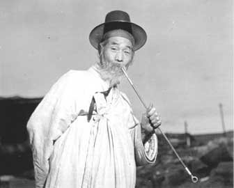

| 明治末期 最近朝鮮事情 現代から見た朝鮮とは | |
| 荒川五郎 & 阿井植雄 | |
| 阿井植雄 (2017) | |
| Tags: | 朝鮮 韓国 日本 明治 |
荒川五郎氏執筆による本章に入る前にこの章では当時のこと、本のこと、荒川氏のことなど少し説明したい。
本書の原著は１９０６年（明治39年）に当時衆議院議員だった荒川五郎氏が執筆し、清水書店から発行されたものである。日韓併合の3年前で、朝鮮半島最後の王朝・李氏朝鮮は明治30年に国号を大韓帝国としており、第二次日韓協約により朝鮮半島は事実上日本の保護国となっており、日本政府により韓国統監府が設置された時代である。これから日本の一部となる朝鮮半島を日本国民に紹介する目的で書かれた本で、書かれている話題は多岐に及ぶ。朝鮮での生活という観点からは、鉄道などの交通、気候、家、買い物など。仕事という観点から農業、漁業、金鉱などなどである。今後朝鮮半島で生活をする、仕事をする人に向けて書かれた当時のAll About 朝鮮である。
著者の荒川五郎氏は１８６５年生まれ。まだ江戸幕府があり、元号は元治だった（その次が慶応、明治と続く）。日本大学法律科を首席で卒業し、中国新聞主筆等を経て、１９０４年（明治37年）に衆議院議員に当選。朝鮮視察を行った後に書いた本が原著「最近 朝鮮事情」である。荒川氏は昭和5年には故郷広島に関した本「大廣島之創造」を執筆している。
荒川氏は１９４４年（昭和19年）に死去、発行出版社も今は無く、原著は絶版になって久しい。本電子書籍は著作権がすでに消滅している原著に改訂・校正、注釈増補し復刻したもので、荒川氏が生きた明治時代の朝鮮事情を、原著よりも読みやすく、現代の視点で加えた注釈増補でより詳しく感じることが出来る。
改訂は旧字を改める、古い言葉遣いを改める、などでなるべく原著に忠実にかつ読みやすいようにするを基本ルールにて行った。現代では使わないような言葉であっても理解出来ると判断したものはそのままにしてある。荒川氏の勘違いと思われるまたは明らかに事実と違う箇所などは訂正した。
注釈は、カッコを利用した（）内注釈とアスタリスクマークの*注釈の２通りを使っている。１行程度で説明できる場合（）を使用した。（）内注釈はほとんどは新たに加えられたもので、数は少ないが荒川氏が加えた（）内注釈もある。
１行以上の注釈文になる場合は*注釈を使用した。注釈にて説明する語の下に*を入れ、その段落の後に注釈文を入れてある。通常書籍では、注釈文は章の終わりにまとめて、本全体の最後にまとめて、という場合が多いが、電子書籍ゆえページを行ったり来たりすることは面倒になると思い段落後に置いた。複数の注釈がある場合、*、**、***とアスタリスクマークを増やして注釈文に対応させている。小説ではないので段落後に注釈文を置いても話の流れを止めることにはならないと判断した。時に注釈文が本題からはるかに外れ脱線をしてしまうこともあるが、興味を持つ人もいるのではと思い遠慮せずに長文にした。長文注釈に興味ないと感じたら、バンバンページを進めてどうかお許し願いたい。
注釈文の情報などはネットを大いに活用し、特にWikipediaなどを主に活用した。Wikipediaは時に誤った情報が書かれているが、なるべく間違っていないことを確認して利用した。
漢字のルビ（振り仮名）は、朝鮮の地名、名前などは漢字の日本語読みで平仮名で振った。ただ日本では知られていない場所、名前、もしくは朝鮮発音が日本で普通になっている場合などは朝鮮発音でカタカナでルビを振った。読み不明なものは当然ルビは振っていない。
原著から省いてある箇所もある。原著には本文前に朝鮮を紹介する写真もあったが、黒く潰れておりよく判別できず省いた。また序文も省いて、荒川氏執筆の本文から始めている。
原著の写真を省いた代わりにWikimediaなどにあるパブリックドメイン写真（著作権なし写真）や画像ソフトで地図などを作成し、該当するページに入れ込んだ。使われている画像は表紙の朝鮮おじさん、筆文字のタイトル、ハングル文字の章で使われているハングル文字画像以外すべて原著にはなく、電子書籍化する際に差し込んだものである。なお筆文字の表紙題字は山縣有朋元総理（第3代及び9代）によるものである。本文中にも数回登場している。
少し長くなってしまったが、次の行からは荒川氏による本章の始まり。荒川氏もびっくりした明治時代の朝鮮事情をどうぞ。
朝鮮は支那大陸の北部から南に突き出ている半島と周辺の大島、小島を併せ称し、日本の10分の６程の広さで、人口が１０００万ばかり（現在の北朝鮮約２５００万、韓国約５０００万人）、国内を８道に分けて鶏林８道(朝鮮８道)という呼び方もあるが、今はその１道が南北と２つに分かれたのがあるので都合13道、これを９府３００余郡に分けている。
日本と朝鮮との間は、世人が一衣帯水（ひとすじの帯ほどの狭さ）の間と呼ぶくらいで、天気の澄んでいる日には、我が対馬と朝鮮の釜山、巨済などとは、互いに朝晩の火も見えるという程で、下関から釜山までは50里（約２００キロ）ばかり、一夜のうちに達することが出来る。まさに隣というよりも国内同様の近所である。
したがって我が国と朝鮮との関係は深くして、かつ久しいことも中々で、神功皇后の三韓征伐*、豊臣太閤の朝鮮征伐から、近くは明治15年、同17年などの変、日清の戦役、またこの度の日露の大戦争など、皆朝鮮に関係しないのはない。かつ我が国内の内輪騒動でも、江藤新平の佐賀の乱にしても、西郷隆盛の西南の役にしても、皆朝鮮問題に因らないものはないのである。
*神功皇后（在位西暦２０１～２６９年あたり）による朝鮮出兵。百済、新羅、高句麗と朝鮮半島の大部分を支配下に置いたとされる。韓国ではファンタジーであり事実ではないとされている。
かように我が国の政治外交でまったく朝鮮問題に関係しないのは少ない位で、朝鮮の為に、我が国民の生命財産心血などをどれだけ費やしているか分からない程であるから、したがって朝鮮の様子、内情などは、我が国民はよく分かっていなければいけない筈である。
朝鮮の国はどんな成り立ちであるか、朝鮮の人民はどんな風俗であるか、すなわちどんな住居をしてどんな衣物を用い、どんな食物を食べ、どんな働きをして、どんな暮らしているか。朝鮮の土地はどんな土地で、朝鮮の気候はどんな気候であるか、朝鮮の町、朝鮮の村、朝鮮の山、朝鮮の川、朝鮮の野、朝鮮の田、朝鮮の海、朝鮮の港、朝鮮の農業、朝鮮の商業、朝鮮の工業などは果たしてどんなであるか。
朝鮮は行きやすいのか否か、朝鮮は住みやすいか否か、朝鮮にはどんな仕事があるか、朝鮮にはどんな利や害があるか。
これらは既に我国民はよく分かっていなければならぬ筈であるが、実際は分かっていない。非常に関係の深い、また往来の久しい間柄でありながら、その内情などには人々の多くはまだまだ詳しくないのである。
そこで朝鮮に関する事件が報じられるとき、やれ東学党の乱とか、褓商負商の輩がどうしたとか、朝鮮の内閣がどう変じただの、白銅貨問題がどうのということがあっても、その真相事実が判りにくい。
王城の騒動、その危急を朝鮮人民は長キセルを携へ悠々として来て見ている、光化門の前は見物の山を為す、という話を聞くと我々日本人には、朝鮮の人民は王城の難を平気で見ているとは果たしてどういうことであろう、と実に不思議な事である。日本人の考えとしては決してありえないことである。
朝鮮に移住せよ、朝鮮に殖民せよ、実力の扶植開発をせよ、運輸は開けた、交通の機関は出来たといっても、なかなか人々は案外に乗り込んで行く者が少ない。
これらは朝鮮というものが内地の人々によく分からないからである。朝鮮の経営は我が国民の責任と利害であると説明しても、朝鮮をよく理解していないのだから責めるのは無理だ。
これらの目的で、朝鮮の有様を素人にも分かり易いように、あまねく之を知らしめたいというつもりで、この書を書くことにした。
明治38年の秋から山陽、九州などの直通列車と、山陽鉄道（山陽汽船）が運行する下関と朝鮮南端の釜山とを結ぶ関釜連絡船が出来たから非常に便利である。釜山を発して京城(現在のソウル）に行く直通列車とを連絡するのである。この連絡船は下関から釜山の間を11時間で航海するので、下関から京城までたった一昼夜あまりしかかからない*。
*当時、釜山から現在のソウルである京城までは京釜鉄道で約12時間。東京から京城までは日本国内の電車、朝鮮までの船、朝鮮内の電車で合計60時間の旅。
日本からの運輸交通の汽船は、この山陽の連絡船のほかにも沢山ある。日本郵船会社や大阪商船会社は元々から常に朝鮮行きの船を往復さしている。この２社船と大家汽船部と大川運輸会社は、皆政府の命令航路をもっている。このほか、一個人持ちの船もある。
これらの船は皆大阪や神戸を起点として発し、神戸、尾道、下開（門司 所在地は北九州市）などに立ち寄り、客や荷物の積卸しをする。下開（門司）からは博多、長崎や厳原（対馬南部の町。２００４年に対馬市と合併）などに立寄るのもあるが、大きな船は大抵釜山に直行する。
釜山からは朝鮮の東回りと、西回りをするのものがある。東回りは元山浦、城津（現在の金策）などに行き、西回りは、木浦、仁川、鎮南浦（現在の南浦）などに行く。船により、馬山浦（現在は昌原市に編入）や群山に立ち寄るのもある。
汽船賃は大阪神戸から釜山まで1等15円（明治39年の１円は今の２万円程度）、2等10円、３等６円である。下関から仁川および元山浦へはいづれも１等21円、２等14円、３等８円で、下関（門司）から釜山までは１等10円、２等7円、３等４円であるが、山陽の連絡線は１等12円、２等７円、３等３円50銭である。
手荷物は、目方ならば１等１５０斤、２等１２０斤、３等６０斤まで、容積ならば１等18才、２等10才、３等５才まで無賃である*。
*１斤は６００グラム。ただし食パンの１斤は明治時代は４５０グラム、現在は３４０グラム。
１才は容積の単位で０・０２７８立方メートル。正方形だと３辺およそ３０センチ×３０センチ×３０センチ。現在も運送業で使われている単位。
船が関門海峡を出てからは響灘、玄界灘を過ぎるのであるが、玄海といえば昔から海路の難所と呼ばれており心配する人もあろうが、しかし今では何も別に気にする程のことは決してない。
昔は潮流の関係や航路筋に十分の研究が足りなかったり、またこの辺りで猟船の往復が多く、封州（中国）行の漁船などがこの辺りでひっくりかえることがあったり、また内海の油のように滑らかで静かな所から、多少浪の荒いの所に出て行くので不安を感じることもあろう。しかし今日では玄海とて何も違いはない、普通の海である。
しかし、ウラジオ艦隊となれば話は別。思い出せば、須知中佐の率いた後備某連隊、常陸丸遭難*の当時を思えば実に感慨や無量。
*常陸丸事件 日露戦争中の１９０４年（明治37年この本が発行される２年前）、玄界灘を西航中の陸軍徴傭運送船３隻がロシアのウラジオ艦隊巡洋艦に撃沈された事件。須知中佐は常陸丸の輸送指揮官、沈みゆく常陸丸で切腹した。日本側は輸送船２沈没、１大破、戦死１３３４名、捕虜１１２名、ロシア側は損害なしだった。
沖ノ島の北を過ぎ、日本海の大海戦*のあった名誉の新戦場を通りて、朝鮮の一角、釜山の港に進むとき、その爽快の観念は実に勃然として湧き来たらざるを得ない。この地を通過して国民は一層の勇気と自信力を増すのである。
*日本海海戦もしくは対馬沖海戦 １９０５年（明治38年）５月27～28日 東郷平八郎率いる連合艦隊がロシア最強バルチック艦隊に勝利した。
旅行といっても、保養や物見遊山の楽旅行を除けば、視察の旅行でも随分骨がおれる。まして朝鮮に入って一仕事しよう、財産を作ろう、功名をあげようと思えば、いくら仕事のし易い土地といっても多少の骨が折れるのは言うまでもない。
その希望目的をもって奮発し朝鮮に向かう者が、この新戦場を通り、この名誉の記念を見れは、一段と勇気、忍耐、奮励の気を振るい起こす材料となるはずだ。もしも一時一業を為すことが出来なければ、たとえ死ぬ時でも二度とここを通過してその名誉を汚してはならぬと誓うべき屈強の関所である。
実にこの場所は人心を激励する好関門で、名誉と光栄、実に、陛下の祖宗の神霊に對うるを得たるを喜ばせ給える光栄、名誉の大記念地であるから、国民たるもの、ひとたびこの所を通過したなら、それと同時に光栄と名誉とを一身に期して、手を空しうし不名誉の身を以って、再びこの場所を通過してはならぬことを誓わねばならぬ。
神后如何の希望を以ってこの地を通過して給いしぞ、太閤三軍の勇士如何の決心を持ってこの地を航せしぞ、あれから幾年月を経て、今は世界最大の強国ロシアを打ち、勇者忍耐者勉励者の通過すべき最も名誉の海路とす、思え国民の名誉と責任と、将た将来と。
連絡船が出来てからは、艀舟から停車場への車賃なども皆連絡する方法になったのであるが、もし釜山で宿を取ろうと思う人は宿屋の客引きに荷物などを一切まかせるもよい。さらに波止場には朝鮮人人足が沢山ウロついているから、別に荷物の運搬などに心配は要らぬ。
波止場周辺に足の長い擔子（背負子）を背負ってブラついている朝鮮人は、皆荷物などを運搬することを仕事にしている人足で、艀舟から上陸すると五月蠅いほど競り合って来る。
この人足を朝鮮ではチゲクンという。チゲとは擔子のことで、チゲクンとは担夫を意味するのである。「おい、チゲ」と呼べば押し合って来て、その擔子をおろし荷物をこれに積んで何処までもお供するのである。
もっとも荷物を陸上に上げると、朝鮮の税関から役人が出て、一々荷物を検査する。自分の手回り荷物は無論無税であるが、同じ種類の物品が沢山ある時など税をとられることもある。
旅客携帯の猟銃のような銃器については、海関税がとても高く、ただの護身用のものでもその手続きが面倒であるから、これらのものを持っているときは少なからず時日と手数とを要することを承知していなければならない。
ところが連絡船では、船内に税関史が乗り込んで来て取調べをしてくれることになったから、大いに便利となった。
上陸すればスグ釜山の市街、すなわち日本居留地で、サスがここは徳川幕府時代から早く日本人の部落をなし*、それに明治９年からは公然開港場となった所だけあって、今では３０００の日本人家が軒を並べ、中には３階建ての高い旅館もあり、また10数間の広い商店などもあって、日本内地の都市や港と異なることはない。
*明治以前は日本居留地を倭館と呼んだ。かつては朝鮮半島に倭館は複数あったが１５９２年に始まった豊臣秀吉の朝鮮出兵のため国交断絶、倭館もなくなっていた。１６０７年に最初の朝鮮通信使が来日し、その後度重なる交渉で国交が回復。徳川幕府は対馬藩を朝鮮外交担当とし、釜山に倭館を置いた。
ただ、なるほど朝鮮の土地だと思われるのは、白き衣物に長いキセルを携えている朝鮮人の帽服立派であったり、チゲを背負っているムサクルしいのやらが沢山アチコチしているからで、これが日本内地と異なるところである。
町名も日本的に本町、北浜町、弁天町、幸町などで、皆１丁目、２丁目、３丁目などとあり、そのほか、琴平町、常磐町、入江町、南浜町などがあって、12区に別れ10万坪の広さがある（参考として、東京ディズニーランドは駐車場を除くテーマパークエリアが約15万坪）。
釜山は京釜鉄道*の起点であるから、朝鮮内地に入ろうと思う者、また京城や仁川に汽車により行こうと思う者、そのほか海路から馬山浦や木浦、群山、仁川、元山、城津などに往来をする者など、皆この地に寄航しない者はないから、大船小船織るがように出入りし、内地との交通は実に１日も止むことはないのである。
*京釜鉄道は京城・釜山間の鉄道。渋沢栄一らが１９０１年に京釜鉄道株式会社を設立、05年開通。その後京仁鉄道を合併し拡張した。詳しくは京釜鉄道の章で。
それに港は随分深い上に広く、前には絶影島(現在の影島）が牛が寝ているように蟠り、居留地に背負われて鬱蒼と松樹の茂っているのが龍頭山で、これには金比羅神社があり日本の公園として風景に富み*、夕方４時の観風に宜しく、またその前面波止場にのぞむ小丘を龍尾山といって、加藤清正の言霊が祀ってある**。そうして海水を隔てて絶影島に祭ってある関帝関羽廟と相対している***。
*江戸時代にこの山の一帯は倭館だった。１６７９年に金比羅神を祭神とした龍頭山神社が創建。第二次世界大戦後破壊されて今は一帯が龍頭山公園になっている。
**龍尾山には１６７８年創建の龍尾山神社があり加藤清正の合祀は１８１９年。昭和に入り龍尾山神社は龍頭山神社の側に移転。戦後共に破壊された。
***朝鮮半島の各地に三国志の英雄・関羽をたたえる関帝廟がある。絶影島の関帝廟に関しては調べたところ現存しているかは不明。なおソウル東門の関帝廟は観光地として賑わっている。後で本文でも述べられるが、秀吉の朝鮮出兵を撃退したのは英雄・関羽が見守ってくれたからで感謝して関帝廟を作れと中国に言われてあちこちに作ったそうだ。
この地には理事庁（統監府の地方機関）や憲兵隊などを始めとし、病院や学校、銀行、会社、商品陳列館などことごとく備わり、電燈もあり電話も通じ、また近頃は水道も敷設され下水道も改良されて何かと整頓している。朝鮮地内にこの日本の大市、見るからに心持ちがよい。
そうして朝鮮人の家はアチラの山の端やコチラの海のすそなどに見すぼらしくグロッグロッとしている。市中には朝鮮家は１戸も見当たらぬ。
釜山の人口は１万３０００というが実際にはモットモット多い。それは釜山には分頭課金と称して一種の分頭税をとるから、これを避けようと思うのか否かは知らぬが、居留民役場に届出をしていない者が沢山いる。その数目下およそ３０００から４０００人もあろうとのことである。
朝鮮へ行くには釜山に着いて、それから京釜鉄道で内地に入り込むことが出来るのは言うまでもないが、そのほか東側では元山や城津、南から西のひらでは、馬山浦、木浦、群山、仁川、鎮南浦などの開港場があって、商船会社は勿論、郵船会社の船やそのほかの船も常に往復しているから、思うところ何処へでも行くことが出来る。
仁川と釜山と元山は朝鮮の3大要港で、其仁川が朝鮮の首都京城(現在のソウル。仁川から50キロほど）を控えて、朝鮮西海岸に於ける通商貿易の中心点となっている有様は、ちょうど我が横浜によく似ている。
釜山は日本に一番近く、純粋に日本的で、元山はウラジオストク港と遥に相望んで、幾分か対ロシア的の特色を帯びているが、仁川となると支那と相対して、また日本にも便利がよく、その上京城の出口で、世界各国の人の出入貿易の地になっているものであるから、市街などの有様が自然世界的の雰囲気をもっている。
仁川は世界的という中、やはり日本の商業が一番繁盛しているのは言うまでもなく、目下輸出は殆ど日本商人の独り舞台であるが、しかし輸入となると支那人が張り合ってなかなか盛んにやっている。また近年はアメリカそのほか西洋商人も侮り難い勢いをもっている。
日清戦争で、支那政治の勢力を朝鮮から追い出しながら、多くの輸入品による利益で遅れをとり、我が日本人の実業的勢力が足りなかったのは遺憾の至りで、この所、日本実業家の奮発勉強を祈るところである。
綿布、綿糸、紙煙草、マッチ、縄、叺（かます、わら袋のこと）、石炭、酒類、並びに雑貨などは我が日本からの輸入が主である。今後、支那からの輸入が主である絹織物や夏布など、および西洋からの輸入が主である石油(明治末期まで日本は石油の産出量が多かった）、麺粉、香港産の砂糖などを日本人の手により輸入するに至れば、仁川の貿易すなわち朝鮮の貿易はますます日本人の一手と言ってよくなる。
仁川の港は漢江の流れをひかへ、前面には月尾島*が横たわっているが故、船舶の停泊に十分の安全を与へているが、土地が狭いのが遺憾で、今は後ろの山まで町となり、前は海がおいおい埋め立てられている。
*月尾島は日本統治時代に島と陸地の間の海が埋め立てられ陸続きになり、日本人向けの別荘、海水プールなどが作られた。最近の話題では月尾銀河レールという観光用モノレール。手抜き工事など不祥事の大連続で廃線状態。
日本の居留地は中央にあって、最もよい所を占め、西は清国居留地、東は各国居留地に包まれて居て、本町、裏町、山手通、海岸通の４條に分けている。
日本人はおよそ１万人ばかりもいるが、なお日々増えつつあって、目下日本居留地、各国居留地を中心として、西の清国居留地にも日本人が入り込み、また東南の朝鮮人町の方面にも広がりつつあり、これら居留地民が清国そのほかの外人に支払う借地料および借家料は１ヶ月３万円(1円が現在の2万円とすると現在の約6億円)以上にも及んでいる。
日本居留地には領事館は勿論、警察署、郵便電信局、居留民役所、病院、銀行、会社、寺院、学校、米豆の取引所、劇場などことごとく設備されて、商人は大抵組合を設けてやっている。公園も各国公園のほか、日本公園があって、南の方海に面し丘の上には大神宮の社もあり、樹水も茂って、仁川第一の眺望を占めている*。
*日本居留地があった場所は「仁川旧日本人街」として観光地となっている。当時の町並みを再現し、かつての日本の領事館や銀行、海運関連の建物が保存整備され、博物館もある。
仁川は今では朝鮮第一の貿易港で、総人ロも5万ばかり。今を去る23年前の昔、明治16年の春に初めて開港された当時は済物浦と呼ばれ、ただ数戸の食事所がみすぼらしく蘆荻（湿地帯に多い植物）の間に点在していただけなので、それを考えると驚くべき大進歩ではないか。
仁川の北上にある鎮南浦も、明治30年の秋に開港となるまでは寂びしい小村であった。その後非常の進歩で、各国居留地は丘陵の間に挟まり、90万坪の土地。最初に日本行商がまずここに住居を定めると、朝鮮人も我も我もと移住してきた。今では日本理事庁を始め、居留民役所など諸種の公設物は一通り備わっていて、日本人は６００人あまり、清国人は２００人あまりいる。叉三和街道に沿っている朝鮮人町の人口も２０００余り、これも日々増加しつつある。
鎮南浦は平壌から37マイル（約60キロ）。大同江の河ロで、平壌の門戸にあたる。
平安道の都邑（町、都会）と交通し、黄海道の農産地を控え、遥かに北清地方と相対して、商業上形便の地を占め米穀の輸出は第１位である。しかし冬は大同江が氷結するため、その間交通の便が閉じられるのは残念である。
元山は朝鮮３大港の一つで、永興湾に在り、東西１理（約４キロ）にもなる長方形の市街は元山里と呼ばれる朝鮮町であるが、その北の方、赤田河から北が居留地である。この地は釜山とロシア・ウラジオストクとの中程にあってどちらへもおよそ３００マイル(約４８０キロ）余りである。
人ロ４万余り、その内日本人３０００ばかり。理事庁、守備隊や、馨察、郵便そのほか諸般の設備も一通りそろって不自由なく、最近は日本人が多く入り込んできている。またこの地には豊公征韓の役（豊臣秀吉の朝鮮出兵）に加藤清正が築城したという石壁の遺跡がある*。
*豊公征韓の役に日本軍が朝鮮半島に築いた日本式の城（城砦群）を倭城という。現在城跡が観光地となっている場所もある。残念ながら建築物で残っているものはない。残っている石垣なども修復の仕方が北朝鮮や韓国の人にはわからないため荒廃が心配されている。NHKの大河ドラマ「軍師官兵衛」の黒田官兵衛と息子・黒田長政が築いた城もある（機張倭城と梁山倭城）。倭城は拠点をつくるため築城したもので上陸した朝鮮半島南部に集中している。加藤清正が築城した元山の倭城に関してはネットで調べたが情報がなかった。加藤清正は朝鮮半島を縦断して中国の国境近くまで侵攻しており、元山に入ったことは間違いない。元山が現在の北朝鮮内ゆえ簡単に行ける韓国と違い情報が少ないのかも知れない。加藤清正が築城した倭城では釜山から北70キロ、韓国の捕鯨の拠点として知られる蔚山の西生浦倭城が知られている。文禄の役の和平交渉が行われた。
清国居留地は日本居留地の西北の隣にあり、戸数はわずか20軒ばかりに過ぎないけれど、その商売は遥かに日本人の上で、税関の納税額は日本商人の２倍に達しているそうで、実に残念な話しではないか。
気候は寒さ暑さとも非常に厳しいけれど、四方どちらも土地が肥えて居いて農産物が沢山で、また沿海一帯で海産物が富んでいる上に、銅鉱および金鉱などが近い所にあるから、貿易はだんだん進歩して盛んになりつつある。
輸入は白木綿や綿糸が主で、また輸出は砂金が大変多くこれは日本に輸出する。砂金の次に明太魚（スケトウダラ）、麻布、鯨の肉、生牛などの輸出も多く、魚介類が多いのも勿論である。またこの地から出る塩は、日本の塩に比べて苦味が少なく辛味の中に甘味を含んでいてその品質は余程良い。産出する量が多くないのが遺憾である。
元山から海路を進むと、城津という明治32年の春に開港した場所がある。今度の戦争で名が知れたが*、各国居留地には只日本人が１６０～１７０人いるばかり。ほかに外国人は居ないので土地柄はよいにもかかわらず、南西風などの風浪をよけることが出来ないから、貿易港たる価値はない位である。
*城津が日露戦争で名が知られることになった理由は調べたがわからなかった。ただ城津と日本の関わりで興味深い話が一つあった。城津にあった「北関大捷碑」。文禄・慶長の役の際、朝鮮北部の義勇兵が日本側の加藤清正軍などを撃退したことを記念し、現在の北朝鮮の金策市である城津にこの碑が建てられた。これを日露戦争時、池田正介少将が発見。朝鮮半島から日本へ持ち帰り靖国神社の軍事博物館「遊就館」に寄贈している。韓国が返還を求めていたが２００５年、韓国経由で北朝鮮に返還された。なお池田少将は悪気があって碑を持ち帰ったのではなく、「日本が統治することになるであろう朝鮮にこの碑があるのは日本のイメージに良くないと考え、碑を建てた人の子孫、地域住民と協議し撤収することになり持ち帰った」という資料が複数あるという。
また南は下りて馬山浦は昔から日本行商の根拠地として有名で、また元冠が日本に攻め入るときの艤装地*として知られていて、日本理事庁も警察署、郵便局などもあり、日本人５００人ばかり居て、商業はだんだんと繁盛となり、その権利は殆ど日本人の手にある。
*艤装とは船体が完成して進水した船に就航に必要な装備を施すこと。馬山浦は元寇の際にモンゴル軍が日本征服の根拠地とした。当時の軍が使用したという蒙古井戸が現在も残っている。
この地は、我が対馬から50マイル（約80キロ）、慶尚道の都邑(町、都会）を近辺に控え商業上の好い位置であるが、しかし湾入が深く航路が曲がって、その上東北の方の海が浅いため、船の出入りや停泊に不便が多い。しかし西南の方は海も深く、かつ１里(約４キロ）離れたところに有名な鎮海湾*がありそこは大船を泊めることが出来る。
*鎮海湾は、日露戦争で対馬海峡を通りウラジオストクに向かうと予想されるロシアのバルチック艦隊を迎え撃つため、日本海軍連合艦隊が拠点とした。横須賀の三笠公園に保存されている戦艦三笠は、東郷平八郎大将が座乗した連合艦隊の旗船。鎮海湾から出航しこの海戦に参加した。
木浦は全羅道の中央を流れている栄山江の河口で、後ろは湖南（全羅道のことを湖南と呼ぶ）の平原で、前は多島海と、海陸の物産に豊かで、気候もよく、景色もよく、港内も広いから大きな船も泊めることが出来るので、つい最近の明治30年の秋に開港したにばかりにもかかわらず、なかなか見込みがある。
全ての朝鮮の東海岸は潮汐の満ち干の差が極めて少ないけれど、西海岸になるとその差が非常にあり、仁川では30尺(約９メートル）も差がある。これが仁川などの一欠点で、この木浦もその差が多く、ここはまた潮流が急激であるから船の往来も困るのである。
しかしこの辺一帯は有名な米産地で、栄山江の川筋近くは皆土地が肥えて、沢山出来る米の品質も良く、我が九州米にも劣らない程で、この地から我が国に輸出する米が非常に多い。したがって今日本人で住んでいる者もすでに１０００人余もおり、理事庁を始め、諸般の設備は備わっている。
群山は全羅道・忠清道に流れている錦江の河口の南岸にあって、長岩鎮と相対している。ここは風浪のおそれはないが、港が浅く、かつ岩礁などが多いから船の出入りが困る。また潮流が急だから小さい船が泊まりにくい。
けれどもこの錦江の上流沿岸の地は全て米穀の産地で、江景という所まで船を進めて輸送の利用が出来るから、開港当時は寂しい村であったが、その後日々盛んになって、今では朝鮮人が３０００余り、日本人が１３００～１４００に及びなお増加しつつある。
この辺は土地が大変良いから、最近は日本人が目をつけて耕地を買い入れた者が多い。付近を併せて１６００町（約１６００ヘクタール≑東京ドーム３４０個分）にも及んでいて、居留地１里（約４キロ）以内の耕地は既に３分の１以上は日本人の所有である。また前の木浦辺りにも日本人で耕地を買い入れている者が少なくない。この両地は将来中々見込みのある所と思われている。
*京釜鉄道は日本統治時代の朝鮮における、京城（現：ソウル）と釜山を結ぶ鉄道。朝鮮政府がアメリカ人事業家モールス（James R. Morse）に鉄道敷設権を売却するもモールスは資金難で計画頓挫。当時の金額で１８０万円(現在の額で約３６０億円）で敷設権を買い取った当時の大物実業家・渋沢栄一らが１９０１年（明治34年）に京釜鉄道株式会社を設立。１９０５年(明治38年）全線開通。１９０６年（明治39年）に韓国統監府（日本の朝鮮半島の出先機関）に売却し日本の国有鉄道となった。
左の図は鉄道の章で紹介される朝鮮半島の鉄道路線図。
鉄道の話題とは離れるが、ここまで何度か荒川氏が取り上げている加藤清正だが、文禄の役では南端釜山に上陸。京城に入ってから北進し、その後東側の進路をとり会寧まで侵攻している。また今後よく取り上げられる小西行長は平壌まで侵攻した。
京釜鉄道は日本内地ではまだ見ることが出来ない広軌鉄道*で、幅の広いだけでなく天井も高くて気持ちが快い。プラットホームから車室に入る所も３段の梯子上りになっている。
*広軌鉄道とはレール間隔（軌間）が標準軌の１４３５ミリメートルを超えるものをさす。日本では１０６７ミリメートルが標準のためそれ以上を広軌と呼んでいた時期があったが、ＪＲ化後に国際的な意味の広軌と混同する恐れからその用語の使用をやめている。日本では国際的な意味での広軌鉄道は製鉄所で採用したケースがあるが営業用路線は存在しない。
京釜鉄道といえば京城から釜山までの鉄道を意味するが、釜山の停車場は今は釜山から10数町（１町は約１１０ｍ）の草梁*という所にある。
しかし釜山市街の東端に３万坪の新埋立地があつて、ここまで延長する計画であるから、そうなったら水陸船車の連絡が完全になり、交通は非常に便利となる。
*釜山駅は１９０５年(明治38年）に草梁駅として開通。この本が発行された２年後の１９０８年（明治41年）に釜山駅に改称された。
釜山(草梁)から京城の西大門まで２７４マイル（約４４１キロ）、停車場の数が53（現在の京釜線は90）。ちょうど京都から東京までの距離で、また東海道五十三次と同じ数であるのも面白い。
京釜線中の永登浦駅から仁川に往復する支線は７駅19マイル（約31キロ）あり、仁川から永登浦駅を経て京城まで11駅27マイル（約43キロ）は米人モールスが明治29年の春に敷設権を得て始めた京仁鉄道*であるが、我が国の有志が政府の補助を得てようやくこれを買収してこれを京釜鉄道に合併したのである。
*京城と仁川を結ぶ京仁鉄道は京釜鉄道よりも６年早く開通しており、朝鮮半島最初の鉄道である。京釜鉄道同様に渋沢栄一らが米人モールスから敷設権を買い取り、１８９９年（明治32年）に鷺梁津〜済物浦間で開通、翌年には京城まで延び全線開通した。京釜鉄道の工事着工はその翌年の１９０１年。
京城から義州に達する鉄道、すなわち京義線は京城南大門の次の龍山駅から敷設されてあるから、今では釜山の玄関口から義州の奥満洲境まで我国の鉄道が走って朝鮮を縦貫している。もし元山に至る分が出來ればこれを横断することになる*。また京釜線の三浪津駅から馬山浦へ**、また京義線の黄州駅から兼二浦へ支線が敷設されている***。
*この本が発行された８年後の１９１４年（大正３年）に龍山駅～元山駅を結ぶ京元線が開通した。さらに満州（中国東北部）への連絡を図るため敷設された元山駅～会寧駅間の咸鏡線が１９２８年（昭和３年）に開通。現在は北朝鮮と韓国で路線は分断されそれぞれの国の中で運用されている。
**馬山浦支線。日本軍が輸送用として１９０５年（明治38年）に開通。韓国独立後、路線は延び１９６８年には光州広域市にある光州松汀駅（開業当時は松汀里駅）まで延びる慶全線となった。
***兼二浦支線。わずか13キロほどの軍用線として開通。現在は松林線となっている。
駅には大小それぞれ相応の停車場があって、駅長や駅員の主なる者は皆日本人で、ほかに日本巡査も居て何か尋ねることでもあれば親切に教えてくれる。また大きい駅になると日本憲兵もいる。改札係やそのほかの小役には朝鮮人を使っている駅も多いが、皆日本の駅員の服装に日本語を使っている。
主なる駅には弁当、寿司そのほかの飲食物も販売している。、中には朝鮮人の売子もいるが皆日本語でやっている。場合によっては朝鮮の婆さんなどが朝鮮団子や餅などを売りに来ることがある。彼女らは日本語を知らないので日本人客と互いに手真似の馬鹿問答。時たま滑稽を演じ、能や芝居より面白い時がある。これも旅の一興、朝鮮汽車の一名物といってよかろう。
この様に日本の鉄道で日本語で、朝鮮内地の縦横十文字に乗り回すことが出来るのは何と愉快なことではないか。否、愉快なばかりではない。これに伴う実利実益は実に莫大なものである。
去る明治27年の日韓暫定条約（日朝暫定合同条款）で京城釜山間および、京城仁川間の鉄道を、我が政府または人民で敷設する権利を得たのであるが、戦勝（日清戦争、明治27～28年）に酔うた国民も国民、対韓外交をまごついた政府も政府。つい29年に至り京仁線は前に述べた米人モールスにとられ、京釜線もフランス人グリロに獲られそうになった。何と情けない話ではないか。
足元から鳥が立つ、ヤーと騒ぎ出す、何、こんな事ことは初めから判りきつている。暫定条約でもする位ならその必要や利益を認めてのこと。日本人が気づく位なら西洋人もすぐ気がつく。ぐずぐずとしていれば獲られるのは当たり前のこと。
暫定条約で敷設権は既に日本が得ていると苦情を入れても、暫定とは当分の意味、既に３年*は達っているということでツイ京仁線はモールスに獲られた。暫定条約で３年も捨てておくのは間違えであるのは言うまでもないが、交渉談判の無様ときたら実にお話にならない。この度の日露戦争の後始末に関しては、前のを悪し手本として、こんなヘマなことをせぬよう注意万端周到綿密に、かつ、将来の大計大策のため、十二分の辛抱と勉強とを以てこれを進行進取進活進動をなさねばならぬ。
*１８９４年（明治27年）８月20日に日朝暫定合同条款、１８９６年３月29日（明治29年）に朝鮮政府は京仁鉄道敷設権をモールスに売っているので本文中の３年ではなくわずか１年半強で朝鮮政府は条条款違反を犯している。その翌年１月にアメリカ人モールスが京釜鉄道発起委員長・渋沢栄一に京仁鉄道敷設権の譲渡を申し出した。
前にも述べた通り、京釜鉄道は１８９４年（明治27年）の日韓暫定条約で種をまいたのを、まだ芽の生えぬうちに米人虫が京仁に入り、また仏人虫が京釜に入ろうとしたので、にわかに驚きだしたのであったが、もしこの時やられてしまったら実に我が事終わりで、将来我が対韓経営は全く駄目となり、莫大な人生財産の犠牲も何も役に立たないことになるわけで、あぁ危ないかな危ないかなであった。
深くこれを憂いて立ったのが渋沢栄一*、大三輪長兵衛**、尾崎三良***、竹内綱****、前島密*****らの諸氏であって、東奔西走、遂に１５０～１６０名の発起人を得て、わが政府に請願し、時の公使・原敬氏（明治29年に全権公使として９ヶ月在韓。内閣総理時大臣になるのはこれより17年後）が大いに朝鮮政府に迫り、ようやくにして原敬氏の後任の加藤増雄氏の時の１８９８年（明治31年９月）に、朝鮮政府と３ヵ年以内に起工するを許すという京釜鉄道契約を結ぶことが出来た。この間には京仁鉄道買い入れの件もありその心配は中々容易なことではなかった。
*渋沢栄一（１８４０～１９３１）は日本資本主義の父と呼ばれる資本家。銀行、証券取引所など５００以上の会社・組織の創設、育成に携わった。
**大三輪長兵衛（１８３５～１９０８）は大阪の実業家。朝鮮では貨幣制度の改革に関わった。現在のみずほ銀行の前身である第五十八国立銀行を設立。
***尾崎三良 （１８４２～１９１８）は京釜鉄道事業初期は中心人物であったが日露戦争もあり政府が鉄道事業に関わってくると身を引いた。
****竹内綱（１８４０～１９２２）は吉田茂の父。京釜鉄道常務取締役となる。
*****前島密（１８３５～１９１９）は近代郵便制度の創設者。１円切手の肖像。
この様に敷設権を得て会社を創立することにはなったが、ちょうどその時、金融は逼迫し諸株券など下落していた時であったため、株式の募集にも応じる者もいない。やむなく政府に懇請して会社の建議を得て、明治33年年９月に至りようやく政府（山縣有朋第二次内閣）から６朱の補給利子をもって保護されることになった。
ところが３年の期限はすでに空しく丸２年を経過した。ぐずぐずしているうちに期限は来る。また前の暫定条約のようになる恐れがある。
創立委員らは四方に奔走する。各地の新聞なども鼓吹につとめる。苦心惨憺ようやく明治34年の４月に第１回の払い込みをし、６月に創立総会を開く。７月に重役が渡韓し交渉する。ようやくにして期限が切れる僅か半月前の34年８月20日に永登浦で起工式を挙げて辛うじて汗を拭ったという、なんとも苦しい話だった。
次いで第２回の株式募集をして払込を促がすやら、社債を起すやらして、その一方で山坂の難所も次々出てきて、大小の川も少くない。工事に骨が折れる、事業は進まないという有様。創立に手間取ったのと同じく大苦労だった。
ところが明治36年の末、日露の関係が切迫してきたので、政府はこの鉄道事業速成の必要を感じ、明治37年中に全線を成就せよと命令し２２０万円(現在の約４４０億円）を下付し、また１０００万円(現在の約２０００億円）の社債元利の保証をし、非常に急いでようやく同年の11月10日に全部開通するに至った。翌38年の５月に開業式を挙げたのである。
政府からは右の外、１５８万円(現在の約３６０億円）の貸下げもしたりして、結局この鉄道敷設には２９５０万円、すなわち３０００万円(現在の約６０００億円）*足らずの金がかかったそうである。
*参考になるのかならないのかは忘れて、２０１５年度開業予定の北海道新幹線（新青森駅～札幌駅 約３６０キロ）の建設費総額は平成18年度の試算で１兆５４７０億円。２０２７年開業目標のリニア中央新幹線(東京～大阪）の建設費総額は10兆円近くと見積もられている。
この大金をかけ、かつ全国をかけ、心配に心配して出来た鉄道でもあり、これから国民は十二分に利用活用しなくてはならない。どしどしこれを利用して朝鮮内地(内地とは日本人慰留地や雑居地を除く、朝鮮人町のこと）に入り込み、大いに手腕を振るい一仕事も二仕事もしなくてはならない。
この鉄道により我が国と朝鮮との関係を親密にし、かつ近よらせて日本大発展の基をなし、これを京義鉄道と相連ねて、おいおい満州鉄道に続けて支那内地との交通路にし、またロシアのシベリア鉄道にも連絡して世界の大交通路にしなくてはならない。
汽車賃は釜山から京城まで４円15銭(現在の約８万３０００円）、京城から仁川まで４７銭(現在の約９４００円）、これが３等料金で２等はこの倍、１等は３倍である。手荷物並びに貨物の取り扱いは、貨物を通常貨物、大貨物、速達貨物に分けて取り扱うとの事。その賃金の割合や、切符の通用期限、子供の無賃・半額賃などは大抵日本内地と同じ様である。
草梁は現在京釜鉄道の起点で（その後に釜山駅と改称）、ここから汽車に乗ってみれば、さすが広軌鉄道の大きいこと、内地のように１等も２等も長腰掛になっておらず、３等を通して同じように左右２列になって、どれにも布や皮が敷いてある。異なる所は２等は３等より、１等は２等よりその幅が大きくて、敷物やそのほかが立派であることのみである。ただし直通のほかは一等車はつけてない。
直通には食堂列車がついていて、食事を命じればテーブルを車室に持ってきて、これに食事を運ぶ。寝台車はないがそのかわり、空気枕など貸してくれる。むろん給仕がついており何かと世話をしてくれる。
草梁駅は元々寂しい漁村であったが、今は日本人も４００人余り、韓人１６００人、停車場構内予定地は10万坪に上っている。草梁の次が釜山鎮駅で、この地は我が国と昔の貿易地であるのみか、豊公征韓の役で我が諸軍はここから上陸して三方に分かれた。山上の石壁は小西摂津守*が築いたとのこと。ここから北へ２里（約８キロ）程行けば東莱府**がある。今も繁華で、その北へ半里(約2キロ）行けば東莱温泉がある。湯も良く、景色も良く、日本旅館もある。
*小西行長 １５５８～１６００
文禄の役で豊臣秀吉に先鋒に指名された。釜山の攻略を皮切りに次々と朝鮮軍を破り京城や平壌の攻略も果たす。慶長の役でも再び朝鮮半島に出兵した。関ヶ原の戦いで石田三成に呼応するも敗れ斬首された。
山上の石壁とは釜山倭城跡のこと。荒川氏は小西行長築城としているが毛利輝元の築城。この城は昔は小西城とも呼ばれていたため小西行長築城と間違える人が多かった。この場所には元々朝鮮の城があったが小西行長が陥落させた。李 進煕著「倭館・倭城を歩く」によると、「１５９２年４月13日の日暮れ、小西行長率いる１万８０００人が７００隻に分乗し上陸。小西行長は城で迎撃態勢取る鄭撥将軍に仮途（道を借りること）を要請するも、鄭撥将軍は無視。翌朝早朝に日本軍の鉄砲隊が高地から城内へ一斉射撃を開始。手梯子を使い城内に入り込む日本軍。わずか６００名の朝鮮軍に城内にいた女・子供も弓をとり石をとり抵抗。しかし３時間で城は落ちた。女・子供は日本へ連れて行かれ二度と朝鮮に戻らなかった」という。また「この戦いの後に５ヶ月で築城された倭城は１５９８年（慶長の役後）に日本軍が朝鮮から退却する際、日本軍の手により破壊された」とのこと。この戦いで戦死した鄭撥将軍は韓国では英雄の一人と数えられている。釜山には鄭撥将軍を祭る鄭公檀や銅像がある。銅像前は釜山の市民団体の反日運動でよく使われているのかときおりネットのニュースになっている。
**東莱府とは朝鮮王朝の地方行政機関。日朝関係において、朝鮮側の外交窓口として重要な機関であった。明治９年に日朝修好条規が結ばれ、公使は京城に置かれることとなり役割を終えた。東莱温泉は観光地として今でも賑わっている
亀浦駅の地は洛東江（全長５２５キロの韓国最長の河川）の重要地で勿禁駅、院洞駅もその流れに沿っている。それから三浪津駅に至れば馬山浦に通じる嶺南鉄道（馬山浦支線）と分岐している。この村落には広島、奈良、高知、熊本、岡山などの農家などが入り込んでいる。
三浪津から嶺南鉄道（馬山浦支線）で西に走れば洛東江の巨流に架けた１８００尺(約５４５メートル）の長橋（洛東江橋）を渡り、１０００尺(約３００メートル）以上の馬沙峠のトンネルの闇を破って進永の村落を過ぎ、豊公文禄役の遺跡*があり昌原郡守のいる昌原という所を過ぎやがて馬山浦に到着する。
*馬山倭城(昌原倭城）で鍋島直茂・勝茂親子が築城した倭城。
三浪津駅の次の京釜線は密陽駅で、密陽城*は郡守の住む賑やかなところで、我が憲兵隊、電信隊や、日本人の建てた開昌校というのがある。朝鮮人の家は皆低く草屋であるがこの長信洞（原文ママ、なんのことか不明）は瓦屋を並べて居て朝鮮では実に珍しい。
*小西行長が文禄の役で１日で密陽城を落城させている。密陽は韓国３大アリランとして有名な密陽アリランの発祥の地。
密陽駅から楡川駅(現在の上東駅）、米産の有名地である清道駅を過ぎて１マイル余り（約１･６キロ）進めば、ここに名高い南省峴トンネル*がある。長さ３９６０フィート（約１･２キロ）に及ぶ。トンネルが出来るまでは建築列車を運ぶためにスイッチバック**と呼ばれる山腹を迂り廻って上り下りする仮鉄道が敷かれてあった。その設計は余程功名であったから大浦逓信大臣からその写真を御上のご覧に供え奉つり御手元に差し置けよと仰せられしと承る。ここを通過してみれば苦心の程は相当であったと察することが出来る。その仮鉄道はキハクトンネル（キハクの漢字判読出来ず、振り仮名より）などほかにもあったそうである。
*１９３７年までこのトンネルは使われていたが現在は新トンネル。旧トンネルは清道ワイントンネルという清道名物の柿を使ったワインの一大テーマパークとなっている。
**スイッチバックとは折り返し式の鉄道線路。険しい斜面を登坂・降坂するため、進行方向を反転するための折り返し場を経由して上に昇っていく。図では白い２本線が先頭車両で山を登り途中の三合目駅を目指し、駅に入ると、今度は真っ黒が先頭車両にスイッチバック、七合目駅を目指す。斜面の上り下りだけでなく、単にその地点で列車が折り返すだけの構造のものもスイッチバックと呼ばれる。韓国の鉄道マニアにもスイッチバック線は人気なのか、２０１２年にトンネル完成のため廃線となった嶺東線興田駅、羅漢亭駅のスイッチバック区間の線路を再開発予定。トンネルなどを活用し、レールバイク（軌道自転車）や観光列車を走らせるスイッチバックリゾートにする予定だという。
慶山の次は大邱駅で、大邱府は南韓第一の都会である。観察府以下、郡衙兵営など総て備わり、人口４万５０００、日本の憲兵隊、駐剳隊、郵便電信局などもあり、日本人は１０００人余りいる。居留民役所もあり日本人向け新聞も発行されている。おまけに正義派とか革新派とかすでに党派を作り(共に同じ思想。反対の思想党は、保守派、俗論派）、内地的だ朝鮮的だと互いにせめぎあっている。
新洞駅の次の倭館駅は文禄の役の後、将士でこの地に留まった者があるためこの名がついたのだとか*。若木駅、金鳥山駅の山村やトンネルを過ぎると、金泉駅は賑やかな所でまた龍湖駅の次の秋風嶺駅は海面よりも７２０フィート（約２２０ｍ）もあり、線路中の最高所。この辺から黄澗駅、弥勒駅（開通後数年で閉鎖）までの間がもっとも景色が良い。
*倭館駅の由来は、ウィキペディアなどネットでは文禄・慶長の役の時に日本の兵糧集積所があったことに由来するとなっている。現在は米軍基地がある。朝鮮戦争では北朝鮮と連合軍の激戦の場となったため当時の町は完全に消滅。
永同は文禄の古戦場で、落花台*の古跡もある。深川駅、伊院駅、沃川駅を経て、増若駅に至れば、４個のトンネルがある。一暗一明の中にここを過ぎて大田駅に至れば、この辺り一面は千里の大平野。南韓富源の宝庫だと言われている錦江流域に続いているので、日本人も既に入り込んで農場菜園などを開いている。坪村駅から３度トンネルを過ぎて新灘津駅を過ぎ、錦江の長橋、錦江橋がある。１２００フィート(約３６５ｍ）もあるそうである。この長橋を渡って馬尾浦（開通後数年で閉鎖）を過ぎその次が芙江駅である。
*永同は文禄の役で黒田長政率いる軍が京城(今のソウル）に向かう途中に通っている。黒田軍が戦った古戦場と思われる。落花台は不明。詩人・作詞家・国文学者として知られる大和田建樹が作詞した満韓鉄道唱歌でも「京釜線路の央ばなる永同駅の近くには春は花ちる落花台 秋は紅葉の錦城山」と歌われている。ゆえ永同駅の落花台は有名な場所であるとは思われるが、ネットではまったく情報なし。
忠清南道の扶余にある「落花台（落花岩）」は有名。百済の最後の首都・扶余が落城した際、３０００人の宮女が身投げしたという伝説が残っている。
慶尚道、全羅道、忠清道の３道は朝鮮の中で豊かな土地で、通常は三韓もしくは南韓と呼ばれている。その昔から朝鮮半島の富は南韓にあり、そして南韓の富は全州および内野にありといわれている。この富んだ土地をクネクネとして流れて南方の黄海に入る大川はすなわち錦江で、芙江駅はこの錦江の岸にある一の市である。
芙江から船で山や川の景色を観ながら錦江を下ると、10里（約40キロ）余りで江景という所に着く。江景から河口の群山までは小蒸気船が常に往復しているからなお一層便利で、この川筋一帯の広い土地によく出来る米やそのほか大麦などが、全てこの川から群山に運ばれていくのが見える。土地は豊かで運送の便利があるから群山地方はおいおい繁盛して来る。群山は前に述べた開港場である。
芙江駅の次が内板駅で、その次の鳥致院駅には落影山の麓に華陽洞*があり、山水の景色のよいところは８道中でも一番と言われている。また駅の右方清州は豊公文禄役の古戦場で当時の事柄を記した石碑などが多いそうである**。
*華陽洞渓谷は現在も自然が優れた観光地として親しまれ、１９７５年に３つの渓谷が含まれる俗離山国立公園の一部となった。
**日本軍に占領された清州城（清州邑城）を趙憲が奪還したことで有名な地。その際日本側の指揮官は不明。趙憲はその後、「錦山の戦い」で立花宗茂・安国寺恵瓊率いる大軍に７００の軍勢で挑み戦死。清州城は日本統治時代に区画整理のため破壊されていたが、清州市が２０１３年に城壁の一部を復元した。
葛巨里駅(開通後数年で閉鎖）、全義駅、小井里駅を経て天安駅から西南３里(約12キロ）の温陽郡の温泉は湯が透明で温度も良く、旅館も20余りあって便利。古来から国王御浴の場所になっている（現在でもソウルから日帰りでいける温泉観光地として栄えている）。
稷山駅の辺りで汽車の窓から土壌の掘り返されたのが見える。砂金の採掘場で、土地は痩せているが、この一帯砂金が出るので名が高い。渋沢栄一、浅野総一郎氏らの株金地は東のほうの辺りにある。
成歓駅は明治27年の６月、わが混成旅団長・大島義昌少尉*が京城から進んで迫ったところ、牙山から上陸した清の将である葉志超提督、聶士成らの軍と激突、撃ち破り日清戦争の幕開きをした記念の土地**。当時先頭に進んだ中隊長・松崎大尉（松崎直臣歩兵大尉。日清戦争日本側最初の戦死者。敵弾が頭部命中）、時山中尉（時山華造歩兵中尉。部下と共に溺死）らが戦死して名誉の名残をとどめた安城渡***は駅から１理(約4キロ）ほど北で、この辺りに清国の砲台跡が残っている。訪れてみれば確かに記念を呼び起こし、覚悟を新たにすることが出来る。平澤駅から牙山まで４里(約16キロ）。
*旅団とは陸軍編成で連隊より大きく、師団より小さい。第５師団の歩兵第９旅団長だった大島義昌少尉の隊に外の部隊が編入、清国との衝突に備え開戦前に朝鮮入りしていた。大島義昌少尉はその後日露戦争にも参加。１９２０年退役、１９２６年に75歳で死去。安部総理は玄孫(孫の孫）にあたる。
**成歓の戦い 明治27年７月28日～７月29日
日清戦争最初の陸戦（海戦は25日の豊島沖の戦い）。６月に牙山に上陸した清国軍撃退を朝鮮政府に依頼された日本軍は成歓で清国に勝利。牙山に総攻撃をかけようとするが清国はすでに敗走していた。牙山の戦いともいう。この戦いの３日後の８月１日、日清両国が宣戦布告した。
***安城の渡しの戦いもしくは安城川の戦闘と呼ばれる。死んでもラッパを離さずに吹き続けたという木口小平二等卒の話が有名。左は浮世絵師・楊洲周延が描いた安城渡の戦い(楊洲周延氏は死後５０年経過しており作品は著作権消滅済）。
三南地方から京城に入る第一の関門は水原府で、水原駅から10数町（１町は約１１０メートル）、道路もよいが、この辺一帯はほかに似ず山も繁り、水も良い。府の城壁は周囲１万３２００尺（４キロ、観光ガイドなどでは５キロ以上とされている。）、高さ16尺（約４･８ｍ）、4大門がある。石を立派に積み上げて鉄門厳しく、その様子は京城に次いで壮大を極めている*。
*１７９４年に建造開始、完成まで3年を要した水原城は華城とも呼ばれ１９９７年にユネスコの世界遺産に登録された。しかし放火天国韓国ではこんな歴史のある建造物にも放火する。将軍が指揮を執るための高台にある見通しの良い木造の西将台が１９９６年に放火・復元、さらに２００６年にも放火され2階部焼失。
この城は今を去る１２０年前の昔、正宗（正祖）大王*が築造させたもので、王は灌漑、植林にも志があったとみえて、現に東龍仁（蒼龍門 4大門の東門にあたる） にはモミの良い森林があり、この辺一帯の松の樹は最も良く繁り、クヌギの樹なども少なくない。また西湖*、北池そのほか数箇所の溜池は皆日照りの害を防いでいて、西湖に至っては１里(約4キロ)余りもある。王は中々の傑物であったのだろう。人民今に至ってその恩恵をこうむっていることは中々少なくない。
*正宗は李氏朝鮮の第22代国王(在位在位１７７６年４月17日～１８００年８月18日）で明治32年に正祖宣皇帝の称号を送られた。優秀な王で多くの改革に着手していたが49歳で病死。毒殺説も。
**西湖は水原城を築く際に農業用水として造られた貯水池。
城内個数１０００、人口８８００、日本人も７、８戸城内に雑居している(現在も城壁内に住居があり市民が住んでいる）。観察府をはじめ諸官衛、日本憲兵隊、郵便局などもあり、水門を設うけて城内に清水を導き、華城将台、華陽楼、訪花随柳亭、螺閣など風光を賞するに足るところがある。
富谷駅、軍浦場駅(現在は軍浦駅）、安養駅、始興駅(現在の衿川区庁駅）を経て永登浦駅に入る。永登浦は京仁線の分岐路で元は寒村であったが、鉄道起工以来日本人の入り込む者が多く、漢江の沿岸で土地も肥え、日本郵便局もあり、京城や仁川へ電話も通じ、今日ではほとんど小居留地の有様を示している。
鷺梁津駅を過ぎて龍山駅は漢江の大川を控えて京義鉄道の起点地でもあり、京城へは殆ど家続きになっていて運輸の便利が十分である上に、米人がやっている京城電気鉄道*もこの地まで通じ、また腕車（人力車）もある。銅雀津、龍津は共に文禄の役の旧跡で、麻浦は風色がよく、松坡には清国皇帝の領徳碑**がある。
*米人とは何度も出てきているモールスではなく別のグループ。京城電気鉄道は日本の京都電気鉄道（のちの京都市電）が設計・工事をした。ソウル路面電車、ソウル市電などとも呼ばれる。当時のアメリカの路面電車に見られたオープン型で、乗降用扉がなく、車体側面に設けられたステップから直接車内へ出入りする。路面を通行する市民を轢き殺すなど人身事故での騒動が多かった。本が発行されてから３年後の１９０９年に渋沢栄一が買収した。１９６８年まで運行されていた。
**韓国では「恥辱碑」とも呼ばれる大清皇帝功徳碑のこと。長い間明国の朝貢国だった李氏朝鮮。明国が衰えてくると今度は清国に朝貢国になることを強要される。反抗するも清国の大軍にあっさり降伏。無理矢理立てさせられた碑（１６３９年）。「清国に愚かに立ち向かった朝鮮王はこれを深く恥じ反省し、今後は清国に尽くす」というようなことが書かれている。当時の16代朝鮮王・仁祖は清国皇帝・太宗に三跪九叩頭の礼(９回土下座）をさせられる羽目になった。碑はこれまで何度も「みっともない」という理由で地下に埋められたり、「歴史の一部」ということで掘り起こされたりを繰り返されたが現在は大韓民国指定史跡になっている（朝鮮人の小売人・負商褓商の章にも関連注釈あり）。
南大門駅は京城の南大門外にあって、また西大門駅は同じく西大門外にある。西大門駅が京釜鉄道の終点だが、南大門が諸門中一番大きいと同じく、南大門駅はその駅も京釜鉄道中で最大駅である。そして南大門は三南各地より京城に入る関門で、日本居留地はこの門から入るのが順で且つ近いから、居留地を往来する者は皆この駅から乗り降りするのである。
*2章に渡り京釜鉄道沿線を見てきた最期に、実際に京釜鉄道に乗車した人を紹介。スェーデンジャーナリストのアーソン・グレブスト氏で「悲劇の朝鮮」という著作物を残している。京釜鉄道は明治38年となる１９０５年５月25日全線開通・開通式が行われた。同書によると、グレブスト氏は日本から釜山までの船内で１９０４年のクリスマスを過ごし、その後の釜山から京城までの鉄道乗車を「最初の民間専用列車だった」と書いている。おそらく一部区間に船を使うなどの暫定開通期間だった時の乗車だったものと思われる。釜山～京城は約12時間とネット上の多くのサイトで書かれているが、各駅であったのか、また暫定開通だったこともあったのか、もしくは日露戦争中での影響か、グレブスト氏は釜山～京城は時刻表で16時間となっていたと書いている。しかし乗車前に郵便局の人から実際には32時間以上かかるだろうと言われたという。実際はどうだったのか。朝８時30分に釜山を出発、夜９時半頃に大邱駅に停車。明日の朝８時まで汽車は動かないと伝えられたという。その日は大邱の町で宿泊、翌日朝駅に着くと、さらなる遅延が伝えられた。路線のどこかでレールが外れなんと機関車が修理工を乗せて出て行ってしまったという。結局昼の12時に大邱を出発。到着時間は書いていないが、あと数時間で着くというところで夜の11時に京城到着の見込みだと書いている。大変でした。
*京義鉄道は、日本が日露戦争の物資輸送のため突貫工事で作り上げた。この本が出た時点では京城の隣、龍山駅が起点となっていたがその後に京城まで延ばされた。京城駅から新義州駅まで全長４９９キロの路線であったが、現在は韓国と北朝鮮とに朝鮮半島が二分されているため、韓国側はわずか46キロあまりのローカル線、北朝鮮では平壌以北を平義線、平壌以南を平釜線として開城駅まで運行している。２０００年の南北会談で線路再連結が決定し、２００７年には軍事境界線を超え、韓国から北朝鮮の開城工業団地(北朝鮮の経済特別区で韓国企業の工場が入っている）への定期貨物列車の運行が始まったが１年で運行休止した。
京義鉄道は京釜線南大門の次の龍山駅という漢江沿岸の一駅から始まっている。そこから開城までは汶山浦、席浦などの諸駅あるが記するに足りるものはない。ただその間高揚を過ぎて碧蹄館は豊公征韓の役に小早川隆景が明の大将・李如松の大軍を討ち、殆どこれを皆殺しにし、李将軍もなんとか命が助かるという、我が国の歴史に有名な地である*。
*碧蹄館の戦い １５９３年２月27日
小西行長が占領していた平壌を落とし、勢いに乗り京城めざして南下する提督・李如松率いる４万余の明軍を、宇喜多秀家、小早川隆景らが率いる約４万の日本勢が碧蹄館で迎え撃った。軍師官兵衛の息子・黒田長政も本隊・先陣として参加。騎兵が主力の明軍は地形と雨でぬかるんだ地面に苦しみ、日本軍の本隊総戦力が入る前にほぼ勝敗は決した。この敗戦で明軍は日本軍撃退を諦め講和交渉へ傾いていく。
開城のことは別に書くとして、それから土城駅（現在の開豊駅）を過ぎて金川駅に至る。金川駅は礼成江の上流にあって大豆の産地である。助邑浦というのは金川の邑治（地方の行政拠点で、邑は日本統治下では日本の町に相当）から１理(約４キロ）ばかり、近郊の穀物魚類などの市場で、仁川へは船の交通は絶えずある。
平山駅、南川店駅、新酒幕駅を経て、瑞興駅に至る。瑞興の市街は清国・満州を臨み、府城の周囲には城壁があって中に都護府使衛門がある。市街はところどころ瓦葺屋根の家も混じっていて黄海道の中では大きな市城である。
瑞興から興水院駅、桂東里駅の次が黄州駅である。黄州は黄海道西北部の首府で、戸数１０００、南は載寧の大平原に続き、西は平安道の平野に連なり、商業上好位置を占め、取引の主なるものは綿花、大豆、雑穀、雑貨などで、特に生牛は市場日ごとに１０００匹以上の取引がある。郡守衛門の家は高所にあって展望がよろしい。
兼二浦支線は黄州駅から分かれ、８マイル（約13キロ）ぐらいで兼二浦に着く。兼二浦は大同江の南の岸にあって旗津浦と相対して鎮南浦の上30マイル（約48キロ）の土地。近頃開けた新市街で、港の水の深さは10尋（尋は主に水深に用いられる深さの単位で１尋は約１８０㎝）もありて、優に４０００トンまでの大船10数隻が停泊することが出来る。工兵少佐・渡邊兼二氏*が発見したのでこの名が付けられた*。
*wikipediaでは「日清戦争時、部隊の上陸地点として選ばれて港湾として整備されるようになった。このときに築港の指揮を執った工兵将校・渡辺兼二の名にちなみ、この地は兼二浦と呼ばれるようになった。」となっている。１９４７年に松林市となるまでこの名で呼ばれたそうで、どうやら日本の影響下にあったときのみの地名のようだ。兼二浦支線も今は松林線と呼ばれている。
黄州駅から中和駅（韓国・ソウルの地下鉄にも同名駅がある）を過ぎて大同江を渡ればすなわち有名な平壌で、平壌駅から平壌の城まで１里（約４キロ）ある。平壌から順安駅や粛川駅を経て海のような大河の河口に達する。ここは清川江と大寧江が合して海に入るところで、この駅を新安州駅（現在の新安州青年駅*）というのは、この清川江の少し上流の義州街道に安州城というのがあるからで、その安州は船の交通の便も良く、人も２５００ばかり、本邦人で住んでいるのも少なくない大切な地であるが、新安州のほうは鉄道のためにあるだけのわずか数戸の家に止まるのみである。新安州の河口は中々広く、この間は船で向かいの何日里浦駅までゆかねばならぬ。この辺りは水運が良いので当座の便利を得るために設うけたのである。
*北朝鮮には○○青年駅というように青年とつく駅名や線名などが多い。これは朝鮮民主青年同盟（現在の金日成社会主義青年同盟で青年突撃隊と呼ばれることもある）により作られたことを意味する。民間の団体だが実際は国のコントロール下に置かれている労働部隊。
何日里浦は新安州よりは盛んで、日本人の宿も少しはあるらしい。何日里浦駅の次は定州駅（現在の定州青年駅）でここは日露戦争が開始するや明治37年４月26日にロシア軍、我が軍の騎兵が最初に衝突した場所で*、府使衛門のある所。北は山を後ろに南は平野が広がっている。この地はだんだん衰退していくにも拘わらず、この地の人民は進歩の思想もあり、気概にも富むと言われている。髪を切り服を改めて進歩を唱える一進会員**も多い。
*加納忠男中尉ら７名の偵察隊が２００騎のロシアコサック兵と偶然遭遇、攻撃を受けた。日時は神戸大学歴史資料ネットワークの史料では３月28日になっていた。能楽師である梅若実著の「梅若実日記」第７巻１０６～１０７ページには「陸戦第一回。二十八日午前十一時十五分より一時十五分迄定州南門外ニ於て騎兵隊の将校斤候敵に遭遇し該隊及ビ歩兵の一部ハ之を収容し結局比敵を撃退し定州を占領し陛下の万歳を唱え士気旺盛なり。敵の兵力約六百なり。我損害左之如。
中尉加納忠男戦死、曹長清末広吉戦死、下士以下三名戦死。大尉黒川敬蔵、中尉幸村銀六負傷。歩兵隊ニ一の死傷なし」と記されている。長いが軍事マニアも多いと思い引用した。日露戦争後、定州に碑が建てられ、加納公園、加納学校などが作られた。現存するかは不明。
**一進会は１９０４年～１９１０年まで大韓帝国で活動した当時最大の政治結社。署名を集め日本政府に朝鮮併合を求めた。また軍の物資輸送を目的に京義鉄道を建設する日本にも協力し、15万人の会員が工事に参加した。当時の朝鮮人は身体、髪の毛、肌は父母から譲り受けたもので、傷つけないのが孝の始まりだ、という儒教の教えを守っていたため髪を切る行為を受け入れなかった。一進会は髪を切り日本に協力をしていた。独立門を作ったのは一進会の前身組織の独立協会(党）。
定州駅から路下里駅、宣川駅、東村鎮駅、車輦館駅を過ぎれば新義州で、その間は所々に古城跡の壊れた城壁がクネクネして山から谷、谷から野に連なっているのが見える。これは満州からの外敵が侵入して来るのを防ぐために設けられたものだろうとのこと。
新義州から３里（約12キロ）ばかり上がすなわち義州、また前に流れている鴨緑江を渡ればすなわち九連城で、この地は清韓往来の要所になっている。新義州の向かいは安東県で、また６里（約24キロ）ばかり下れば龍岩浦である。鴨緑江の上流には豊富な大森林があり、これを伐りイカダで下ろし、この諸地で取引する額は毎年何１００万円（１００万円は現在の約２００億）に上っている。この龍岩浦はロシアが朝鮮経営の入り口として占有し森林の集散地を作ったりした所であることはまだ記憶に新しいだろう*。
*１９０３年（明治36年）にロシアが龍岩浦を朝鮮から借り受け軍港化を図り（龍岩浦事件）日露戦争へつながる問題の一つとなった。
朝鮮は支那大陸の地脈を受けて満州から長く南の方に突き出ている半島で、我日本と切れ続きになって東から南は日本海の堤防となり、西は黄海を隔て遥かに支那の山東省と向かい合い、北は白頭山を中にして、それから西と東に流れる鴨緑江と豆満江とで満州との国境になっている。
南北のわたりが３１８里（約１２５０キロ）、東西の広さが１３０里（約５１０キロ）、これに大小の島を併せて面積が１万２０００方里（約18万平方キロメートル。現在では約22万平方キロメートルとされている）、家の数が２３５万、人口は１０００万人という（現在の北朝鮮約２５００万、韓国約５０００万人）。しかし確かな調べは分からないので、８００万人という人もいればまた１２００万人いるという人もある。外国人は、日本人が４万、支那人が４０００人、アメリカ人が２００人、イギリス人が１００人、そのほか外国人あわせて１００人位だという。
朝鮮は元々８道に分かれていたが、今はその１道の中を南道と北道に分けたので都合13道となっている。その中央にあるのが京畿道で４府34郡、今の首都・京城も昔の高麗の王城だった開城もこの中にある。京畿道の北隣は黄海道で23郡ある。
京畿道の隣にして東日本海に沿っているのが江原道（26郡）でこれを関東といい、黄海道の北が平安南道（１府22郡）で平壌や鎮南浦、安州などはこの中にある。
南道の北が平安北道（21郡）で義州、定州、寧辺がある。この平安の南北道と黄海道を関西という。
関西の東から北に進んで東日本海に沿っているのが咸鏡南道（１府13郡）、咸鏡北道（１府９郡）で、これを北関と呼び、元山や咸興は南道にあって、城津や鏡城、富寧は北道にある。満州との国境に沿っていて名がある地は慶興、慶源、穏城、鏡城、会寧などである。
京畿道の南が忠清北道（17郡）、忠清南道（37郡）でそのまた南が全羅北道（26郡）、最も南が全羅南道（１牧１府33郡）、また忠清と全羅の東で日本海に面するほうが慶尚北道（41郡）と慶尚南道（１府29郡）である。この忠清両道を湖北とい、全羅両道を湖南といい、また慶尚両道を嶺南といい、この３つを合わせて三南または南韓と呼んでいる。
東莱府や釜山、馬山、晋州などは慶尚南道にあって、大邱は全羅北道に、また木浦、光州などは全羅南道で、済州島そのほかもここに属しており、群山、全州は全羅北道の中である。
朝鮮は今は大韓国と唱へて首府は京城に置かれ、ここで中央政務を司り、その下に各道ごとに観察府が置かれ、観察使という官がいる。その下の郡には郡守がいる。郡の下が面でその下が洞、その下に里というものがある。
目下観察府のある所は京畿道は水原、忠清南道は公州、忠清北道は忠州、全羅南道は光州、全羅北道は全州、慶尚南道は晋州、慶尚北道は大邱、黄海道は海州、江原道は春州（春川）、平安南道は平壌、平安北道は寧辺、咸鏡南道は咸興、咸鏡北道は鏡城にある。
釜山に上陸して、龍頭山を上って四方の島山を望み、また草梁から汽車に乗って車窓から四方の山々の禿げて木のない所、出水する度に田畑を荒らしている所などを見れば、誰でも朝鮮には山も無く川も無いと思うだろう。
川、すなわちカワとは和語。カワルという意から出て、また山、すなわちヤマはヤムという意からであると聞いている。なるほど川も自然に任すままにして、人が堤防を作ったり、川浚いをして水流を調節するなど世話をして治水をしなければ、大水の度ごとにその激勢で田や野を荒らし、水流の変わることは起こり勝ちである。昔は、川は変わるものとしてあったのは当然であろう。しかしそれではその水の及ぶ所安心して田畑に手をかけ、物を入れてこれを作ることは出来ない。田畑を持っていても何時流れてしまうか分からぬから、決して安固確実な財産は出来ないことになる。
であるから我が国でも治水、すなわち河川の修治改築には力を入れて、国庫の費用を使ってやることもあれば、また地方費でやることもある。一例を挙げれば、木曽川の改修工事を行ったことで、沿岸近方でどれだけの田畑が出来たか分からないほどである。随分予算がかかっても、これに十分手を入れて水荒の損害が無いようにすれば、安固な財産を得て、年々の利益は決して少なくない。一時の出費などはわけなく戻ってくる。そこで人の知識文明が開けばそれだけ、河川の修築というものにはお金をつぎ込み、力を入れるようになる。
ところが朝鮮ではマダ治水という考えがないらしい。全国一帯に川は多いが、今ある川でも大水が出ればどうなるかは分からない。少し手を入れれば、水の流れが定まり立派な土地が出来て、また安心して稲や麦を作ることが出来る、と思える土地でも一向に平気でほったらかしにしている。朝鮮に川無しと申しても止むを得ないではないか。
だから大水が出ない年は穀類なども良く出来て豊年と祝うことが出来るが、一度大水が出ると流域一帯が河川に浸され、作物は大いに害を受けてしまう。そこで朝鮮には三豊一凶という言葉があるくらいで、３年に１度は大水で荒れるものと観念している。情けない話で天からの立派な恵みを、人の手の不行き届きのために沢山失っているのである。
朝鮮１００年の経営を思えば姑息な考えをせずに、まずこの川を作り，川を固めて、川流を完全にし、運輸の便利を十分にし、そして作物の良く出来る土地を安心して作ることの出来るよう、手を入れ物をかけて十分の財産となるようにしたいと思う。
であるから、朝鮮の内地を開くのは、植林とこの河川修築が第一に急務ではあるまいかと思う。今でも土地は安く農業をしても日本内地よりもとても割りがよい。よい儲けになるのであるから、河川を修築して大水の荒れる害を防ぎ、田畑作物の安全を計ることが出来るようになれば、我が国から渡って行く人は拒むことは出来ないほどになるだろう。
この様に朝鮮に川無しと入ってもよいのであるが、その川々が集まって大きくなった川は中々大きいから、ちょっとの大水くらいでは変わることはない。これはまず幸せで、大きいのになると日本では観られないほどの大きな川がある。鴨緑江、大同江、洛東江らがすなわちそれで、これに漢江、豆満江を加えて朝鮮の５大江と呼んでいる。このほか清川江、錦江、臨津江、栄山江など沢山あり、これらは皆大流れの大河で、小さい蒸気汽船などが遡っておりその運輸の利は少なくないのである。
朝鮮の土地はたいして幅広い土地ではないが、その中心を為す山が東の一辺を縦に走っているから西は割合に平地が広い。そこで西片一帯にこれら大河が多いのである。
山高きが故に貴からず（諺、山は高ければよいのではなく、木が多く繁らないといけない。物事は見かけだけで判断するなというたとえ）で、朝鮮の山は殆ど禿山であるから、朝鮮に山無しといっても差し支えない。前にも述べた通り、山すなわちヤムという言葉は和語ヤムという意から出ているので、山と言えば静止不動を意味し、「不動山の如し」という語もある。また止という字もこの静止不動の山から出たので、山と止とは同じ字源で良く似ているのも道理だと言われているが、朝鮮のこの禿山を見れば実に吾事止むと嘆ぜざるを得ない。
これは、朝鮮の山には虎*が多かったから、人の安全を害するのみか、山などに行くことが出来ないので、止む無く木を伐り平らにして虎を打ち倒すことをもって虎の害を除いたのである、それで山々がことごとく禿ているのだ、という説もある。これは、怠け者があくびをして食い潰し、遂に着物までも売り払ってしまいながらも、着物を着ているとノミやシラミの隠れ場になって困るから、などと言うのと同じで実に止むを得ずこじつけけた説であろう。馬鹿馬鹿しい。
*加藤清正の虎退治で有名なように、朝鮮半島には虎が多く生息した。日本植民地時代の虎狩などで数は減り、現在は北朝鮮の白頭山に生息しているのみと言われている。
伐っては使い、取っては焚き、そうしていかに禿げようが全く構わず、植林など更に考えないどころか、我が先と競って伐り取って、どうなるかなど顧みなかったものであるから、それで遂に今日のような哀れな有様になって至る。したがって川にも影響して来た次第であると思われる。
しかしこれは朝鮮ばかり笑われる義理ではない。日本でも近頃非常に無茶伐りし林を絶やすことが盛んであって、一時は至る所禿山が沢山になったのを、幸いに近頃気がついて植林ということが広まって来たのであるが、元々山というものは取るばかりで育てるという考えはなかった。そこで世間の諺にも、「後は野となれ山となれ」というものもあるが、決して山や野はそのように扱うものではない。
悲しいことに朝鮮人はまだ気がつかないから山々は皆禿げているのであろう。そこで山に大雨が降ると水源を保たないから川水ははすぐに氾濫して、濁流が勢いをもって田園を害するのである。
山も無く川も無いとすれば、したがって田園も無い人家も無い、遂には朝鮮も無いということになる。それは極端中の極端の話だが、朝鮮の川は普段でも澄んではいない。大抵赤黒い濁り水で川の底を見るなどめったに出来ない。
もしも日本の力で朝鮮の山を作り、朝鮮の川を作ったなら、そこで田園も出来れば財産も確実になってくる。したがって村も出来れば家も出来る。国も富む。朝鮮も出来る。そうなれば朝鮮は日本がこしらえたので、朝鮮は日本のものになる。
しかし全く朝鮮に山が無いわけではない。すなわち禿山のみではないことは水原駅に着いてこれを知ることが出来る。水原府の植林や灌漑の事などはすでに書いた通りで（京釜鉄道の沿線下の章）、水原府の西北城壁上にある訪花随柳亭（現在も水原華城の中でも人気の高い観光スポット）に登って眺めれば、つい前の八達山は勿論、見渡す限り起伏している山や丘がみな松樹などに覆われているのであるから、禿山ばかり見てきた目には、朝鮮に来て初めて山というものを見るという感がある。
南部は水原地方を除いて殆ど禿山であるが、朝鮮全体を見れば所々の山々は皆良材に適する樹木が繁っている。その中で著名なのを挙げてみれば、白頭山*が一番高く、同じく五峰山も高く、狼林山、天摩山、延平山、高達山、首陽山、鳥嶺山、大白山、小白山、五剛山、鉄嶺山そのほか挙げるにいとまはない。
*朝鮮半島で最も高い山である白頭山は中国と北朝鮮の国境にある火山。中国側の長白山という呼び名もあるが現在は朝鮮側の白頭山の呼び名が世界的に強い。標高２７４４ｍ。最近は噴火の兆候があるとして調査が進められている。朝鮮半島は北朝鮮に高い山が集まっている。狼林山は北朝鮮の狼林山脈の一つで標高２１８４ｍ。他にも北朝鮮には２０００ｍを超える山がいくつかある。一方韓国の最も高い山は南部の済州島にある漢拏山で標高１９５０ｍ。韓国には標高２０００ｍを超える山がなく、日本に登山のため来日する韓国人が増えているという。日本は標高２０００ｍを超える山は１００以上あり、富士山の３７７６ｍを最高に、３０００ｍ超級も21ある。
朝鮮の山勢は、満州境にある国内第一の高山である白頭山の山脈が東海岸に沿って遠く南の方へ走り、その末端が済州島にある漢拏山となるので、その間は連山起伏多く、またこの山脈から分かれてその岐脈が全国に及び、西南部に至っては平原地が少ない。
この様に朝鮮の山の梁は東海岸を走っているから、これを源に流れる川々は皆西および南海岸に流れている。鴨緑江、大同江、漢江、洛東江など皆そうである。ただ一つ豆満江は白頭山の奥から流れて東に注いでいる。豆満江、鴨緑江が左右に流れ、中に白頭山があって満州の境となっているのである。
川と同じく平原地も西のほうに多い。ことに南部の全羅、慶尚両道などに多い。名高いのは大邱の野、晋州の野、羅州の野、求礼の野、尚州の野、金岸の野、儒城の野、載寧の野などで咸鏡の野のみは東の方、豆満江の沿岸にある。
この様に野も川も相頼んで西南地方に大きいのが見える。これらの野は肥沃で植物も良く出来、幾多の農作物を出して朝鮮の富となし、そしてこれらの川々が運輸の利をなしているのである。
これから朝鮮の首府である京城について述べるが、しかし京城にしても平壌、開城、水原、大邱そのほかあらゆる諸城はいづれも皆その規模など同じ建て方で、その城門や城壁の作り方も異なる所は無いから、まず一般的な朝鮮の城郭を承知しておくのが便利と思うので、ここに少しそのことを説明しておこう。
もっとも皆同じという中、市街の形、門の扉が木であるか鉄であるか、そのほか内部の違いなどは勿論あり、またその造り構えの大きいの小さいのとにより東西南北４門あるのみのもの、また４門の間に１門づつ都合８門あるものもある。京城の城門は４大門のほかに４小門がある。そして何処でも大抵一番大きいのが南大門である。 何れの府城でも、石を築いて上げて高い郭壁を作り、外からよじ登ったり飛び込んだり決して出来ぬようにしている。出入り口にも石を積み上げて高い半月形の門を作り、その上には大きな楼を建てている。これを城門城楼という。城楼からは内のほうも外のほうも十分見通しが出来、また城門を閉じたら何人も出ることも入ることも出来ない。
*写真は日本統治時代の京城・南大門と城楼。右には路面電車も見える。（wikimediaパブリックドメイン 朝鮮総督府発行「Thriving Chosen: A survey of twenty-five years' administrationより）
城内は大方人家で充たされて、それぞれ市街を為しているが、城外でも人家が並んで、交通の便利な所などは随分大きな町を作っている。京城南大門の外はこれまでも盛んであったが、京釜鉄道の大停車場が出来てからは一層賑やかになった。
日本の城は大名の固めにのみ作ったので、町人など人民は城外には沢山住んでいるが城内には住まわせない。これは支那や朝鮮の城と日本の城とは大いに異なる所である*。
*一般に海外では城壁都市として、城の周囲を町が囲みその外に城壁が置かれる。しかし日本は初期の頃は城を戦闘拠点のため築城していたため、城壁都市としての考えはなかった。しかし次第に城が単なる戦闘拠点でなく、都市の中心となっていくと城下町を守る必要が出来てくる。そこで城下町の周囲に自然の河川や堀、土塁を配した「総構え」と呼ばれる外郭構造をとる城が増えていった。大阪城や江戸城、小田原城などがそれにあたる。
南大門の外にある京釜鉄道の停車場を降りて、電車のレールのある大通りを2～3丁ばかり進むとそこが南大門で、それを入り少し歩き右に折れると日本領事館があって、それから先は日本人町であるが、右に折れないで幅広い町を真っ直ぐ行くと東大門から西大門に通じる道に出る。この三方の別れ道になっている通りを鐘路といって京城の第一の繁華の場所である。
ここを鐘路と呼ぶのは、この道の角に普信閣という建物があって、ここに高さ１丈（約３ｍ）あまり、周り２丈（約６ｍ）余りある大鐘*を吊るし、今の李朝**が朝鮮国が建てられた始めから、朝晩２度これを鳴らす仕来たりであった。それで鐘路という名があるのである。朝のまだ３時頃に鳴らすのを罷漏と言い、晩の８時頃に鳴らすのを人定といい、朝鮮の男子は人定の鐘からは外に出て往来することは出来なかった***。
*元の鐘は１４６８年に鋳造。亀裂が走るなど古くなったため、１９８５年に新しく鋳造された物に舞台を譲った。元の鐘は国宝に指定され国立中央博物館に置かれている。
**李朝とは李氏朝鮮王朝のこと。１３９２年から１９１０（明治43年）まで続いた朝鮮半島の最後の王朝。１８９７年(明治30年）に国号を大韓帝国と改め、この本が発行された明治39年の４年後の日本統合にて李氏朝鮮は終焉を迎えた。
***韓国の旅行サイトほか多くのWebサイトでは、罷漏は午前４時、人定は夜10時としている。罷漏は33回、人定は28回鐘を打っていた。現在は１月１日の０時に新年を知らせる鐘が一度だけ打たれる。なお男子のみ往来出来ないという記述はネットでは見つけられなかった。荒川氏は後の章で男子だけが往来禁止になる理由も述べている。
夜の人定の鐘がなるとすぐ四方の城門を閉ざすので、それから朝の夜明け前の罷漏の鐘が鳴るまでは一切城の内外に出入りは出来ないのである。
しかし今日では非常な時でもなければこの鐘を鳴らすことはないので、ただ名物の一つに数えられているばかりであるが、しかし東莱府（釜山にある地方行政機関）そのほかでは今でもこの仕来たりをやっているところがある。
東莱府などで今でも鐘を鳴らしているのは、ちょうど役人の点呼のように、大勢の役人が集まって来て太鼓を鳴らす。そうすると観察使がやってきて何やら大きな声で叫ぶ。一同がこれに対して何かを述べる。其の日の御用納めの式かとも思われる。今では城門を閉じることはないようである。
京城(現在の韓国のソウル）は朝鮮の首府で漢城ともいい、北には北漢山、鷹峰が聳え立ち、西北に仁王山、東に駱駝山（ラクダのこぶに似ているから）が連なり、また南には南山の外を漢江の長江が廻っている。この四方の山にかけて高さ10尺(約３メートル）ないし20尺（６メートル）尺の城壁を築いてその周囲が５里（約20キロ）ばかり。城内の広さが東西30余町（約３･３キロ余り）南北20町（約２･２キロ）ばかりもあって、戸数が４万５０００、人口20万３０００、李朝５００年間の国王が住まわれた３王宮（王宮に関しては次の章で詳しく紹介される）もみなこの城内にある。
京城の地勢はとても我が京都に似ていて、市街を５区に分けている。もっとも京城では区とはいわずに署と呼んでいる。中、東、西、南、北の５署である。署を坊に分け、坊をまた小分けして契という。京城５署を47坊３４０契にしている。契はわが日本の何町の町にあたるのである。
街路は至って平坦で、ことに景福宮の前街と、俗に新王城と呼ばれている慶運宮（現在は徳寿宮と呼ばれる。原著出版当時の朝鮮王の住居）および欧米各国公使館のあった貞洞の辺りや、東大門から西大門に通じる本街路と、南大門から鐘路に至る通りは、街幅何れも10間(約18メートル）、ないし20間(約36メートル）もあるが、そのほかの小路となると極めて狭く、その上に市中に便所やごみ捨て場がないから皆不潔で心持悪い所も少なくない。
市街には人力車もあちこちに客待ちをしているが、米人がやっている電気鉄道（のちにソウル市電などとも呼ばれる路面電車）があってとても便利だ。本社は鐘路にあり明治32年の開業である。日本の東京より京城は電車が早く開けた*。
*京城の電気鉄道は日本より４年遅れで東京より４年早かった。日本最初の鉄道は新橋駅～横浜駅で明治５年開業。もちろん電車ではなく汽車である。東京市街（当時は東京市）を走る鉄道では東京馬車鉄道が明治15年に新橋～日本橋で開業。ただし名前からも分かるように馬による牽引。煙をまき散らす汽車は市街は走れない。20年以上馬が頑張った。明治33年に社名が東京電車鉄道となり、京城から４年遅れて明治36年に品川線（新橋～品川八つ山）が電気鉄道、電車になった。
日本最初の電車は京都の京都電気鉄道で明治28年に運行を開始。本文中の京城の電気鉄道は京都電気鉄道が設計・工事したもの。続いて明治31年に名古屋電気鉄道、32年に川崎で大師電気鉄道、34年に小田原電気鉄道、以後大分の豊州電気鉄道、江之島電気鉄道、三重の宮川電気が電車運行開始。東京電気鉄道の電車は宮川電気に遅れること17日、日本で８番目の電車だった。その２週間後には大阪市電が電車の運行を開始している。
そしてその電気鉄道の通路は、鐘路から東大門に至るを１区として東大門外の清涼里まで通じ、また鐘路から東大門に至るを１区とし、また鐘路から南大門へ１区、それから一方は西大門に、一方は龍山にまで達している。この長さ９マイル(約15キロ）ばかりを９区にわけ、１区の賃銭は２銭５厘である（当時の１円を現在の２万円とすると約５００円）。
京城には別に定めた外国人居留地は無く、各国人は城内何処でも自由に雑居することが出来るのであるが、日本人は南大門通りから泥峴*を経て、筆洞の辺りに日本町を造っており、特に泥峴は大多数の日本人で占めているから実際には居留地の様子で、ここ辺りは日本の町を通るのと少しも異なるところはない。
*泥峴はのちに本町と呼ばれ京城の銀座と称せられた。日本で銀ブラという言葉が流行るとそれにあやかり本ブラするという言葉も使われた。本町を走っていた通りは大戦後に忠武路と変更されている。忠武とは文禄・慶長の役で活躍した将軍・李舜臣の諡号(死後に贈られる名）。２０１４年夏、韓国で李舜臣を描いた映画「鳴粱―渦巻く海」が記録破りの大ヒット。慶長の役の日本軍との海戦・鳴梁海戦を描いた映画。李舜臣は２０１４年は映画もあり注目を集め、ソウルにある銅像が刀は日本刀、甲冑が中国のものでおかしいと撤去騒動となり、また宝物３２６号に認定されていた李舜臣が使用したとされている刀の赤い模様は、なんと１９７０年代に化学顔料で塗装されたものと判明し大騒動になった。（写真・Wikimedia パブリックドメイン 国書刊行会「目でみる昔日の朝鮮」より）
統監府、韓国駐剳軍司令部などは、日本人町に続く南山の腰に当たる辺りに巌然として立ち、王宮を睨んで旭日の御旗を威風になびかしている。王宮や諸官衛などの関係から、場所としては十分ではないが地勢の利は確かに之を有している。
目下は日本人が釜山から来る、仁川から来る、日々に人は増えるばかりで、理事庁、警察署、郵便電信局、居留民役場、商業会議所、学校、病院、社寺、新聞、銀行、会社など色々な日本人の機関は皆備わり、中々盛んで宿屋も相当よい部類が沢山ある。
居留地の背後、南山の中腹にある倭城台は豊公征韓の時に増田長盛が築いた城だそうで、日清戦争の時には最初に大島義昌少将混成旅団が本部を置いた所。京城全市を眼下に見下ろし、至極景色も良い。今は日本公園地*として京城の景勝地に数えられている。
*原著発売当時は倭城台公園と呼ばれた。道路が作られ、京城神社が建てられ、桜が植えられるなどした。現在は南山公園となり、伊藤博文を暗殺した安重根の記念館がある。
京城は李朝５００年の王都でもあり３王宮を始め名所旧跡は少なくない。南山に上れば舜堂（調べたが何のことは分からなかった）があり、また孔明を祀る忠武廟*があり、城の中央の塔洞には10層より成る蠟石の佛塔*がある。昔明国から贈られたものだそうで希代の珍物。上の３層は卸してあるがこれは加藤清正が持ち帰らそうとして移したのだと伝えられている。
*臥龍廟のこと。臥龍は諸葛孔明の別名。日本統治時代に一度火事により焼失したがその後再建された。
**大理石製の円覚寺址十層石塔と思われる。荒川氏は明国から贈られた物としているがWikipediaには「李氏朝鮮第７代王・世祖が建てさせた」となっている。塔の上部に１４６７年年建造と記されているという。元々は円覚寺内にあったが仏教抑圧政策で寺は荒廃、現在は周囲がタプコル公園になっている。加藤清正の話は詳細不明。卸してあると書かれている上の３層に関してWikipediaでは「上部３層は崩れていたため長らく下されていたが、１９４７年に現状に復旧された」となっている。
往年韓王が即位式を挙げた南別宮は３層より成る円形壇で一覧の値がある*。また西大門外の義州街道にある独立門は立派ではないけれど、元清国の柵封使を迎えるために設けた迎恩門というのがあったのを、日清戦争の後に記念としてこれを壊し、独立門を建てたので日本人には感慨を起こさすに足る**。
*３層からなる円形檀とは圜丘壇の皇穹宇のこと。南別宮は荒川氏の本執筆当時すでに無かった。元々南別宮は王宮内にあり王女が住んでいたが、16世紀頃より明や清国の使臣の宿泊場として使っていた。１８９７年に清国の支配から独立し国号を朝鮮から大韓帝国に変えることになった。そこで最後の朝鮮国王・高宗がそのまま大韓国の初代皇帝につくことを天に告げるため圜丘壇を南別宮跡地に建築。その２年後に圜丘壇敷地に建築したのが３層円形壇の皇穹宇。１９１４年に日本がホテル建築するため圜丘壇のほとんどの建物を壊したが、皇穹宇は残され現在ウェスティン朝鮮ホテルの敷地内にあり見学出来る。
**迎恩門は清国など歴代の中国皇帝を朝鮮王が迎える場所で、朝鮮にとっては中国支配の屈辱の門だった。日清戦争で日本が勝ち清国から独立したため、迎恩門を壊しそのそばに独立門を作った。
２枚の写真は上が１９１０年以前の圜丘壇。左に見えるのが皇穹宇。（wikimediaパブリックドメイン,Korean book "Yi-Dynasty through Pictures (II)" published by Seomundang）
下は１８９７年に撮影された写真。右に見えるのが独立門、左に見えるのが柱を残し壊された迎恩門。（wikimediaパブリックドメイン）今の韓国の若者は独立門は日本からの独立を記念して作られたと勘違いしているというが・・・。
そのほか東大門外の関帝廟*や東小門の孔子廟**、孔徳里の（興宣）大院君の別墅(別邸）跡***とその陵墓。清涼里の王妃閔氏の陵墓、老人亭****、石坡亭*****など一見しても損はない。
*関帝廟とは東廟（１６０１年建）のこと。文禄・慶長の役で三国志の関羽のご加護があったから日本を撃退出来た、という明の要望で朝鮮が建てたもの。
**文廟のこと。現在の成均館大学の中にある。孔子を祭る施設として１３９８年に建てられた
***興宣大院君が最期を迎えた我笑亭。現在は学校が建っており、碑が残っている。学校の隣の餃子屋さんの店名が我笑亭だそうだ。大院君とは王位が父から子への直系継承が行われなかった場合に、新しい国王の実父に対して贈られる尊号。興宣大院君は高宗王の実父。李氏朝鮮末期の重要人物。政治に興味ない息子の高宗王、王妃で政権の実権を求める閔王妃＆閔氏一族らを登場人物に激しい権力争いを繰り広げる。この本で今後何度も登場する。
****朝鮮にはいたるところに老人亭（敬老堂）と呼ばれる高齢者が集まる会館のようなものがある。
*****石坡亭は興宣大院君が使用していた別荘。石坡文化院が管理・所有していたが借金のため２００６年に建物を含む周囲一帯を競売に出し、63億１０００万ウォン（当時のレートで約６億３０００万円）で落札された。この額は評価額の６割程度額だったという。落札者は美術コレクターだったこともあり、２０１２年に近代的な外観のソウル美術館を敷地にオープン、石坡亭も外観が見学出来るようになっている。管理はそのまま石坡文化院が行っている。
誰でもうまい物を食べ、美しい衣物を着て、立派な家に住みたいというのは人情である。一国の王様ともなれば何でもかんでも自由で、どんな食べ物でも衣物でも思いのまま、どんな大きな良い家でも建てて住むことが出来る。しかしそれを抑えて不自由をこらえて節倹を示すことは、上に立つものの美徳として昔から称され名誉とされた。誰でも我がままが出来るからといって、そう思うままに振舞うべきでは無いということを王様自らが教えていった。
堯舜（堯と舜、中国伝説上の偉大な二人の帝王。実在したかは不明）の時代など土階三等茆茨伐らず*と言って、低い三段位な土段構え、草葺屋根を切り揃えない極めて質素な宮殿に住まわれたといって、その徳を称して褒め伝えられているのである。
*中国の古典十八史略からの引用、宮の質素な様子を表現している言葉
ところが朝鮮の王様は立派な良い御殿がありながら、それをほったらかしにして、建て方などは極めて手軽な新王城にお住まいになって*、そうして大宮殿は庭など荒れ果て瓦葺の屋根の上にまで長い草が生え、殿中も鳥の糞などそれはひどい有様であるのは果たしてどう申してよいのだろうか。
*李氏朝鮮最期の朝鮮国王で大韓国の初代皇帝・高宗のこと。原著発売当時は慶運宮を王宮としていた。
朝鮮の王宮は３つある。３つとも京城にあって慶運宮(現在は徳寿宮と呼ばれている）、景福宮、昌徳宮というのである。慶運宮は新王城を構え、今の国王の御座所で、また旧王城の慶熙宮を西闕、昌慶宮を東闕と呼ぶ(以上５つ併せ、ソウルの５大王宮と呼ばれている 昌徳宮も東闕と呼ばれる）。
新王城の慶運宮は内部を拝観することは出来ないが、国王に拝謁するとその一部を知ることが出来る。まず正門である大安門を入るとまた門があって、それを入るとすぐ玄関で、そこを右に入ると控え間がある。その次がすぐ接見所で成寧殿とは名ばかりの僅か間口３間（１間は約１８０センチ）に奥行き５間くらいのささやかな一室である。
その中央にテーブルがあって、国王はそれに寄って立たれ、その側に10何名も大臣や宦官（去勢を施された官吏）が並んで居て、とても手狭で鼻をぶつけるほど。軍人など６歩の最敬礼など出来るどころではないとのことである*。
*韓国の政府観光局のサイト、日本の観光サイトなどでは成寧殿は王の寝室で、執務や接見所として使われていたのは徳弘殿としている。成寧殿は原著が出た明治39年に火事となり、激しく燃え多くの周囲の建物も全焼させてしまった。成寧殿はすぐに再建された。
慶運宮の新王城時代は短い。荒川氏の原著が出たときは大韓国初代皇帝・高宗が慶運宮を王宮として居たが、翌年明治40年に息子・純宗が２代皇帝に。純宗は慶運宮を後にして昌徳宮を新王城とした。高宗は慶運宮に止まり、高宗の長寿を祈願して慶運宮から徳寿宮と改名された。高宗は再建された成寧殿で１９１９年に死去。
それから旧王城は我が公使館を経て拝観を願えば、相当の地位にある人にはこれを許される。その許可証をもってまず景福宮に行くと、光化門*と書いてある大きな正門前の広い通りには、その両側に内部、外部、支度部、軍部、法部、学部、農工商部、中枢院、郵逓司、電報司などの各部門が軒を並べて建てられている。
*光化門は火事、戦争などで何度も再建している。１５５３年の火事と、文禄の役の際の民衆の放火で２度焼失。荒川氏の見た光化門は１８００年代に建てられた３代目。その後朝鮮戦争で焼失、鉄筋コンクリート製の４代目が建てられた。ところが３代目以降初代の場所からずれている、鉄筋コンクリートはおかしい、４代目はハングル文字を使用してしまった、ということで建て直され、現在の門は２０１０年に建てられた５代目。しかし５代目も早速文字の板がひび割れる、朝鮮の門は黒地に白文字なのに白黒逆に出来てしまった・・・など問題続出中。
ところがその正門は今は硬く閉ざされ警番の役人もいない。そこを廻って通用門らしいところから入り、洋服姿の門警の役人が名刺を取次いでその詰所に入る。そこに日本の皇宮警手に似たような、または巡査のような人が帯剣いかめしくやってきて案内をしてくれる。
この景福宮は元々太祖・李成桂*の建設で、その後豊公文禄の役に兵火にかかり荒れていたのを興宣大院君が摂政（君主に代り実権を持つこと。興宣大院君の場合、息子高宗の即位が11歳と若すぎたため）となった時に、朝鮮国中の珍しい木や良い材を人民から献納させて、１０００万円(１円を２万円とすると、２０００億円）の大金をかけて再興（１８６５年再建）したので、朝鮮の王宮としては実に結構壮大で、中々新王城の慶運宮とは比べ物にならない。国王・高宗も元はここに居られたのであるが、かの明治28年(１８９５年）10月８日の王妃閔氏暗殺（乙未事変。朝鮮と日本の章で詳述）の騒ぎから王はここを嫌い(ロシア公使館に１年滞在後）慶運宮に移られたのである。
*太祖・李成桂は、元（モンゴル）の武官、１３５７年から高麗の武官、李氏朝鮮の創始者・初代国王（在位１３９２~１３９８）。
景福宮の門を入って小さな門を入ると勤政殿（景福宮の正殿）がある。中々大構えで殿内広く、これは国王政を見る所で、殿前に段がありその下に石作りの獅子があり、その庭には御影石を敷きつめてある。地面には一品二品と位が彫り付けてある石の柱が順次立ててあって、各官位に従い群臣接見の順番が定めてある（これは品階石という）。段を上って殿内に入ると正面の奥に高い御座を設け、その後ろの三折のつい立のようなものには天地日月山川草木の妙なデザインが施され、また天井には美しい彫り物が施してある。
勤政殿の後ろに思政殿という国政を聴くところがある。そこから転じて崇陽門を入れば、修正殿（修政殿のことと思われる）がある。議政府とも呼ばれ半洋風の造りで、その奥には国王の御居間である交寧殿（康寧殿のことと思われる）というのがあり、その左右には延命殿(延生殿のことと思われる）、庸趾殿(調べたがそのような建物はなく似たような名の建物もわからなかった）、交泰殿などがある。すべて制を清国北京の宮殿（紫禁城）に則っているとのこと。
更に左方には慶会楼という国王の宴会場所がある。面積およそ１００坪ばかり、48本の大石柱で建てた二階楼で珍しい建物だ。前から左のほうに廻って池があり、また築山もあり、池には蓮が浮いている。
それから雍和門、含光門を過ぎれば王の寝所である乾清宮*がある。その左右の一丈四方（縦横３メートル）ばかりの小さい室が沢山続いているのは女官のいる所である。そのそばの小門を出ると玉壼楼という半ば洋風の建物がある。これが王妃閔氏（乙未事変。朝鮮と日本の章で詳述）が兇刃に斬殺された場所である。
*荒川氏の見た乾清宮は日本統治時代に破壊された。現在のものは２００７年に復元されたもの。
乾清宮の後ろ、観文閣*という昔から宮廷の宝物を収めた場所がある。それから数10歩ゆくと大楼閣がある。集玉斎**という列国使臣の接見所であったそうだ。中々素晴らしく現宮の成寧殿どころではない。ここから外廓に沿って宮の後ろの神武門を出ると広い野がある。その左の観稼門をいうのを入ると観豊楼という建物がある。国王らが農業をする様子を観られるところである。
*観文閣は日本統治時代に壊され現在未復元。荒川氏の見た観文閣は１８８８年完成のもの。元々木製の建物だったが、ロシア人建築家に依頼し建て直された朝鮮の王宮で最初の洋館。朝鮮で初めて電灯がともった建物であった。発注先はトーマスエジソンの作った電気会社。なおネットでは観文閣は宝物を収めた場所ではなく接見所だったとしているサイトが多かった
**集玉斎は中国風建築で煉瓦づくりで朝鮮王宮では珍しい建築物。原書では接見所となっているが、観光案内のサイトなどを見ると書斎として使われていたようだ。
景福宮の概要はこのようなものだが、この金殿玉楼ともいうべき立派で、かつ広大な建物も今は瓦の落ちている所もあり、また壁が落ちたり、雨がもったり、いやはや荒廃極まっている*。
*その後の景福宮は日本による大破壊の目にあった。１９１２年から建築費６００万円（現在の約１２００億円）を投じた朝鮮総督府の建設が始まりほとんどの王宮建物は取り壊された。第二次大戦後に日本から独立すると、旧朝鮮総督府舎は韓国政府庁舎として使われ、その後は永らく博物館として使用された。１９９６年に景福宮の復元工事のため取り壊し。２０１４年現在89棟が復元され１８６５年再建当時の25％まで復元。２０３０年を目標に75％（３７９棟）の状態まで復元する予定。
それから東闕の昌徳宮に行き、正面の進喜門*を入るとまた沢山門がある。門を入っていくと景福宮の勤政殿・思政殿同じように、それに相当する殿などがある。この宮は景福宮が建てられるまでは久しい間国王が住まわれたところで、景福宮に比べれば規模は小さいが、新王城に比べたなら区域も広く中々同じ枠で話すことは出来ない。
*進喜門ではなく進善門と思われるが正面の門ではなくその外にも門がある。景福宮の正門・敦化門は現存している王宮の門としては最古のもの。初代は１４１２年に建てられ、文禄の役で焼失した。現在の門は１６１１年に再建されたもの。この脇に見学のための入場券売り場がある。
国王御座の間を錫福軒をいい、この辺の多くの建物に書いてある文字、彫ってある飾りなどを見ると、荒廃の中にも昔の名残を見ることが出来る。しかし悲しいことに朝鮮には古社寺保存法どころか、古宮殿保存の企てもないらしい。
殿の後の秘苑*と額のある門を入ると、この中は御苑で、山水自然の地勢を応用して、松や栗や色々の樹木の林があり、池があり、亭があり、中にも宙合楼**という国王の宴会場所は緑の林の中に立って、楼上からの展望は実に愉快である。
*秘苑は朝鮮半島を代表する庭園。広大で２時間の見学コースになる。
**宙合楼は宴会場ではなく学問のための２階建ての楼閣。１階が図書館で２階は学問を論じる場。宴会場だったのは暎花堂。
それから後ろの方、谷に入り丘を登り、林の間を出たり入ったりする間に趣のある小亭が点在している。所々池に臨んだり、丘に寄っていたりして、その幽雅の趣、愛するに足る。
行き詰まったような所に六角堂のような亭があるのでこれでお仕舞いかと思えば、その横から小溝の石橋を渡って山路を辿り、ちょっと大きな坂を越してなお深く入ると、玉流川という清い泉が噴き出て、大きな石に激くぶつかって滝のようになっている所がある。そこの石を削って
「飛流三百尺、遥落九天来、看是百虹起、翻成萬壑雷」* と題してある。勿論、白髪三千丈**的な詠であるが、これを縮めてみればまずそんな景趣で、その脇には滝見の亭もある。
*玉流川の石を削った文章は李氏朝鮮19代王・粛宗が詠んだ詩。現代文にすると「飛ぶように流れる水は三白尺（約１００メートル）を流れ 、遥かに落ちる水は九天から落ちる、これを見ていたら白い虹がでて、渓谷中に雷が響き渡る（韓国観光公社の観光サイトより）」。と書かれている。
**「白髪三千丈」は唐代の詩人・李白の五言絶句「秋浦歌」第十五首の冒頭の一句。「積もる愁いに伸びた白髪の長さは三千丈（約９キロ）」という意味の句。
宮殿が荒れ放題で見る影もないのに対して、この御苑の景色はさすが国王の御苑。亭々なる高い松は何１００年以上生きているのか分からないものもある。その辺に真っ白の鶴が群れをなして舞っている。鹿や兎も居れば色々の花の木もある。わざとならぬ自然の風致、実に去るのが忍びがたい思いがある*。
*昌徳宮は原著発売の翌年明治40年から息子・２代皇帝・純宗が新王城とした。明治43年の日韓併合後も純宗は昌徳宮に止まった。他の王宮と違い、かなりの建築物は壊されることがなく残った。１９９７年にユネスコの世界遺産に登録。
王宮の章で名前が出たものの、詳しく紹介されなかった慶熙宮と昌慶宮も少し紹介。
慶熙宮は１６１６年に建築、非常時に王が移る場所とされた。日本統治時代にほとんど建物が壊された。１９８７年から復元工事が始まっている。韓国の時代劇のロケがよく行われ、ソウル５大王宮の中で唯一見学無料。
昌慶宮は１４８３年に王の祖母、母、義母のために作られた。文禄の役での焼失を始め、再建後も度重なる火事で建築物はどんどん減っていった。日本統治後は、動物園、博物館、植物園が作られ、名称も昌慶苑と変わり公園状態になっていた。しかし１９８４年から復元工事が始まり現在は王宮の姿を取り戻している。
*京城は現在のソウルにあたる。李氏朝鮮時代は「漢城（府）」。日本が併合する前から京城という呼び方は使われていたが、正式に「京城（府）」となったのは日本統治後の１９１０年（明治43年）から。現在のソウルは面積が約６０６平方キロメートルあるが昔は小さかった。ソウル国民大学のロシア人アンドレイ・ランコフ教授によると１９１０年で約36平方キロメートル、１９３６年に周辺地域を編入して４倍増の約１３６平方キロメートル。その後も拡大は続き現在のソウルは東京23区（約６２２平方キロメートル）とほぼ同じ。人口は東京23区約９００万人を超える約１０００万人となっている。
京城は特に外国人の為にその居留地域をきめた専管居留地というものはなくて、城内至る所に何国人でも自由に雑居することが出来るようになっている。いわゆる雑居地である。
この雑居地制は支那のやり方から由来している。元々支那は朝鮮を自分の属国のように取り扱い、大国の威をもって朝鮮にのぞみ、別に通商和親などの条約を結ぶこともせず、ただ貿易章程というものを定めて京城の開市（貿易を始めること）を約束させた。また国境においては義州・会寧両府の開市をさせ、朝鮮と条約を結んで貿易をしている日本やアメリカにはこれが許されず、輸入税のごときも支那だけ低い率でやっていたのである。
ほかの条約国は朝鮮に公使を置いているのにも拘わらず、支那は別に公使を置いてもいない。かの名高い日清戦争の時の哀世凱*でも朝鮮駐箚公使のように言う人もいるが、あれは公使ではなくて、欽差大臣（清朝の官職名。皇帝から全権委任を受け対処にあたる臨時の官）とか何とかいう名義であったのである。
*哀世凱は清末期の軍人・政治家。１８８０年年代に朝鮮の内政にも干渉できるほどの大きな権限を持ち、事実上の朝鮮公使という立場だった。
ところが明治16年に英国やドイツなどが朝鮮と条約を結び、輸入の税率も京城の開市も支那と同様にしたので、その年の末から我政府も朝鮮政府に迫って、最恵国条約（条約においてほかの国と同じ待遇を約束するもの）によって貿易の規則を改正して各国の間に不釣合いのないようにと申し込んだのである。
時の公使・竹添進一郎氏は度々朝鮮に迫って、英韓条約の条文を引き合いにだし大いに論じかけたけれど、朝鮮政府は色々とほかの事にこじつけて日本の要求を容れないものであるから、常時京城に在留している日本人は非常に残念がって不平を唱えていた。しかし、竹添公使はいよいよ我が正当の要求を容れなければ覚悟する所があると気勢を示したので、朝鮮政府も大いに恐れて、とうとう京城の雑居は勿論のこと、永らく日本の要求を拒んでいた貿易規則の改正をも遂に断行することになったのである。
この様に京城は各国人の雑居地になったのであるが、しかし実際支那人を除いては日本人は勿論、欧米人の多数も大抵皆城内の一部に集まって、自然と自国民が集まる居留地の形を成している。
日本の在留人が主として集まっているのは南大門通から長洞、明洞、羅洞、鋳洞、筆洞、鐘路の辺りから南山の麓にかけての一帯の土地であって、通常日本居留地と呼ばれているのはこの泥峴の辺りが主で、この辺りは日本風の商店がずっと軒を並べて、その商売の繁盛することは京城中で第一と言われている。
在留日本人は明治38年６月の調べによると、雑貨商店が67戸、料理店・飲食店が46戸、菓子商店が43戸、土木請負業が30戸、大工・左官・石工などが１３１戸、理髪業が13戸、そのほか労働者が92戸、軍人を除いた官史が51戸、銀行員・会社員が55戸、旅宿・下宿屋が12戸、質屋が28戸、そのほか医師、写真師、呉服屋を始め雑業など皆合わせれば１０００軒以上に及び、軍人を除いた在留者は４０００人以上居るという人もいる。
そうして目下日本人が占めて有している土地は宅地が６万３６００坪、畑地が２万３５００坪で合わせて８万７０００余坪ある。商業会議所も日本の法律によって組織され商業上の機関としてあり、商品陳列所もあれば、日本人倶楽部もある。また第一銀行と第五十八銀行がこの地に支店を置いて金融上の便利を支えている。
このほか郵便は勿論のこと、電信もあれば、電話・電燈も通じている。車夫店（人力車）程度でも電燈を照らし、電話をかけて何十人という挽き子をかかえ盛んにやっている者もいる。
官設の日本の役所は、統監府や理事庁は勿論、韓国駐箚軍司令部、京城守備隊、陸軍憲兵隊、電信駐箚隊、兵站司令部、駐箚軍病院、郵便電信局などがある。
京城は雑居地であるが、日本人は泥峴辺りを中心として一個の専管居留地たる形を為して、今では現に居留地制度をしき、居留民会を組織し、居留民役所を置いている。
居留地の自治制度は居留地法という法律により組織し、日本理事の監督の下に属するので、居留民会が議政機関となり、居留民役所が施行する機関となるのである。して居留民役所の主なる仕事は教育、土木、衛生などに関する事務を取り扱うので、これらの費用は居留民会にかけて、居留民から徴収する課金や、また居留地共有財産から生じる収入で支弁するのである。
京城内もほかと同じく不衛生的であるけれども、我が居留地では去る明治34年度に１万円(現在の約２億円）の居留民債を起こして、道路の大改修を行うと同時に、また暗梁(地中に埋設された河川や水路)を設け、且つ道路の左右に下水の溝を作ったから流し水や雨水などの排泄がほぼ完全となってきた。
こうして居留地内は道路でも時々公費で修繕を加えるから、朝鮮人町の道路のように不潔でなく塵埃も立たない。また種痘（天然痘の予防接種）のごときも公費で毎年居留民一般に施行している。
京城尋常高等小学校*は日本の小学校令に基づき設立し、尋常４年からは望みの者に朝鮮語を教えている。また庚子記念京城幼稚園は居留民が先年の皇太子殿下慶事奉祝の記念の為に設けたのである。
*尋常高等小学校は明治維新から第二次世界大戦勃発前までの時代に存在した初等教育機関の名称。当初は６才から尋常小学校４年間、高等小学校４年間。明治40年から尋常小学校が６年間、高等小学校が２年間になった。
南山公園は日本居留民の散歩場として朝鮮政府から借り受けたもので、颯爽と松の樹が繁っている南山の腰にある倭城台一帯の地を占め、京城全市街を一目の中に見て、景色も良く夏の涼みにも適し、園内には大神宮や天満宮および甲午記念碑*などがある。
*明治聖徳記念学会紀要・復刊第43号に掲載された青井 哲人氏の「ソウル・南山の神域化」によると甲午記念碑は明治22年に倭城台公園（現在の南山公園）に設置されたものだという。政変、戦争で亡くなった方のための招魂祭をこの碑の前で行ったという。日清戦勝記念碑でもあるとされている。ただし不明な所もあり、名前の甲午は二つの干支、甲と午の年でそれは明治27年にあたる。また日清戦争終了は明治28年。明治22年に設置され明治27年に甲午記念碑と名付けられ、明治28年に新たに日清戦勝記念碑としての意味を碑に持たせたのだろうか。なお２０１４年は60年に一度の甲午の年。
避病院（伝染病専門病院）は優に患者30名を隔離収容することが出来、火葬場もほぼ完全で、レンガで造った二つの竈を備えている。また共同墓地も面積４０００坪ばかりある。
次に飲料水であるが、京城の井戸の水は大抵皆不良で塩気を含んでいて、飲料に適するものは僅か２つ、３つしかないが、朝鮮人は一般的に水の良否など頓着しないから、しいて不自由を感じていないようだが、日本人は常に良い飲料水を必要とするので困っていた。そんなところ長崎県の林田亀男という人が、去る明治35年から水道布設の目的で南山を調べて水源を得、領事館に願い出て条件付の特許を与えられた。
この水道は同年７月の末に敷設工事が出来辺り、８月１日から相当の代価を以って居留民に飲料水を給することになった。これは水の質も良いので、居留民の衛生上には少なからず利益を与えることになった。しかし水量が十分でないのは遺憾である*。
*京城に水道を引いた林田亀男という人物をネットで調べたがまったく情報がなかった。その後すぐに水道は公設のものが敷設されたようで、日本語新聞の京城日報 １９１５年(大正４年）５月15日付の記事に「京城の水不足を解消するため、仁川水道の水源地となっている鷺梁津より漢口の河底を通じて鉄管を引き京城水道線連接せんとする工事を十三万円の工費を追加予算として臨時議会に提出中。近々材料の購入に着手し遅くとも来年の七月迄には通水するに至るべし」という記事があった(わかりやすいよう一部編集した）。
以上水道を除いては全て居留民の公設であるが、そのほか個人の私設で出来ている公共物の主なるものは、京城学堂（キリスト教系の日本語学校）や諸宗の説教所、新聞社、病院などである。
京城学堂の事は教育の章で詳しく述べる。説教所を挙げると明治23年に建てた東本願寺別院がある。朝鮮人の信徒も９００人ばかり。また明治31年に建てた東京浄土宗務所出張所には朝鮮人の信徒１３００人もいる。ほかに明治31年に加藤文教という人が一人で建てた日蓮宗会堂というものがある。
病院では漢城病院と賛化病院というのがある。漢城病院は統監府付海軍軍医が院長で、ほかに常務医が３名いる。また駐箚隊付の軍医も補助にあたり、産婆や看護婦もいる。これは半官設であるが、賛化病院は古城梅渓氏の開設で今は古城管堂、悧吉の２氏が医務に従事している。
新聞は漢城新報、大東新報というのがあり、漢城は佐々政一氏がやっており、大東は菊池謙譲氏がやっている（その後１９０６年９月に、伊藤博文が漢城新報と大東新報を買収・統合し、京城日報となる）。
*高麗朝の首都開城は現在の北朝鮮の南部に位置する。高麗から李氏朝鮮になり、都が京城に移されるまでの５００年近く都として栄えた。李氏朝鮮時代は商業が盛んで開城商人は朝鮮半島各地で活躍した。現在の開城工業地区は北朝鮮の特別地区で、韓国の企業による工場が稼働している（労働者はほとんど北朝鮮の人）。開城への旅行は日本からは一部の旅行代理店が観光を扱っている。ただし日本の外務省は「渡航を自粛してください」という危険情報を出している。
今は昔、高麗の朝、鄭氏32代(王氏34代の間違え？）、４００年(９１８～１３９２）間の旧都は開城で松都（松の多い山に囲まれているため）とも言われている。
京城から道路を行けば16里(約63キロ）ばかりで、京義鉄道では龍山の起点からおよそ47マイル(約75キロ）ある。
戸数は１万５０００で人口およそ５万と言われている。東の方に高い山があって、其の上に観徳亭*という建物がありこれに上ると開城の市街を全て一目に見える。周りの城壁は半場壊れていて飛んで越すことも出来るが、四方城門や桟橋などは依然として昔の面影をもっている。
*観徳亭とは矢を射ることより、徳を磨けという朝鮮のことわざから来ている。２０１３年に「開城の史跡群」がユネスコの世界遺産に登録され、その史跡群に観徳亭も入っている。観徳亭は韓国・済州島にも同名の建物があり、ネットで観徳亭を検索すると、さすが観光に行きやすいほうが上にくるようで、韓国・済州島の観徳亭ばかり出てくる。
城内の民家はほかと同じで、全く朝鮮一流のムサクルしい卑しい草屋であるが、しかし満月洞の高麗王宮の遺跡や、万青山の高麗７陵(歴代高麗王の墓ではとみられているが詳しくはわかっていない）などを始めとし穆清殿（寺院）、明月亭、関羽廟（関帝廟）など昔を偲ぶ材料は少なくない。ことに東の端にある善竹橋は高麗朝の末路に王の鄭夢周*が、李朝の刺客・趙英珪に殺された所で、今も石橋の上に血の痕があると伝えられている。
*鄭夢周は儒学者で王ではない。１３７７年に来日、倭寇禁圧の交渉を行った。高麗の実権を握った李成桂の息子李芳遠（のちの第３代李氏朝鮮王・太宗）が趙英珪を刺客に対立していた鄭夢周を暗殺、これにより李成桂による新王国・李氏朝鮮の始まりと成った。
今の朝鮮の陶壺業は実につまらないものであるが、しかし５００年の昔、高麗朝が盛えていた時代のこの国の焼き物といったら、栄・元時代の支那人も関心した程で、日本の薩摩、伊万里、そのほかの土地へも来てその方を伝えたのである*。であるから、開城の古跡から掘り出す高麗焼きには実に珍しいものがあって、上等な物になると一個何千円もするものがあるようだ（１円は現在の約２万円）。
*その後の李氏朝鮮時代。豊臣秀吉の朝鮮出兵の際、肥前の領主であった鍋島直茂が朝鮮陶器職人を日本に連れ帰り、其の中に伊万里焼の祖といわれている李参平（日本名は金ヶ江 三兵衛）がいた。
かようにして朝鮮は日本の焼き物の本家先生であるが、しかし今の町店などにある朝鮮焼きの品物を見ると、どうしてこれ程までに落ちたものかと思われる程で、今時の朝鮮人の持っているもので少しでも良いものは皆日本製である。これを見て一には愉快に感じられることであるが、一方でこれを手本に一層勉強して鋭意に改良することを人々常に忘れてはいけないことである。
この開城の土は素晴らしく、他の土地の土と違っていると見え、昔の質の良い高麗焼きを焼いた土もここの土である。また古来薬品の中でも大王と言われている高麗人参はこの土地から出る物が世界第一等の品で、道端の畑に柵をめぐらしてあり、上にワラを置いて風や雨から守っているものが高麗人参畑である。
この地の商人は朝鮮中で有名で、１軒の商家から４～５人以上、多いところは何10人という使用人を出して、各道の主なる市場には何処へでも向かわせるのである。褓商としては木綿や金巾（綿織物の一種。ポルトガル語のカネキンが由来）を始めとして色々の呉服反物、そのほか笠や帽子などの冠具、小間物の類を持ってゆき、負商としては乾魚やわらじ、陶器、染器のほか日用雑貨などを背負って商いをするのである*。
*褓商の褓は包むもので風呂敷などを使って行商する人。負商の負はチゲ、背中に背負子を背負って行商する人。
また米商として黄海、忠清、全羅など諸道の米産地に手を広げて盛んにやっている。鎮南浦や仁川などに韓人問屋を開いているのはこの地から出張している者か、またはこの地から資本を仰いでやっている者が少なくない。
前に述べた通りこの地は高麗の旧都で、したがって多く残っている高麗朝の遺臣一族らは、義として李朝に使えるのは好まないというところから、自然と皆商業に従事するという傾向がある。だから朝鮮内では比較的活気を帯び進歩的な有様が見えるのである。彼らはセッセと商業を勉強して、京城政界のゴタゴタなどその下らない喧嘩を冷たい目で見ているのである。
開城にいる日本人は軍人・軍属を除いて３７０人ばかり。戸数が１１０ある。そのうちで一番多いのが質屋で40戸、次に料理飲食店で20戸、雑貨商８戸、土木請負業７戸、大工４戸、宿屋・仕立物屋は各３戸、其のほかは米屋、菓子屋、時計屋などがある。
この地にある日本語学校は開城学堂*といって、明治34年の春に日本居留人の尽力で開校したのであるが、韓人らも大いに喜び、彼らの一力で寄付して明治35年の春には立派な校舎を建築し、日本人が校長を務めまた監督も行い、また寄付尽力もあり盛んにやっている。
*開城学堂卒業生に朝鮮の児童文学作家馬海松がいる。その文才は菊池寛に認められて「文藝春秋」の編集部に入り、昭和初期には娯楽雑誌「モダン日本」の発行会社社長となる。大戦後に帰国した。２００８年の高橋伴明監督の映画「丘を越えて」では西島秀俊が馬海松を演じた（菊池寛役は西田敏行）。
明治36年の春にはこの学校へ其の筋から１０００円(現在の約２０００万円）の基本金が下付され、また韓国政府からも１０００円を交付され、今では基本金も増し規模も大きくなり、一方で学田（学校維持のために所有する田畑）を買い入れて朝鮮農業の改良を図り、他方ではその所得で韓人教育の費用に当てている。
この様にこの地は土質もよし人質もこの通りで、またこの開城学校の有様を見ても、この地の将来の発達を察することが出来る。この点は日本人の着目を要する所であろうと思う。
*現在の北朝鮮の首都。古くは高句麗後期の首都だった。平壌の高句麗古墳群は北朝鮮として初めてのユネスコ世界遺産登録。
朝鮮で最も古い城府でもあり、今も５０００ばかりの家と３万ほどの人が居て京城に次ぐ大都会となっている。昔豊公征韓の役に小西行長らが軍をとどめた地*。また日清戦争では支那の葉志超の軍を、野津将軍が広島師団の兵で包囲して攻め取った名高い土地である**。
*文禄の役（１５９２年）で次々と朝鮮軍を破り北進を続ける小西行長。京城を落とし、平壌に入った行長はこの地で朝鮮側に和平交渉を呼びかけるも返事なし。50日の休戦調停を結び和平交渉の返事を待つ行長だったが、４万の明軍が平壌に進攻、行長軍は夜間の闇にまぎれ京城に撤退。明軍は勢いに乗り南下、碧蹄館の戦いとなる（京義鉄道の沿線の章に注釈詳細あり）。
小西行長は本書多く登場したが今章が最期の登場。ゆえせっかくなので行長の文禄の役でのおおよその役割を紹介。キリシタン大名の行長は元々朝鮮出兵に反対しており、秀吉に内密で戦争回避のための策略をとるなどしていた。出兵となり秀吉に先鋒に指名された行長はもの凄い勢いで北進、戦いの際中にも朝鮮側に和平合意を促す密使を送るなど戦争早期終了を考えていた。京城に入った行長だったが、朝鮮王はすでに逃亡、民衆が王宮を焼き払うなど無血開城となった。その後行長は平壌を攻略するも４万の明軍にはかなわず撤退。平壌での戦いに敗れた行長の軍は次の碧蹄館の戦いは参加しなかった。碧蹄館の戦いに勝利した日本軍は続く幸州山城の戦いへ。行長軍もこれに参加。幸州山城は日本軍防衛のために権慄将軍が急遽築城した要塞。宇喜多秀家を指揮官とする２万の日本軍は４０００の朝鮮軍が守る幸州山城を攻略出来ず終わった。すでに開戦から10ヵ月。行長の軍勢もすでに65％の戦力を戦死・怪我で失い６６００人ほどの軍勢になっていた。これは２番隊の加藤清正軍も同様で１万の軍勢で臨み45％が戦線から離れ５５００人ほどの軍勢になっていた（参謀本部発行 日本戦史より）。物資補給の問題もあり日本軍は和平交渉を強く進めることになる。行長は戦争終結のため朝鮮側には「日本降伏、撤退します」と伝え、秀吉には「明降伏、勝利」と偽装和解工作を行い和平成立。のちに秀吉激怒の大問題となる。切腹も命じられたが前田利家らの仲介で助けられた。その後慶長の役でも出兵している。なお行長と清正は犬猿の仲で有名。
**日清戦争における平壌の戦いのこと。京釜鉄道の沿線の章で紹介した成歓の戦いで敗れた葉志超。日本軍にばれないよう３週間かけ大回りして成歓から平壌に到達。１万５０００人の清軍総指揮をまかされる。四方から全包囲網をかける野津道貫中将率いる日本軍にびびり、なんと葉志超は「包囲完成前の撤退」を決める。馬鹿な指揮官に愛想をつかした清軍は指揮官不在で戦闘に突入。清軍はあっという間に白旗を揚げ、逃亡王・葉志超は安州まで逃亡。さらに安州で陣営を固め日本軍と戦うつもりでいる軍を見て今度は義州へ逃亡してしまった。
野津道貫中将が師団長を務めた第５師団は広島で編成され島根・広島・山口出身の兵隊で占められた。野津道貫は鹿児島出身。戊辰戦争・会津戦争・箱館戦争にも参加している。
この地は後に山を背負い、前は大同江の流れに臨むよう城壁を築き、正面の大同門から上って元山街道に進むところに牡丹台*を包むように玄部門**があり、乙密台***を巡って進むと七星門がある。七星門から市街を抜けて下に出れば朱雀門で、また大同門から後ろに出るところが静海門である。牡丹台や乙密台は日清戦争で立見（尚文）少将の朔寧支隊と佐藤（正）大佐の元山支隊とが襲い撃って取った要害（防御に優れた、堅固な要塞、城）だった。また、大同江の川向の船橋里は大島少将の旅団が苦戦した場所である。また七星門****が日露最初に衝突したところであることは何人も良く知っている
*牡丹台は牡丹の花に似たことから牡丹峰と呼ばれた小さい丘にある。日清戦争で清側の要塞となったがここから平壌城が陥落した。
**原田重吉一等兵の玄部門突破は有名で絵に描かれるなど英雄になった。城壁を乗り越え門を開けた活躍は萩原朔太郎も日清戦争異聞（原田重吉の夢）という短編で取り上げている。これはKindle無料本で読むことが出来る。
***乙密台は景観が良く平壌八景の一つ。高句麗時代から軍事指揮台だった。なお韓国一おいしい冷麺屋と評判のソウルにある平壌冷麺屋さんの乙密台はこの乙密台からとった名前だそうだ。ウルミルデと発音する。
****「写真が記録した日露戦争旅順攻囲戦」著者: 平塚柾緒 24Pによると
「明治37年２月28日、20騎ほどのロシア・コサック騎兵に追われている日本軍偵察隊を発見した七星門を守備していた吉村表蔵中尉の隊。一斉射撃、30分以上続く戦闘の末コサック騎兵は退却。これが日露戦争最初の陸戦となった」とある。
なお京義鉄道の沿線の章で、加納忠男中尉の騎兵偵察隊の戦闘を「我が騎兵最初の衝突」と荒川氏は書き、かつこの七星門を「日露最初に衝突したところ」、と書いている。七星門の吉村中尉の戦闘は２月に起きた最初の陸戦、加納中尉の戦闘は3月に起こった日本騎兵による最初の戦闘、ということのようだ。
上は１９３０年代と思われる牡丹台（wikimediaパブリックドメイン 朝鮮総督府鐵道局発行ポストカード)。建物は平壌八景の一つ永明寺。高句麗末期の建築とみられているが朝鮮戦争で破壊されてしまった。大同江の水面を背景にして屋根のみ見える建物は浮碧楼。清軍は牡丹台からガトリング砲を撃ちまくり朔寧支隊と元山支隊を悩ませた。
下は水野年方氏による原田重吉一等兵の玄部門の活躍を描いたボストン美術館所有の錦絵(水野年方氏死後50年経過しており作品は著作権消滅済）。
浮碧楼と練光亭は平城の２大名勝で、練光亭は日清戦争で我が軍が包囲する前夜、清将が観月の宴を行った場所。そのほか乙密台、旧廟、箕子廟など訪問の価値がある。また関西の布政司（行政府）と言われている観察府は今は平安北道を管轄する役所で相応に立派に見える。
城壁は大同江に面するほうが弦になって半弧円の形をしており、城の周りに２里(約８キロ）ばかりあるとのことである。そして朝鮮の人家は京城ほかどこの城内でも殆ど草屋であるのに、平壌城内の人家は瓦屋が沢山あるので、町も整頓していてしたがってその綺麗なことは京城より勝っている。
街は分壁になっている所もあり、城内から城外まで連なり、これを内城、中城、外城、東北城に分け、内城の中でも大同門通りが一番賑やかで、中城は内城、西北小丘小高の地にあり、外城は朱雀門から大同江に沿って西に下る辺りで、東北城は長慶門から大同江に沿って上り、牡丹台、乙密台などを含む場所である。
この地に珍しいのは市区改正で、日韓の当局者が協同して大英断でこれを決行することになり、第一に朱雀門通りの街路の拡張を為し、次に大同門通りなどの改正を実行しつつある。
平壌は明治32年からの雑居地で、アメリカ人、フランス人など皆外城に住み、日本人も朱雀門の外から大同門の橋まで新市街を開き居留地を為している。明治38年５月の調べによれば、日本人の居留人は１５８４人、戸数が４０７、最も多く来ているのが山口県で次が長崎、大分、福岡の諸県である。
この地の西は義州から満州に通じ、南は京城から50里（約２００キロ）、北は元山津(今の元山のこと）に達する要害の地で、大同江の流れは兼二浦、鎮南浦に連なり、１７０マイル(約２７４キロ）の間を汽船が往復し、極めて便要の地位を持っている。
またこの地は大同江の流域数10里(１里は約４キロ）の肥沃な土地を持ち、農産や畜産および金鉱、鉄鋼、石炭鉱があり、水陸運輸の便利があり、京城、元山、義州から遼東*への商業上の連絡が便利である。また関西内地村落の朝鮮人は日用品をここで揃えるので品物も沢山集まり盛んであった。しかし鎮南浦が開けたり、また沿岸貿易が盛んになるに従い自然にその影響を受けている模様である。
*遼東は朝鮮半島の北西にある中国の半島。原書が出た明治39年当時は、日露戦争後のポーツマス条約で、日本が遼東半島の先端部（関東州）の租借権をロシアから獲得していた。
平壌第一の名物は美人で、朝鮮の名古屋だと言う人があるくらいで、京城の宮中に勢力を持っている官妓（宮廷に仕えて歌舞を行った妓女。朝鮮の妓と舞いの章で詳細）は大抵平壌から出るので、官妓養成の学校まであるという。なんとも奇態な話ではないか。
大邱は南韓の要地を占めている慶尚道の最大府。京城から南東60里(約２４０キロ）、釜山から北28里（約１１２キロ）、道内40余郡および全羅道、忠清道、江原道の諸邑市の中心市場で、洛東江の水運はこの地と先に挙げた諸邑市との連絡交通を便利なものとし、春秋の例市や毎月の例市とも実に隆盛を極めている。
八公山は府の東北に聳え臥龍山の西の方に連なり、南方は琵琶山を背負い、西北東の方面は開けていて東西およそ５里（約20キロ）、南北２里（約８キロ）ばかりの広野となる。これを大邱の平野という（大邱府は大邱平野の真ん中にある）。琴湖江東から来て、この平野を貫き西方３里(約12キロ）、旧江倉に至って洛東江に入る。
大邱府を囲んでいる城壁*は２００年前に造られたもので、高さが３間(約５メートル）、周りが20町(約２キロ）、４門あり、鐘路は最も賑やかな中枢道で商家がクシの歯のごとく並んでいる。観察府は城内中央にあって。慶尚北道41群を支配し、警務所や鎮衛隊などがあり、城の内外に住んでいる朝鮮人は３万あまり。戸数は５０００位ある。
*城壁は原書発行の翌年明治40年に取り壊された。監察使・朴重陽が大邱の発展にと道路を作るために城壁を撤去。大邱の近代化の大きな一歩になった。朴重陽は大変な親日家で日本に留学していた時は伊藤博文と交際があった。日露戦争では通訳として日本軍に参加。２００７年、韓国の親日反民族行為者財産調査委員会により残された土地や財産が没収された。なかなか良い人のようだったのだがwikipediaを読んでいたら「１９２５年俗理山に酒を飮むの寺院の女僧を強姦致死なせた疑いで待機発令たが、１９２７年に退官した。（原文ママ 翻訳ソフトの訳だろうか）」などと書いてあってびっくり。
日本人は２０００人近く住んでおり、西門外の市場付近の多くの朝鮮家は殆どが日本人の住み家となって、完全に日本人街の有様を示している。所々に日本風の家屋も新築され、宿屋の如き立派な家もある。そのほか新聞も発行され、医院や写真師、湯屋、理髪店、呉服店、酒屋、和洋雑貨店などを始め、色々な店があり何一つ不足はない上に、日本の守備隊、憲兵隊、駐在警察官、郵便局などもあり、日本人会や倶楽部などもすでに設けられている。
したがって文明物件も朝鮮人にまで及び、つい明治36年頃までは朝鮮人でコウモリ傘を持っている者など殆どいない有様だったが、明治37年になってからは山間部でも少し身分があるものは皆コウモリ傘を持つようになり、巻煙草やマッチ、石油などは著しく需要を増し、カバンや手提げ角燈、石鹸、日本鍋、火鉢なども朝鮮人に需要されるようになってきた。
宣教師も早くから入り込んでいて、フランス人宣教師などは府東の丘陵の上に大きな会堂を建て、10数年前から在住して専ら布教に従事し数千の信者を有している。またアメリカ人宣教師も５、６年前からこれも大きな会堂を建てて盛んにやっている。
この辺一帯の洛東江水域の農業は前途多望であるが、ことに大邱付近の耕地は１万町歩（約１万ヘクタール＝猪苗代湖）の広さに及び、米15万石、麦８万石、大豆５万石位を産出している。質は良く灌漑の便もあり、野菜類も良く出来、果樹類も大抵のものはある。ことに大邱柿は名物である（京釜鉄道の沿線の章に出てきた清道ワイントンネルの一押しも柿ワインである）。
江景もまた商業・農業ともに将来大いに発展すべき要地で、錦江流域の枢軸にあたり、京城の南37里(約１４５キロ）、恩津郡に属して（現在の論山市）、全羅・忠清両道の交界を為し、船舶の繋ぎ場で、大邱では皆が鉄道を利用するが如く、江景では錦江の水運を利用し、どちらも肥えた広野を持ち、共に大いに発展の素質を持っている。
江景にとっての錦江は、龍山にとっての漢江であり、平壌にとっての大同江と同じである。また江景と群山の関係は、大邱と釜山、平壌と鎮南浦の関係と同じで、江景の発達は群山の進歩と伴い、群山の進歩は江景の発達に基づく親密な関係となっている。
日本人が江景に入りだしたのはつい10数年前のことである。もう３００年以上に及び従来の朝鮮家だけだったが、近来は続々日本風の家に造りかえるようになり、既に20何軒、宿屋、料理屋、湯屋などが造られていて、雑貨商、呉服商、運送業、売薬商、大工職、鍛冶職、仲買人、菓子商を始めとし、そのほか諸営業も段々と増え、十分とはいえないが今では日本人としての生活上の基本は一通り揃っている。学校もあれば郵便所も警察駐在もあり日本人会もある。
江景と群山との間は日々小蒸気船や帆前船（風の力を利用して進む洋式帆船）が往復し、江景から上って20里（約80キロ）、京釜鉄道の芙江駅まで船運の便がある上に、この辺一帯の広い土地は質が良いから、農業を目的とする者はすでに段々と手をつけていて、かの仁川の勧農会のようにこの地を根拠としてやっている。
江景から数丁（丁＝町＝約１１０メートル）のところに黄山という一部落があり、船舶の停泊に便利で日本人で店をやっている者も数戸ある。そのほか論山へ２里（約８キロ）、公州府へ７里（約28キロ）、芙餘へ４里（約16キロ）である。
以前から朝鮮は殆ど支那の付属国と言っても良い有様で、無論支那はその政策をとって居たので、朝鮮に於ける支那の勢力というものは非常に強いものだった。
ところが日清戦争で日本が勝利しその勢力が転倒し、迎恩門を倒して独立門を建てるという状態となり、朝鮮の内政も大改革が行われ、朝鮮という国は大韓国という豪義（威勢のよい）な国となり、国王様は大韓国皇帝陛下とご立派にならせられ、皇太子様が立てられる、大韓国大皇后様も定められるという、エライ有様になった。
それから明治32年８月には大韓国国制という、９か条より成る憲法のような厳しいものが御配布になり、世界万国の公認した自由独立した帝国で（第１条）、無限の君権を享有し自立政体を行う（第３条）という事を公定せられた。
ところがこの大韓国はほかの国と違って、その王室は決して国民とその喜び・悲しみを共にするということはない。ただ貴族のみは王室と利害を共にしているようであり、また国王の信任を得たものは其の恩沢に預かって利益を受けるが、そのほかはそうでもない。であるから誰も彼も国王に取入ろうとして、魂胆をめぐらし、運動やら紛争軋轢やらと実に醜い状態を極め、したがってその間に立って侍女や宦官、官妓、巫女などが旨い汁を吸うのである。
常民に至っては気の毒なもので、税を納めるなど義務というものはあるが、権利というものは更々無い。王室の請負やそのほか祝事や弔事など、その入用を割り付けられたりなど色々得をすることはあるが、更に王室の恩沢を受けるということは無い。それは実に哀れなことである。
だから常民共が王室を見ることは旅人が王室を見るのと同様で、王室に大事があろうが一向に平気なもの。気にもかけない。かの明治27年の王宮の事変の時も（日本軍が朝鮮王宮を占領。日本と朝鮮の章に詳細）、また明治37年今の王宮である慶運宮が火事で焼けた時でも、京城の人民らはガヤガヤ王門の外に集まって来て、例の長キセルで煙草をふかしながら、互いに笑いあい語り合って面白そうに見物しているという有様である。
このような感じで、上も下も皆自分自身のことばかりを考えて、更に国家という概念は無い。朝廷ではドシドシ租税を取り立てるが、それは国家の用にするのではない。国王も大臣も観察使も郡守も皆自身のためにのみを思い、吾が家を金持ちにしようと努めるのみである。
常民もまた国のためなどという概念は毛頭ないので、余計に儲ければそれだけまた余計に取り立てられて手元には残らないからと、怠けるだけ怠け、遊ぶだけ遊び、田や畑や山や林などこれを仕立てたり、手をかえて確実な財産を作ろうなどという考えはないらしい。その点がすなわち、朝鮮の今日の有様の所以であろうか。
ここで貴族・常民の説明を述べておこう。朝鮮では階級の制度が厳格で、それは王族宮家を別にして、両班、常民、奴婢*の三種に分かれていて、己より以下の階級の者に対しては権力を使い何をしても別に怪しみもせず、これを当然の事と心得ている。
*奴は男性、婢は女性の奴隷を指す。１８９４年の甲午改革で奴婢制度は廃止されたが実際には１９２０年代まで金持ちの家には女中と称し奴婢を置いていたという。甲午改革とは甲午の年に行われた、朝鮮の近代化を推し進めるための大改革。１８９５年から１８９６年にかけて行われた乙未改革も含め、全体を甲午改革と呼ぶこともある。
両班とは朝鮮の貴族で、東班・西班の両族からなっている。東班はすなわち文班で西班は武班である。両班とも生まれながら官史となる特権を有し、納税の義務も無く、窮すると常民から衣食のためにお金を取り立てる権利がある。今は武班よりも文班が重ぜられている。
常民とは士農工商の人。奴婢とはすなわち奴隷の事で、奴婢には公賤、私賤の区別がある。公賤は重に罪人から採り、私賤は男は稀で女子に多い。
また宦官*は役人になることが出来ないが、野心はあるしという親達が、子供が幼児の頃に去勢し、大きくなってから宦官に出す。宮に出入りし多くの仕事をするので賢いやつは大いに権限を得るに至るのである。
*朝鮮の去勢の方法は、中国のように陰茎を切除することはなく、睾丸のみを切除していたとされる。王宮で使うだけでなく自国民を宦官にして歴代の中国王朝に貢いでもいた。
宦官は男性器が無いから見た目は男子のようでも、まるで婦人の如くで、髭も生えなければ欲情もしない。したがって多くは利欲に傾き、また残忍になりがちである。支那では２０００年来の歴史がある。20世紀の今日でもなおこのような者がいるとは実に呆れた話である*。
*清最後の皇帝・愛新覚羅溥儀（映画ラストエンペラーでおなじみ）が１９２４年に紫禁城を退去した時、２０００人の宦官が城内にいた。
朝鮮政府の官制は、元々は唐や明の制度を拝借折衷したもので、専制政治としてはヤヤ発達した組織であり、すなわち宮中も府中も二重の組織となり、宮中には中枢院と承政院とがあり、中枢院は日本の枢密院のように国王の諮訽（自らは発案は出来ず国王の発案をもって意見する機関）で、また承政院とは国王の命を伝えるということから日本の宮内省のようなものである。
府中は議政府と六曹とで、議政府には領議政および左右議政各１人でこれを宰相と呼び、六曹とは吏曹、戸曹、礼曹、兵曹、刑曹、工曹のことで、各それぞれの主管の事務を行い、重大なものは議政府の決裁を受けて奉行するのである。
組織はこのようなものであるが、実際は王権が振るわず、規律が乱れているので、ただ表面の組織が良いのみで内面はまったく秩序もない。国を外国に開いてからは外務省に当たる外衛門を置き、次に内務省に当たる内務衛門を置いたが、議政六層が空名で、後に軍国機務所というのを設けたが、外衛門も内務衛門も空名になるという有様で、何が何やら更に分からないのである。
法典でも六典条例や大典会通という成文律があって、これを誠実に実行したなら、世運の進歩に伴って文明政治に進むことが出来るのに、国王の意のままに勝手無規律に事を行い、国王の一言がすなわち法典という有様で、この成文律は全くの死文となっている。王言すなわち法典と言っても、その実際はずる賢い者が賄賂を持って国王に取入いって、好き勝手放題にやるので、実際には王言もその法典の持つべき精神は持っていない。
このような有様であるから、根本的に政務の組織を改める以外にはどうにもならないので、今王34年（高宗34年＝１８９７年＝明治30年）に井上伯*の忠告で日本の官制に倣い、内閣および外部、内部、度支部、軍部、法部、学部、農業商工部の官制を作り、内閣総理大臣、各部大臣を国務大臣と呼び、会議組織にしたのである*。
*井上馨 １８３６ー１９１５
長州藩士で明治維新後政治家。明治27年に在朝鮮公使。１年足らずの公使であったが朝鮮の政治改革に努力した。NHKのドラマの常連で「篤姫」では吉野容臣が、「坂の上の雲」では大和田伸也が、「龍馬伝」では加藤虎ノ介が演じた。また外交の社交場・鹿鳴館は当時外務卿だった井上馨により建てられた。三島由紀夫の戯曲「鹿鳴館」の主役の外務大臣・影山悠敏伯爵は井上馨がモデル。現在でも多く上演されている。ドラマ版では影山をNHK版で芦田伸介、テレビ朝日版で田村正和、映画版で菅原文太などが演じている。
なおこの改革は今王34年（高宗34年＝１８９７年＝明治30年）ではなく、明治27年から28年にかけて行われた甲午改革の一部。内閣制導入は明治27年の12月だった。しかし朝鮮はこの頃権力争いの大バトルが展開されておりクーデターにつぐクーデター。多くの改革は無に終わっている。詳しい朝鮮の権力争いは日本と朝鮮の章で詳細する。
けれどもこの官制も十分に活用するに至らず、後にまた内閣を廃止して元の議政府を起こし、議政１人、参政１人、賛政11人を置き、内部大臣に参政を兼ねさせ、ほかの６部大臣に賛政を兼ねさせ、残り５人を賛政専任にさせるという有様で、井上官制もいつの間にやら闇に葬られてしまったのである。
以上は中央政府のことであるが、地方政府もまた似たり寄ったりで、８道監営に監司が各１人居て、文武、兵馬や裁判、租税の権をとり、州や府、郡、県を監督する。監営の下に州や府、郡、県があり、州には牧使、府には府使、郡には郡守、県には県令、県監を置いていたのである。
ところが、中央政府が腐敗するものだから、これらの地方官はただ人民の膏血（苦労して得た財産）を絞る道具となり、賄賂や請託は大いに行われ、官職は公然売買される有様で、したがってその弊を受けるのは人民で、天に号泣するのほか訴える道は無く哀れの有様に陥っている。
甲午改革の地方制度改正で全国を23府に分け、観察使を置いて支配させ、また州府郡県の名称やその使守などをやめ、総てこれを郡と改め郡守を置くことにした。ところが１年少し達って、またこれをを改めて全国を13道とし、各道１人の観察使を置き、郡を大小により５等に分け、１牧８府３２２郡とし、別に漢城府を置いて独立させたのである。
中央や地方の官政はこの様に乱れきっているにも拘わらず、その下にある下級の自治体が３００余年来これを維持出来たことは不思議なことである。
下級自治体である洞や里にはそれぞれ尊位という職がある。里中の長老の中でも財産があり名望がある者の中から里民の公選によりその職に就き、里民の民事を訴えたり裁判をしたり、備荒貯蓄（災害に備える貯蓄）やそのほか一切の公共事務を行うのである。
洞里の上に面というものがある。面の長は執綱、風憲といい両班や土班（地方に住む両班）がこの任に当たり、洞里の租税を徴収するので元々民選であったが、その上に立つ郡守や県令がまとめるのに不便であった。ゆえついに官選にして、専ら租税を取り立てさせることにしたので、彼らもまた民力を崩壊する道具となった。最下級の洞里の外は全く横暴を官の権利としている。
朝鮮には元々義禁府という、反逆不臣の罪や貴族の犯罪などを裁判する、いわゆる高等法院というような特別の裁判所が一つと、左右捕盗庁*という重罪を調べるものが京城にあったのみで、そのほかに裁判所と呼ばれる機関は別に儲けた所はなく、行政官が皆司法権を持っており裁判して居たのである。
*左右捕盗庁は管轄が東西に分かれており、地図で見て西側、つまり左にあったのが左捕盗庁。東側、右側にあったのが右捕盗庁。裁判所というより警察署。１４７１年に捕盗将という官職が置かれそれが原点と考えられている。１８９４年(明治27年）、警務庁創設で消滅した。
行政官の裁判権は、民事の訴訟や刑事で重くないものは郡守や県令が行い、流配（追放刑）や死罪のような重い刑事の罪は、監司を経て刑曹判書の裁定を得た上で申し渡すのが通例である。また里内の小さな訴訟は尊位が裁判していた。
義禁府の裁判は国王以外は上訴するなど出来ないが、各郡守、県令の裁判については３段の上訴方法がある。第一が各道監司、第二が刑曹判書、第三が国王である。
しかし上訴の道は有るといっても、勢力・権力がある者に縁故があるか、また賄賂を使うことの出来る者でないと中々上訴することは出来ない。上訴があっても、民事の上訴など何年にも渡って決しないことが多い。墳墓や土田の土地争いなど大抵そうである。
朝鮮の裁判は、地方の小役人や郡守、県令などが賄賂を取り上げるための第一の方法になっているから、賄賂の多い少いで民事の勝敗も刑罰の軽い重いも決まるといってよい。総ての刑事は明律および特別に定められた法令により、また民事は大典会通（李朝鮮末期の法典）並びに裁判の先例によって決まる、というのは殆どただ表面のみの有様である。
ことに小役人が賄賂をとる弊害は実にお話にならない程で、全く無罪の人でも時に捕えてきて賄賂を要求し、思うように賄賂を出さなければ実刑に処することがある。また誰かに怨みを持ったというだけの人に対してもこの忌まわしい手段をとることがある。
近年になってこれらの役得を欲し、賄賂を払って郡守県令になる者も多い。したがって彼らは払った賄賂の額を取り返すために、罪も無い人民をヒドイ目にあわす者が出るようになった。
処罰だけではなく、朝鮮では審問も一種の刑罰であることは、ちょうど我が旧藩の時と同じで、疑わしいと思えば証拠は無くともスグ捕らえて来て審問する。疑っている通りに罪を認めないと、酷い拷問をしてそのために死に至る者も出ている。そこで朝鮮では一度捕らえられたらすなわち刑罰を受けたと考えられており、審問も裁判も拷問も刑罰も同じ事と思っている位である。
もし党派争いから裁判になると、拷問して拷問してその敵党として罪を認めるか、拷問死になる以外なにもないという有様に陥いらせるのである。また無罪と知りつつただ賄賂を取る目的で裁判にかけることもあるが、裁判にかけられた者がその賄賂を出さないこともある。賄賂目的だからその者が賄賂を出せないのだから辞めればいいのに、結局同様の酷い拷問となるのである。
また裁判中捕らえて置く牢獄も一種の処刑で、朝鮮の監獄は普通民家よりも一般に狭く苦しく汚くて、空気の流れも悪く、家族などが差し入れをしてやらなければ、一粒の食も与えられないのが常で、たとえ食物が与えられることがあってもそれは極少しで、とてもそれで命を繋ぐことは出来ず、少し長く獄に入れられると大抵は病気にかかったりして死んだりするのである。
ことに驚くべきは民事の被告人であってもこれを獄に繋ぐのである。誰であっても大いに賄賂を使わねばこれを許して貰う事は出来ない。もし賄賂を促しても出さない時は、親類の者を捕らえて来て賄賂の担保にすることがある。どうしてもその意に従はない時は、訴訟に勝つべき者でも長く牢屋の中で月日を暮らさねばならぬ。
このような有様で、罪ある者も賄賂を納めれば逃れることが出来、罪の無い者でも賄賂を納めねば残酷な目にあう。理があっても勝つことが出来ず、無理無法をやっても平気で無罪という有様で、これではとても国力の伸張など望むことが出来ないのみか、日に益々衰えていくばかりであるから、甲午改革で裁判制度も日本式に改めることに成ったのである。それは裁判所構成法を制定して裁判所の種類を以下の５つに定めた。
１、地方裁判所 ２、漢城開港場裁判所 ３、巡回裁判所 ４、高等裁判所 ５、特別法院
司法と行政を分けたのであるが、しかし漢城開港場裁判所判事は監理に兼任させ、地方裁判所判事は観察使に兼任させ、高等裁判所は大理院に改め元の義禁府のようなものにし、やはり結局は野蛮的の賄賂拷問の裁判を続けているのである。
朝鮮には公党らしい党派は無いが、私党の類は沢山ある。朝鮮政府の更迭が頻繁で、走馬灯のようにころころ代わるのも党派争いに違いないので深く観察してみたら、主な頭株の者が35人以上も互いに党を結び争っているのである。
しかしその争いも更迭も政治上の争いで更迭するのではなく、ただ互いの私情勢援を持って互いに助け合ったり争うので別に政党と呼ぶものでもない。
日本党とか支那党とか、ロシア党とか、時により色々名をつけるけれど、これも一時の便利都合の上からのことで、日本党とて永久に日本党ではなく、支那党とて何時までも支那党というわけではない。
彼らの事大根性（奴隷根性・属国根性）と言うのも、別に根底にある根性でもなく、ただ大国に頼っていれば自分の地位が安全であるということから、その時々の勢力にある自分の都合の良いような方法に頼るだけで一定した主義ではない。
日本が一番勢力があれば、彼らはこれまでの縁故や関係には拘わらず日本について来る。しかし日本についているその間にも、公使についているのが地位が安全であるかとか、駐箚軍司令官の機嫌を取った方が地位を得るのによいかとか、色々考えをめぐらし、小策を使い、お世辞追従を振りまくのである。もし彼らのお世辞追従がうまく取り入れられると、そこで彼らは公使党とか司令官党とか言い出し党派が出来るのである。各国が勢力を伸ばせば各国の党が出来、一国が勢力をもっても其の中で色々の種類の党が出来上がるのである。
この京城政界の有様を他にして、朝鮮で党派らしい党派はマア東学党、活貧党、負褓商（朝鮮在来の行商人）の類くらいだろう。
東学党というのはかなり古くからある徒党で、色々の迷信事を言って迷信深い愚民どもを迷わしている。迷信をたてに儒学や仏道や道教などをゴッチャにしたようなもので、学派ともいえず、宗教ともつかない一種曖昧な迷信団体である。
しかし東学とは東方の学派、すなわち朝鮮の学という意味で、西方支那の学に対して言うのである(誤りで東学党にとっての西方とはキリスト教を指す）。そこでこれは学派であるという人もあるが、その宗教的迷信事を説く所は宗教のようでもある。しかしその頭領を道主と呼ぶ所から考えてみると道教から来たものらしい。マァ日本の蓮門教（明治の宗教。怪しい病気治療や勧誘方法が批判を浴び大正時代に消滅）みたいな類と思っていれば大した違いはあるまい。
道主の元祖は崔なんとかという人（崔済愚。１８６４年政府により処刑）で、最近崔時亨（崔済愚に次ぐ二代目教主）というものがその末孫とか言い愚民を煽て騙していたそうだがこれは斬罪となった（それでも30年近くに渡り東学党を広域に広めた。１８９８年処刑）。その者の様子は、ぼろを着て乱れ髪に裸足でいる所は実に貧乏神よろしくという様子であったそうだ。
明治27年から翌年の日清戦争はこの東学の暴動（東学党の乱もしくは甲午農民戦争）が原因で、清国はこの暴徒を鎮めるという名目で出兵し、日本も天津条約の明文により海陸軍をくり出すということになり、遂にあのような日清の大戦争になったのである*。
*東学党はその後現在も残る東学党の継承教団・天道教と親日派教団・侍天教とに分離。侍天教は親日政治結社・一進会と共に親日活動を行った。
活貧党とは貧民を活かしてやると言う意味から付けられた名前。そこからいうと一種社会主義の党派であるかと思われるが、その実貧民を活かすといって富豪の物を強奪する暴民の団体である。盗賊仲間の組合に少し理屈をつけて無頼の徒を駆り集めやすくしている。要は群盗に手の生えたほうなものと思えば違いはあるまい。
*活貧党は甲午農民戦争に反政府側に参加していた義兵の残党が結成。過激な反日党で現在もソウルの日本大使館前などで反日デモを起こったり、対馬の返還運動などを過激な手段で行っている。
負褓商とは一種の雑貨行商の団体である。これは朝鮮では役人もムチャに取り立てるし、また盗賊なども多いから、運送や行商をすることは危険であるので、これを防ぐために組合を作り常に隊を組んで往来をしたもので、身なりや言葉遣いまでキチンとしている。政府警察の取り締まりの届かないところから止む無く出来たもので、元々は正常な商人団体であったのである。
それが1度事変の際に輺重の任（軍需品を運ぶ補給部隊）にあたったり、義勇兵として働き、その功が認められ一種の軍隊組織のような特権を与えられたところ、遂にこれを濫用し横暴を働くようになり、一種の怪団体となってしまったのである（朝鮮人の小売人の章で詳細）。
朝鮮人はこのような手本もある為か、一様に会団を組むことを好む傾向がある。一進会か開進教育会とか皆これであるがしかし皆長く続かない。
従来朝鮮の教育は、ちょうど維新前の日本の教育のような有様で、各地方に郷校（江戸時代日本にあった学校は同じ漢字だが「ごうこう」と読む）、郷学というのがあって青年を教え、また京城には成均館*というのがあって儒生を教え、小学校に相当する書房というのは全国４万もあって、これは読み、書き、文を教えている。書房の先生はいわゆる村夫子（田舎の先生の侮辱を込めた呼び方）の類である。
*郷校も成均館も歴史は古く、李朝鮮時代の前の高麗から始まっている。成均館は朝鮮半島最高の教育機関であったが、韓国併合後の１９１１年（明治44年）に儒教研究機関である経学院と組織変更された。第二次大戦後に成均館大学校になり、１３９８年から続く東アジア最古の大学といわれている。
ところが国民教育の基礎となるべき小学の制度をきちんと確立する必要があると認め、日清戦争の終局を告げると同時に、日本の小学校令に倣って小学校令というものを頒布した。これは日本のものと大抵同じである。尋常小学校・高等小学校と２科に分けているのも同じである。ただその期間が各３年であることが違っている位である(日本より合計2年短い）。
朝鮮人民は永らく支那の付属の形となって、支那式の制度習慣で治められて来ているから、新式教育が中々行われず、この制度になってから10年の年月が過ぎて、ようやく全国に50の小学校が出来た位で、少なくとも各郡１校位は模範的に早く建てたいものと学部はつとめている。
明治37年５月になって、日本のに似た教育勅語が御発布になった（原著には10行程度の朝鮮の教育勅語が掲載されていたが、古い文字で判読厳しくここでは割愛した）。
朝鮮の教育を司る主部は学部といい、日本の文部省と同じく教育行政に関する一切の事務を行っている。学部大臣の下に協弁というのがおり日本の次官にあたる。学部は学務局と編集局と２局に別れ、局長のほか賛書官が２～３人、主事が10人ばかりいる。編集局は師範学校や小学校の教科書を編集したり翻訳したりする所である。
師範学校は教員を養成する目的で京城にあり目下生徒40名ばかりいる。また京城には官立高等小学校が１つ、官立尋常小学校が８つある。
学部の学校のほか、軍部にも幼年学校があり、士官学校、研成学校がある。また法部には法官養成所があるが明律や大典会通（李朝鮮末期の法典）などを教えているにすぎない。私立でも普成専門学校というのがある。法律、理財、農商工などの科目があり、東京の私立日本大学に似ている。また通信院の下に郵便学校、電信学校などがある。これだけ沢山あると人物養成の機関は備わっているように見えるが、多くは形式だけで止まっているのである。
朝鮮の教育で割合に効のあるのは日語学校で国中に30校ばかりある。京城学堂、開城学堂など多くは何々学堂と名付けている。これらは入校を望むものが絶えず、時運と共に益々増えて来ている。このほか西洋人が設けた教会に付属している小学や中学もある。
日本人のいる各居留地は流石に教育が盛んで、釜山は最も盛んで、小学校のほか、私立図書館や夜学会、教育会、婦人会などがある。京城にも婦人会がある。釜山に次いで、仁川、元山、京城、木浦、群山、鎮南浦、馬山浦、平壌、開城などが続き、龍山でも仮教場を設けている。大邱や永登浦、江景などにも設けつつある。
朝鮮は新式の教育が中々開けないのでそれだけ骨の折甲斐がある。各居留地とも内地に師範学校卒業生を採用する方針をとっているし、日本の教育家が身を捧げて朝鮮の教育につとめ、朝鮮を開発して日本の経営の資にするのは、男子だけでなく女子でも、日本として愉快な事業である。
朝鮮には元々固有の文字は無かったので、新羅朝（３５６～９３５）の末頃に薛聡という者が漢字を借り用いて国音を言い表す方法を発明した。これを吏読と呼び遂に公用の文書などの用いられるに至った*。
*儒学者・薛聡が吏読を考案したという文献は多いが実際にはそのような言い伝えが残っているだけで実際に薛聡が考案したかは不明。Wikipediaの吏読のページでは「検証するに値する証拠はない」とばっさりと否定されていた。
ところがこの吏読には文字用法に一定の規則が無く、また漢文と入り混ぜて書かなくては用を為さないから、これを習うことはとても大変だった。また朝鮮の言葉は漢語と基本が一緒でないから、牙音、歯音、唇音、喉音、清音、濁音など、皆漢字に合わないので使用上の不便も実に少なくない。
そこで李氏朝鮮王の中でも聡明鋭敏の盟主である世宗王（４代李氏朝鮮王。歴代王の中でも優れた王と評価され世宗大王とも呼ばれる）は深くこれを遺憾とし、ほかの国々には皆国音の文字があって、その国語を思いのままに自由に言い表しているにも拘わらず、我が国朝鮮だけが国音の文字が無いのは国の大欠点であるから、何とかして別に文字を作って国音と合わせるようにして、全ての不便困難を除きたいものである、といい大業を思い付かれた。この世宗王は博学大才の人物で文学の奨励には特別の力を注がれたエライ王様である。
それから禁中（宮中）に特別に役所を設け、鄭麟趾、申叔舟、成三門、崔恒というような学者たちに言いつけて、朝鮮国音の新文字を制定することにされた。
ちょうどその時、支那の明の翰林学士（中国で唐の時代から続いている官名。学者、文人など高い知識を持つ人）の黄瓚という人が流罪で遼東（朝鮮の北東にある中国の半島）に居たので、世宗王は成三門らに言いつけて黄瓚の所に行って音韻の質問をさせ、彼らは13度も往来して研究したのである。それはその文字と漢字の音韻とを合わせよとしたのだと思われる。
そのようにしてようやく子音と母音28字を作った。これがすなわち諺文（ハングルの昔の呼び名）といい、日本の仮名文字または西洋のアルファベットのようなもので、其の音を初声、中声、終声の三つに分けて、よく出来ており、あらゆる声音文字の中でも最も発達したものであるということである。
文字は簡易であるけれど、その換の法が実に優れ、妙を極めていて、もろもろの語音、文字となんでも皆これを使用して書くことが出来る。
この諺文の起源については色々の説があって、中には蒙古文字に則したのではという説もあれば、梵字に模したのではという説もある。文字の形状組立から原音の精義に至るまで、詮議して見ればドーしても梵字を参考にしたのに違いないとはこの道の学者の説である。
*諺文（ハングル）文字は１４４６年に「訓民正音」の名で頒布された。また訓民正音とはその使い方を解説した書物のことでもある。書物・訓民正音には訓民正音を開発した理由、解説、また開発に関わった学者なども書かれている。しかし当初から「諺文」という呼称のほうが多く使われた。「諺文」の諺には俗語という意味があり、中国から見た朝鮮の俗の語という意味だった。「ハングル」という単語が文献に現れるのは１９１２年が最初。一般に「ハングル」という呼称が浸透したのは１９２７年に雑誌「ハングル」が刊行されて以降とされている。１９０６年に発行された原著の中で荒川氏が書いた文中には「ハングル」という単語は一度も出てきていない。
さてその文字であるが、段々変化して出来た時からは違う所もあるが、現在の諺文は母音は左のように11文字になっている（画像は原著より。上から３つ目は現在使用されていない）。
また子音が
の14文字である。すなわち子音母音合わせて25文字である（１９３３年（昭和８年）から24文字）。
元の諺文は28字だった。残りの文字は左の３つとなる。
しかしこれは朝鮮の国言葉にも漢字にもないから今ではなくなってしまったのである。しかしこの３字がなくなったから、ある場合には自由正確に国言葉を言い表すことが出来ないことがあるそうで、ある濁音や仮名の「つ」を丁度具合よく言うことの出来る文字が無いということで、これが諺文の欠点であるとの事である（今の韓国の人が日本の「つ」を発音すると「ちゅ」になるそうだ）。
諺文の母音は符標で左図の３つを原点にして出来ている。
また子音は左図の５字から出来ている。
これを色々に組立てて母音11文字、子音24文字が出来るのである。
日本の仮名はニューとかニュウ、ショーとかショウなどウを使うにしてもーを使うにしても３字を要するが諺文ではショーが
とこれを１字であらわすことが出来る。またキョとかチャとか、チャハ、キョッ、チェなども皆１字ですむのである。
朝鮮の布令など皆漢字と諺文とを交ぜて用いている。丁度日本に漢字と仮名を交ぜ、漢字交じり、仮名交じりで書くように、朝鮮でも本字は漢字で、後詞、副詞、助動詞などは皆諺文であるから、この諺文と日用の漢字を知っていれば、漢文は出来なくとも朝鮮人と筆談することが出来る。
朝鮮は多神教の国で、歴史以前から天地日月、星辰（星座）、山川、鬼神などを祭ったり、または猛虎を拝するなどが行われていて、未来よりも現世の幸福、吉凶、疾病などを祈ったり占ったりするのを主としている様子である。
儒教が盛になり、また仏教が入ってきてから、その信者も増えて来たけれども、しかし現世的の多神教が一般的に広まっていて、これを司っているのは巫女と占者である。
一つ一つ見ていくと、
○主なる鬼神（鬼は姿は無く「気」で多くの能力を持ち人間界に善もしくは悪をもたらす）は
城主 上梁に住んでいる家を守る神
業位様 幸福をつかさどる神
厨王 厨房に住んで飲食をつかさどる神
基主 宅地一帯をつかさどる神で俗にトチユーと言う。
以上は家についている神である。
○また山林に属する神は
山神 山をつかさどる神
城隍 石を好む神
○疾病に属する神は
疫疾 俗にママという疱瘡（天然痘）の神
添疾 俗にインビョンというぶ厄病の神
虐疾 間欠熱（熱があがったり正常になることを繰り返すこと。マラリアなどの症状）の神
虎鬼・靈仙 共に疾病の神
○その他人類に属する雑神は
童子菩薩 人の両肩をつかさどる神
寃鬼 怨恨を抱き人を悩ます鬼
末命 その性質貪欲なる浮行の鬼
天下将軍 俗にチャンスンという路辺に立つ
魑魅魍魎 俗にドクカピーという（日本でもおなじみ。魑魅は山の妖怪、魍魎は川の妖怪。あわさって山川すべての妖怪の総称）。
これらの祠堂は山の上や村はずれにあって、一般人民はこれを信仰すると福を授かり、また不幸事や疾病災害などを救って貰えると思っている。だからこれを司る巫女は、鬼神や関羽や古の帝王を説きまぜて、色々の事を言いふらして人民の尊敬を受けているのである。
巫女が祠堂で祈祷をしたり、未来の預言をしたりする時は、悲痛なる音楽を用いて、あやしき文句を訴え、狂ったように、激しく泣きながら、嫋々媚々（なよなよへにょへにょ）して唱えごとをして聴く者を感激させ、聴く者に大いに有りがたいと思わせるのである。
仏教が朝鮮に初めて入ったのは高麗*の小獣林王（高句麗の第17代王）の２年、すなわち日本の仁徳天皇60年（西暦３７２年。ただし日本書紀の記述から西暦に合わせたもので考古学的な証拠は無い）。前秦王・苻堅（前秦第３代皇帝。日本でも中国歴史物語の登場人物として人気が高い）が高麗に僧の順道および仏像や仏経を送ってその功徳を陳べたので、小獣林王はそれを受け入れ寺を建てたりしてこれを信仰し世話した。次いで百済にも仏教が入り、また高麗の僧が新羅にも入り次第に仏教が盛んになった。
*高麗は現代では大抵の場合「こうらい」と読み９１８～１３９２年に存在した国をさす。ただし元々後期高句麗の正式な国名が高麗だったため、明治時代まではこれを「こま」と読み高句麗（紀元前37年～６６８年）を指すことがあった。神奈川県の大磯町高麗、埼玉県日高市の高麗など「こま」と読ませる地名は高麗（高句麗）にゆかりがある土地の場合が多い。
こうして朝鮮国内に広まった仏教だったが、大宗王（李氏朝鮮の第３代国王 在位１４００～１４１８)の時に仏教抑圧の方針をとったために大打撃を受け、また世間の風波にもおされ、そのため卑屈な僧侶達が仏教の真髄である来世の事に重きをおかず、人を助けることにつとめず、俗世間において我身のことのみを考える結果、８道中１５００もの仏寺があるそうだが、これらはただ、家内安全子孫繁盛息災延命の祈祷所でしか過ぎない有様に堕落したのである。
日本の東本願寺は力を朝鮮にも用い、今では京城、仁川、釜山、元山に別院を設け僧侶を各２人づつ置いている。木浦、鎮南浦には出張所を設けている。また日蓮宗も京城、釜山、仁川、元山に教会堂を置き、僧を各１人づつに任せている。これらの教会堂は加藤文教師という人が単独で作ったので、本山の補助があるわけでもないのである。感心な人だ。このほか、浄土宗知恩院派も近頃京城、仁川、釜山に出張所を設けて僧各２人を置いている。
しかしこれらは皆在留日本人を目的としている。朝鮮人の感化を目的として設けているのは全羅道光州の実業学校だけである。この校を建てるには奥村五百子が尽力し、その付属の説教所には兄の奥村円心師が住んでやっている。
*奥村五百子(１８４５～１９０７)
幕末・明治期の社会運動家。愛国婦人会の創設者。父は真宗大谷の住職。
天主教(キリスト教カトリック）は粛宗王（李氏朝鮮第19代国王 在位１６７４～１７２０ 韓国ドラマ「トンイ」主要キャラクター）の時代に支那から入ってきた。今では６６５０の教会を有し、信徒10万に及ぶそうである。またキリスト教（プロテスタント）も近年盛んになってきて、英米の教会数10ヶ所もある。
儒教も仏教と同一の感化力を持とうと骨を折ったものが居て、家廟（祖先を祀つる建物）を立てて、朱子（中国栄代の儒学者。朱子学の創始者）を祀り、家礼（礼儀作法の手引き）をつくり、社倉*を設けるなどし、京城の成均館、各城邑の郷校には皆孔廟（孔子を祭る廟）があり、儒生らは皆これに向かって釈尊の礼をとり、やや宗教のような有様ではあるが、しかし宗教とはその中身は異なっていることは述べるまでもない**。
*社倉とは災害・飢饉に備えた備蓄倉。中国栄では朱子の時代に社倉法があり、日本でも儒教を学ぶ者からこの考えが普及。会津松平家初代藩主・保科正之が日本で初めて朱子の社倉制を取り入れた（１６５５年）人物と言われている。
**来世、神の存在などがある宗教に比べ儒教は行動規範、生活規範、道徳的倫理などの教えで宗教ではないという考え方がある。
宗教の章のまとめとして、現在の韓国の宗教事情はWikipediaによると「韓国統計庁が２００５年発表したところによると、韓国の宗教人口は総人口の53・１％を占め、仏教が22・８％、プロテスタントが18・３％、カトリックが10・９％、儒教０・２％となっている。プロテスタントとカトリックを合わせたキリスト教全体では29・２％となっていて仏教より信者の数が多い。」となっている。
朝鮮の人はどんな人かというと、別に異った所はない。同じ種類の東洋人でその色合いから背格好、髪や毛の黒いところまで、皆日本人と良く似ている。鉄道の改札係や学生など、髪を切り洋服を着て日本語を使っているところを見れば日本人と少しも異なっていない。朝鮮人だと知って注意して見ないと日本人かと見間違える。その容貌、骨格は大抵日本人と同じようなもので、言葉の脈筋や文法がまったく同じようなのと、古代風俗の互いによく似ていることなどから、日本人と朝鮮人は同じ一つの型の人種であると思われる。
ただよく見ればどことなくボンヤリした所があって、口をあけ眼がどんよりして、何かが足らぬかのように見える。しかし何かが足りないということはない。日本語も早く覚えるし一通りの事務も出来る。ただ面倒な勘定事になると、どうも得堪えられぬ有様であると朝鮮人を使っている人の話である。
朝鮮人は一様に男子は顔が長くて気の長いのを表している。しかし女の顔は短いのが多いようだ。口元や顔の按配は何処となく無頓着の性質が見え、実に衛生だの病気だのにはおよそ無頓着千万。悪く言うようだが人間よりも獣類に近いといっても良いようである。
道を歩くにもノソリノソリ牛が歩くように歩き、また訳もなく道端の名も知れぬ草の芽を取って喰っている。大きな棒で殴られても痛そうにもせず、あちらに行け邪魔になると追い払われて、ブラリブラリ愚図ついている有様などは牛に近いと言ってよい。
雨の降る日には仕事はしない方で、また寒い日などは終日家の中に居て、遊惰に耽り雑談して、人の責務とか勤労とか、時間の大事な事などという観念がないらしい。
もっとも雨天に仕事をしないのは、前に朝鮮の山、朝鮮の川の章で述べたように、雨が降ると田や野も道路も水になるので、仕事をしようと思っても出来ない有様で、自然と雨の日には仕事はしないという習慣になったのであろうか。
したがって朝鮮には雨具の用意が極めて少ない。殆ど無いといっていい。笠とか傘というものも無い。ただどちともつかない、極小の子供の玩具のような油紙で作った物があるが、これは冠帽子(朝鮮人男子は皆帽子をかぶっている）を覆うだけのもの、そのほかの体を覆い雨や雪を防ぐものは無い。下駄のごときでも、ただ木を削っただけで実に不細工千万の物である。もっとも最近は段々日本の傘やコウモリ傘の類が輸入されてきていて、これを買って持っている者は自慢げに持ち歩いている。
であるから雨具が必要になるように、朝鮮人を雨の日にも働かそうと思えば、雨の関係を究めなければならない。すなわち雨が降っても田野や道路が水にならないよう、仕事をしようと思えば出来るように、治水すなわち河川の修理をしてやらなければと思う。現在の有様ではまず雨の日に仕事をしようと思っても出来ない所が多い。もっとも何処の国でも皆そうであるというわけではないから、仕事をしないのは彼らの柔惰無気力が理由なのは言うまでもない。雨水がはびこるのをそのままにしておくのも実にその怠慢からである。
また５、６人以上の朝鮮人が居ればそのうちに必ず１人か２人は痘痕（天然痘が原因のあばた）の者がいる。これは衛生の思想が無いという明らかな証拠で、天然痘が流行しても種痘（予防接種）をしてこれを予防するなどの考えもなければ、またその道もまだ開けていない。だから今時日本の内地には痘面の人はメッタに見られないけれど、朝鮮では至る所にこれを見ることが出来る。しかし今では種痘も段々広まりつつあるそうである。
朝鮮は概して飲料水が良くない上に、朝鮮人の無頓着なることは、雨が降って赤く濁りに濁っていてもこれを濾して利用するという考えが無い。だから赤痢だの腸チフスなどの病気がとかく発生しやすい。
以上は朝鮮人の一様に無頓着で、不精な人達であるという一端を述べてみた。
朝鮮人の不潔と来たら随分ヒドイ。てんで清潔とか衛生とかいう考えは無いから、いかに不潔な家でも、いかに不潔な所でも一向に平気で、濁った水でも構わないどころか、小便や大便の汁が交じって居ても更に頓着せずこれを飲む。実に味噌も糞も朝鮮人には一緒である。
この様に述べれば、朝鮮に行ったことない人には極端な言い方と思われるかも知れないが、事実その通りなので、一例を挙げれば、家を造る時に、壁土の中に馬糞などを交ぜて喜んでこれを塗る。その訳は馬糞を交ぜると壁が硬くなり泥が落ちないと言っている（インドやアフリカなどは牛糞を使う）。
更に驚くべき信じられない程であるのは、朝鮮人は小便で顔を洗い、気目がよくなると言っている。また小便は腎虚（健康不振）や肺結核や解熱などに有効だと言ってこれを用い、また強壮剤だといって病気をしていない者も飲んでいる。いよいよ病気が重くて生きていられないという時は、大便を食べさすとも聞いている。何と驚かしいことではないか。
チリやゴミがばらけていようが、物が腐って臭かろうが、食べ物にハエがたかって汚していても、更に何とも思わない。年中風呂に入るだの湯を使うということはない。
夏など穴のような家の中は無論蒸し暑いものであるから、大抵は家の外で野宿する。その頭元には糞や小便が流れて居て、悪臭プンプンとして鼻をつく程でも朝鮮人には感じないらしい。
日本の者が朝鮮に入り、朝鮮人家の間に雑居し、または朝鮮内地を旅行して朝鮮人の家に泊まると、一番困るのは家の不潔である。一種の臭気は吐き気をもよおす程である上に、南京虫がやってくるので実に快く眠ることが出来ないことが多い。
また小便壷は大抵家の中に置いてあって、大人でも子供でも、客の前であろうが誰が居ても構わずヂャアアアと小便する。またその小便便器を口の側に持って寄せてツバを吐き込む。彼らには古くからの慣習で別に何とも思わないらしいが、日本人の眼から見ればいかに見苦しい。たまったものでない。
これが田舎になると一層ヒドいのは言うまでもないが、しかし田舎のみではない。京城でも割合に不潔でないのは大路のみで、少し折れて小路に入るとその臭気は鼻を覆っていなくては通れない程で、チリやゴミが道の上に散り乱れていて、家々の便所から大小便が勝手に流れ出ている。そこら辺りを朝鮮の子供達は平気でガヤガヤと戯れ遊んでいる。
また街々至る所に牛の頭や足が店先に並んでいるのが見える。実に心持が悪くてたまらないのに、朝鮮人はガヤガヤ入り込んで食ったり飲んだりしている。これは飲食店である。
一度長雨が降ると、泥まった水は不潔物と一緒になって、路の上でもスネの辺りまでくるほど水が増して、室内の道具などが漂ってくる。それでもこれを洗って使うことはない。
婦人がボチマボチマ着物の洗濯をしているので、行ってみれば水が濁り黒んで、小便水やら雨水やら更に見分けはつかない中にセッセと、揉んだり打ったり、汗水たらしてやっている。
この章では朝鮮人の不潔の概略を述べたのであるが、しかし今日では至る所、大抵日本人の宿屋もあり、誰が行ってもここに書いてあるような不快な目に逢わずに旅行することが出来るから、朝鮮に行く人はその辺りは安心して行かれたい。
朝鮮人はまた概して勤勉貯蓄の思想が極めて乏しい。チョット見た所では仕事をする者はいないのか？と思われるほど、用も無いのに長いキセルを持ってブラリブラリしているのを至る所で見るのである。
また朝鮮人の好奇心は妙で、かの京城に電気鉄道が出来ると、彼らは珍しがって用も無いのにこれに乗って、ある時は東に行き、ある時は西に行き、財布の中の銭が尽きて初めてボンヤリ立ちつくして、羨ましげに電車が行くのを眺めている。また京仁京釜の鉄道が出来ると、遠方からわざわざ用も無いのに汽車に乗りに来て、財布をひっくりかえして下等切符を買い、汽車の乗って先生甚だ得意がってゴザる。
なんとか金儲けしてはその金をもって電車に乗りに来たり、汽車に乗りに来たりする。無邪気とは言うが、子供げで可愛らしい。朝鮮の今日の姿を見ると偶然にこうなったのでないことが見て知れる。
ある日本の商人が自転車を朝鮮に持っていって店に飾っておいたら、これを見た一人の朝鮮人が家財など必要品までをも売り払ってこれを求め、毎日市中を乗り回して物見高い同胞を羨ましがらせて居た。その後間もなく金に窮して自転車も法外な安値で売り飛ばしてしまい、車も無いが身代も無いものになったという話がある。
朝鮮人は至って遊惰安逸をむさぼり、その日さえ過ごせれば骨を折って仕事をしようという考えがない。雑談にも困り暇に苦しむことがあっても、田舎などには寄席のような手軽い便利な遊覧場などの娯楽もなく、ようやく盆栽をいじくったり、将棋カルタを持て遊ぶ位が主な楽しみで、その他は昼寝やら煙草をふかすなどしてその日を送るのであるから、先に挙げたような子供じみたことも自然に生じてくるのであろうか。
この様に朝鮮人は一般に為すとも無くその日を送る遊惰の民であるが、しかしその中にも色々と気質の相違もある。ある書に、慶尚道の人民は他よりか勉強する美風があって、農業や漁業をはげみ、貯蓄心もあって、文字を解するものが多く、性質もよく品行もマァマァよい方である。粗暴で喧嘩好きなのは咸鏡道の住民に多く、欲深く狡猾なのは全羅道の住民に多い。また愚昧（おろか）で吝嗇（けち）なのは黄海道と平安道。遊惰で奢侈（金遣いが荒い）なのが京畿道、忠清道。頑固で未開なのは江原道だ、と書いてあったが果たして如何であろうか。
こう言えば朝鮮人は実に取り得のない人間のようであるが、しかし使いようがよければ随分役に立つ。朝鮮人の物を背負う力の強さといったら、実に日本の馬よりも重いものを背負う。60～70貫目（約２２５～２６２キロ）の物でも運べる者が珍しくないそうであるから、よく監督し励ましながら仕事をさせ、彼らを持ち運びに使えたら中々役に立つ。ただ怠けないように約束を守りよく働くように監督することが重要である。
朝鮮婦人は一様に男子に顔を見られないようにするが、下等婦人は労働せねばいけないから臆面もなく市中を往来する。彼女らもまた頭に物を載せる力が強い。売り物や買い物を皆頭に載せて行く所は日本の大原女*などによく似ている。男女とも各々特有の一力を持っているのは妙だ。
*京都市左京区大原の女性が、薪を頭に載せて京の都で売り歩く行商の一種。８００年ほどの歴史があったが昭和30年代に姿を消した。今は大原女まつりというが毎年行われている。
昔は人間が穴住いをしていた時代もあったとかで、穴居時代といって人類学者の研究になっている。これは地中に穴をあけて住んでいたとのことであるが、朝鮮に行ってみると今でも穴居と言ってもよい有様である。ただ地中の穴居でなくて地上の穴居であることが違う位である。
朝鮮の家は一口に言えば地上に作った窖または土倉のようなもので、これを蘆（イネ科の多年草）や茅（屋根材や飼肥料などに利用されてきた草本の総称）で葺いて（覆って）いる有様は他から見れば、土畚（縄で編んだ土の運搬用用具）をかぶせたのか、または醜い灰小屋の四方の壁に窓をつけた位にしか見えない。豚小屋とはよく人が言うがその不潔ときたら実にお話にならない。
城市の中には随分大構えの家も無いことは無いが、官署の楼門などの他はめったに２階建ての家を見ることはない。平壌や義州には７割程も瓦葺の家があり、時には２階建ての家も見えるが、ほかには京城でもどこでも大抵草葺で、ただ一つ江原道の金城郡の家はことごとく平たい石で葺いている。これは２、３分（約６ミリ～９ミリ）くらいに簡単に削れる石が同地の山から沢山出るからである。
普通の家では大きいのは□の形やコの形の中に庭を構えているのがあるが、農家や裏町の市家など大抵３、４畳の部屋が２つか３つある一筋の小棟の家で、工夫も何も無いのである。
その作り方も、高くも無い不細工の丸木の柱を構えて、これに出入り口を除く壁の部分を、泥土を主としこれに瓦のカケたものや石などを交ぜたもので塗りつぶす。それに横２、３尺(30センチ～60センチ）高さ４、５尺(１２０センチ～１５０センチ）の辺りに小窓をあけるので葺き方も日本のように厚く葺いてあるのではなく、日本で多く仮り葺きにするいわゆる逆葺の薄いのが普通で、上は俵の編みかけたようなのを掛けているのがある。
こういうワケで、朝鮮の家を造るのは至って造作もないことであるから、農家など一般に大工左官の職人に頼むということはなく、大抵は隣近所が寄り合って建てて仕舞うので、低くて汚くて、ただ僅かに雨や雪を凌ぐに足る位のものである。
その四方を土や石瓦で塞ぎ、かつ屋根が低い有様は、防寒的にはとても適していて、朝鮮人は家はただ寒さを防げばよいという位に考えているらしい。不潔とか自由とかいう考えは更にないものと見える。
家の内部の構造も全く防寒的で、床を地面から２尺(約60センチ）ばかりの高さに築き、その床の下には川の字になっている幾筋の溝を作り、その一方で火焚口を設け、反対の一方に煙出しを付け、冬などは特に火を焚き、その火の暖気が幾筋の溝を通り室内を暖める仕掛けになっているのである。その焚口は通常は竃を築き、煮炊をする火を利用して室内を暖める仕掛けにしたのが多いが、別に焚口を設けているのも少なくない*。
*韓国式床下暖房「オンドル（温突）」のこと。現在の韓国は温水床暖房が一般的だがこれも「オンドル」と読んでいる。
中等以上の家では床の上に油紙を貼っているが、下等社会の住居では土床の上に蘆などで作った筵を敷き、その上で寝たり起きたりしている。各部屋に１つか２つの小窓と出入り口があるだけだから、暗いし狭いし、真に穴居より一歩前に進んだ程度の有様である。
室内の様子は中等以上になると、柱から壁から天井まで何処といわず紙で張り詰められている。その紙の種類は古新聞もあれば、中には贅沢に白紙や紋紙などもある。近頃は日本製の白いフスマ紙を用いているものが段々増えてきた。
しかし下等社会の家は荒壁のままで、かつ天井というものがなく、蜘蛛の巣だらけ、蠅だらけ、不潔だらけ。ビンデーという南京虫は沢山いる。そのほかにも虫などが這い回る。そうして勝手次第に所構わず唾や痰などを吐く。何ともヒドいではないか。
おまけに夏になると風通しの悪い上に、竃の熱気もあり*、けして内にいることは出来ない位で、朝鮮の家から防寒の一時を除いたら実にゼロである。
*夏はオンドルに繋がらない料理用竃を家の外に造り炊事に使用している家もある。
こうして朝鮮の家は防寒が唯一の目的であって、別に夜具など殆ど無い位であるから、燃料が彼らの第一の財産で、木が無いから蘆や茅などを燃料とし、これを積み重ねて互いにその多さを誇り、燃料の欠乏は飯米の欠乏よりも恐れている有様である。
朝鮮では家庭といわれるほど家庭となっていない。前章で述べたとおり、家屋の造りがただ防寒が唯一の目的とし、家中の慰安とか快楽とかいうことが得られる仕組みでなく、親子相親しみ、夫婦相愛して、一家団らんの趣味を感じえられる機会もないからである。
男女席を同じにせずとは儒道の教えであるが、一家の男女夫婦までも一緒にいることが出来ないというほど窮屈な教えではあるまい。夫婦相携へ、親子相語りて、相睦み、相愛して苦楽その中に存するという家庭の根本があるべきなのに、朝鮮では平面上その隔たりが厳重であるから、一家和諧（調和）して楽しむ家庭の団らんの楽しみは到底得られるはずがない。
朝鮮では小さい家でも婦人の部屋は別になって奥の方にある。これを内房といって、婦人はこの内房を城廓としてこの内に隠れ、自宅に来客があっても男子であれば出て応接しないのが常である。また男子は亭主以外はこの内房に入ることが出来ない。医者が婦人の病気を診るのにも、簾をかけてその蔭から診たり、また糸で脈のところを縛り、離れた所からその糸の響くところを見て脈を察するなどの習慣がある。
前にも述べた人定（夜の10時になる鐘）の鐘を合図に女子はそれから外出するが、男子はそれから出られないというのはこの訳で、親密の間柄でも男女話を交わすようなことは出来ないことになっている。
ところがこの男女別の習慣は、男女席を同じにせずとか、夫婦別ありとかいう儒教から来たのではない。昔高麗の太祖王建*が貞州という所を通り、馬から降りて柳の樹の下で休憩していた時、そこに一人の女子がいた。品格もあり容貌も良いので、どこの娘かと問うたら、この邑の長者の家女です、私方へ来て御休みなされと言われた。王建はその家に至り大いにもてなしを受け、その晩も泊まったところそれが縁となり遂に娶って王妃とした。神恵后柳氏がこれである。これにより田舎をあさって美人をつれ取って帰るという行為が流行し、娘を持つものは大いに心配で、それゆえに今日のように客にも逢わせず、外にも出さない、もし出ても人に見られないようにする習慣が生ずるに至ったという伝説もある。実に気の毒なものじゃ。
*李氏朝鮮前の４００年の王朝となる高麗を作った偉大なる太祖王建。２０１３年ＢＳ朝日にて「太祖王建」が放送された。コリア語発音の王建はワンゴン、神恵后柳氏はプヨンという役名。王建の墓は北朝鮮の開城にあり、先に亡くなった神恵后も同じ墓に入っている。
また内房の不可侵権はヒドいもので、今逃げた犯罪人がこの中に隠れているに違いないと思っても、警察の官人でも決して入ることが出来ないそうである。
また亭主の居間は南に向けた表の方で、このほかに客間があるのがあるが、しかし大抵は兼用が多い。ここは婦女が入ることの出来ない男子の世界で、ちょうど倶楽部の様に近所の人などは勿論、通りがかりの旅人でも遠慮なく入って話をしたり煙草をのんだりするのである。
長谷川大将*の話では、王族義陽君*の来訪に対し、その答礼として義陽君を訪問したら、３～４畳敷位の狭い部屋に導かれた、その次の部屋はすぐ居間らしい、実に家の狭苦しさには驚いた、との事であったが、これを持って見ても大抵朝鮮の家の様子が想像される。
*長谷川好道（１８５０～１９２４）。日本の陸軍軍人。伯爵。原書が発行された明治39年当時韓国駐剳軍司令官、その後朝鮮総督。山口県岩国出身で岩国市の紅葉谷公園にある小さな建物の六角亭は長谷川好道が朝鮮から贈られたもの。２０１４年現在、元々所有していたとされている韓国・高陽市が返還を求めている。
**１９００年に義陽君となった李載覚のことと思われる。日本国から勲一等旭日桐花大綬章を授与されている一方で韓国の親日反民族行為者１９５人の名簿に載っている。
朝鮮では客が来ても日本のようにお茶を出すということはない。もてなしはただ煙草で、朝鮮人は非常に煙草をたしなみ、労働者など仕事をする時でも、やはり長いキセルをくわえてやっている。実に不調子でおかしく見える。
政府で一度キセルの長さを制限した事があるけれども、朝鮮の煙草は粗末できついから、短いキセルでは喫めないものと見えて、またおいおい長くなる。長キセルを持って歩行している朝鮮人を見れば、ステッキを振り回して歩いているのかと思ってしまう*。朝鮮人と煙草とは殆ど離れることの出来ないものであるから、相当の家には必ず客間に灰落とし、キセル、痰壷などがズラリと並べてあって、これで家の貧富を表すという有様で、いやはや、一種の家の装飾になっている。
*荒川氏の時代から随分後の写真ではあるが、朝鮮戦争時代に現在の韓国忠清北道忠州市でアメリカ陸軍が撮影した写真。荒川氏のステッキのようという表現から、この程度の長さのパイプは珍しくないようだ。
（写真はハワイ大学のコリア研究センター所蔵のパブリックドメイン写真。University of Hawaii,The Center for Korean Studies)
日本の諺に、東男に京女というのがある。これによく似て朝鮮でも、公州男に平壌女という諺があって、平壌の女の美しいことは別段であるそうで、平壌官妓学校という一種の妓生（芸子。踊り、歌などを歌う接待用の女性）の女学校が設けられているくらいである。
男尊女卑がひどいのは一般東洋の弊習とも言ってよいだろうが、朝鮮はまた一層甚だしいようである。
男子は朝起きるとまず顔を洗って、頭をとき、前の晩寝るときに解いた網巾（朝鮮語発音でマンゴン 朝鮮の服装の章で詳細）というもので、目じりがつりあがる程ホドきつく額にはちまきし、冠帽を着て、それからブラブラ出かけ、彼方比方の客室に入って雑談などをし朝飯時になると帰ってきて、食事が済むとまだ出かける。実に遊惰安逸も甚だしいものだ。
ところが朝鮮の女の生活はまことに陰気で、狭い部屋にばかりに引っ込んで、ここを己の世界として、日々シーシーとただ洗濯と裁縫とのみに追われてばかり居て、ほかに楽しみというものがない。
そして女子が一旦夫を持つと、夫が死んだ後でもほかに嫁入りすることは出来ず、出来ても正妻になる資格がないから、人の妾になるかまたは妓になるほかはないので、一生悲しい身におちて浮かぶ瀬もないのである。
これは日本にもあるようであるが、貞女両夫に見えず（貞女は夫が死んでも再婚しない）という筋道の自然の教えばかりに従い、変に処して宜しくを得るということをしようとしない。すなわち、正を守って変の道を知らないからこうなるわけで、朝鮮の如きは女子再婚の禁令まで布かれているなど、道徳の正道の一遍を律してこれを国法をもって強いるに至っては、権力権限の人権蹂躙も甚だしい。
前にも述べたとおり中流以上の社会では、婦人が外出する自由はない。夜の人定の時、すなわち人静まって街に男の影が見えないときでなくては出られないとか、もしやむをえず昼出るときは、カゴにのって四方の垂れを下ろし、また乗り物に乗らず歩く時は、夏の暑い時でも長衣というカツギ（女子の顔を隠す目的で作られたもの）を冠ぶって人に顔を見らぬようにする。実に窮屈千万のことである。
表面上はこの様に男女の別が厳重であるが。裏面に入ってみれば別であって、甚だ風俗のよくない辺がある。寺にゆく処女、負われて町に入る坊主、などの諺のあるのを見ても大抵の様子は推せられぬであろう。
ところがこのような朝鮮国内に一種異なった天外の別世界があるのは不思議だ。それはすなわち済洲島で、この島に上陸してみると、男は大抵獣の皮で作った縁の広い日本の帽子または頭巾のようなものをかぶり、女子は髪の結い方も違って絵にある大和姫のように、また顔を隠すこともなく、平気で甲斐甲斐しく立ち働き、また往来をしているのを見る。
この済洲島は全羅海の南に横たわり、周りが60里（約２４０キロ）、10万の人が住んでおり、陸に牛馬猪鹿などが多く生息し、また大小豆などの農産物に富み、海にはアワビ、ナマコなど魚類が沢山で、いくつとっても尽きないという、実に天が与えた一大宝庫である。
この島の住民は一般に勇気があって良く働き、風俗は質朴で、窓も閉ざさず戸もかけない安楽郷で、家に温突を作らないところから、その他一般の物事が、朝鮮よりも日本の方によく似ているので、地理学者などはこれを朝鮮における日本島と呼んでいる。珍しいことである。
なおこの島で不思議なのは毎年生まれる子がいつも男子よりも女子の方が多い。そこで常に女子の人数が多いから、乞食のような者でも妻のほかに別の妾を置いているという有様である。
この島でなお人の注意を引くことがある。村々に必ず２つか３つはある臼挽き場で、女の子が２、３匹の馬を使い杵歌（穀物などを杵でつくときにうたう歌）を歌ってこれを転がす様子。土着人の語調が前が高くて後が低い九州なまりに似ている所。そして婦人は大抵頬被りをし、男子は鉢巻をしていること、である*。
*この章の最後に紹介された済洲島。朝鮮半島の最南端にある島で暖かい火山島。日本でいうと高知県程度の気候で朝鮮で唯一のミカン産地。犯罪発生率が非常に高い場所でもある。政府により島民６万人が虐殺された済州島４・３事件（１９４８年）は韓国の負の歴史として有名。逃げるためにこの島から多くの朝鮮人が日本に渡って在日朝鮮人となった。済洲島にある抗日記念館は観光の目玉スポット。２０１４年に沈没事故を起こした旅客船セウォル号は仁川港から済州島へ向かう途中だった。
朝鮮は階級が厳格なだけ、婚姻もそれにつれて最も門閥（家の格づけ、家柄）を選び、同じ家柄格式でなくては結婚することが出来ない。しかし血統の事など余り関係ないことだが同姓は相婚することは許されない*。
*李氏朝鮮時代から中国の同姓不婚制を基にした同姓同本不婚という制度があり、同じ本籍地の同姓は結婚できなかった。中国の姓はかなりの数になるが朝鮮は５大姓の金、李、朴、崔、鄭に姓が集中し人口の半分ほどを占める。同姓がすべて禁止だと結婚できないことが多すぎるため、同姓でも本籍地が違えば結婚は許される。韓国では１９９７年に違憲判決、１９９９年に制度失効。法律的には同姓結婚は問題なくなったが、今でも同姓同籍の結婚には否定的な人が多いそうだ。
朝鮮は割合に結婚の事にやかましい。それは既に結婚した者と、マダ婚姻しない者とによって、世間の待遇が余程違うから、婚姻を軽く見ることが出来ず、自然そういう風になったものであろうかと思われる。
すでに婚姻した者はどれほど年齢が若くとも大人だ大人だと崇められるが、まだ婚姻しないものはタトヒ60になろうが70になろうが総角*、すなわち小童と呼ばれて人に軽蔑される。今王の李熙（高宗、14才で結婚）も雲峴宮で小童であった時は、最下の両班の長者から呼び捨てされこれに伏拝したのである。
*日本でもかつて独身男子をチョンガーとよんでいたが元々は朝鮮語の独身男性の蔑称Chong-gagから来ている。Chong-gagの漢字表記が総角。日本の読みではあげまき。総角本来の意味は子供のするポニーテールに似ている髪型のこと。
そこで一般に早婚の悪習が行われ、これにより朝鮮の国の発展を害することは少なくないけれども、自然長く染み込んでいる習慣は容易に改めることは出来まい。
日本人でも朝鮮でも未婚者であると言ったら必ずチョンガーと馬鹿にされる。そのくらいであるから朝鮮では男子12、13歳になると、モー急いで女房を持ちたがる。したがってその女房は大抵自分より２、３歳以上年上であるのが常である。
婚姻するには日本のように、まず媒人を頼んで、先方の身分や年齢および家格などを調べ、別に不釣合いなどの事もなく、双方よかろうと合意が出来ると、男の方から四柱というものを女の家に送るのが礼である。四柱とは生まれた年、月、日、時を厚紙に書き、欅の木にはさみ、赤糸で巻き、金箋紙で飾って袱紗で包んだものである。
こうして一旦男女の間に媒人が立って、双方の親が許した後は勝手に破談することは出来ない。中には結婚する御当人が、互いに先方の顔も名前も知らぬどころか、婚姻の事も知らぬうちに両親人と媒人とで万事を取り決めてしまうこともよくある。
かくして媒酌が成り立つと、日官に頼んで吉日を選んで婚姻式を挙げる。その式は所により多少の違いはあるが、まず部屋に入って女が四拝する。それから男が二拝すると、ホロホロホロと言って杯をとり酒を飲むまねをする。これが合勧杯という夫婦杯の式である。
そころでその結婚する当夜は、昔から新房には守房という番人をつけていた。この守房という番人は親しい親族の者とか、または侍婢（家に仕えている女性）などの役であるが、近頃は守房とはただ名ばかりで、近所の者などが窓に穴をあけて新房を覗き、あるいは色々の戯れごとをして得意がるが、新郎新婦はただ室内で睨み合ってその一夜の明けるのを待つばかりである。
式は済んでも、それから新郎新婦は大勢に取り巻かれて、彼方へ行ったり此方に行ったり、参拝したり九拝したり、宴会だけでも何度開かれるか分からない。そこで貧乏人には容易に婚姻が出来ない。チョンガーと呼ばれて馬鹿にされても、仕方なく独り身で暮らさなくてはならないのである。
こうして何日もかかってようやく結婚の披露が済むと、それから友人達の招待を受けるのであるが、行っても御馳走はなく、まずその友人のうちの年長者に一礼をする。ソラ来たというので一同走りより、いきなり新郎を縛り上げ、棒切れなどで尻を殴って夫婦の寝室の秘事を白状させる、などといういたずら事をする所もある。
そうして人が間に入って否応なしに奢れということで大いに奢らしたり、また新婦の家に知らせてスグに御馳走を運ばせたりして、底抜けの騒ぎが始まるのである。交際の広い者はそれだけ、身分の良い者はそれだけ度々やられるのである。
それから可笑しいのは結婚してからも、新夫婦とも長い間睨み合いの体で、染々語り合うということなどは殆ど稀で、特に甚だしいのは新夫婦が両親の前に出た時で、丁度敵同士が同席したかのように更に言語を交えないのみか、ツンとして睨みあっていることである。
また俗にいう盗み嫁というのがあって、男女相愛して居てもその親達が承知しなければ、同じ親友の若者に頼み、乱暴にも女を奪いとって結婚するというのがあって、この悪習はイマダにあるということである*。
*日本でも江戸時代の長崎県に嫁盗みというものがあり、また鹿児島県のおっとい嫁じょ（おっといは盗むの方言）は昭和34年に強姦致傷事件に発展し新聞にとりあげられ話題になった。夜這いの習慣も昭和30年代まで残っていた村落があり、日本もそのような悪習はたくさんあった。横溝正史の金田一耕助シリーズの「八つ墓村」のモデルになった昭和13年の津山事件も夜這いの風習が事件の背景にあった。
朝鮮の家や家庭の有様などが日本と違っているのと同じく、朝鮮人の男女の衣服も日本とは余程趣が異なっている。、初めて朝鮮に行って最初に目につくのは、白い衣服の朝鮮人が長キセルで煙草をすいながら、悠々として往来をしている有様で、これは誰しも珍しく感じるに違いない。
朝鮮の家など一般に不潔で見られないにも拘わらず、朝鮮人の衣服は立派で、かつその服装の発達していることは不思議である。朝鮮の婦人は日本人よりも裁縫が上手で、ミシンで縫ったように針の目が細かい。
朝鮮人の衣服は西洋服と支那服とを折衷したかのように、上衣のチョゴリは筒袖で、それとその上に着る周衣のトゥルマギという洋服のオーバーコートにあたるものは殆ど西洋服に似て、また下衣のパジのふくらかなところは支那服に良く似ている。
上衣のチョゴリは筒袖の衣物で、男子のは長くて尻の辺りまで達するが、女子のは余程短く胸までしかなく乳房をあらわにして居て*、別に白い布を胸の辺に巻いている。そうして男女共、この上衣の襟に紐をつけてこれを結ぶのである。
*wikipedeiaによると「日韓併合後には、女性が乳房を露出する事を禁止され、１９００年代から女性の社会進出が始まるとチョゴリの身丈は長くなり始めた。しかし、禁止されたにも関わらず、乳房の露出は朝鮮戦争の直後まで続いた。」
下衣はパジと言い、支那服のズボンの裾を括くったようで、男子のはすこぶる太くまた長いが、女子のはやや短い。これは男女共細い帯で腰に結び止め、裾はクルブシの上を細紐で結びつけるのである。
周衣はトゥルマギといい長さは膝よりも下まで達する外衣で、すなわち洋服のオーバーコートであるが、ボタンの代わりに大きな長い紐を襟につけてこれを結ぶのが違う位である。
戦袍は別に戦争に着る衣物ではない。コアイジャーと言う一般の礼服である。袖が無くて丁度維新前の日本の陣羽織のようで長い。上衣下衣周衣は単衣、袷、綿入りもあるが、戦袍は単衣に限っている。
裳はチマといって全く女子の袴である。西洋婦人の袴に似て、縦ヒダが多くまた長さは地をひく位のものもある（女性がチマとチョゴリを着用することで、よく耳にするチマチョゴリになる）。
長衣は女子が外に出るとき頭からすっぽりかぶって顔などを覆うもので、チァンオッといい、あたかも維新前の我国のカツギのようで袖もあれば羽織のように大きく出来ている。これは都会における中流以上の者が用いるので通常は裳（チマ）を持ってこの長衣を代用しているのが多い。
背子は袖の無い胴衣でマゴジャという。多くは男性用で、胸の合わせ目は元と紐留めであったが、最近はボタン留にしているのが多いから、洋服のチョッキと異なることはない。
これらの着物は春夏秋冬一般に無地で、日本のように縞物は一切用いない。大抵皆白色で、中には水色や黄、淡紅、赤紫などの色物もあり、子供の間は淡紅や青竹色などの色物を着ているが少し大きくなると皆白色である。もっとも上衣、周衣、裳などは時折水色のもある。長衣はことに水色が多い。また背衣は一層色物を好むらしい。
服地は男女共明治27、28年頃までは大抵綿服で、朝鮮手織木綿や英国産金巾を用い、上流のものは主として地元産の紬（絹織物の一種）を用いていたが、近年は日本製金巾や日本製綿織糸が盛んに用いられるようになっている。また夏用に用いる麻布は朝鮮製と支那製と２通りある。
帯はハリテと言い幅２寸(約６センチ）、長さおよそ５尺（約１・５メートル）位で、真田織（細幅織物の一種。武将・真田昌幸が作らせたためこの名称）などの木綿製や絹織りを用い、これは日本製もあれば朝鮮製、支那製もあり、染色は白、黄、青竹など様々である。
足匣すなわち足袋はポソンといい、金巾や朝鮮木綿で作り、白色で夏冬の区別なく大抵綿を入れている。日本の足袋より深くしてクルブシの上で紐で結ぶのである。
朝鮮服は筒袖で日本のように袂がなく、また洋服のようにポケットがないから、そこで朝鮮人一般に巾着のような金銭などを入れる小袋や、煙草入れの袋や、また眼鏡袋など、沢山帯にブラさげている。中にはこの小袋に男子でも化粧道具を入れているものもいる。
なお朝鮮の衣服のことを述べれば礼衣、朝服、半服の服制はあれど、なんでも紐で結ぶのはこの国の習慣で他国とは異なる特色である。
朝鮮人は皆冠帽をかぶり、それに真っ白な綺麗な衣物を着て、日本人のように赤スネをあらわにするようなこともなく、白足袋をはき、白靴をはき、また冠帽の紐と周衣すなわちコートの紐とが調子よく長く垂れて、その紐の結び方もきまっていて、服装の立派な上に、大抵皆ヒゲをはやしているから、一見なかなか上品に見える。
この様に朝鮮人は裏面はともかくとして、表面上衣冠を正しく身につけることに余程意を用いて努めている。この点は日本人の及ぶ所ではない。衣冠を正して初めて敬せられる、ということに彼らは気にかけていると見え、住居や家中のことなど実に見られたものでないに拘わらず、衣冠を飾り、外観を繕うことには中々発達していて、その労力・費用もまた少ないことではない。
冠帽は日本などの帽子であるようであるが、しかし帽子ではない。またチョット見ては帽子の如きを一つ被っているように見えるがこれは一つではない。この冠帽には笠（カッ）、宕巾（タンゴン）と網巾（マンゴン）との三種ある。
朝鮮人は一般に髪を結っているから、第一にこの網巾（マンゴン）を鉢巻きのように巻いて髪毛が乱れないように頭髪をしめ、その上に略帽である宕巾（タンゴン）という冠をかぶり、その上にまた正帽なる笠（カッ）という縁の広い冠をかむるのである。
この冠帽をかむり白い着物を着て、立派に装っているのはよいが、しかしこれが何処の家の客室へ行っても、また道端でも、あぐらをかいたり、または立膝で、長いキセルをスパスパふかしているのは、極めて不釣合いに見えて随分おかしい。
国柄があの通り事大的の無主義であって、常に他から軽蔑されがちであるから、チョット人に会っても馬鹿にされないようにと、注意して努力や費用をかけて衣冠を繕うまではよいが、その次の礼容を修めたり、知識を磨いたり、また財産を作り、実勢実力を貯えるという真正の尊厳を受けようという考えが無いらしい。そこで衣冠を正しても案外と人に敬せられないで、あの有様であるのは気の毒の至りではないか。
朝鮮では室内でこの冠帽をかむることも、またあぐらをかくことも、立膝をすることも、皆普通の礼式である。これが朝鮮は衣冠の国で礼容の国では無い、と感じた一事実である。
冠帽を製するのは中々手間がかかる。笠というのは竹を非常に細く削り、これを編んで骨として、これに支那紗や麻布や、白紗または白絽（ともに綿製の薄い織物）などを貼り付けて造る。また宕布や網巾は絹糸や馬の尾を編んだものである。
この冠帽は安くないし、彼らの衣物にも金銭がかかる。しかしそれよりも衣物は白いものであるから、常にこれを洗濯するのが中々容易ではない。
そこで衣物の洗濯ということは下等婦人の日常第一の仕事で、少し天気さえよければ小溝だろうが、渓間または川側であろうとも、いやしくも水の流れる所は、水が澄んでいようが濁っていようが、また不潔の腐れ水であろうが更にお構いなく、また酷い寒さの朝でも手足を真っ赤にして、また金を溶かすほど暑い日の時でも汗水たらして、熱心にセッセと衣物の洗濯をやっているのである。そうしてその洗濯した衣物を乾して糊をつけ、鏝をあて、砧*で打ち、それはそれは婦人が白衣洗濯の為に骨を折る作業は実に１つ２つではない。
*砧は洗濯物を乾かす道具。アイロンの無い時代は濡れた布を台にのせて、棒でたたいて乾かしていた。このたたく棒と板のセットが砧。日本では明治時代にはすたれたが朝鮮では１９７０年代まで使われた名物民具。棒は女性には大きく重くかなり重労働だったそうだ。朝鮮に行くと砧の作業の音で朝鮮に来たと実感するというくらい砧の音があちこちで響いていたという。きぬたという呼称は木の板、から来ているという説がある。
ある西洋人が朝鮮の婦人の衣物を洗濯する有様を見て、朝鮮の婦人は衣物の洗濯をするために生きているのかと笑い、また男子が皆白き衣物を着ているのを見て、朝鮮の男子は婦人が忙しくて他に気の移る暇のないようにするために態々白衣を着ているのだろう、と嘲けったとい言う話があるが、実に面白い評である。
また衣冠の他、身の飾りは男子は眼鏡、女子は指輪である。指輪は大抵銀で作り、大きくて厚く、彫刻はしない。１雙（２つで１組。朝鮮の女性がつける結婚の指輪は２つのリングが連なっている）を１つの指に挟む。男子の眼鏡は形大きく丸くして、多くは薄黒色および薄紫色の水晶を用い、縁はべっ甲で随分貴く見える。これをかけると貴人らしいというので大抵皆持っている。普通袋に入れて腰にさげている。
朝鮮人の食事も衣服に次いで割合発達した方で、食事上の知識は案外進歩している。上等の会席料理などになると、丁度日本風と支那風とを折衷したような料理で、随分凝ったものである。
日清折衷的に進歩しているといえば感心のようだが、支那の風下に立ったり、日本の勢力におされたり、いわゆる二股主義で、あちらについたりこちらについたり、右へも左へも都合のよいように、融通が利く様に何かを折衷的にやっているらしいので、その苦心のほどが察せられてアワレである。
日本が来たら日本に都合のよいように、支那が来たら支那に都合のよいように、まるで先方次第で事を弁じて行くというつもりであろうかと思えば、食事にスプーンと箸と両方備え、飯はスプーン、副菜は箸で食べるなど実におかしい。
進歩かも知らぬが、日本と支那の折衷、衣食住の事は勿論、座作応対その他万端の事、皆この主義でやっているように思われる。琉球人の如く、一時は支那向きと日本向きと両様に名前迄もつけて居たというが、朝鮮でも何もかもこの流儀でやっていようとは、行ってみて初めて気がついて意外に感じたのである。
しかし常食は日本と異なった所はない。主食物は米で、所によると麦や大麦または粟、大小豆、稗などを飯に混ぜて炊いて食う。それはその所々により水田（田んぼ）や畑地の多少により、麦を併食する所もあれば粟を混食する所もある。
副食物は野菜、獣肉、鶏、魚類などで野菜は蕉菁（かぶ）、白菜、大根、豆の芽そのほか色々あって、これは煮ても生でも食べるが、特に身分の上から下を通じて一般にすこぶる珍重しているのは沈菜*で、加味には色々の工夫を凝らし、互いにその美味を誇る風がある。
*沈菜はチムチェと発音し元々野菜を漬けた物、漬物の意味。この後の文章で「沈菜と漬け物」と荒川氏はこの二つを別の物として書いている。ゆえ荒川氏の書く沈菜はキムチのことと思われる。キムチの語源は定かではなく、相当する漢字も無い。多くの説があるがチムチョと発音する沈菜が語源ではとも言われている。韓国ではキムチの誕生は13世紀というのが一般的だが当時のものは単なる漬け物。現在の白菜を唐辛子で漬けたキムチは18世紀に入ってから生まれたといわれている。朝鮮に自生していない唐辛子は１５９０年代の豊臣秀吉の朝鮮出兵の際に日本から伝わったとされている。その後の１６７０年のハングルの料理書「飲食知味方」ではキムチは出てくるが唐辛子はまだ使用されていない。１７６６年の「増補山林経済」でようやく唐辛子を使用したキムチが登場した。キムチで利用している白菜は中国人の品種改良により18世紀（１７００年代）に入ってから生まれたもの。なお荒川氏は一度もキムチという単語を使用していない。明治時代末期はキムチという呼び方は少なくとも日本人の間には浸透していなかったようだ。
また朝鮮人は食物に辛味を加えることを好み、唐辛子、胡椒、ショウガの如きは必ず副えられる。これは加薬と言ってかけて食べる事で、我国にもあり西洋にもある。ただ朝鮮人はそのかける分量の多いのと、何にでもかけるのが違っている。
朝鮮の食事で日本人などが大いに閉口するのは、何を煮るにもニラやニンニクを煮込むことで、その臭気といったら耐えられるものではない。慣れるとそうでもないそうであるが、初めて箸をとる者は吐き気をもよおす程である。
獣肉の食物は牛や豚やまた羊などは無論であるが、喜んで犬の肉を食し、中には食用のために犬を飼っている者もいる。また牛は肉ばかりでない。その頭を大釜で煮込んで、その汁に唐辛子をマブして飲んでいる。またその臓腑を蒸してこれにシソをつけて食べ、腸でも爪でも何でも煮込みにして食う。無論煮るものには皆ニラやニンニクを入れる。
魚肉は日本と同じく生でも食べるが、炙っても食べる。しかし海辺やまた川辺で生魚を得られる所の他は無論乾魚が主で、その中最も珍重しているのは元山近海から出る明太魚*。それを元山で乾魚にして各地に輸送するのである。朝鮮を旅行する者は、馬などに背負わせて運ばれる明太魚、また店先に出してある明太魚を沢山見るのである。
*朝鮮発音ではミョンテといいスケトウダラのこと。朝鮮で最も人気のある魚。辛子明太子は朝鮮料理「明卵漬」のアレンジ。朝鮮半島近海のスケトウダラは乱獲により今はほとんど獲れず、ロシア産がほとんど。明太魚は元々中国語から来ている呼び方。ロシア語でもスケトウダラは「минтай（ミンタイ）」と呼ばれる。
この明太魚を賞美するのはうまいというよりも、一つには国中大礼大式に明太魚が備えられるからということと、また一つには李朝鮮の太祖・李成桂が感鏡道に在した時、これを好んで食べられたからという説がある。
米は日本のようにゆすいで、研いで、これを釜で炊くのであるが、朝鮮人は米をとるに極めて無頓着で、中には蓆などの敷物を敷かないで、地上で石などを稲に打ちつけてもみ取りなどをするものであるから、米の中に土や砂を含むことが多い。
朝鮮人は米を研いで釜に移すとき、ザルのようなもので上手にすくって入れるから、砂はあとに残って飯には砂が極少ない。しかし日本人はその真似が中々出来ないから、居留地などでは子供などに砂をとらして、石ぬき米と名付けて商標をつけて売っている。日本人は大抵これを買っているから砂は食わないですむ。
朝鮮人の食物の事はあらまし前章で述べた通り。殆ど日本の食物と異なったことはないが、食事回数は日本とは違い、支那人と同様１日２度と定めている。すなわち朝の９時過ぎに朝飯を食べ、夕の５時頃に晩飯をとる。
１日２度しか食事をしないといえば朝鮮人は非常に小食のようであるが、回数が少ないだけで、その１度に食う分量は余程多く日本人の比ではない。ツマリ１日に食う分量は日本も朝鮮も大して変わりはないので、大きな真銅または陶器の茶碗に飯を山盛りにして１食３杯くらいやる。１食が殆ど日本人の２食分位ある。
また夏の日の長い時分は、飲食店がある地方では、中食として蕎麦や素麺を食べるけれども、大抵は甜瓜*などを食べて済ますらしい。素麺は朝鮮人の嗜好に適し日本から輸入するものが多い。して朝鮮人は代価の安いものを望むから、同じ輸入でも朝鮮人向けの分は機械製であるということである。また素麺の輸入は日本からばかりで他からの輸入はない。
*甜瓜はメロンの一種。古くから世界中で食され、縄文時代の遺跡からもこの系統の種子が発掘されている。12世紀、美濃国の真桑村（今の岐阜県）が主な産地だったのでマクマウリの名前がついている。明治時代まではかなり日本でも食べられていた。今ではお供え物としては使われるがあまりスーパーなどでは見かけない。プリンスメロンは甜瓜とヨーロッパのメロンの雑種。韓国では今でも人気の果物。
食物道具は茶碗と同じく黄銅製（真鍮）のものもれば陶器もある。下等社会は皆陶器で木製の茶碗などはほとんど見ない。また膳は大きな食卓(テーブル）を用いることはなくて、従来の日本の通りに人々別々に膳を用いる。多くは至って粗末であるがいづもれ高い四足膳である。
飯を食べるスプーン、副食を食べる箸は黄銅製もあるが、木製が多い。上等になるに従い色々銀など立派なのがあるのは言うまでもない。
朝鮮は前にも述べたが、家庭というものがなってないから、男子は大抵表座敷で食事をして、一家団欒して食卓を共にするなどはあまりないようである。
朝鮮人は食後に茶を飲むということはないが、飯を炊いて空になった釜にスグ湯を入れて沸かしたのや、また米のとぎ水を沸かして飲む。また砂糖類が極好きで、喜んで砂糖蜜を飲む慣習がある。
最も、下等社会の人間は茶をどの様に飲むのか知らないからで、近年上流社会では紅茶や緑茶やまた中にはコーヒーなどを味わうものもあって、これらの飲料も段々広がりつつある有様である。
朝鮮人の宿屋に泊まって、どんな食膳を出すかと見れば、まず飯は大きな茶碗に山盛りにしてある。副菜は干鱈か明太魚、並びに何か鹽肴、ただし少し臭いようで心地はよくない。沈菜と漬物、この漬物は日本のと違っていて酢の気がある。赤豆のもやしを油で炒めた物、海苔に油を塗って炙った物、唐辛子、蜜などが備えられている。また上等な場所では牛肉片を乾かして重ねたようになっているのを出すことがある。これらは余程の御馳走のうちであるそうだが、日本人にはやはり気味が悪い。しかし慣れたら舌打ち鳴らして御馳走がるかもしれない。
客に求められると酒を出すが、１席３人も４人も居てもただ１膳しか出さず、これに盃１つと肴としてアワビの干したのや、干し肉、野菜、卵などをつけて出す。酒はおおよそ焼酎で蜂蜜を入れている。
同席の主客は互いに１個の盃を回し、また肴は代わる代わる箸でとってこれを手のひらに載せ、そして舐めるのである。日本では盃を回すとはよく言うが肴を取る箸を回すのは朝鮮で初めて見た。しかしこれはどこでも一様であるのかは知らない。
また朝鮮人は食事中に前に立つのを何とも思わぬらしい。日本人が朝鮮の家で食事をすると、下等人など前に黒くなるほど来る。目障りになって不愉快でならぬからそこを退けと叱ってやってもまたスグ来る。そこで、貴様らがそこから退かねば貴様らの内房（婦人の部屋）に入ってやるぞと脅かしてやると、恐れて逃げる。
また朝鮮の食事が心地悪いのは、釜の万用である。飯を炊いたり汁を煮たりするその釜で、汚れた衣服も煮る。時としては不潔物がついている事があっても平気でこれで煮るのである。潔か不潔かの観念の無い朝鮮人には平気でも、日本人には実にたまらぬことである。
朝鮮の妓女とて別に事々しく述べるほどの必要はないようなもので、妓女といえば日本の芸者と思えば大して違いはないのである。しかしその妓女にも宮仕いをして中には宮廷に勢力を得、政治上に関係する者もいるから、ちょっとここに出してみたのである。
朝鮮では妓女のことをカルボー（カルボ＝蝎甫＝売春婦）といい、三段の階級に分かれている。一牌、二牌、三牌である。概して言えば何れも売春婦であるが、その内一牌というのは妓女のうちでも最も高等なので、官妓というのがこれである。普通はこれを妓生と呼んでいる。
官妓は元々、李朝鮮の初めに貴族などが何かの罪で流されて、その土地で賤民（身分の低い庶民者）の女との間に出来た女や、また罪人の妻女が地方役所に没収せられて、公婢（女の奴隷）となり賤卒（下っ端役人）の間に出来た女の赤ん坊が、成長しても誰も娶るものがないので多くは官妓にするのである。しかし勿論常民の娘も読み書きや舞楽などを習って官妓に志願するものもあって、平安道からは一番多く出る。ことに平壌では官妓学校が設けられている位である。
官妓は宮内府御用という格で、位格式もあり、公会の宴席にも出れば、官史の枕席にも侍する重宝なもので、中には面貌が美しく知恵のある奴は、国王の寵愛を受けて遂には内政に口を入れ、政治上にも勢力を振るうに至るものがある。
二牌というのはまだ官妓にはならないが、しかし既に官妓になれるだけの技芸があるもの、いわゆる前途有望の下地子、官妓の候補者ともいうべきものや、また自ら別派を立てて宮中の座作の面倒などを嫌い、敢えて官妓となることを望まないという春花の者もあれば、また一旦官妓になって落籍され、二度勤められるというわけでもなく、外妾という有様で、酒席の招きなどの応じるいわゆる秋楽という輩もいる。
三牌といえば普通の私窩子（淫売婦）で一牌二牌より劣等であるのは言うまでもないが、この中には軍人やまた小役人の妻女もいるそうで、これは高麗時代からして朝鮮は表面上男女の区別が厳重なだけそれだけ内実は非常に淫風が盛んなので、賤民浮浪の輩の妻女など容貌のよい者が貴族官人の家に出入りして、情けの切り売りをしたのが源であるとの事である。
朝鮮の舞楽は普通妓生が舞い、立舞、剣舞、男舞、毬舞、蓮舞の５通りあって、蓮舞というのが最も興味があるが、これとて馬鹿げたもので、ほかのと来たら実にお話にならないのである。
立舞は２人の妓生が並んで立ち上がり、狭い舞台をヨロヨロうろつき廻るだけで、何の事やら分からない。およそ舞といえば手をふって舞うのが常であるが、この立舞は両手を垂れたまま舞うので、実に間抜けたくらだない舞である。
剣舞といえば日本では男子とりわけ少年が舞う愉快な活発のものであるが、朝鮮ではヤハリ妓生の女の舞で、武士のように装った二人の妓生が、各両手に１尺(約30センチ）ばかりの木剣をとり、無闇に頭の上で振り廻し、そうして空に輪を描くや、片足を引いて剣先でトント床を打ち、勇壮さも無ければまた別に面白みも何にも無い。只おかしいばかり。
男舞は夫婦の離別の悲しいところを舞う悲曲であるが、しかし少しも悲しそうに見えないで、馬鹿げておかしくて思わず涙が出るかもしれない。
毬舞は何人かの妓生が東と西に別れ、双方から一人づつ出て毬を弄び、勝った者は花簪を戴いて踊り、負けた者は顔に墨を塗られて逃げていくのである。
蓮舞はまず舞台の真ん中に大きなタライのようなものをそえ、その中に紙で作った蓮の花が咲いている。そこへ鶴に仮装した二人の妓生が奇妙な音楽にのってやってくる。鶴が舞いつつ来るところらしい。それからその鶴がタライの中の蓮の花を長い口ばしで突っ突こうとすると、たちまちその花びらが飛んで花の中から天女のような飾った美人が現れる。鶴はビックリ仰天する。そこへ笛、太鼓、胡弓などにわかに調子よく賑やかになる、という舞である。
我々から見ればどれもこれも趣味も無い、感情もわかない、馬鹿らしいような舞であるがこれが朝鮮人にとっては無上の楽しみだそうである。
文化の開けない人民が迷信深いのは一般の有様で、それがために苦しめられ害されて、その進歩発達を妨げられることは決して少なくない。朝鮮もその一つである。
朝鮮人は病気とか吉凶幸福のことなど多くは皆迷信に支配されていて、医薬よりも祈祷、勤勉よりも祈願、戒慎よりも呪咀という有様である。このため身を損ない、財産を失い、困難に陥ることがどれだけあるかわからない。
病気にかかると大抵死霊生霊、そのほか狐などの憑き物のために、その祟りでこの様になったのであるからといって、巫女を招いて祈祷をして貰うものが多い。巫女のほかに、男子で修験者（修験道を極めた者。山岳修行により悟りを得ようとする日本古来の山岳信仰と仏教が混じった日本独特の宗教）のようなものもいる。
この風潮は下の人間だけではなく、王様の宮中でも今日まだこの弊風がある。去る明治35年の夏、北清地方からコレラが伝わってきそうになった。その時宮内府顧問のアメリカ人のサンズ*の薦めで、勅命をもって警務庁に臨時衛生院というものを設けこれを予防しようとしたのに、宮中では巫女を集めて、悪疫退治じゃといってしきりに祈祷をやっていた。
*William Franklin Sands（ウィリアム・フランクリン・サンズ）のこと。高宗王の顧問だった。東京、朝鮮でのアメリカ大使、顧問などの体験をまとめたUndiplomatic Memories The Far East 1896-1904という著作がある。
また人民もこれにならって、国中八方から名高い巫女を呼び寄せ、大祈祷会をするという有様で、文明的予防法には耳を傾ける者が居ないから、折角の臨時衛生院も何の活動もすることが出来なかった。
この巫女というのは、所々の関帝廟や城隍廟（土地の守護神を祭る場所）、そのほか色々な訳も分からぬ神社・淫祀(いかがわしいものを祭る）の社などに居て、人の気をはかり不幸に乗じて巧みに弱みにつけ入り、種々出鱈目の事を並べて祈り祈祷するので、日本の梓巫（各地を渡り歩いて呪術を行っていた巫女）に似ている。
しかし日本の梓巫のように単に因果応報を説くのとは違って、祈祷もすれば呪咀もするのみか、宮中にも出入りして、迷信の深い王妃女官などの間を取り入り、勢力を奮っている者が少なくない。先年の改革（１８９４年＝明治27年の甲午改革）の時に巫女が宮中に入ることを禁じられたけど、それは表面のみで、内実はやはり同じことである。
この巫女の残忍で実に聞くだけで気が痛くなるほどの事は、朝鮮の取りわけ田舎などで、生まれてから５、６ヶ月位の稚児を一人家に置いて皆のものが仕事にでも出ていると、時々この巫女にさらっていかれることがある。
巫女はこの何も知らぬ稚児をカメの中に入れて２、３日捨てておく。稚児は飢えに耐えられぬから、あたかも火がついたかのように頻りに泣く。泣いて泣いて声も出ない程になる。
飢えて泣いていよいよ声も出せないほど弱ったとき、巫女である鬼婆は糸でくくった飴を稚児の前にぶらさげる。これを見たる稚児は心身共に疲れながら、どうかしてその飴を取ろうとしてかよわい手を差し伸べて、取ろうとしては倒れ、倒れては起き、尚も悶え苦しみながら小さい指を差し伸べて一心こめてこれを取ろうとする。その指を鬼婆は剃刀を以ってキシャッと切り取るのである。
アァ無残、いかに残忍の極み。その指を切り取った鬼婆はニッコリとして、あたかも大金でも得たかのごとくこれを箱にしまい置く。これは一心全てが指先に宿っているので、これを呪咀に用いるととても効果があるというのであるそうじゃ。アァなんと無情残酷なことではないか。
この話でいかに迷信の強いかが分かるが、もう一つ迷信の習慣を挙げて見るならば、京城でも光熙門（南小門）の外に出ると、高く壁に藁包が懸けてあるのが見える。これは天然痘患者の死骸である。
これは朝鮮人の恐れている天然痘は、疱痘の神が飢えを凌ぐ為にやって来るのであるという所から、家の中に天然痘で死ぬものがあると、その死骸を藁包にして門外の塀に懸けて置いたり、または山の樹の間に懸けて置いて、その肉が腐るままに打ち捨て置き、ようやく骨が見える時になってから葬式をする。
これは死んだ者の肉を疱痘の神に献げ、十分食い飽さして、二度と再びやって来て人につかないように、という意から行っている。全く疱痘の病気を疫病神のしわざと思っているのである。
ほかにもこのような例を挙げればマダマダ沢山ある。しかし日本にもまだ迷信家は沢山いる。あんまり朝鮮を笑うように、西洋人らから我々が笑われないようにせねばならぬ。
朝鮮人の病気は、家の造りや構えや、不潔と大食から来るのが主で、一番多いのは胃病であるが、これは大食大飲する上、唐辛子など沢山食べるからで、朝鮮人は大抵胃病のかかっていると言ってもよい。
また朝鮮人は夏など土間も同様な温突の冷えた所に寝るから、大抵朝鮮熱という一種の風土病にかかる。眼病や呼吸器病は家の小暗い空気の通わぬ不潔な所で寝起きするのであるからに違いない。また生で獣肉を食べるからサナダ虫は一般にいる。そうして花柳病(遊女街を花柳街といいそこでもらう病気ということで性病のこと）は淫風な盛んな証拠じゃ。
伝染病は赤痢や天然痘やコレラがある。皮膚病も少なくない。ただ肺病や脚気病の少ないのは不思議である。
そうして朝鮮人は大抵の病気は平気で打っちゃって置く。いよいよ叶わぬようになると医者にかかるかと思えば、通り人に頼んでおまじないをして貰う者が多い。だから朝鮮には怪しい巫女や呪者が沢山いる。
おまじないとはどんなことをするかといえば、鐘や太鼓を叩いて病人の枕元で大きな声で何やら分からぬ文句を唱える。そうでなくともたまらないのに、夜通しやかましく騒がれては堪えられたものではあるまいと思われる。
そうして死んだとなると、隣や近所や親類などは無論、知り合いの心易い者などが沢山寄り集まって泣いて悲しむ。誰でも集まった者は泣くのが礼で、悲しくなくても声をあげて泣く。すなわち号泣するのである。長い間そういう風で、遂には死骸が腐り爛れて、臭くてたまらんようになる。それからマァ葬式ということになる。
葬式も同じよう皆声をたてて号泣して棺についてゆく。実際悲しくて泣くのならいいが、朝鮮の泣くということは会葬者の礼となっているから、悲しくなくても声をあげて泣く声色を使うので、それも物悲しそうに泣く真似をするのならマダしも、中には笑いながら声色を使っているのが沢山いる。
それからマタ奇体なのは、その棺を担いで号泣しているのが、日本の御輿や山車を引いて練歩くのと同じように、不調子な号泣の声と共に、前に進んだり後ろに退いたり、真にお祭り騒ぎと同じことなのである。
およそ人間の世の中で死ぬほど悲しいことはない。そこで棺について葬式に従う程の者、親類や知り合い誰でも一点の同情、一掬の涙のない者は無い筈であるのに、朝鮮の葬式と来たらやりすぎで実に何のことやら分からない。
このような有様で朝鮮の葬式は少しでも騒がしく、人が多ければ、盛儀だと自慢するので、贅沢を競う人は一人でも会葬者の多いことを望み、人を雇ってまで号泣させるのがある位で、一葬式出すと身代に傷がつく程の費用をかける者も少なくない。そこで貧困のものは容易に真似は出来ない。
それからその死体を葬るのは黄海道や平安道では大抵土葬にして直ぐに埋めるのであるが、京畿道や三南地方（慶尚道・全羅道・忠清道）では山の麓などに祭壇を設け、そこへ死体を置き、藁で周囲を包んで雨ざらしにし、時が経って肉が腐り白骨となると、それから方角を占って、改めてこれを埋葬するのである。
墓は土を高く盛って出来ているのみのがあり、またその側に石などを建てているのがある。大院君の墓のごときはその前に石の人や石の馬が供えられてある。
それから親が死ねばその子は３年喪に服するということを朝鮮ではやっている。男子は３年の喪中は髪を結ばず、好きな酒も飲まず、肉類も食わずにいるというが、これは表面の事で、その裏面に廻って見れば酒も飲むし、肉も食う。実にワケは無い。
喪中の衣服といえば、麻の衣物に麻の帯、麻の冠物を被って、外出するには笠を被っている。表面の殊勝らしいのに似ず、表裏の酷いことで、実際何も喪中のつとめをしないのは彼らには別に何とも思わぬらしい。
もっともこの３年の喪は男子のみで、女子はその間ただ頭の髪に白い紙か白い布を結んで喪中の印としているのみで、別に喪期のつとめは無い。
朝鮮では医薬の道が極旧式且つ幼稚であるし、また人民も無知であり、前に述べたように迷信が深いから、田舎になると祈祷や呪咀に依頼して薬を用いる者は少ない。ことに医者にかかり治療をうけるなどほとんど稀である。中には薬の効能を知って居ても値段が高いものであるから、ツイ近所の怪しい修験者や巫女に頼んで祈祷などで済まそうという風がある。
そこで日本の売薬の安いものはおいおい良く売れて来る。千金丹*や實丹、硫酸キニーネ（抗マラリア薬）、アンチヘブリン（アセトアニリドのことで解熱・鎮静剤）などは大いに信用されていて、これら内地の売薬会社は多く居留地の薬種商から原料を買い出し、医師兼調剤師という感じで深く内地に入り込むのである。
*千金丹は津島歴史資料館報第８号によると、元々は朝鮮から対馬に伝わったものだという。明治時代から第二次大戦の間によく使われ日本中を千金丹売りが歩いていた。解毒剤として、頭痛薬として、万能薬として使われていた。次の實丹はなんのことだか調べてもわからなかった。
これら年々需要が増える薬品の買入高は10何万円(現在の約20億円以上）にも上る程で、だんだん盛んになる見込みがある。しかし日本人の癖として、少し好い都合にゆくとスグ不正の事を企てる。悲しいかな、一時不良粗製の物を売り込んだものだから大いに評判を落とし、中にはよくない奴が居て、偽薬を売ったり、また薬の調合を誤って危ない、ということがあったので一時とんと信用がなくなったのである。
ところが近頃は我日本の薬種屋も、この事の注意を受けて大いに製造の上に改良致し、またその売薬人も自らサジを執って、朝鮮人の目の前で薬の調合をして渡すようにして何かと注意するようになったから、今日では段々評判を取り戻し信頼を回復しつつある。
朝鮮の医者は傷寒論*位でいわゆる漢方医、神農の偉業と称して草根木皮でやっている。しかし朝鮮には漢方医が重宝する人参(朝鮮人参）が沢山あるから、まずこれによって医者の生命を繋いでいる。
*傷寒論は後漢末期（３世紀）の三国時代に張仲景が編纂した伝統中国医学の古典。内容は伝染性の病気に対する治療法が中心。空海が傷寒論を日本に持ち込んだとされている。現在でも傷寒論に関する書籍は多く出版されている。
ところが朝鮮の風土病であるいわゆる朝鮮熱という一種の熱病や、また腫物や痔などの外科については朝鮮の先生トント閉口状態。彼らから薦めて日本の医薬兼業の売薬業者に治療を受けさすのである。するとその売薬先生、熱病なれば宜しいこれを飲めとキニーネなどを与え、また外科となると大抵痔や横根（梅毒）*、腫物位のことであるから、先生メスを出し、快刀一揮、うみ血をとり石炭酸（フェノール、消毒薬）で洗って包帯を施してやる。朝鮮人はよく直るそうである。
*横根とは元々は両足の付け根のリンパ節が炎症を起こし腫れた症状のこと。梅毒が原因であることが多いことから梅毒を指して言うことがある。
人家の多いところでは行商をしないで、座商(店舗を持って商売すること）をしても立派に食える。開城府などには月に数10円（10円は現在の約20万円）の純益を得ている者がいる。また江原道の鐵原という所にはそこに入ってから20年にも及び、大いに財産をなし、今は朝鮮人を妻として、気楽に朝鮮風の生活でやっている者もいる。もし幾らか薬剤学の心得があって、多少外科の道具も揃え、その手術の一通りも知って居れば、朝鮮の内地に入って立派に成功が期待出来る。
居留地では日本医師が開業しているのもあり、公私立の病院もある。また駐在軍隊の軍医もいるから居留民は不便を感ずることはない。また京釜鉄道では嘱託医を置いて、常に列者に乗り込ましている。
朝鮮人は肺病にかかると、牡蠣の多い海浜に出養生して、朝から晩まで牡蠣を食っている。それで全快するとの事である。
また朝鮮の上流社会には人参養生という奇妙な一種の行をやる者が往々ある。それは人も居ない山奥の庵室に入って食事を絶ち、朝から晩までただ人参湯ばかり飲んで３週間ばかりの行をなし、そうして筋骨や根気を養うのである。
ここまで朝鮮の人、朝鮮の衣食住、朝鮮の婚姻、迷信、交際など朝鮮の風俗は大抵述べたが、その他の事や、またこの後改良しなくてはいけない主なる事などを述べていく。
朝鮮の社会は上等と下等があるのみで中等社会はないが、下等社会では家庭も教育も殆どないので、子供でも大抵は裸のままで、別に衛生などの事も更になく打ち転がしの有様であるから、自然に人間が鈍いのも止むを得ない。もっとも朝鮮人の知覚に鈍いのはニンニクを沢山食べるからだという説もある。棒などでヒドく打たれてもさして痛そうにもしない。
朝鮮人が衣冠を正しくすることは既に述べたが、冠帽の紐や扇子の紐でも長い太いのをつけ、これに琥珀や玉などの飾り物をし、また労働者の如きでも腰の巾着に鏡やクシなどの化粧道具を入れて、時々面貌を繕っている。
この様にまでして衣冠外貌を飾り、そうして人に敬せられようとするのは感心のようだが、しかし彼らは怠けて仕事をしないで、バチバチ人中でブチ殴られることがあっても、別に残念がりもしないで、案外平気な様子である。痛がりもせず、残念がりもしないと来ては実に懲らしめようはないのである。
かように朝鮮人は棒で殴られても平気な程怠けがちであるが、一様に朝鮮人は真面目に働くことを卑しむ風潮である。徒食（働かず遊んで暮らす人）の輩を尊び、働くものは下等のもののように思う。故に商売など実業を卑しむ風潮である。これは日本でも同じきらいがあるけれども、一般に仕事を嫌がる有様は決して日本などの比ではない。
また市街地などでは家々の柱という柱に皆文字を書いて紙を貼っている。色々の連句などいかにも広大そうに見せかけているのがある。これも外貌を繕うためであろうが、しかし家の中に入ってみれば、実に簡素で台所道具や煙草道具のほかは道具らしい道具はない。土間に靴やおかしげな下駄がある位のことである。
朝鮮人は何でも平気で食ったり飲んだりする風がある。春はふき出す木や草の芽を何でもとって煮て食べる。食べられないものはないかのように見える。また牛を殺して血でも喜んで飲む。また大抵のものは生で食う。
また朝鮮人は夜と昼とを間違えているのではないかと思われることがある。京城など夜12時を過ぎても人を訪問することが珍しくない。宮中でも多くは夜に政務を視るといい、先ごろ各大臣が参内して政務を３時から６時までの間とすることを奏上して勅裁があったというのもこれである。
朝鮮風俗に三長があるという人がいるからどんな長所か聞いて見ると、第一に鼻の下が長いこと、第二に気の長いこと、第三にキセルの長いこと、というなんと世界無比の長所ではないか。また朝鮮人は五大を恐れるという人がいるので、これもまた不思議と思って聞けば、第一に太閤秀吉、第二に大院君院、第三に大鳥圭介（朝鮮公使）、第四に大島義昌(軍人）、第五に大石正巳（朝鮮弁理公使。弁理公使は公使の下、代理公使の上)だそうだ。なるほど朝鮮人には一時都合が悪かった人達かもしれない。
まぁこんなことまで書き立てるとキリのないことであるが、さて朝鮮の風俗社会を改良しようとするにはどうしたらよいか。第一に女子の内房制を廃止し、男女の交際法を改める事。第二に早婚の弊を改め、未婚者を軽蔑しないようにする事。第三に長者を尊ぶのは良いことで、これは人間の第一の美徳であるが、しかし朝鮮のは極端に偏り、大いに幼者の発達を害する風がある。これを大いに秩序的に調節して改良すること。第四にお墓の場所を占者の占いによって田野のどこの場所でも定める風がある。これはいたずらに耕地をつぶし、またムヤミに遠方に行かなくてはならず、手間日間を費やすことが多く、大いに生産力を害す。これを改める必要がある。第五に喪期を３年としていることもいたずらに生産力を害す。第六に温突を廃すること。第七に服制を改め白衣を廃する事。第八に断髪を断行して網巾などを廃すること。第九は煙草を常時のむ習慣を改める事。第十に朝夕２食の制度を改め世界一般の３食にする事などであろう。
朝鮮の都会の有様は京城や開城、平壌その他の開港地、並びに一般風俗の事などすでに書いたのでこれで大抵分かるであろうが、然らば朝鮮の田舎の有様はどうであるかというと、朝鮮の田舎も日本の田舎と別に異なった事はない。山や川の間には平地がある。その中には中々広い平野もある。そこには田は無論で畑もあり沼や沢もあり、草野もある。その沢や野には水草野草の色々があって、中には蘆や葭などが茂っているところもある。これを刈り取って燃料にするのである。
田や畑は大抵日本と同じ造り方で、不規則な田地を沢山継いで、南部地方は稲も日本のように間を置く株植をして（株間を広くとると太陽が良く当たり稲が強く大きく育ち収穫量も減らない。アメリカでは間をあまりとらない）、畦にも大豆などを植えている。畑も同じ事で、山の平の随分奥の方まで耕している所もあって、豆類や蕎麦や黍や綿草など、色々のものを植えているのは日本と変わりない。
そうしてアチラの谷間やコチラの川の側などに土畚をふせたような、醜い草屋の朝鮮人の家がグログロっと点在している。その屋根の上には、夏は大抵南瓜や瓢（ひょうたん）の類を這わして居て、人間の頭どころか、それより大きな瓢などが乱れ茂っているのが葉の間から見え、また家の廻りには栗や棗や柿の木などが植えてあって随分多い。
朝鮮ではいかに田舎でも殆ど一軒家を見ない。いやしくも朝鮮人の住む所必ず10数軒以上の家が集まっている。それは政府の取締りが不行き届きであるから、相互いに暴徒盗賊などを防ぎ守る必要からでもあろう。
しかしその群がっている家は不規則に建てられていて、通り道など別に街道となっては居ないので、その家々は日本のように切り揃えてない。棟の角立って居ない平凡な葺き流しの低い小さい家で、これらが沢山転々として山の平にあるのは、遠くから見ると岩が沢山あるのかと思わせる。
家の廻りは畑の辺りなど、白い衣物の大人や子供がアチコチをブラブラしている。また犬が沢山いる朝鮮家では犬を食うために犬を飼っている。また鶏も飼っているものも多い。
また夜になると朝鮮の田舎は実に暗い。中流以上の家とて使う灯火でも大抵牛蠟（牛の脂で作ったろうそく）で余程の者でないとランプを灯す家はない。村奥の小身者(貧乏人）らになると一年中夜火を灯す者はなく、ただ竈に火を焚いてその明かりがあればよいという位のことで、暗い中で平気でグサグサ何時までも話をしたり、煙草をふかしたりしている。
或る日あちらにもこちらにも三々五々白衣の人が相次いで通るのが見えて、ちょうど日本の田舎の寺参りや社参りを見る様なので、聞いてみれば今日は密陽の市日で、方々近在から日用品の売り買いに来るのであるというのである。成程市場に行って見れば、売り買い互いに罵り合って沢山ガヤガヤ騒がしいことである（当時の朝鮮は都会でない限り店舗というものはなく、市場開催日にたくさんお店が出てそこで買い物をしていた）。
川を渡って市場へ行ったり来たりする者、橋がないから広い川をボチャン、頭に買物品を載せている婦人、チゲ（擔子）で背負って来たりする者、空手のものは少ないので、ちょっと見れば川開きか川浚か、または貝ほりを見たように見える。
小川程度ではメッタに橋を通していない。大川などは徒渡り（歩いて渡る）、または船渡しで渡る。渡し舟は川が大きいだけ日本の渡し舟よりも大きく、何10人も載せた白衣の渡し舟の船頭は、急ぐことなくヒマに任せて竿でやっている所はいかにも悠長に見える。
交通を直接と間接とに分ければ、人が往来したり品物を運搬したりするのは直接の交通で、また郵便や電信電話の如きは間接の交通である。して朝鮮に於ける間接の交通なる郵便や電信などは、着々日本の手で経営されつつあり、その手続きや料金などまず日本と異なった所はないといってよいからこれを略し、直接の交通である海路の交通、陸路の交通、水路の交通について述べよう。
日本郵船会社、大阪商船会社、大家汽船部、大川運輸会社などは日本に本社を置き、朝鮮の各開港地に支店や出張所を設け、定期航海を行っている。これらが朝鮮海路の中で主なものになっている。
この他朝鮮にあるのは韓国郵船組、釜山運輸組、大韓協同郵船会社、大韓通運会社、堀商会などである。いづれも皆朝鮮沿海の航運を為し、交通の利を共している。
陸路の交通は汽車と道路であるが、汽車は既に述べた京釜鉄道や京義鉄道、並びにこれらの支線、また米人のやっている京城電気鉄道ぐらいのみである。
朝鮮の道路は殆ど道路と呼ぶべき程のものはないといってよい。京城から諸方に通じる道を王道と呼びこの国では第一の大道であるが、それすらもわずかに牛馬の通行が出来る位の事で、修繕ということは殆どしない。そのほか内地の道路はおしなべて狭い上に不自然で、所によると平らで幅２、３間（約３･６～５･４メートル）もあるかと思えば、それがまたにわかに牛馬が通れぬ程の細道になっているなど、実に不規則の至りで、そのほか踏み分け道や山道のようなものが多く、旅人は往々にして行き先に迷うことがある。
また橋梁は極めて少ない。たまには丸木橋など架けてある所もあるが、大抵は飛石ぐらいの事。そこで平日ならボチャンと徒渡りも出来るが、雨が降って少しでも水が出ると、旅人は何日も水の減るのを待たねばならぬことがある。
昔から朝鮮人の乗り物は、男子も女子も共にカゴを用いて居たのであるが、日本より人力車*を輸入してからは、京城や釜山など日本人の車挽きもいるが、今では朝鮮人の辻待車さえ段々増えているようになった。けれどもこの人力車の乗客は、日本人やそのほか諸外国の人や、下流社会の朝鮮人などが主で、朝鮮の女子および上流社会の朝鮮男子は今でもやはりカゴに乗る風があって、上流社会で人車に乗るのは朝鮮ハイカラ**の部分に止まっている。
*人力車は日本では明治３年、東京府から交通に人力車を使う許可が出て一気に広まった。４年後には府内で約２万５０００台の人力車が走っていた。すぐに中国やアジア各国へ輸出も始まった。力車を表す英単語Rickshawは日本の力車が語源である。人力車は単純な構造ゆえどこの国で生まれたと判断は難しいが英語版Wikipediaでは「Rickshaw、リキシャは１８６９年（明治２年）日本で発明されたものとされている」と書かれている。
**ハイカラは、西洋風の身なりや生活をする様子など。「ハイカる」「ハイカった人」などの使い方も派生し明治後期から昭和初期の流行語となった。語源はhigh collarで襟の高いシャツを着ている人から。
田舎から京城に往来する役人らは、汽車の便のない所は大抵カゴで、また馬に乗る者もいる。カゴは４人担ぎでその費用は馬より倍以上かかる。かように朝鮮の役人らは大抵はカゴなどに乗って往来するものであるから、道路の良し悪しには関心が行かない。そこで朝鮮の道路は昔からこのかた修繕ということを一向にしないので、その道の悪いのも当然である。
品物の運搬は京城では牛馬や人に背負わすか、また牛車や荷車でひくのであるが、内地は道路が悪いから牛馬や人に負わすのみで車は通れない。ただ義州街道は支那への唯一の交通路で、時々修繕もするし、不恰好な牛車が通行している。また牛馬の内、馬を用いるのは主に京城付近の事で、そのほかの地方では主として牛を用いる。馬は通常１人で２匹を追い、牛は１人で１匹を使う。
牛馬の運賃は道路の良いのと悪いのと、また遠いのと近いのと、並びに市場市場で多少その割合は違うけれども、普通は牛は馬より少し沢山荷物を背負えるので賃が高く、また牛馬のみで人を雇わぬのは半賃である。
朝鮮の水路は、日本に比べ川が大きい上に流れが速やかなのが多いから、したがって相当に船運の便利が多い。けれども昔から河を浚ったり堤防を築いたりなど治水ということをしないで自然のままにしているから、川の割合にその利が少ない。もし治水を完全にしたらその便はマダマダ盛んになって来るに違いない。
舟賃は塩や米穀類は積荷の１割から２割を運賃として品物で取っていく。そのほかの品物は馬１駄（馬１頭で運べる荷物）の量を目安としてその運賃は銭で支払う習慣である。
人の交通、即ち旅行には必ず宿屋というものがなくてはならぬ。朝鮮の宿屋は酒幕*といって、村落でも１、２里（約４～８キロ）の間に１箇所以上は大抵ある。そこそこの市場や駅場などになると沢山ある。いかなる田舎でも酒幕の無い所は無い。
*酒幕(朝鮮語発音はチュマク）は居酒屋を兼ねた宿場。慶尚北道醴泉郡にあった韓国最後の酒幕と言われていた三江酒幕は２００５年に閉店。１９００年頃に建てられた古い建物ゆえ価値もあり民族文化財に指定された。観光地となったため現在は軽食・お酒程度を提供している。
酒幕というのは宿屋というよりは飲食店と言ったほうがよい位で、宿料というのは飲食料のことで、飲食しなければ別に宿料は要らぬ。これが朝鮮の宿屋で、このほかに宿屋というものはない。
酒幕は何処にでもあるが、もし極山奥などで万一酒幕がないか、またあっても旅客で一杯だったり、そのほかの差し支えで泊まることが出来ない場合には、その村の民家に泊まらしてもらうことも出来る。朝鮮では普通の農家でも、大抵快く宿を貸してくれる。
宿料は所により高い安いがあるけれども、大抵50文から１００文の間で日本の７、８銭から13、14銭（10銭が今の２０００円程度）に当たる。これは１食の値で、もし朝晩２度食べればこの２倍になる。１泊２食でまず日本の15、16銭から30銭まである。
朝鮮の宿屋、即ち酒幕は飲食が主で、客室ということには更に頓着せず、また寝起きの事など一向に平気である。ゆえに僅か１、２間(約１８０センチから３６０センチ）の温突の暖房のある部屋に10何人を混宿さして構いもしない。無論夜具もなく、ただアンペラ（湿地帯に生える多年草・アンペラの茎を編んだ敷物）か蓆などを敷いている位のことであるから、飲食料の以外の宿泊料をとらないのも当然である。
最も日本人には大抵一室を全貸にしてくれるし、夜具はなくとも温突の温かみで別に寒くはない。もし毛布などを用意していれば訳はない。しかし夜が更けるにしがたって、蚤や虱、または朝鮮人がピンデ（南京虫）と呼んでいる床虫などがやって来るから、慣れないうちは安眠することが出来ない。故にこれを予防することが肝要である。
部屋の壁や床など裂け目のある所には大抵ピンデがいるから、そこらあたりに樟脳や蚤取粉の類を散布してこれを防ぐのも宜しい。中には頭にハンカチーフを巻き、手に手袋をはめ足に足袋をはいて寝る人もいる。
宿屋の食物は前に朝鮮の食物で述べた通り、日本と同じく米の飯が普通である。もっとも所によると粟飯や稗飯または豆飯などを食わせる所もあるそうな。また副食も勿論ニンニク臭いけれども、魚類も獣肉も鶏や卵もある。また沈菜という漬物もあれば味噌汁もある。
しかしこれらは随分不潔の感があって、初めは閉口するが慣れれば同じことである。日本人など食料品や寝具などを携帯して旅行する人もあるが、そうなると中々億劫だ。
もし朝鮮臭い一種の臭気と、ニンニク臭い食物を食べることが出来て、不潔なのを辛抱すれば、朝鮮の旅行はすこぶる容易で、費用も至って僅かで済む。旅行の間にも自然と朝鮮慣れして一種の愉快も感じられるし、朝鮮の事情を知るには最もよい。朝鮮を旅行する者はその位の勇気がなくてはならない。ただ注意せねばならぬのは、朝鮮の家は締まりが不十分である上に、朝鮮人は平気で窃盗でもやる方だから、手荷物などは酒幕の主人に預けるか、その他の用心がいる。
朝鮮の田舎に行くと、道端に石を積んで火を焚いた後があるのを見ると、これは朝鮮の旅人が自分で飯を炊いて食事をした跡で、朝鮮人は旅をする時は自分で釜などを携え、日が暮れると宿もとらずそこで野宿をして、飯も自分で炊いて食うものが少なくないそうである。
これまで述べたのは朝鮮宿屋の事であるが、しかし３都８港は無論そのほか内地でも、今は鉄道沿線周辺などは殆ど日本人の宿屋の無い所は無いから、大抵の所は酒幕に泊まらずとも、日本宿で旅行が出来る。しかし宿料は日本内地の倍もかかる。
朝鮮はマダ商業状態が幼稚で、一般に信用制度が発達しないのみか、マダ貨幣制度が確立しない有様であるので、したがって金融機関としてみるべきものが乏しいが、まずこれを大別するなら、銀行、問屋（すなわち客主および旅閣）、金貸屋、典当局（質商）、頼母子講の類である。
銀行はほとんど皆京城にあって、朝鮮人で経営しているのは漢城銀行、天一銀行、朝鮮銀行、帝国銀行などであって、銀行といえば立派のように聞こえるが、その実いづれも単に貸付と預金を取り扱うのみで普通の貸金屋と大して違いはない。
朝鮮人は一般に財産を秘密にする風があって、銀行でもその資産や毎期の決算を報告するなどの事はしない。そこで個人で銀行に預金する者は極少ないそうである。
日本人でやっている銀行は第一銀行、十八銀行、第五十八銀行、長崎貯蓄銀行などが、京城そのほか開港地などに支店や出張所を設けていて、普通商業銀行として一切の業務を取り扱っている。
ことに第一銀行は従来日本の兌換券（代替の券・通貨）同様の一覧払約束手形を発行していたが、貨幣整理の資金として３００万円（現在の約６００億）を朝鮮政府に貸し、朝鮮国庫金取り扱いや貨幣整理の業務を執行することとなり、明治38年の春からは公私一切の取引に無制限に通用する銀行券を発行する権利を得て、今では全く朝鮮の中央銀行のような状態になっている（明治42年に韓国銀行が設立され中央銀行としての役割は終わる）。
客主および旅閣は後で述べる問屋の業務を営むほか、商業銀行的な業務を営む。昔から朝鮮での主要な金融機関で、預金、貸付、手形割引および手形振出、為替などの取り扱いをしている。
客主および旅閣の預金主は大抵朝鮮の貴族たる両班で、その利息は普通月２分以下である。また貸付は専ら商人に対するので、その利息に把収辺と場辺と２通りある。把収とは取引日という意味で、辺とは利息の意で場は市場のこと。場辺とは市場の利息という意。すなわち市場に往来する小売商人に貸すので、ほかに商人間に於ける信用貸借もあるが、これらは皆普通５日間を１期限としてその利息を取るのである。市場は大抵５日目毎に開くからである。
地方の役人が中央政府へ租税を納めるには、大抵客主および旅閣に一種の為替を行わさせる。すなわち地方の客主および旅閣は上納金で米穀を買い、これを京城仁川の客主および旅閣に送り、この代価でもって納税をして貰うのである。かの地方の役人が租税を営業資産に使って密かに利益を取るのはこれらの事実によって行われるのである。
貸金屋は朝鮮人が一個人で営むもの、また合資してやっている者もあって、地所や家屋や、その使用権収益権などを抵当とし、また無抵当で信用貸しもする。その貸付け方は日収といわれる日掛法と月収という月掛法があって、利子は月３分内外８歩位まで、金高と土地の状況や担保などによって違う。
日本人の中にも貸金業を営む者が少なくない。彼らは朝鮮人に対しては全て確実な担保を入れさすのが一般で、その期限は普通３ヶ月で、利子は月３分から５分位。また日本人に対しては担保があれば２、３分、信用貸しは３分から５分位が普通である。
典当局とは質屋のことで、日本の高利貸同様に随分高い利子を貪っている。その癖彼らの資本は多額ではない。衣物や家具、什器（陳列棚など店舗用器具の意と、一般的な家庭の家具、道具の意がある）、食料品などを質に取って、その質物の代価３分の１か４分の１位位を貸すのでその利益は中々多いから、日本人でもこの業を営む者が多く、京城には40何戸、仁川には12戸、開城には59戸もある。日本人もあちらではやはり質商といわず、局を舗に変え典当舗という看板をかけている。
頼母子講*は釜山が一番盛んで、木浦、仁川、元山、京城などでもまた流行している。これは多いのは20円、30円(現在の約40万、60万）から、小さいのは１円、50銭(現在の約２万、１万円）位のもある。これによって金融の道を講じ一時の間に合はせにするものが少なくない。
*頼母子講は日本で現在でも行われている民間互助組織。仲間で集まり会員になりお金を出し合い、結婚や葬儀など何かあった場合出し合ったお金から給付を受ける。無尽講とも呼ばれ沖縄では模合と呼ぶ。江戸時代に広まり明治の頃にはかなり盛んに行われており今でも日本、韓国で民間の間で行われている
このほか朝鮮人の間では万人契と言い、一種の富籤講(宝くじの元祖的なもの）のようなものをやっている。また支那人のやっている彩票は中々盛んに売れる。彩票とは富籤のことである。
朝鮮の貨幣制度はかなり乱れきっていて、その基本貨幣というものはただ法律上の名目に止まり、極めて曖昧で、実際に於いて定まっている本位がないのみか、内地の市場などで盛んに流通し授受されているのはいわゆる韓銭で、日本貨幣や第一銀行券も流通するし、事実上朝鮮は日本と朝鮮の両貨混用の国と言ってよいがしかしその他の外国貨幣も幾分流通している。
そこで或る品物は朝鮮貨幣（韓銭）で売買したり、或る品物は日本貨幣（日貨）で売買する。すなわち朝鮮人同士の間や、朝鮮人相手の売買は主に韓銭で、日本や欧米人の間では専ら日貨で売買する有様である。
韓銭は粛宗（李氏朝鮮の第19代国王。在位１６７４～１７２０）以来発行した葉銭という一文銭と今王20年（高宗20年＝明治16年）に造った当五銭と２種あって、当五銭は葉銭５枚に換えられるのであったが最近では葉銭と同じく日本の２厘（現在の約40円）に換えられる。また新銭といって今王30年（明治26年）に平壌で造られた物があるが、その質が非常に悪いから朝鮮人の間でも嫌われている。ちなみに葉銭には色々種類がある*。
*葉銭は正式には常平通宝という。一文銭が葉銭なのではなく、当五銭も常平通宝（葉銭）であり、その20年ほど前には発行当百銭も常平通宝（葉銭）。葉銭は１６３３年と１６５５年に鋳造されたのみであったが、粛宗が商業活動を支援するために葉銭の使用を強く奨励し、１６７８年以降は恒常的に発行されて全国に普及した。しかし１９０５年(明治38年）の朝鮮貨幣整理事業により漸次回収となった。
この韓銭は葉銭でも当五銭でも新銭でも、その形は日本の文久銭（正式には文久永宝。幕末から明治末期に流通した貨幣）や一厘銭らのように円形で真ん中に角の穴があって、銭差（穴が開いている貨幣に通す紐）を通して何１００づつかに括っておくのであるが、この韓銭だけでは少しの金高でも重いので、旅行などでは極めて不便であるので、去る明治16年に、日本の銀行制度に倣って典圜局（明治37年廃止）という役所を設けて貨幣を鋳ることにした。
それは銀貨と銅貨の２種で、銀貨は５両と１両と２通りあり、銅貨は２戔５分白銅貨と５分赤銅貨と１分黄銅貨と３通りある。５両は日本の１円で、１両は20銭、２戔５分は日本の５銭、５分は１銭、１分は２厘に当たるのである（10厘＝１銭、１００銭＝１円、１円が現在の約２万円である）。韓銭に対してこれを韓貨と呼んでいる。
ところが政府ではこの韓貨を無茶に沢山発行するし、また人民や外国人も沢山秘密に造り出すという有様*でその価も下がって、折角日本貨幣に倣って造りながら、日本貨幣に対して打歩（外貨為替で生じる価格差）が生じるようになった。ことに輸出入の状況や銀の相場のためにその流通価格が常に変動して、その比価が日々上がったり下がったりするようになったから、中にはこの韓貨を品物のように売買し一種の商売にする者も出てきたので、その弊害に耐えられない所から、日本でもこの改革問題が起こってきた。
*wikipediaには加藤政之助著の「韓国経営」（１９０５年）からの引用として「韓国の帝室が納付金を徴して白銅貨の私鋳を黙許したため、白銅貨の濫造・密輸が横行し、その悪貨によって商取引に問題が発生していた」などというとんでもないことが書いてあった。
ついに朝鮮政府も目賀田顧問*の提議によって貨幣制度を改めることに決め、明治38年１月官報号外で貨幣改革条例を発し、６月１日から実施することにした。これを新貨と呼び、日本と同じ金貨本位で、またその質も量も同じく、金貨は20圜と10圜と５圜*と３種あり、20圜は日本の20円に、10圜は10円に、５圜は５円に当たる。また補助貨として、銀貨で半圜、20銭、10銭とあり、銅貨では５銭白銅貨と１銭赤銅貨とある。
*目賀田種太郎 １８５３～１９２６
子供の頃から神童と呼ばれハーバード法律学校（現ハーバード大学）卒業。明治37年から朝鮮の財政顧問。専修大学創設者の一人。日本の音楽教育の開祖とも呼ばれ東京音楽学校（現東京藝術大学）創設、日本に西洋音楽教育をもたらしたルーサー・ホワイティング・メーソンをアメリカから呼び寄せた。
**圜は日本の円の旧漢字で表される。ただし現在の北朝鮮、韓国共にウォンの正式な漢字表記はもっていない。
この改革で朝鮮の貨幣制度は全く日本と同じようになったので、この後日本の貨幣も自由に朝鮮国内を流通するようになり、また朝鮮政府で公許になった第一銀行券も日本の法律で公認することになり、双方の便利が大いに加わったのみならず、朝鮮のためにまた朝鮮経営のためにどれだけの利益になることか知れない。
また朝鮮の一部で行われている外国貨幣は日本貨幣、メキシコ貨幣、支那貨幣、ロシア貨幣などである。日本貨幣は紙幣や旧１円銀貨や補助銀貨、白銅貨、銅貨で、最も多く流通していて、ほかの３国貨幣ではロシアの貨幣が多少行われている位で、残りは稀である。
前に述べた通り韓貨新貨と呼ばれる新貨幣が出来るまでは、朝鮮の国内に流通し、物の売買の媒介をして居たのは韓銭という主に一文銭の葉銭のみで、葉銭は事実に於いて朝鮮の本位貨幣であったが、その質が粗大で一荷（天秤棒の両端に荷物をくくり一人で担げる荷物の量）あっても全くたいした額にならないという有様で、運搬上極めて不便であるし、計算上にも実に面倒を極めるので、前にも述べた通り地方の役人が税を納める時には、客主および旅閣を頼って為替で納税することになり、自然と為替手形の流行が生じてきた。
そんなところ、外国との貿易も段々発達して来るし、葉銭の不便利ではどうしても仕切れないという有様となり、しょうがなく手形の発達を促すに至り、朝鮮国目下の状況では手形の流通は案外盛んである。
この様に発達して現在朝鮮の各国居留地、一般人民の間で行われている手形で商用上定められているのは、為替手形、約束手形、小切手があり、この３種はその使用も効用も日本の手形と異なる所はない。また長く仕切っている慣行の手形は韓貨手形というものがある。
為替手形は、一つの土地から他の土地へ荷為替を取り組んだり、または代金取立のために使うので、いわゆる商業手形である。単に居留地内のみの取引で使用されるのは稀である。
約束手形の中には日本の軍用手票（占領地、勢力下にて軍隊が現地からの物資調達などの支払いのために発行される擬似紙幣）や、第一銀行の一覧払手形やそのほか支那人の約束手形もある。軍用手票は一時々局の必要上日本政府で発行して通用させたもので、第一銀行の手票１円に対して90銭の割合で引換をしている。
第一銀行の一覧払手形は、十分に準備金を置き厳重な監督を受けて発行するので、その様式は日本銀行兌換券とほぼ同じようで、その券面には１円と５円と10円と３通りを発行していたが、明治38年に10銭券と20銭券と50銭券も発行して、何れも信用を受けて歓迎されている。
支那商人の間でここ２、３年来盛んに自店の約束手形を発行している者がいる。その種類は50両、１００両、５００両、１０００両の４通りある*。一時は信用があったが明治37年に商業上の失敗から引換期日を懲ったため今では信用を失っている。
*両はテールと読む。清国の通貨単位。銀の重さで取引されていた。時代によって変わるが明治後半の１両は銀３７・５グラム。明治以降は殆ど使われていない。
また日本商人の発行する手形は大抵融通手形で、流通証書として流通せず、ただ個人の貸し借りの証書に代えて使用するのみである。
小切手の使用は非常に発達して、第一銀行で１日に取り扱う数が数１００枚にも上り、いささか乱発の感じもあるが、しかし流通の区域が狭くて、振出当日に取付をしないものは殆どない位で、流通証書として先から先八方へ往き廻るようなことはない。
韓貨手形は朝鮮人に対し、また日本人同士や朝鮮人同士の間で行われ、その期日の如きは大抵は10日限りかまたは取付直渡のもののみで、長くても２週間を越えるのはない。釜山や元山では韓銭手形であるが、京城仁川の間では最近は白銅貨手形が多い。しかしその額は知れたものである。
朝鮮人同士の間で行われる手形はとても簡易で、ただ幅１寸長さ５、６寸から７、８寸（１寸は約３センチ）位の唐紙に金額と払渡月日、発給人の姓かまた姓名のみを記し、図章（はんこ）を捺したものを縦に半分に切って、これを払受人および発給人双方に納め置く。この手形を持って来た者が如何なる人であろうがその切れ目を合わせて支払うことになっている。そうして信用ある人が発行した手形は、丁度日本の紙幣のようにあちこと廻って流通する。その金額で多いのは手形一枚で何万元というのもある。
この韓貨手形の取引期日は大抵月の５の日に限り、毎月５日、15日、25日が朝鮮全般に守られている取引期日である。
韓銭手形は元来法律的に発達したものではないから、今日から観ると不完全な一種の預かり証券と見做される位のもので、商法上の手形に於ける一定の満期日並びに振出地などは書いてないようである。
従来朝鮮の度量衡はその制が乱れているどころではない。実に拠り所も尋ねて行くことの出来ない程不規則千万で、各郡、各市で皆その長短、容量などを異にしているのみか、中には各地各戸皆その様式を違えている所もあって、全くその制がないといってよい有様である。
量器すなわち枡はマスというよりか、むしろ箱といったほうがよいような長方形の箱枡で量る所もあれば、またヒョウタンを半割りにしたので量る所もある。そのヒョウタン枡は大抵大きさを揃えているようではあるが、しかしそれでもツルに生った自然のなり物であるから、決してその容量が一定しないどころか、中にはチョット見ても多きさが違っているのがある。また枡で量るといっても枡がけ、すなわち斗掻き（枡に入れた物の盛り上がった部分をならす棒）というものを用いないで山盛りにするのであるから、到底正確な量りは出来ない。で同じ枡でもその量る時、量る人で違うのである。
最も京城、開城、平壌を始めそのほか都会地では皆長方形の箱枡を用い、その量り方も定まっている。京城の市中枡というのは３合３勺枡（日本の４合５勺にあたる）*、５合枡（日本の６合７勺５才にあたる）、市枡（日本の１升３合５勺にあたる）、秋收井（日本の４升７合２勺５才）の４通りある。
*日本の尺貫法では１斗が18リットル、１升が約１・８リットル、１合が約１８０ミリリットル、勺は約18ミリリットル。中国の１合は１００ミリリット。朝鮮の１合は、本文の荒川氏が書いた括弧内の容量から約２４５ミリリットル。現在の韓国は日本と同じ１合が約１８０ミリリットルになっている。
米穀などの量り名は土地土地で違っている。京城の官用の量り名は升、斗、平石、全石といって、升は日本の３合４勺３才に当り、斗は10升で、平石は15斗、全石は20斗のことである。
ここに参考のために２、３土地の量り方を比較して見ると、江景の１斗は凡そ日本の３升２合に当り、25斗を以って１石とし、全州の１斗は我国の５升４合ばかり、15斗が１石、公州の１斗は我国の４升７合ばかりで20斗が１石である。その１石とは日本でいう１俵のことで１俵の分量はおよそ日本の８斗が普通であるが、公州のように９斗以上を１石としている土地では、今日では８斗に直して輸出するように標準を決めている*。
*日本の米の単位を見てみると、明治26年に１俵は４斗と定められ、米１斗（約18リットル）の重さは約15キロなので、１俵は約72リットル、約60キロ。米の単位は容量制だった。戦後は重量制になったため「約」がとれ１俵60キロに定められた。米以外の穀物の１俵は大豆や小麦は米と同様に60キロ、馬鈴薯や大麦は50キロ、ソバは45キロ。また木炭の１俵は15キロ。
尺度は営造尺、布帛尺、黄鐘尺、礼器尺、絹尺、針尺、周尺などがあり周尺は日本の６寸４分余り（約20センチ）で一番短く、針尺は日本の１尺７寸（約52センチ）で最も長いのである。また営造尺は日本の１尺（約30センチ）より少し長いくらいである*。
*建築物用に使われる営造尺は１尺約31センチ。織物の寸法に使われる布帛尺と針尺は同じで呼び方の違いのみで原著発売の前年明治38年までは１尺約47センチだったが度量衡法により約52センチにのびた。黄鐘尺は黄鐘律と呼ばれる中国の音律を出す笛の長さを基準に作られたもので１尺が約35センチ。礼器尺は祭祀などのときに用いる礼器を造るために使われ１尺約29センチ。周尺は土地用に使った。
また田地などの面積を測るのは日本などの他国のように土地の広さに関係せず、全く稲の出来高によって決める。把、束、負、結とあって１把は上等の土地なら日本の３分の１坪位にあたり、10把が１束で、10束が１負、１００負が１結である*。
*結負制と呼ばれる、三国時代から永らく続いた朝鮮半島の土地面積表示法。日本統治時代の１９１８年（大正７年）廃止。
この様に朝鮮の土地は稲の出来高を以って目安を立てるので、同じ１把でも１結でも、上等の土地と下等の土地とで広さも違うから、そこで結を以って広さを測るに、１等田、２等田から６等田までわけている。
枡や尺度の不規則千万なのに比べ、量りは日本の量りとその重量がほぼ同じようで、各地甚だしい相違はなく、その量る名を、銭、両、斤といっている。銭は日本の１匁*に当り、10銭が１両で、16両が１斤である。もっともこの量りも日本のように政府で検査したのではないので、量りを自分のうちで造ったりまたは葉銭を目安として、他の品物と比較して量るような有様である。
*１匁は日本の重さの単位で３･７５グラム。唐の開元通宝貨幣一枚の重さから来ている。１９５８年の尺貫法禁止に伴い取引の場で匁の使用は禁止された。ただし真珠の養殖に世界で初めて成功したのが日本であることから真珠の取引の場では匁mommeが現在でも使用されている。また５円玉の重さは１匁。
この様に朝鮮の度量衡は乱雑で売買の標準にすることは出来ないから、先年政府は宮内府の中に平式院という役所を設け、度量衡の製造検査に関する一切の事務を掌り、去る明治35年に度量衡法という法律を発布し、明治37年７月１日から実施することにしたが、新製の実器も頒布しないし中々実行に至らなかったのを、翌38年11月１日から実施することにして、まず京城と仁川の２箇所から着手し、おいおいほかに及ぼしついに全国に布くつもりだそうである*。
*京城で発行されていた京城日報の１９２８年（昭和３年）４月８日の記事によると、その後も各地で度量衡法が施行され明治40年に平壌、大邱ほか、明治41年に木浦、鎮南浦ほかと続きついには普及半島統一に至ったという。
この改正法は日本のものに則て尺度でも丈、尺、寸、分、厘、枡も石、斗、升、合、勺、量りも斤（１６０匁）、両（10匁）、銭（１匁）、分、厘、毛と何れも日本の通りに定めてある。また地積は結、負、束、把、合、勺の旧名を用いているが、束を３坪余りとし、10束を１負、10負を１結というようにして、日本と比べて標準が立つようにしている。
負商褓商とは品物を持ち歩いて小売を営む行商で、また六矣廛というのは京城の小売店のことであるが、これら小売店は朝鮮固有の御用商人で、他国には比類の無い、一種独特の特権を持っていて、中々勢力のある半官半民的のものである（朝鮮の小売店・六矣廛の章で詳細）。
褓商（または袱商）の褓は日本の風呂敷のことで、褓商は品物を風呂敷に包んで背負って営みあるく行商という意味で、日本の呉服行商や小間物行商などのように、呉服、反物、冠具、小間物、雑貨の類を風呂敷包みにして、内地で行商を営む小売人である。
また負商の負は木で作った日本の負子（擔子）、すなわち朝鮮語でチゲのことで、負商とはその木負子すなわちチゲで品物を背負って売りまわる行商のことで、陶器や漆器、乾魚、ワラジ、そのほか日曜諸雑貨などを背負って方々を売り回る小売商人である。
この様に、負商褓商は内地を売り回る小売行商であるが、しかし日本などのように村々を回り、家々を訪問小売をするのではなくて、各市場の市日の順を追って回り、すべて市場に出て小売を営むのである。
彼らが各市場を巡るに時は各三々五々隊を為し一つの行商隊を組織しているが、これは昔、朝鮮では法律も無いか有るかで官人は思いのままに無茶に徴税するし、また官の取り締まりが届かないから、盗賊などからの危険を防ぐことも容易でなく、中々内地を巡り歩いて行商を営むことが難しいので、そこで彼らは互いに隊を組んで、相助け相護りあって行商に従事するようになったのである。
彼らは多くは屈強な男子のみで、その言葉遣いや身なり服装まで一定して隊伍を為して巡り歩くことであるから、中々威勢よい有様である。
このような訳で、彼らは元々純粋の正当な行商隊であって、朝鮮人の日用品など商取引をする上で、生活上なくてはならぬ一種の小売商人であるが、それが近頃の様に何やら党派ともつかず、時には暴徒暴民のように騒動を起こし、一種異様の勢力を有し傍若無人に振舞うのは、それなりの理由となる歴史があったからである。
今を去る１８０年の昔、朝鮮憲文王*の時に、満州の大宗(李氏朝鮮第３代国王の大宗とは関係ない）が大兵を以って朝鮮を侵した時、朝鮮国中の負商褓商各隊らが同士を説得し、軍用金や兵糧を献納し、なお進んで輺重（軍需品を運ぶ補給部隊）の役もつとめたので、王は深く彼らの義を嘉し（感謝し）、それからというものその隊団を奨励し、官職を設けてその統一を然らしめたのである。その彼ら負商褓商隊は平生は小売業者の団体であるが、一旦事あるときは糧食や軍器の輺重隊となり、軍国上大切な団隊となったのである。朝鮮の国柄を考えると彼らの義理は中々関心である。
*憲文王とは在位１６２３～１６４９年の第16代王仁祖。清国に屈し属国となってしまった朝鮮の悪夢の時代を招いた王。
本文の大宗の朝鮮侵略は丁卯胡乱(１６２７年）、丙子胡乱（１６３６～１６３７）のこと。清国になる前の後金の大宗が朝鮮に３万の兵を送るが仁祖の朝鮮は見事これを撃退。建国された清国の皇帝に即位した大宗は、今度は10万の兵を自ら率いて朝鮮に侵入。わずか45日で仁祖朝鮮は降伏。仁祖は朝鮮の平民の着る粗末な衣服に着替え、受降壇最上段に座る大宗に向かって最下壇から三跪九叩頭の礼(９回土下座）による臣下の礼を行った（京釜鉄道の沿線 下にも関連注釈あり）。
それから今の王様（高宗）の世になって、今から40年程前の耶蘇教禁制（耶蘇はJususの中国語でキリスト教のこと）でフランスと衝突。フランス艦隊が漢江に進入して攻めて来た時*、彼ら負商褓商の団体が義勇兵となって立ち働いたことがあった。その攻勢大活躍の為め、当時の摂政大院君（興宣大院君のこと。今王高宗が幼すぎたため父である李昰応が摂政大院君となっていた）がこれを褒め称え、一種の軍隊組織の様にして特権を与えたのである。
*丙寅教獄（１８６６年３月）という朝鮮政府によるキリスト弾圧事件でフランス人宣教師や８０００名におよぶ信者が処刑された。怒ったフランスは極東艦隊を朝鮮に派遣するも朝鮮軍に撃退されてしまった。
その後京城に褓負庁という役所を設け、全国の褓負商に隷属させ、その後褓負庁を商理局と改め、更にまた恵商公局と改めるなどして、彼らを奨励保護したので、彼らの政府に於ける勢力は中々堅いものになった。
この様なことで、彼らは前には純粋な商人で義侠の働きもあったが、元が利益一片の商人の事でもあり、優待されるだけ付け上がって、その特権を濫用しては他の商人を苦しめたり、兵器を有する所からやもすれば暴力を用いるに至り、政治上の運動の如きも彼らの力によって動かされることが多くなった。
遂には政府でももてあますようになり、明治31年の12月には独立党と褓負党の騒ぎで*、京城は大騒ぎとなって、政府ではどうすることも出来ないで、一旦その特権を奪ったけれども、尚その餘弊を存して、やもすれば大騒ぎを見るというような有様である。
*朝鮮政府が褓負商らを動員して皇国協会という組織を作り、朝鮮開化派の独立協会を暴力で制圧した事件。あまりに一方的であり暴力的であったため、政府は批判を浴びた。
朝鮮での物の売買など商取引をする場所は、主に各地の都会や邑市などの市場のみといっていい有様で、そのほかには都会地にある日本の問屋に似たようなものや、京城の六矣廛(次章で詳細）くらいである。
無論朝鮮でも外国人の住む居留地、雑居地には不断の店舗があり、小売店もあれば卸商も問屋もあって、毎日日々朝から晩まで客人の出入りを待っているのは日本と異なったところはない。その他ではかなりの大きな都邑の他は、常時の店舗を構えて商売しているのはない。商売は今まで述べた市場で、市日に行われるのである。
そこで朝鮮には市日の外に商売なし、という諺があるが、実にその通りで、必要な物は市日に買っておいて於かないと、もし市日の間に来客や臨時事があってもどうすることも出来ない。
そういった理由で市場は殆ど内地のいたる所にあるという有様で、その市日は１と６のつく日とか、２と７の日とか３と８、４と９、４と10というように必ず一定の期日に開くので、毎月６回が普通であるが、中には忠州（忠清北道）などのように、２、４、７、９のつく日で12回の所もある。この市日は朝鮮暦（陰暦）の日である*。
*朝鮮がグレゴリオ暦(太陽暦）を採用したのは１８９５年(明治28年）で、陰暦同年11月17日から太陽暦新年になった。日本は１８７２年(明治５年）採用、陰暦同年12月３日から太陽暦新年。
この毎月何回と開く市日を例市というが、このほか令市というのがある。これは政府の命令で春秋２季に何10日間とかいうように開かせる特別の大市である。
この例市または令市に於いて売買される品物は、日曜品は勿論のこと、有りと有ゆる品物は大抵皆出て来るので、この市場に赴くときは、丁度日本で商売の繁盛する市町に買出しに行くように、買いたいと思う物は何でも角でも一切ここで買い揃えることが出来るのである。
その品物の主なるものを挙げて見れば、五穀や蔬菜（栽培作物）、果物類、菓子類ほか一切の飲食物を始めとし、麻布、苧布（カラムシから織った布。日本でも、日本書紀に名前が出てくるほど昔から利用されてきた）、木綿、紬（絹織物の一種）、葉煙草、魚、塩、海藻類、鶏、豚、冠帽、履物、陶器類そのほか日用雑貨類などの朝鮮産の品物は勿論、外国品では金巾類、日本反物類、支那反物類、石油、マッチ、陶器類、鉄器類、菓子、巻き煙草、売薬、ほか日本雑貨、支那雑貨などで生牛は集まる市場と集まらない市場とがある。
この市場では買物は勿論、売物もするので、地方の農民は穀物や野菜、果物、鶏、鶏卵、ワラジなどの類を持ってきてこれを鬻ぎ（売って）、そうして自分の入用の物を買い求めて帰るのである。
この市場は郡内多いのは10何箇所以上もあり、少ないのでも１、２箇所以上は必ずある。してその市場の有様は、平生は僅かに20、30軒程度の数える位しか家がない寂しい村落でも、市日となると中々賑やかなもので、日本の縁日祭日の有様のようである。またそれが大きい市になると実に非常な人出で繁盛するのである。
市日になると、物を買うと思う者は勿論、者を売ろうとする者も西より東より南より北より近方は言うまでもなく、随分遠い所からも来る。市場により４、５里以上（１里は約４キロ）もある所から来る者がある。そこで何百または何千という人が売買のみならず、物との交換もするので、その雑香喧騒の状は言葉では述べられない程である。
ことに大邱の鐘路の大街で、春の２月と秋の10月とに令市があって、30日の間毎日開かれ、朝鮮13道の産物は勿論、日本や支那の産物も大抵は集まって来るので、その商売人は凡そ１万人余程も来て、買手は30万人以上にも及び、１市期の間の取引は70万ないし１００万円（現在の約１４０億円から２００億円、１万の商売人がいたとして１人平均１４０万円から２００万円の取引額）にも上るということである。
また大邱では毎月の例市が、東門外で４、９の日、西門外で２、７の日に開かれるので、10何里(約40何キロ)以上離れた所からも沢山人が来る。このほかこの地には毎日朝市も開かれ、市場の盛んなところは全国第一といわれている程である。
開城などのように平生店舗を張っている所は、日々売買があるものだから、市日とて格別な事はない。ただ露天などが増す位である。
京城は毎日朝市といって夜明け前から８、９時迄市が立っているので、日用品は毎朝ここで揃えられる。その市場で最も盛んなのが南大門内で、それから東大門内、鐘路そのほか城の内外に何箇所もあって、その主な品物は食料品で、そのほか日用品も多い。
前にも述べた通り、朝鮮では各地の市場で小売をするから、ほかに小売店といっても殆ど述べることはない位であるが、只一つ京城にある六矣廛という、古くから盛んに小売をやっているのがある。
六矣とは６株という意味で、すなわち６個の特権を有する商店という意味に外ならない。してその商店の種類は、１は立廛と呼び絹布類を販売し、２は白木廛と呼び木綿類を販売し、３は明紬廛と呼び紬類を、４は布廛と呼び麻布を、５は紙廛と呼び紙類を、６は魚物廛と呼び乾魚塩魚類を、７は鞋廛と呼び鞋類を売りさばくのである。この１から５までは各１株で、６と７は半株づつ、合計で６株になるのである。
六矣廛というものは、何れの時代から始まったものであるか、その記録もないので、その次第もよくは分からないが、ただ口伝えに言い伝えられている話では、昔高麗朝の時には既に開城にあって、今の李朝の太祖開国の時、国都を京城に定めると同時に開城から移して政府が鐘路にたてさしたものであるということである。
その組織の事なども明らかではないが、明治27年の甲午改革前までは、一方には専売特許のような特権を持っていたと同時に、一方に於いては特別非常の安値で政府の御用品を納める義務を負わされていた。これを奉公役といっている。
この専売の特権は７廛とも持っており、もしこの特権を侵して秘かに六矣廛専売の品物を売る者があったなら、之を乱廛と呼んで、六矣廛から人を出してその品物を取り上げた上に、その密売した者を縛って、市中を引き廻し厳刑に処したのである。そこで他の者が六矣廛専売の品物を商売しようと思えば相当の免許料を納めて、都中というそれぞれの組合があり、これに入らねばならぬのである。
してこの六矣廛で商う品物は、朝鮮産のものは大抵客主と呼ばれる日本の問屋のようなものの手から仕入れをする。また外国産の品物の中で、立廛で取り扱う支那絹の類は、朝鮮の使臣などが清国から持ち帰ったものを払受けたり、または買入れのために、使臣の随員だといって六矣廛の中から特に店員を出して直接輸入したりするのである。
六矣廛の奉公役というのは、その廛の品物を特別安値で上納せねばならぬ義務のほか、ほとんど無料で献納しなくてはいけないものもある。六矣廛は平市尹といって、日本の今の市長のような役の支配を受けており、王室に御入用があるという時は平市尹からの命令で、何時でもその品物を上納しなくてはならず、その代価として払われる金は、市場の相場にも何も当らない非常に少ない額であり、王宮の吉凶事、すなわち冠婚葬祭の時には、その大体に使う品物はすべて六矣廛から献上させる物である。
この奉公役は元々王室に限って居たのであるが、その後段々広められて、遂には王室のみならず政府の御用、例えば役所の建築とか修繕などに使う品物でも、命令があり次第否応なしに直様上納せねばならぬことになり、その代価としては相当値段の10分の１位のものしか渡されないそうである。
六矣廛の中でも鞋廛や紙廛、白木廛の３廛に限っては、各所に分店を置くことが出来る。これを鞋廛在家、紙廛在家、白木廛在家と呼び、六矣廛の分店この家に在りという意味である。
この六矣廛の奉公役と専売特権は、甲午改革の際に全て廃せられたがため、一時彼らに非常に大恐慌を与え、困難を感じさせたけれども彼らもまた大いに奮発して、現在では小売店として、京城商業の中心となっているのである。してこの六矣廛は京城の要枢地である鐘路に軒を並べて、朝鮮では珍しい二階作りである。
またここには常に口銭取りが居て、何時もその店先をブラブラ行ったり来たりして、客を引いて来て、商いが出来れば廛主から何分かの口銭を貰うのである。
*２０１２年、ソウルの鍾路区の実際に六矣廛があった場所に「六矣廛博物館」がオープン。博物館のガラス床を高い位置に置き、ガラス越しに六矣廛の跡地を見ることが出来る。ところがこの博物館の位置が実際に六矣廛のあった場所ではない疑惑が。２０１３年11月30日付のレコードチャイナ電子版が韓国紙・中央日報の記事として「ソウル市内にある史跡の58％が間違った場所にあるという。鍾路区にあるタプコル公園の正門左側に、「六矣廛」の場所であることを示すための石碑がある。１９９１年に立てられたが、実際に六矣廛があった場所は石碑からほど遠い。ソウル市文化財委員会によれば、六矣廛は鍾路一街の光化門郵便局向かい側一帯に集中していた。ソウル市が今年５～９月に現状調査を行ったところ、石碑全体３３５個の58％に相当する１９５個に間違いが見つかった。(要約)」と伝えた。六矣廛博物館はこの石碑に近いところに建てられている。文化財委員会が実際に六矣廛があった場所としている光化門郵便局は博物館から西に１キロも離れた場所にある。
既に述べた通り、市場に於いての商いは主に小売で、すなわち素人と商売人との取引である。して商売人と商売人との取引、すなわち小売商が自分の商品を仕入れる場合、また日本人らが内地に入り、米や麦や牛皮などをまとめて買い出そうとする場合など、いづれも必ず朝鮮問屋すなわち客主なるものの手を経て買い入れるのである。
また朝鮮の商人が内地の市場で、米穀や鉱物・水産物などを買入れ、これを居留地へ積み出し、それを売って外国品を仕入れ、再び内地の市場に帰り販売するにも多くは居留地近辺にあるこの客主の手を経て売買するのである。
中には日本人などで内地に入って行商を企てたり、または大邱、公州、海州などに入り込んで、朝鮮人の家を借りるなどして菓子やマッチ、石油などを売る者があるけれど、これらは例外で、多くは皆客主の手を経るのである。
客主とは客商と主人という意味で、日本人は俗にこれを問屋と呼んでいるけれども、その業務は日本の問屋とは大いに趣を異にして
１ 卸売り業
２ 委託販売業
３ 仲買業
４ 銀行業
５ 宿屋業
６ 両替業 などを行っている。すなわち言葉を換えて言えば、客主は自分の計算に於いて各地の産物を収集してこれを小売商人に卸し、或いは他人の計算に於いて品物を販売し、または品物売買の斡旋をし、或いはまた手形の発行、引受、割引もしくは預金、貸付その他貨幣の交換などを営み、してその商売として来る者は自分の家に宿泊さす風があって、その宿泊滞在費は別に取らない。
客主は通常２人の居間という者を置いている。居間は客主の主人と商客との間に立って取引の斡旋紹介の労を取るもので、主人、客人共にこの居間を信頼して取引をするのが慣わしである。
してこの居間には内居間と外居間との２通りがあって、また内居間は同時居間と労力居間との２種に分かれている。同時居間とは客主の資金の中へ自分の資金を合わせて業務を執る者で、労力居間とは資金を出さないで自分奔走斡旋の労にあたる者である。
内居間は主人の家に住居し、力を合わせて一切の業務を担当し、主人から利益の配当を受け且つ衣食を給せられるが、外居間は外から通勤するので、常に主人の家に出入りして、客人を誘ったり或いは品物の出入を監督調査し且つその相場を報告し、全て取引の時期を失って損失を招くことのないようにと勤めるのが己の役目で、主客取引が成立すると決まった口銭を受けるのである。
この居間のほかに、書記数人が居て、専ら帳簿を司り、主人から衣食を給せられまた月俸を受け、その利益の配当をも受けるのである。
客主が取扱う主な品物は唐木、洋糸、苧布、麻布、木綿、光羅、明紬、花筵、簾、扇、皮類、金銀、紙、薬種、明太魚などで、薬種は牛黄（牛の胆のうの中に出来た石で胆石。解熱効果があるといわれている）、鹿角(滋養強壮）、麝香（ジャコウジカの腹部にあるジャコウ腺から出る分泌物を乾燥させたもの。生薬としてでなく香水にも使用）の３種を取り扱い、他は薬局と呼ぶ薬種屋で取扱うのである。
また客主のほかに旅閣というものがある。旅閣とは旅商人のことでチョット言えば、大問屋といってもよい。客主の大きなものである。またその業務の性質やその組織も客主と同じであるが、異なる点がおよそ３つある。以下にこれを述べよう。
旅閣の取扱う品物は客主の取扱う品物と違ってその主なる物を挙げて見れば、米穀、魚類、塩、煙草、および果物の類である。
また旅閣は客主に比べたら一般に家屋も広大で、別に倉庫が設けてある。荷主が旅閣に託して売る目的でその倉庫に預けながら、これを旅閣の手を経ないで外に売る場合や、またその品物が久しく売れないで何時までもこれを倉に積んで置いている場合か、またはこれを外に運び去る場合などには、その倉敷料を取るのである。しかしその旅閣で直に売却される場合には倉敷料は取らない。また旅閣には必ず馬房をたてて居て、荷主が引いてきた牛や馬を泊まらすのである。
以上は朝鮮商人と外商との取引の場合であるが、このほか外商と外商との取引、日本人と日本人との取引も直接ではなくて、仲立人という媒介者を間に置いて取引する。この仲立人は品物の仲買をすると共に、韓銭の仲買をすることで口銭を取る。これは全ての客主のやり方によく似ているのである。
朝鮮の取引上の習慣の中でその著しいのを挙げてみると、第一に問屋や仲立人などが売買双方の間に入って取る口銭は、各商業組合を通して大抵一定している。
口銭は朝鮮では口文と呼んでいる。口文には二種あって、一は物件口文といい、もう一つは銭口文と呼んでいる。物件口文は売買する品物の数量を目安として決める口銭で、例えば布１０００疋(疋は巻いた布物の単位）に付き口銭何程というように決める。銭口文は売買の代価を目安として決めるので例えば煙草１貫目(３・７５キロ）の売買は５円(現在の約10万円）で約束が出来たとすれば、その５円の２分を口銭として受け取る類である。
客主並びに旅閣で決めている物件口文の割合を例を挙げると、米は１石（約１５０キロ）で口文８両でこれは２分口銭に当り、塩は１石で口文１両半でこれは１分口銭に当り、洋木１疋で口文１両で４厘口銭に当り、金10匁は２両で１厘余りの口銭に当り、日本銀行兌換券１０００円で口文25両で１厘口銭に当る。また銭口文は普通２分であるけれども、魚類は一般に１銭口文である（原文ママ、１分口文の間違い？）。
第二に朝鮮では商店の名称に３通りある。廛というのと、房というのと、假家というものである。廛は日本の大店の意味で、房は製したり売ったりする、すなわち製造兼商店の意味で、また假家とは店が小さいもので、官地を借り受けてここに掛け出しをしたり、また屋台の様な店を作って商うのである。
日本人にチョット分かりづらい商店を挙げて見れば、隅物廛というのは果物を販売する店で、また東床廛は宕巾、網巾、染色、帯紐、色糸、冠帽類を売り、さっ廛（さっの漢字は判読出来ず）は箪笥、箱、衣桁（衣服などを掛ける家具）、米櫃などを売る店である。
また商廛とは骨董店のことで、荒貨廛とは雑貨店のこと、杖木廛とは材木店のこと、砂器廛とは陶器店で、冊廛は書籍店、毛物廛は毛皮類の販売店、布廛は麻布の販売店、立廛は絹物類の販売店、白木廛は木綿類の販売店、樺皮廛は染料品の販売店、木器廛は下駄や尺やそのほか木器類の販売店、具物廛は飾物屋である。
また銀房というのは、銀細工物を販売し銀細工を行う店で、笠房というのは冠帽を製造し販売する店、飯饌假家というのは八百屋や魚屋や肉店を兼ねているもの、薬局というのは売薬屋、乾材薬局というのは薬種問屋で、喪頭都家というのは喪式道具を賃貸しする家である。
第三に朝鮮人は一切の小売を殆んど全て市場でやっているのは既に述べた通りで、第四に延取引（代金などを後に払う取引）のあること、第五に朝鮮人は十中の九まで問屋の手を経て外国人と取引すること、第六に日本人が朝鮮人と取引するにあたっては、大抵日本人は５日ないし７日の期限で貸売り（掛け売り）をするけれども、日本人で借受けをするようなことは決してない。第七に朝鮮でも手形を発行し、またこれをやり取りすること。第八に従来日本人と朝鮮人との取引は全て韓銭を以ってすることが通常であったが、近頃に至っては他の貨幣も流通し、新貨幣もだんだん流行するに至って、内地でも鉄道の道側などはポツポツ新貨幣の取引が行われ、ことに鉄道では新貨幣か日本貨幣でないとは取扱わないから、したがって流行も速やかである。第九に朝鮮人の間にも金銭や物品の貸借が行われるのは勿論で、その貸借には必ず證文を入れる習慣があって、その證文の名に日本なら実印を捺すのであるが、朝鮮では捺印ということはない。大抵皆書判である。
そのほかまだ数えれば色々あり、中には日本人に取っては甚だしい不利な習慣が行われていることもある。しかしこれらは日本の鉄道や郵便電信などが朝鮮内地一般に行われるようになり、自然に日本の勢力が扶植されるにつれ、段々改まっていくのは申すまでもないことで、それらは日本の力一つやり方一つでどうにでもなるのである。
朝鮮人のみならず、日本人や外国人のいる諸地の商業の有様を一々述べる必要もあるまいから、ここに京城の商業の概略を述べて一般の有様を知る参考としよう。
京城は朝鮮の貨物や外国貨物を消費する第一の土地である。輸入貨物や輸出貨物が一方では大いに集まり、一方では大いに散ずる土地で、京畿道の東部から忠清北道、忠清南道の東部、および江原道の西部地方を商業範囲とし、これら各地方の市場に輸入品を分配し、かつその最も重要な輸出品である金や地金の集合地となっている。
京城に於ける朝鮮人はマダ外国貿易に従事するものはないが、外国品の卸売または小売をする者は少なくない。今彼らの手によって売買される外国品の種類を見ると、だいたい左の通りである。
日本製金巾、英国製金巾、清国産綿布、清国産麻布、日本綿織糸、日本製煙草、日本製マッチ、日本製陶器、日本製壁紙、ドイツ製壁紙、アメリカ製石油、ロシア製石油。
彼ら朝鮮人は、右の品物を大抵京城に居留している日本人や外国人の店舗で仕入れをしているけれども、和金布や綿織糸の如きは仁川にいる日本商人から仕入れをする者もある。
また彼らが商売している内国輸入貿易品の主なるものは、紬、麻布、紙類、魚類、簾、ムシロ、キセル、米穀などである。
京城に居留している日本の商人は、大抵同じく日本人を得意としている小売商であるから、その商品は日本日用品を始め雑貨の類が主で、これらはいづれも日本から直輸入をしている。
日本人で朝鮮人専門で卸売をしているものは僅かに２、３の商店に過ぎないが、その取引高を見るに、京城に居留している日本商人全体の取引総高の凡そ半額位は占めている。もし日本の金貸業もこの商業の中に加えたならその取引高は随分多いのである。
京城に於ける外国人輸入貿易は日本・支那両国人が主で、また輸出貿易は今では殆んど全て日本人の独り舞台というよりか、第一銀行京城支店の一手に帰しているといってよい。それは何故かというに、そもそも京城から海外へ直輸出をする貿易品は牛皮や牛骨、牛蝋および大豆の類もあるけれど、主なものは金地金（金の延べ棒）で、その他の品物はマダ一般の注意を惹く程の輸出高に達していない。ゆえ京城の輸出貿易といえば、唯一の金地金のみを指すといってもよいのだが、その金地金の輸出は明治34年７月頃から殆んど全く第一銀行京城支店の一手に帰したのである。
輸入貿易の中で重要なものであって、日本人の取扱いにかかり、且つほかに競争品を見ないのは綿織糸でまた競争品のあるのは金巾と砂糖である。
日清の戦役を経て、朝鮮の政治社会から支那の勢力をかなり挫いたが、しかしその商業上の勢力は容易に退けることが出来ないのみか、一時衰えかけて居た彼らの勢力は大いに持ち上がってきて、日本を凌ごうとする有様があるのは、返す返すも油断のならぬことで、ここに日本人に一段と奮発を要するところである。
今支那人の京城に於ける商業の有様を見るに、彼らは日本人の様に南山の一隅にかたまって互いに同国人を相手に商売するのと違い、南大門通りから鐘路、水標橋および新王城付近のような、商業上枢要な所に散在して居て、朝鮮人を主な得意とし、朝鮮人が沢山需要する綿布や洋金巾、染料、壁紙の類を販売している。そのほか西洋雑貨の如きは日本商店より幾分か安く売っているから、一般によく朝鮮人を惹き付けるのは無理はない。
朝鮮は一般にマダその経済状態が幼稚で、国民は皆遊惰安逸を貪り、先々の事を考えて貯蓄するなどの概念がないのみか、多くはその時その日の考えしかない位であるから、随ってその生活の態度が非常に低く、素品生活の状態を脱しない有様がある。
しかし朝鮮の商業貿易も、一般社会の気運と趨勢（社会の流れ）とに推されておいおい増進する傾きがあるのは勿論で、明治23年の輸出入は１年２０００万円(現在の約４０００億円）以上に達し、そのうち７割方は日本との貿易である。
朝鮮の輸出品は、米や豆類を第一としてそのほか主なものは皆農産物で、輸出総高の９割以上を占め、また輸入の主は綿製品で、これは輸入総高の半分以上に達している。
農産物の輸入もないわけではないが、その高は極めて少なく、総高の６、７分に過ぎない有様で、マダ１割に達したことはない。そうしてこれら輸入の農産物は朝鮮人の需要に供するのではなくて、皆在日本人や外人に供給するのである。
朝鮮と日本との貿易は明治27、28年以来非常に進歩したとはいえ、朝鮮に対する商権は十分に拡張されたとはいえない。海関（税関）の統計に表れている貿易額を見るに、明治35年度に於いて朝鮮が日本から輸入した高が１１１０万円(現在の約２２２０億円）、また朝鮮から日本への輸出は１２００万(現在の約２４００億円）で、チョット見ればその差額は甚だ少ないようであるが、しかし輸入品のうちでも在留日本人が消費するものや、また在留日本人が朝鮮の資産物を消費する高など、輸出統計に算入されないものを差引いたなら、日本から朝鮮へ売り込みつつある商品と、日本が朝鮮から買い込みつつある商品との差額は非常に多いので、それだけ日本の不利益となりつつあるのである。
それは朝鮮輸出品の殆んど全部占めている農産物を需要するのは日本で、大方皆日本に向け輸出するのであるから、自然成り行きとして、その輸出の商権は日本人にあって、この点に於いては日本の成功を示しつつあるようなものの、しかし朝鮮に輸出する貿易品に対しては、日本の貿易商状は極めて手ぬるい有様にあるのである。
例えば朝鮮輸入品の中で第一を占めている綿糸や綿布はアメリカやインドなどの有力な競争者があり、また雑貨類は多くは日本の生産品が輸入されているけれども、しかしこれとてやもすれば支那人に追いまくられようとする傾きがあり、また麻布の如きは殆んど支那の占有に帰している有様ではないか。
ことに輸出第一の農産物の買入方法についても、日本商人の間に一致を欠いているたため、得られる利益も十分に得ることが出来ない有様で、その利益はいわゆる漁夫の利になって朝鮮人に帰しているのを見ては残念に思わぬものはあるまい。
そうしてその貿易取引の有様は真正に朝鮮との貿易ではなくて、殆んど全部居留地取引ともいってよい。居留地の日本人相手の貿易で、言葉を換えて言えば、日本の朝鮮貿易は対外貿易ではなくて、対内的居留地貿易である。
してその貿易に従事している在留日本人は、日本の貨物を朝鮮人に売込んで、それで得た利益でやっているのではなくて、直接の意味に於いては寧ろ日本の貨物を売込んで得た利益に、更に自分の資金を加えて朝鮮の産物を買出し、これを日本に輸出販売して得た利益で生活を立てているのである。
すなわち在留日本人は朝鮮の富で生活しているのではなくて、朝鮮に居りながら日本の富によって生活しているので、したがって日本と朝鮮との貿易上に於ける差し引きの差は、日本から朝鮮に対して支払ひつつあるといってよい有様である。
であるから日本の貿易商も朝鮮にいる日本商人も、深くこの点に注意し、真正に対外貿易を拡張して日本の利を起こすことを考えなくてはならない。今は朝鮮経営の大責任はわが日本の肩にあるにも拘わらず、今日のこのような有様では、実に前途が思いやられる。これについても第一に要件は商業道徳や信用の発達、商品の改良、および取引法の改善などが急務である。これらについて最も注意すべき主なる事項を次で述べようと思う。
朝鮮の貿易は前にも述べた通り、日本が輸出入総高の７割方も占めて第一に居り、その次は支那やアメリカなどであるが、しかし日本といっても、主な貿易地は元は長崎であったが、今は事実上大阪と神戸と朝鮮の貿易であるといってよい有様である。
そこで朝鮮の政治上の変動や、農業の出来栄えなど、そのほか朝鮮経済上の事項には、大阪と神戸の商人が一番注意するのであるが、しかし支那やアメリカそのほか貿易上幾分の勢力を持っているものは、何かにつけその利害を感ずるから、自然朝鮮の事から眼を離さないのは当然であるから、そこは日本人の注意を要する所である。
ところが日本人はとかく近欲の弊があって、かえってツイ極近い足元の鳥でも他所から取られるようなことがある。一時の暴利を企てて先々永久の大事を顧みないが如き、すなわち近欲の弊で、ために折角の得意を他所に取られるのである。いわゆる一文儲けの百失いとでも言おうか、嘆かわしい次第である。
いまや世界の一等国にも並ぶ程の勢いであるのに、その実力の元を作る商業貿易、ことに朝鮮貿易がこの様な有様でドーなるものか。互いに国の大事、先々までのことを考えて、着実な利益を図ることに努めなくてはならない。
たとえば一時日本から甲斐絹（元々は中国産の絹織物の海気。甲斐の国、山梨県でも生産するようになり甲斐絹と当て字した）を朝鮮が輸入して、大いに朝鮮人の気受けが良く、余程評判をとって居たが、それに付け込んで粗製の品を売りつけたので、たちまち彼らから排斥される羽目になり、今では到底取り返す見込みのない有様で、現に絹綿織物は全く支那人の専売という勢いである。一時に余計な無理儲けをしようとして、かえって永久の大損をかもす、なんとも馬鹿らしい話ではないか。
また越後産*の石油も一時は相当に朝鮮は輸入していたが、粗製品を出した上に、狡猾な悪い考えを逞しくした結果、忽ちその評判を落とし、今ではその影も留めないで、朝鮮の石油といったら全くアメリカ油に圧倒されているという有様である。
*日本書紀にも「越後国より天智天皇に燃ゆる水(石油）が献上された」という記述があり、新潟県は昔から日本の石油の産地として知られている。現在の日本の原油生産は商売になるほどのものはないが、それでも新潟県の原油の生産量は平成25年データで日本国内生産量の60％を占めている。新潟県弥彦村にある弥彦神社の神様は石油の神様とされ、明治17年製造の国産初の石油精製装置(石油蒸留釜という名称）が境内にある。全国の石油関係者が参拝に訪れている。
朝鮮は前にも書いた通り、山は禿げているし、木材や燃料の不足は随分甚だしいから、朝鮮が日本の石炭を輸入することは、我々日本に利益ある事業であり、日本が独り占めしている朝鮮の輸入品でありながら、営業者の間に陋劣な競争があるがために、少し志のある者はこの業に従事するを好まない有様である。
また、鍋や釜類は朝鮮の需要が余程多いので、将来最見込みの多い品物であるが、段々日本からの輸入が減って販路が塞がることになったのは、まずはその型などが朝鮮人の使用に適しないこともあるが、主として近年粗製品を盛んに朝鮮に輸出したことに加えて、大阪と広島の同業者の間で卑劣な競り合いを始め、品物を吟味することに努めないで、みだりに代価を安くして競争する弊風が起こった為である。
このほかにも日本の商業家が失敗した話は京城にも釜山にも仁川にも沢山ある。しかし一々書き立てて恥をさらすこともあるまい。一度の失策はのちのちの手本として、これから共々間違いのないように注意して、専ら誠実を旨とし、永久の信用を固くすることに努めなくてはならない。
１人の不都合はその人の損に止まらないで、その事業の発達進歩を妨げ、ひいて永久に国の大損となることを知らなくてはならない。かりにも一時一業を営もうとする者は、その位の事は分かっているであろうが、つまり近欲に走って我と我身を苦しめるのを顧みないからで、その様な者が到底勝利を得よう筈はない。くれぐれも注意こそが肝要である。正直が最上の商客、正直に勉強さえすれば、どんな仕事も出来ない事はない。
イギリス人のコフーンが「凡そ製産品は段々良好になって来るのが当たり前であるのに、日本の産品は次第次第に悪く弱って来る。一体に日本人は商業道徳の観念が乏しく、信用上の事はこれを日本人に望むことは出来ない、この点については支那より劣っている」と言ったそうだ。
実際にそうでなくともこの様に思われては損である。ましてこれが事実であるとすれば尚更のこと、名誉の回復は我商人の大責任と覚悟しなくてはならない。
日清戦争後は支那人の勢力が大いに朝鮮の社会からおちて、その代わり日本の勢力が延びたようであるが、しかし裏面に入って見ると、マダ朝鮮人の支那商人に対する信用の勢力は中々根が堅いように思われる。
それは支那商人は一般に商業道徳を重んじ、信用取引がよく行われて、一旦約束したことは必ず間違いはないようにする。そこで一般の朝鮮人の安心というものが、非常に支那商人に根堅い勢力を与えているのである。
然るに日本商人は前章で述べたように、商業道徳に欠けて、契約の履行など多くは心に留めず、自分の都合が悪ければ勝手に約束を破っても顧みない者が少なくなく、また少し売れると粗製の安物を出して暴利を占めようとしたり、偽ものを送って誤魔化そうとしたり、また或る商人の如きは税関史の目を欺いて脱税を企てたりなど、不信用と不安心の種を蒔く者が多いから、チョット油断するとスグまた支那商人にやられて仕舞う。
また日本商人が支那商人に対して一歩も十歩も譲っているのは、日本商人は支那商人に比べて協同一致の団結力が非常に乏しい。そこになると支那人は感心で、互いに連絡を保って堅く団結して仕事をする風がある。この点は日本人は大いに学ばねばならず、改良せねばならぬ大事な所である。
例えば支那人の商店で或る品物を買おうとすると、その品物はどの商店にいっても値段が一様に定まって、日本店のように決してマチマチでない。実に彼ら同胞が些かな品物にまで連絡をつけて、これを互いに一貫して確実によく守っている有様は、到底日本人の及ぶ所ではない。これらも支那人が信用を得る一の大なる原因ではあるまいか。
また支那人は朝鮮内地至る所で行商をしているが、その品物の値段でも決して掛値などしないのみか、いかに辺鄙な山奥でも、皆居留地の本店と同様の値段で売り捌いている。その行商者が自分一己の私利を考えないで、一般の信用を重んじ誠実勉強、互いに連絡をとり、堅く団結している有様は実に感心のほかはない。
然るに日本商人は残念なことに、協同一致して物事をするという団結心が乏しく、先々のために考えず、己独り利益を占めようとかかって、やもすれば抜け駆けの卑劣運動をしたりなど、商業上互いの連絡が確実に保たれて居ないから、とかく信用を傷つけ一般の損害となることがありがちである。
そういう風だから、一の品物に付けても値段が一定して居ないのみか、掛値があるから、値切ればマケるということが朝鮮人の頭を離れぬので、彼らは一つの品物を買うにも、あの店に入ったりこの店に入ったり、少しでも安く買おうとして値切り絞り押し問答にいらぬ口も叩き、少なからぬ時間を無駄に費やして、時には感情を害したりなど、折角の売り物も売ることが出来ず、買手も買うことが出来ぬことがある。この掛値と値段の不同とは確かに彼らの不信感を買う一の大なる原因で、これが信用の程度が大いに支那人に劣るという有様を呈する理由であろうと思われる。
ある時京城の日本商品陳列館で「現金掛値無し」という正札付で品物を売ることに決めたが、中に卑劣にも密かに正札よりも値引きをして売った者があったため、陳列館の商品にも掛値がある、正札付というおはホンの表向きだという評判が彼ら朝鮮人の間に立ち、忽ち信用を落として２、３年の間は余程困ったという事である。
戦争に勝つのでも協同の動作が完全に行われるからである。今の戦争で抜け駆けの功名をしようとする者があったら、それこそ不利を全軍に及ぼすのである。平和の戦争も非常の戦争も何も変わりはない。どうか互いに協同一致して、信用を重んじて約束を励行し、団結を堅くして、共々勉強して貰いたい事である。
朝鮮にはどんなものが向くか、何々の品がよく売れるであろうか。全体からいえばこれこそよく売れると決まった物はないが、風俗習慣やそのほかの状態が日本に大抵似ている朝鮮人には、あらゆる日本の製産物は、総て向かないものはないといってよい。
それが今日でもマダ日本の製産物が沢山朝鮮で販売されるに至らないのは、一は貿易商らの勉強が足らないので、一般人もこの好い市場に注意を払って取調べたり研究したりしないことがある。
すなわち日本の製産物にはどんな物があってどういう役に立ち、またどんなに便利であるかと、広く朝鮮人らに知らしめる手段を探さないからで、知らないものを需要することは文明国民であっても有る筈がない。まして朝鮮のように文化が幼稚で、所見の広くない国では、彼らが従来見たり聞いたり使用してきた物のほかに、一層便利で都合のよい品物が世の中に存在することを知る方法などなく、したがって需要する道理がない。
ことに朝鮮人は一般に教育がなく、多くが理想を有していないので、単に今まであった事実に因って物事を判断する風がある。したがってとかく新奇の物が入りにくい訳であるけれでも、彼らに知らす手段をとって、説明宜しきを得たなら、彼らも道理を解せないことはないから、追々需要するようになる。それのみか、彼らは一度信用したことは容易に変えないで、何時までもその信用の習慣を守る風がある。
その習慣保守の風が日本商人のつけ目どころで、勉強刻苦して一旦自分の商品を信用させたなら、彼らはいつまでもその商標を深く信じ、ためにその利益を長く得ていくことが出来る。ドーか互いに一品一物の需要道なりと開くつもりで勉強して貰いたいことで、皆がその気でやったなら、日本の朝鮮貿易は日を追って盛んになって来る。そうなると一個商人同士の利益は言うまでもなく、日本の利益、日本が朝鮮経営の上にどれだけ役に立つことか知れない。自ら利益しつつ我国家の朝鮮経営を助ける。これがすなわち日本商人の本領でなくてはならない。
彼らが一度信じた商標商品が永く変わらないのは、一例をあげれば、紙巻煙草のヒーロー*が朝鮮に入って大いに信頼を得るに至り、下流労働者までヒーローを喫うようになり、非常に評判を得てからは朝鮮人は総じて紙巻煙草であればどの煙草でもヒーローと呼ぶに至り、ヒーローといえば紙巻煙草の事であると思われる様になった。したがってその勢力も利益も察せられる次第ではないか。
*ヒーローは煙草王・村井吉兵衛氏が明治27年に発売。人気となり年間生産量日本一を記録。明治37年に煙草専売法が施行、民営で煙草を販売できなくなり村井氏は多額の賠償金を国から受けとり村井銀行を設立した。村井銀行は昭和恐慌で破産し昭和銀行に吸収～安田銀行と合併～富士銀行となっている。２０１４年現在、旧村井銀行の七条祇園支店はレストラン、五条支店は京都中央信用金庫が使用、当時の建物から大正ロマンを感じることが出来る。また東京の村井氏の邸宅跡は都立日比谷高校になっている。校内敷地にある村井邸の美術倉庫は村井氏の資料館になっている。
こういう訳であるから、その反対に一度不信用を来たしたら中々取り返しはつかない。もし信用の厚いのに乗じて、どんな品をやっても疑いはしないから、などとヅルイ考えで一時の俄儲けをしようと思って、一度偽物や粗悪な品でも供給したなら、忽ちその信用を落として、後日どんな真正の品や優等の物を示しても容易に信用しない。この辺は日本人の最も注意すべきことで、前章で２、３例を挙げたのもこの注意のためである。
この考えで以って勉強したならキット成功するに違いない、朝鮮人とて必ずしも新奇の物を好まないわけではない。以前ためしに金縁眼鏡や貴金属の指輪、自転車などを輸入して、京城の日本商品陳列館に陳列してこれを示したら、たちまち彼らは我一勝にこれを買ったそうである。
もし色々の日本品を持っていって、朝鮮内地に行商を試みたら、いかなる品物でも、必ず多少の売れ行きがあるのは、少しでも朝鮮の事情に通じている者は、誰もが認めることである。貿易的開発、行商的開発、日本男子の仕事はこの方面だけでも沢山ある。
一般にいうと朝鮮向の商品は、美しくて弱いよりも、手堅い丈夫なものがよろしい。体裁が良くても実質に乏しいよりは、多少体裁は良くなくても実量が多いものが売れやすい。言葉を換えて言えば、高値で立派なものよりか安値で丈夫な商品の売れ行きがよいのである。
見たところでは質朴でもこれを使って長持ちする、いわゆる耐久力を有する品物を好むという経済的知能は彼らも持っているから、そこで立派な見栄えのよい英国製の晒金巾（金巾を漂白して糊付けし柔らかくしたもの）の販路が衰えて、外見はよくないが地質の堅質な日本製の生金巾が盛んに売行くようになった訳である。
朝鮮人は元々綿花を自作し、相当の家には大抵皆日本古代風の織機を持っていて、綿花を紡いで自分で織って自用にしていた。そこにちょっと見栄のよい機械織りの木綿などが輸入されると彼らも一時これを用いていた。しかしよく仔細に計算して見ると、その代価の上においても高く、また使っても長持ちしない所から、その後は日本の紡績糸を買って、自ら織り自ら晒して用いるようになった。彼らは時間の潰れることには更に何とも思わないから、その方が大いに経済的になるのである。
これで利益したのは日本の紡績糸商である。綿花を作りこれを自ら紡ぎ糸から作るのはさすがに利ではないので、盛んに日本の紡績糸を買って原料にして織るようになった。今ではこの品は殆んど日本の独占で、摂津が第一で次に鐘ヶ淵である*。岡山は先に大競争を企てて遂に失敗するに至ったそうである。
*当時摂津(大阪）には摂津紡績が、鐘ヶ淵(東京）には東京綿商社があった。摂津紡績は尼崎紡績と合併、大日本紡績となり現在のユニチカへ。「大阪韓国人百年史」によると、日本統治時代に摂津紡績の京都府木津工場が多く朝鮮人労働者を雇ったため大量の朝鮮人が移住してきたという。東京綿商社は鐘紡～カネボウ～海岸ベルマネジメント～トリニティ・インベストメントに。
以上は朝鮮人にも経済的知能はあるという例をあげたのであるが、とにかく紡績糸は殆んど日本の独占状態で、また生金巾も日本が大部分の供給をしていて日本の成功の一つといってよい。軍人が一地を占領し一城を乗り取ったのと同じことである。
けれども、これらもよく時勢に応じ時好を考えて、益々進歩拡張を図らねばならぬ。占領攻守した土地はよく守備せねばならぬのは勿論だが、なお進んでこれを開張してゆくのは必要のことである。
教育が開け一般に経済思想など進むにしたがい、何かの嗜好なども変化して来るのは普通のことで、近頃朝鮮人に幾分か衛生思想の生じて来た事実は、日本陶器が段々売行き盛んになって来たことでもわかる。それは彼ら朝鮮人は、これまで主として金属製の飲食器を使用して居たが、陶器はゴム摩擦掃除の面倒を省き、また金属器物から出る錆が衛生上人身に宜しくなく有害であることを知るに至ったからである。
また風俗嗜好上の注意をいえば、例えば一般朝鮮人は白い衣物を着るように、何でも白生地のものを好くから、陶器でもまた白生地の方が売行きがよい。
このほかの物でもこの様に彼らに合うように、一般の風俗などに応ずるようにするのは必要で、今では衣物も全て白であるが、この頃服地は白に限らず各人勝手にせよ、ということを勧誘的に国王から示されたので、これからどう変わるかはわからない。そこで陶器でもいつまで白生地に限ると思って居ては間違いであろう。
一帯に朝鮮の貿易はマダ単純でその輸出するものは、専ら農産の素品のみである上に、前にも述べた通り朝鮮には一般に治水や貯水の設備がない。まるで天然のままであるから、日照りや大水の災害は生産力に大いに影響して、農産物の産出が減るから、したがって輸出も減ってくる。
そこで朝鮮の国は気候が順当で良ければ輸出は多いが、気候が悪いと輸出は減る。彼らの頭の中には少しでも余裕を存して置こうなどの考えはないのが普通であるから、そこで豊年には購買力を増すから輸出に伴い輸入も盛んになるが、凶年になるとまるでその反対の有様を表すから、この辺の所は大いに注意斟酌しなくてはならない。昨年がよかったから今年も同じく大売れするだろと一概に考えるのは間違いである。
最も近年は度々戦争があって、そのために金もおちたことであるから、この場合農産物の出来栄え一つで購買力を測ることの出来ないのは言うまでもない。
朝鮮内地の行商は随分骨の折れることで、未開の内地に入りては、道路は悪いし、人民はあの通り柔惰不しだらで、不潔で狭苦しい家に寝起きをし、臭い飯を食べねばならぬから、それは実に辛抱力がいることであるが、その代わり辛抱さえすればその利益は決して少なくないのみか、少し慣れれば何も辛いことはないのである。
朝鮮内地の行商はその人個人のための利益であるのみではない。大きな眼から見て、元来朝鮮人には経済上の機関が欠けているから、日本の貿易を盛んにしようと思っても、ただ開港市場の商店にばかり依頼することは出来ない。沢山の行商業者を内地に入り込むことによって貿易の拡張、内地の需要の口開きをするのが肝要である。
ところが朝鮮内地で行商をする外国人は日本人と支那人であるが、支那人は着々とうまくやっているのに日本人はただ２、３の売薬行商を除いてはとかく失敗がちであるのは甚だ残念ではないか。
その日本行商の成功しない理由がなにかというと、第一に商品の供給が不便であるという事、第二に忍耐力が薄弱などという事、第三に資本の余裕がないという事、第四に一般失費の多いという事、第五に一時的であるという事などであろう。
詳しくどういうことかというと、第一は日本行商者は商品の供給につき何らの連絡を有して居ないから、最初に持っていった品物を売ってしまうと、仕入れのためにその品物のある居留地などへ帰って来なければいけない。これは行商する者の最も不便とする所である。
第二は内地の行商は諸所の市場を巡回するのであるから、日々少なくとも５、６里(約20～24キロ）は歩かねばならず、その目的の土地に着いても、日本のように風呂があるのでもなく、なにかと不便で不潔であるから、とにかく忍耐して勉強する者が少ないのである。しかし、何をしても楽でよい金儲けごとはないと覚悟して奮発せねばならぬ。幸い今日朝鮮では日本から来たといえば大いに融通が聞けるから、不便の中にも自由がきく。辛抱さえすれば訳はない。
第三に日本行商者の資本はいづれも割合に高利を要する上に、その融通運転が自在でないから、自然に商品を高く売らねばならぬ弱みがある。
第四に支那人や朝鮮人は皆自分で品物を背負って市場に行き廻るけれども、日本人は別に朝鮮人足を雇って商品を背負わすからそれだけ費用を余計に要するわけである。
第五に支那人や朝鮮人は長く行商をして、行商上の呼吸も覚えてうまくやるが、日本人は唯一時的にこれを試して且つ一時に大利を得ようとする癖がある。これも日本人の一弊である。
支那行商者はどういう風にやっているかというと、京城にいる支那商人らが内地の主なる邑里に出張所を設けて品物を供給し、以って行商者の便に備えていると行商者に連絡をしているから、行商者はその都度戻ってくる必要がないし、また彼らは三々五々隊を作って互いに出来るだけ商品を背負い、また炊事道具も携えて往来をし、酒幕（宿屋）にも泊まらないで民家の一室を借り、自ら煮炊きをして節約している。実に辛抱強いものだ。
こういう風に日本人では真似も出来ない有様で、日本の行商は大抵常に失敗勝ちである。さらに日本人で行商を企てるのは大抵落ちぶれた壮士（通常は成人の働き盛りのことだが明治中期には自由民権運動の活動家を壮士と呼んでいた）や無頼の輩であるから、彼らは往々にして朝鮮人にヒドイ目に逢わしたり、または狡猾無恥なことをやったりして朝鮮人の感情を害している。これでは日本の信用を傷つけることは免れないのであるからこの辺は十分注意して、一方では相当の取締りをすると同時にまた一方では行商の奨励をしなければならぬ。
先にロシアが跋扈（のさばる、思いのままに振舞う。）した時代に、行商の危険があるからといって防衛的精神で鶏林奨業団*という団体を組織し、公使の認可を経てやっていたが、いたずらに組織が大きいのみで統率者もその人を得ず、せっかく農商務省からは１万円(現在の約２億円）の補助を貰ったが、ついに有名無実に陥り、何ら功を為すことがなかったのは遺憾の至りで、やり方さえよければ有望の仕事であるのに、今にとかく発達しない有様である。
*鶏林奨業団は日本の政治家・福田三郎が組織した暴力的な武装行商団体。全羅南道木浦に事務所を置いていた。鶏林奨業団の情報はネットで探したが少なく、唯一関連がある、もしくは関連があるかもしれない、という出来事はは１８９６年に起きた鴟河浦事件。金九という朝鮮人が日本人の土田譲亮を強盗目的で殺害した。鶏林奨業団はこの事件の数ヶ月後に組織されたものだが、土田氏は準備段階で関わっていたのではと言われている（ただしネットで調べた限り、関わりはないとの意見が多いようだった）。金九は自伝で土田氏を日本の軍人だったため殺したと書いているが土田氏は単なる商売だったようだ。
土田氏を殺した金九は韓国の歴史の中でもトップクラスの重要人物。ソウルに白凡金九記念館が建てられている韓国の偉人であり、現在の反日韓国社会にも大きな影響を与えているので長文になるが説明する。
金九は土田殺害事件で死刑判決を受けるも、今の韓国でもよく見られる恩赦で厳刑、その後脱獄して独立運動家として活動。１９１９年に上海に亡命、大韓民国臨時政府を設立し首相を務めるが大韓民国臨時政府そのものが国際的にどこの国からも相手にされなかった。日中戦争が始まると、韓国光復軍を作り蒋介石の中国国民党政府と共に抗日活動を続けた。韓国では光復軍は教科書に出てくるほどの英雄扱い。インドのインパールでイギリス軍と共に日本軍と戦い大きな成果を挙げたと韓国では信じられている。光復軍が戦闘に参加したという記録はない。２０１３年６月に韓国のパク・クネ大統領が訪中し、韓国光復軍の記念碑を中国に建設することに中国側と合意したと伝えられ、２０１４年５月30日に光復軍第２支隊の駐屯地だった中国陝西省西安に「光復軍第２支隊石碑」が建てられた。
金九は大戦後中国から帰国、１９４９年に韓国の３大暗殺者の１人である軍人・安斗煕に暗殺された（他の２人は伊藤博文を暗殺した安重根、朴槿恵現大統領の父親朴正煕大統領を暗殺した金載圭）。安斗煕は逮捕され服役するも、朝鮮戦争勃発で釈放、韓国陸軍の将校に復帰。晩年は金九支持者に付け狙われ隠居生活を送っていたが、１９９６年に金九の信仰者のバスの運転手・朴琦緖に死ぬまで殴り続けられ死亡した。朴琦緖は実刑わずか５年の判決。それですら驚きだが、なんと収監されわずか１年半の１９９８年に「独立運動を記念する日」の恩赦で釈放され英雄扱いを受けた。現在タクシー運転手として働いていおりたびたび韓国のテレビにも出演している（２０１３年現在）。朴琦緖は作家で親日的な著作が多い金完燮に暴行を働いたこともあるが、その件では罪にも問われていない。
朝鮮の風俗習慣は既に延べたように不潔未開であり、朝鮮の道路、橋梁も既に述べた通りなげやりで、そのほかの事もこれまで述べたように乱雑不便利な有様であるとすれば、朝鮮は実にツマラない役に立たぬ土地であり、商売しても駄目で、内地に移住して農業そのほかの仕事をしても得るものはない、などと思われるかもしれないが決してそうではない。朝鮮内地至るところの富源は誰でも来て働いて取りさえすれば、何程取っても尽きない程ある素富の国である。
例えば三南地方の肥えている土地は最も農業に適して、稲は勿論、麦でも苧麻でも、稗、綿、人参など、何でも出来ないものはない。少し農事の改良を図って能くやれば、方法次第で十分の収穫はあるし、また牧畜や養蚕などを副業でやってもいづれも皆面白い仕事だ。
また牧畜の如きは専業としても見込みがある。牛の如きはよく育ってアメリカ産にも劣らぬ程の評判をとっている。そしてその色合いから発育の有様など、とてもアメリカ産に似て居て、朝鮮牛といって輸出物の主なる物となっている。
金や銅並びに鉄などの鉱山は至る所に鉱脈がつづい居て、取り分け平安道や咸鏡道、忠清道の如きは金鉱や砂金に富んでいるし、また北方樹木の茂っている山々からは良材を出すことが出来る。
それから朝鮮は三方海に囲まれて漁業の利は莫大である。全羅道の石首魚、咸鏡道の明太魚、江原道のイワシの如きは最も豊漁の名高いもので、そのほか大抵の魚族は何でもいる。
このほか数えたら数限りないことであるが、農業に鉱業に漁業、この３つは朝鮮の３大業といわれその利は決して少なくない。
こういう土地であるから、朝鮮に行く人は居留地にくすぶって愚図々々するよりか、成るべくなら奮発して内地に入り込み富源を開くがよい。利益は何処にでもある。
ことに朝鮮は社会上の制裁も乏しければ、表面を飾る虚礼も要らないし、治外法権も有るし、法律とか役人とかいうような束縛を受けることもない。今では戦争の餘光やら優越権の勢力で日本人と言えば少しは無理でも通るという有様、自分の見識次第で郡守でも何でもどうにかなる。真に自主自立の仙境であるから、こちらから無法な事さえしなければ、何処へでも安心して暮らしながら十分の利益を得ることが出来るから、心ある者は一奮発が肝要だ。
日本からはハワイやアメリカ、カナダなどへ労働に出かける者が多いが、これらの国へ行って一辛抱するもよいけれど、しかしこれらの地方へ行くには第一手続きが面倒な上に中々費用がかかる。そうして10日も20日も海の上を渡って、人種も風俗もまるで違っている別天地に入り、異人種に逐い使われねばならぬ。それはそれは中々容易なことではいかない。
それに朝鮮ときたら、近い所は１日で行ける隣国で、往来に時日と費やさないのみか、もし急に帰国せねばならぬ事でもあったら、アメリカと違って、何時でも飛んでスグ戻ることが出来る。人種も同じようだし、風俗習慣も互いに似て居て、ことに食事など殆んど同じように米飯の土地であるから、アメリカなどとはその便否など実に同日の談ではない。
ことにアメリカへ渡航するまでの費用や、渡航費、用意金など、その位の金があれば、朝鮮居留地で仕事も出来るが、朝鮮内地に入れば生活費は少なくてすむし、農業をしても立派に小作人を使って「旦那」でやっていくことが出来る。決してアメリカのように異人種にこき使われるようなことはなくていける。
また手続きといったら、何も無いといってよく朝鮮は自由渡航地であるから、旅行免状も何も要らない。ただ内地に入る場合には(居留地を出る場合には）普通の旅行でも行商でも必ず通行券を持って居って、地方官が求めたら直ちにそれを示さねばならぬ。
してその通行券は、内地旅行取締規則によって族籍、職業、住所、指名、年齢、および旅行の目的、往復の道順、もしくは行商の地名、物品名などを詳しく書いて、身元引受人２人の連印を理事館に差し出して請求する。その手続きは居留民役所で聞けばよく話してくれるし、また願書の雛形も示してくれる。
朝鮮に移住する者は、まず朝鮮の事情に詳しい人に内地の有様を聞いておくなどの事は必要である。さらに、前から移住している人に手紙で、その意見を聞いたり紹介状を貰っておくなどは、何かの便利になることがある。
また移住をするには家族を連れて行くのがよいのは言うまでもないが、まず単独で行って計画を立てたり、見込みがついてから家族を迎えるのも宜しい。また10戸なり20戸なり、成るべく沢山の人が団結して移住するのが最も宜しい。それが一致団結して互いに相助けあい、相励みあって勉強したなら、骨の折れるのも思わないで、知らず知らずの間に仕事がはかどるのである。
移住者が持って行く品物は、仕事に必要な道具や、使い慣れた品、雑具の類は成るべく携帯するがよい。また釘や釘抜き、金づち、キリなどのチョコチョコ道具は必ず忘れてはならぬ。そのほか地図や文房具も勿論である。
それから朝鮮語はどうかといえば、知らぬよりは知っていた方が良しであることは言うまでもないが、それかといって朝鮮語を知らないでも決して案ずるには及ばない。自然に必要な日用語は覚えてくる。また今では所々に日語学校もあり、朝鮮人は案外早く日本語を覚えて、小気の利いた者は労働者でも片言交じりに日本語を使っている者もいる。段々日本語が朝鮮内地に広まってくるようになればこの上ないことである。
朝鮮内地に移住して一旗あげようと思う者は、第一に勤勉貯蓄の考えがなくてはならず、また多少の苦労骨折り位の事は何とも思わない堅忍持久の志がなくてはならない。ツイ少しの小頓挫位で投げ気を起こすようなことでは駄目だ。とにかく辛抱が金であり成功する所以である。
支那人など中々辛抱強い者である。七転び八起き、一向屈退せずに努めている所は感心の至りで、またその貯蓄心の如きでも、少ししか儲からぬ日でもそれでも幾分かを貯蓄して、以って飲食の費用を節費する。日本人は儲かる日でも儲からない日でも同じ生活費を使うから、ツマリ儲からない日には損をすることになる。
凡そ人間は、一方では成るべく勉励して儲けると同時に、一方では成るべく平常の費用を節約して、以って日々つとめて貯蓄し、そうして公共の事や、真の慈善の事などには思い切って出すようにし、以って我ため、社会のために役立つ人間になりたいものである。
また朝鮮人に対しては、すべて堅確な態度を以ってこれに臨むことを常に忘れてはならぬ。例え彼が約束に背いても、我は決して約束を違えるようなことなく、自分が義務を守ると同時に、権利もこれを等閑（いい加減に）にしないように、貸した物でも売物の代価でも、期限を決めたら期限どおりにし、決して待ってやるなどのことはしない方がよい。待ったらツイ馴れて始末におえぬようになる。
この様に朝鮮人に対しては取引などは厳格にしなくてはいけない。少々厳しすぎても圧力で以って押し通すという心持ちは必要である。しかしその代わり無理無法の事をしてはいけない。正義を以ってこれ圧し、そうして一方では出来るだけ親切にしてやらねばならぬ。ただ約束とか期限などには決して斟酌は要らぬ。
この辺の注意は極めて大切で、ものを押し切ってやり遂げれば、彼らは服従して来たり、また親切にしてやれば懐いて来る。そうなって来れば生かすも殺すも自在で、何事も思いのままになって来るのである。
ただ日本人の幅が利くその勢力に乗じて無法の事をしたり、暴利を貪ったり、彼らを迫害したりすることなどは必ず慎まなくてはならぬ。宜しく文明国民の態度を以って、自ら利益すると同時に、彼らにもまた出来るだけ利益を害せられないようにしてやって、彼我共同の利益を目的として、開発誘導の精神を持っていることが肝要である。
また朝鮮人だといって決して軽蔑するような言葉振舞があってはならぬ。己を馬鹿にしているというような悪感情を起こさせては、かえって我が不利益になることが多い。言葉が通じないから笑ったり誹ったりするのは極めてよくない。礼儀をわきまえぬ者は決して大国民たるの資格はない。努々注意が肝要である。
彼らはまた開けぬだけ恩に感じることは多い。無実の罪で郡守に責められて居たのを助けてくれたというので、鉄道工夫の十人頭やらの記念碑が立てられてあったのを見た。彼らを懐けるのは自分の事業のために必要である。
朝鮮は北緯33度13分から43度２分、東経１２４度12分から１３０度35分の間に在って、日本の本土から北海道あたりと同じ位置にあるのであるが、大陸からの地続きでもあり、気候はいわゆる大陸的気候で、それに海潮の関係もあり、冬は中々寒く、夏は随分と暑い。全体で日本よりは寒い方である。
しかしまた南部と北部とでは余程の差がある。咸鏡、平安、黄海、江原各道辺りは冬季すこぶる寒く、北方に進めば雪が１丈（約３メートル）余りも積もる所がある。けれども南方に向かって京畿、忠清、全羅、慶尚の各道は漸次温暖で、極寒い時でも５寸（約15センチ）以上の雪が積もることは稀である。
朝鮮には三寒四温という言葉がある。それは３日ヒドイ寒さが続くと、その次の４日間は温かいというもの。この事は割合に規則正しく、釜山でも仁川でも凡そその通りである。
釜山地方一帯はまず温和な方で、寒中でも雪は少ないそうである。馬山から進んで木浦辺になると冬でも余程暖かくて、それから群山地方も暖かい方で、この辺一般に気候はよい。ただ群山辺は冬になると釜山地方よりは寒さが割合に厳しい。
それから仁川の辺になると大分気候が違ってくる。緯度上でいえば日本の仙台あたりに相当しているが、潮流の関係などで冬は中々寒いことがある。鶏卵も酒も氷るし、石油ですら氷って仕舞って、削って使わねばならぬようなこともあるそうである。けれどもこの辺は以外に雪が降ることが少ない。
京城は仁川から日本の里程で僅か９里(約36キロ）足らずの間であるから、その気候も暑さ寒さも仁川に比べてさして差はない。少しは冬の寒さが少ないように思われる。
鎮南浦は冬は随分寒いけれども、まず日本の青森辺に比べてさしてヒドイことはない。春秋は温暖で余程暮らしよく、また夏の暑さもさしたることはない。
元山辺は京城や仁川と比べて一層寒くて、大寒となると５、６尺（約１５０～１８０センチ）以上の雪は毎年積もるそうである。それに夏の暑さと来たらまた中々で、実にたまらんというようなこともある。しかし朝晩は涼しい風がソヨソヨと吹いて来て昼の暑さを忘れてしまう。
義州や城津は非常に寒いが、それでも寒くて凌げないという土地ではない。この辺りを除いては寒いといっても知れたもの。少し南の方では一般に日本の冬物で凌げないところはない。
また寒さ暑さのはかりは、釜山辺は12月から寒くなって３月頃まで寒いが、仁川や元山の辺はズット早くから寒くなって10月頃にはモー寒く、そうして３月頃まで及ぶ。一帯で南部と北部とを較べると、北の方は寒さは２ヶ月ばかり早いが、その代わり暑さは北部が早くて、北部は７月頃暑さが厳しいけれど、南部になると８月が酷暑である。
まずおしなべてこれをいうと、慶尚道や全羅道の辺は我日本の中国地方より少し寒いが、あらまし関東地方の気候と思えば大差はない。北部となると北海道位で、所によるともっと寒い所もないではない。
朝鮮は一帯に冬でも夏でも、一日のうちの温度が大いに違っている。京城辺では夜と昼との差が10度から20度位あるのはいつものことで、これは日本人にとっては特別の有様であるから、日本から行く者はこの辺の注意が肝要で、暑いと思って油断するとツイ風邪をひくことがある。最も７、８月日中の猛暑にも拘わらず、朝晩冷気を感じるので、ためにどれだけ凌ぎやすいかは知れない。
それから朝鮮では陰暦の６月を以って長霾時とし、例年太陽暦の６月末から７月末頃までが雨季で、長雨が続く。その代わりこの雨季の他は年中曇天を見ることは稀で、従って雨が降ることが少ない。
川で言えば洛東江や錦江など上流の他は結氷することは稀で、錦江の方が少し余計に結氷するがそれでも氷で舟の通いが出来ないようなことは年に２、３週間に止まり、１ヶ月に及ぶことは滅多にない。
漢江になると切り出してこれを夏の用意にして置く位に氷がはる。また大同江や清川江などになると冬は全く結氷して、その上を自由に馬も車も往来する。ことに鴨綠江や豆満江の如きは尚更で、豆満江は一年の半分は結氷している。
かように朝鮮は日本より寒いとはいえ、気候も、人口の増殖や文化の開発と共に変わって来るもので、これから日本人が行って大いに開発するなら、丁度台湾や北海道のように朝鮮の気候も自然に変遷して来るであろう。
朝鮮政府の租税一覧書によると、全国の耕作地は88万町歩（88万ヘクタール弱）余りあれど、これはただ政府に地税を納める地積の事で、このほかに税を逃れたり、また郡守らが密かに税を取りながら政府には知らぬ顔でいる土地が沢山あるから、耕地は実際の統計とは大いに違っている。
ある人は朝鮮全国の耕地を１４０万町歩あたりと見て大差はないと言っている。また農業に経験がある某博士は１８０万町歩は確かにあると言っている。
これらの耕地の中で、小さいのは面積１斗落*というたいしたことのないものもあるが、大きいのになると日本の２町歩（６０００坪）位より上に出るものもあり、、農業が一番発達している忠清南道の恩津郡の如きは、江景平原の真ん中にあって、錦江の中流に沿い、30斗落（３６００坪～５４００坪）位は沢山あり、40斗落（４８００坪～７２００坪）位のも少なくない。畑も大きいのは30斗落から50斗落程度のもあり、７、８斗落位のものが最も多いので、もし耕地を整理したり耕地間の原野を開拓したりすれば、アメリカ流の大農法を行うことが出来る所も沢山ある。
*斗落は朝鮮独特の単位で１斗の種子を植える広さ。荒川氏は後の章で「１斗落といえば籾１斗（日本の３升４合３勺）の苗を植える地」と書いており約６リットルほどの容積の苗を植える土地となる。実面積は植え方によるので地域などによりバラバラ。荒川氏は後の章で「日本の４畝から６畝位まで」と書いている。１２０坪から１８０坪程度となる。また辞書サイトのKotobankでは「李朝末のとある日本人の調査では、水田１斗落は１５０坪から３００坪相当だった」とあった。
極近い頃の取調べで日本全面積の２割６分位は、耕作出来る土地であるとの事であるが、朝鮮でも先ほどの某博士の説では少なくとも１割５分はあるから、今後新たに耕地に出来る土地が１４１万町歩にも及ぶと言っている*。その耕地を開くにも日本のように骨は折れないが、しかし朝鮮人は一帯に皆その日暮らしという有様で、誰あって骨を惜しまず堤防を築いたり、新開地を作ったりして、先々のために図るものは殆んどいないといってよい。
*現在の日本の農地は約４５０万ヘクタールで国の面積のおよそ12％（１割２分）ほど。北朝鮮は約２５０万ヘクタールで国のおよそ20％（２割）、韓国が約１７６万ヘクタールでおよそ18％(１割８分）。
それというのも朝鮮では、少し金持ちと見れば、官人は何だかんだと名をつけて絞り取ろうとし、色々な御用金を申し付けたり、また罪にかこつけて賄賂などを取り上げたりするから、もし金でも掛けて堤防を築いたり開墾したりなどすると、富裕の者と見込まれて絞り取られる上に、悪くすると牢に入れられたり、敲き払い（棒叩きの刑）にされたりすることがあるから、そこで１人として将来の事などを考えて利益を開くような者はいない。
だから朝鮮では少し手を入れてやれば、たやすく立派な耕地に出来る所が沢山ある。最も中には容易そうに見えて案外費用のかかる所もあるから、その辺は手を着ける人は注意を要する所である。
今朝鮮の土地で、少し手を入れれば耕地にできる土地はどんなものかというと、まず河の岸に沿っている土地の中で、卑湿（低く湿った土地）で蘆などが繁っているいわゆる蘆田といって、洪水のために荒れたままになっているのがあって、中には中々広いものがあるがこれらを開墾して、一方では堤防を築き、また疏水工事をすれば立派な耕地となる場所は随分沢山ある。
所々原野のままに荒らしてある土地や、林地の禿山となっている所など沢山あるから、水利を考えて開墾したら沢山の耕地が得られる。また海面を埋立てたら少しの手間日間で容易に良田を得られる所も少なくない。
そのほか現在ある耕地の中でも、これまで水の便利がないために、黍や稗や高梁など位しか出来ない土地が随分多い。これらは灌漑の利を興し土地の改良を施したら、立派な稲田に変えることは容易である。
例えば溜水池を造って水便利をよくしたり、揚水機械を据え付けて灌漑したり、また排水機械で水を取ったり、または堤防を造り溝を開くなどして土地を改良するのである。
土地の質は一帯に良い方で、作物の生育宜しく、その土の組織に於いても粘り強いのや砂ばかりの所は少なく、大抵は耕し易い中性の土地で、好味の米質を産出するに合っているそうである。
ある学者が朝鮮の土地は質が良いから、山に入れば松でないとしても良材に仕立てることが出来ると言っている。実際山上などでも野辺に出来るような草が生えているのを見る。
三南地方の如きは、冬は寒さのために昆虫の卵などを凍殺し、夏は非常に暑いから植物がよく繁栄するという利があって、地力も衰えるに至らず、傍ら農業は手を入れるだけ、その効能は多いというのが普通の有様である。
朝鮮の農作も日本のように米麦が主で、特に三南地方は田地が沢山で、米麦のほかに大小豆や黍、粟などの普通作物の類から、煙草や大麻、木綿、楮（実は甘く、樹は和紙の原料に使われる）および漆などの工芸作物に至るまで、日本に出来るものは殆んど出来る。
けれども農法がマダ開けていないので、肥料でも大抵雑草位で、人糞の利用なども少なく、田地の如き多くは一毛作ばかり。また、三南地方のほかは田地が少なく、特に北方では米穀が出来ないから、南方から買い入れて僅かに米食をする者がある位で、農民の常食は大抵粟や稗または耳米と呼ばれるものの類である*。
*現在は北朝鮮と韓国と北と南で分かれてしまっているため、北は米が不足している。ゆえ米にトウモロコシを砕いた粉を混ぜるトウモロコシ米やジャガイモの粉を混ぜるジャガイモ米が流通している。
朝鮮の農作法であるが、５月初め苗代を仕立てる時期になると、まず土を打ち返して水を引入れ、肥やしをしてからまた再び耕し、水田面をならして、それに種を蒔く。してその苗代に使う肥料は通例枯草の類か、または糞尿に灰を混ぜたもので、蒔く前に一度少し入れる位のことである。
本田は最初牛で鋤き耕し、水を入れてまた耕し、その後水田面をならしてから田植えをするのは６月で、その植え方は日本と異なったことはないが、ただ粗雑なだけである。
それから数回草取りをするが、その方法はホムという草取鎌で田の中をかき混ぜつつ草をとるのである。また肥やしは田植え前に一度入れるのが通常であるが、中には田植えの後一度入れることもある。その肥やしは厩肥（家畜の糞尿やわらを堆積して腐熟させたもの）、青草、塵埃（ゴミ、昔は日本でもゴミを肥料にした）、籾殻などが主である。
刈り取りは10月で、収穫高は上等田で１斗落につき30斗から40斗（１斗は日本の４升７合＝15キロゆえ４５０～６００キロ）、中等田で20斗から30斗、下等田で10斗から15斗位である。
刈り取った稲の籾を取るには３通りの方法がある。広庭にムシロを敷き詰め、大きな長い木をその真ん中に横たえて置き、稲をこの木に打付けてその穂から籾を脱離させるのと、また稲をムシロの上に置いてから竿で叩き落とすのと、またほかの方はムシロに座って稲を膝の上に横たえ、長さ６、７寸（約18～21センチ）に幅５分（約７･５センチ）位の竹べらを使って籾をそぎ落とすのである。日本の千歯扱ぎ*などに較べると非常に時間がかかる。
*千歯扱ぎは江戸時代の元禄期（１６８８～１７０４）に発明された古式脱穀具。複数の歯が横に並びその間に稲穂をかけて引く。登場から本書が出版された明治末期までの２００年の間、脱穀の主力農具として活躍。電車が走る時代になっても脱穀機は動力式が実用になっていなかった。明治中頃から多くの動力式脱穀機の特許・実用登録がされ始めていたが、製品化され実用的な脱穀機の登場は、山口県の福永章一氏に開発された足踏回転脱穀機まで待つことになる。特許はとったものの、開発にお金を掛けすぎて貧乏になった福永氏は脱穀機の山口県以外での販売権利を東京の西谷商店に売却。改良を加えた西谷式は大正に入り１台14円(現在の約28万円）で売り出され日本中に広まった。
籾の皮を取るのは唐臼*、また精米には多く手搗臼を用いるが、中には水車を用いているのもある。
*唐臼は日本には江戸の元禄期に中国から伝わったテコの原理を利用した農機具。シーソー式お餅ツキとしても使えそうな農具。臼を木の片側の端の下に、反対の端を足で踏むなどして臼をつく。
貯蔵法は籾でも玄米でも白米でも皆俵に入れて、倉か納屋かに積み置く。倉といっても日本の納屋程度のもので、少し戸締りがあるというに過ぎない。俵は藁薦（藁で編んだムシロ）を縫い合わせて作ったもので、年貢に用いるのは念が入っているが、ほかのは至って粗末である。現今輸出米は皆日本から叺（わら袋）を輸入してそれに入れ替えるのである。
米に次いでは大豆・小豆・大麦・小麦などであるが、その作り方は至って幼稚で、種まき前に一度位は肥やしを入れるものもあるが、それ以後は肥やしをやったり中耕したり草取りなどをするようなことは殆んどない。
また農具の如きも極めて不恰好で且つ不完全なものであるから、これを使用するに時間が日本の２倍以上もかかり、また骨も折れることが多い。
この様な有様であるから、豊作でも日本に較べれば半分位しか取れない。少し災害があると殆んど皆無ということになる。
日本の農家と較べるとその程度は低いのは勿論であるが、しかしその暮らし向きは割合豊かである。まず田を１００斗落以上を持っているのは上農で、50斗落以上が中農、それよりも下が下農であるが、中農でも常に２、３人の下人を使用している。
して農業上の労働賃は、日雇い人夫では、普通その日の食事を与えるほかに、酒や煙草を与え１日５銭から８銭位（現在の約１０００円～１６００円）まで与えればよい。朝鮮人は煙草を好くからこれは是非支給する習慣である。また食事や酒などを与えない時は、１日20銭前後（現在の約４０００円前後）の賃金を与えるのが普通である。また１年常雇の者に対しては日々の食事のほかに、綿入れと単衣各１枚づつを与え、給料が８円から９円位（現在の約16万～18万円）である。
また耕牛の借賃は、牛１匹１日で25銭から50銭（現在の約５０００～１万円）までで、ほかに豆類や雑草などを飼料として与えねばならぬ。この代が凡そ13、14銭内外（現在の約２６００～２８００円）である。して牛の耕す力は大抵１日に３斗落から５、６斗落内外。人夫の稼ぎ力は１斗落から２斗落位の間である（１斗落は１２０～１８０坪ほど）。
朝鮮の田制は元田を６等に分けて、等に応じて尺が違って居たが、それでは非常に計算に面倒で間違いがおこり易いのみか、縄量する者が悪いことをする弊害が盛んで*、したがって田制も乱れてきて、賦税も乱雑になったから孝宗王（李氏朝鮮第17代国王 在位１６４９～１６５９年）の代にこれを改定した。
*縄を使い測量をするため、簡単に面積を増やしたり減らしたりできる。日本では明治に測量された農地や森林の登記簿面積が実際より違うことがある。大きい場合は縄延び、小さい場合を縄縮みという。意図的な場合もあるが、測量技術が未熟だったケースも。昔登記された土地を購入する際は注意が必要。
その法は周尺４尺７寸５分５厘（日本の曲尺で３尺２寸足らず位で１メートル弱）を１尺として、この10尺を１把とし10把を１束、10束を１負、10負を１結として、この１結すなわち１万尺が１等で、２等は85負、３等は70負、４等は55負、５等は40負、６等は35負、と等が降るごとに15負つづ減じて等級を立て、この等級によって税を課すのである*。
*これは結負制という計測法であるが、調べたところ荒川氏の書いた
１結=10負、１負=10束、１束=10把、１把=10尺ではなく
１結=１００負、１負=10束、１束=10把、１把=１尺が正しいようだ。
ところがこれは税を取る便利の上から収穫を標準に立てたもので、面積の広さを示すには極めて不便であるから、普通民間では別に斗落石落、日耕などを用いているのである。
斗落石落は水田（すなわち日本の田）を計る名で、１斗落といえば籾１斗（３升４合３勺≑６リットル）の苗を植える地を指す。また１石落といえば籾１石（すなわち20斗で日本の６斗８升５合余≑１２３リットル）の苗を植える土地の事である。また日耕とは旱田（すなわち日本の畑）を計る名で、１日耕といえば１人の農夫と１頭の耕牛とで１日間に耕す地を指すのである（荒川氏は後の章で日耕は「日本の３反５畝から８反５畝」と書いている。１０５０～２５５０坪坪程度になる）。
斗落でも日耕でも実に漠然とした計り方で、どちらも多少の広い狭いのあるのは免れないが、しかしこれを結負制に比べたなら余程便利であるから、田地の売買や小作の約束などには皆この名称を用いている。
ここで田の名称を述べておくと、普通は水田、旱田、蘆田、岱田、火田*とがある。水田とは日本の田の事、旱田は単に田ともいうがこれは日本の田ではなくて畑の事、蘆田が蘆や葦などの卑湿地、岱田は宅地中の耕地、火田は榛莾（草木）を焚き払って粟などを植える地の事である。
*火田のような焼畑農業を行う農民を火田民と呼んだ。山野を焼き尽くした場所に耕作し地力がなくなると移動する。山野を焼き払いすぎて禿山化が進んだため李朝政府は何度も火田禁止令を出すなどしたがまったく減らず、日本の植民地時代にも火田民の数は増加した。元は貧しく税金を払えないような人が管理の薄い山に入り始めたもの。
してまた水田（田）、旱田（畑）を正田、陳田と２種に分け、正田とは耕作に使用する土地で、これらには地租を課し、陳田とは水害などで荒れているから免訴になっているのである。このほか、隠結すなわち隠田（隠れてやっている田）、蒲落、川反すなわち川成(水害で放置されている田）なども皆免訴地である。
朝鮮の田租は水田、旱田を13等にわけ、等級により率をたて、結で税を賦課するので、現今の土地の国税は甚だ軽く、１結に対する割合は１等田が６元（日本円の６円、現在の約12万）、２等田が５元と順次下がって13等田は２両（日本の20銭、現在の約４０００円）である。
して陳田や隠結などは全て表面上は免租地となっているが、しかし実際には耕作もしていて、税も取っている。それを免租地としているのはただ政府に税を納めないだけで、その税金は全て郡守などが着服するのである。
この結税のほかに、農民に戸布銭と呼ばれる戸別割の国税を３両（日本の60銭、現在の約１万２０００円）徴収されるので、この戸布銭と田税とが朝鮮の租税で、一般人民の負担すべき直税はこの２つのほかにはない。
規則上ではこの２税以外は地方官が地方税を取る事は出来ない規定になっている。しかし実際にはこれ以外にも特別税があり、また地方庁郡衙などが徴収する各種の地方税があって、且つその課税の仕方も不公平で、勢力のある者は自分の土地の負担を減じてほかの勢力の無ない者に負わすような、その無茶乱雑の様は実に言いようのない次第である。
して朝鮮政府は、全額の３分の１以上を田税からとることが出来るとのことであるが、実際軽すぎる上に脱税否、盗税が多いから、この辺に注意したなら、盗税を取り上げただけでも中々少ない数ではあるまい。
租税をとる方法は面長（日本の村長）が、毎年春秋２度、郡衙の命を受けて、下人などを使って戸毎に税を取り立てさしてこれを取りまとめて郡衙に納付するのである。
徴税のため、郡衙ではどこどこの面（村）は結税いくら、戸布銭いくら、と予算して取り立てて、結数や個数の増減移動については細かい調べをしないから、ある面（村）で戸数が減じている時は予算に足りるまでは免税者からでも取る。また結数でも増している時はこれを役得として自分の分として取るなど、この手の弊害はマダ数えられない程ある。
朝鮮は元来は農業国である。既に述べたように開港場などでは貿易も行われているが、商業としては殆んど独立の形を成しておらず、農業に付帯した商業である。また工業に至っては殆んど言うに足りないアワレなもので、将来に於いても朝鮮の実力を作り成す主なる産業は農業に他ならないのである。
然るに、その農業の有様は前に述べた通り幼稚で、その改良進歩を期する余地は多くある。土地も前に述べた通り、開墾開発の見込みのある所が沢山あるし、それに我が権力は日を追って加わりつつある今日であるから、日本の農家は奮発してこの土地に至り、朝鮮の地主となって勉強したら、その利益は決して一個自分のみに止まらないのである。
最も日本農家の誰も彼も皆移住すべしと勧めている訳ではない。日本も農業国で、益々この道の改良発達を期せねばならぬのであるから、土地を有する者、また小作すべき耕地のある者は、互いに勉強して益々土地の生産力を増やしてゆかねばならぬ。
しかし土地が無く、小作すべき耕地が無い農家の余力を使う分には朝鮮は日本農民の極めて良い移住地である。風土人情は日本に近いし、日本の農作法はスグ朝鮮の耕地に施すことが出来るから、あちらに行って土地を開墾したり、農作法を日本流に改良したりするだけでも、今日の倍も３倍も収穫があり、状況を考えたらその利益は決して少なくない。
まず開墾や農作改良の利益のほか、既に述べたように朝鮮は地味(土地の質）も中等で諸作物に適し、また気温が乾燥がちで、且つ地勢が傾斜しているから蚕桑（カイコの餌となる桑）や果樹などにも適するのである。
それに加えて地価が安い。前にも述べたように朝鮮は金利が高いものであるから、ために地価は甚だ安い。近頃田地は財産中最も確実なものと言われ、一般にこれを買入れる動きがあり、地価は大いに高くなったが、それでも水田一斗落（日本の４畝から６畝位まで。１２０坪から１８０坪程度）が４、５円から20円内外（現在の約８万、10万から40万）で畑は一日耕（日本の３反５畝から８反５畝、１０５０～２５５０坪程度）が20円から40円内外（現在の40万～80万円）で買われている。
次にまた地税が少ない。前に述べた現行の結税を以て、日本の１町歩（３千坪）に対する田税を算出すると、海郡では平均４円30銭余り（現在の８万６千円）、山郡では２円86銭（現在の５万７千２００円））位で日本に比べたら軽い上に、ほかに地方税所得税などの諸税がない。ところによると朝鮮人には多少あっても日本人には税を課せないから、地税の負担はきわめて軽いのである。
それから前に述べた農業上の労働賃の安いことや、生活費の少ないことなどを挙げたら、その利益は色々ある。取りわけ朝鮮は小作の慣例が確実であるから、この点が余程便利である。
朝鮮は貴族専横(貴族のやりたい放題）の元に数１００年を経過し、自然と貴族すなわち両班は地主の地位に立ち、常民は小作人たる風を為し、両班は遊んで暮らし、常民は営業せねばならぬ不公平の有様であるが、しかしこれがために小作の慣例が確立した。小作人が地主に対する関係は、主人と家来の間柄のようによく忠実に行われているのである。
その習慣の小作方が２通りある。堵地と打作である。堵地は地主と小作人の間にあらかじめ小作料を定めず、年の収穫高によって評定するのである。すなわち毎年収穫前になると、地主または差配人（管理人）は小作人と共に実地につき作柄（作物の育ち具合）を検分し、以て地主・小作人の分配額を定めるのである。その年のよしあいで違うのであるが、地主の取高は１斗落につき上作の場合籾20斗ないし30斗（朝鮮の１斗は日本の４升７合）、中作の場合10斗ないし15斗、下作の場合5斗位が通例で、残りが小作人の収入である。してこの方は地税を小作人の負担とするのが常である。打作とは地主と小作人とがその収穫高を真二つに分けるので、刈り揚げて籾にして分けるのと、刈り取ったままで分ける場合がある。この場合には地税は地主から出すのである。
この収穫を分けたり、また田地に損所を生じた場合などの費用支出方も、皆決まった習慣があって都合よく行われるのである。
朝鮮は万事が不規律不整頓であるのは今更言うまでもなく、人の生死にも届け出を出さない。したがって、人の数も知れず、また耕地の反別も分からず、土地台帳の備付もなく、地券（明治初期に土地の所有権を示すために政府が発行した証券）もないという極めて曖昧な有様であるし、無方針の政府と専横な貴族の支配を受けているので、世人は人民の土地所有権を疑う者があるけれども、実際宅地を除いたほかの所有権は案外に確立している。
外国人たる我々日本人などが土地を所得し所有するには、条約上の権利地域がある。すなわち居留地付近の10里（日本の１里２町半）*以内は公的に所得所有することが出来るように条約で定められてある。
*10里（日本の１里２町半）でおよそ５キロ。この()内は荒川氏による明治39年の原著にあった注釈説明。Wikipediaには「明治42年に新しい度量衡法で、日本の１里を朝鮮の10里とした。」とある。
この権利地域内の土地を買入れたら、すぐにそこの監理署に届出て地券の発給を受けるのであるが、しかしそんな手続きをして地券料も出さねばならぬのは無益だというので、ただ相互間の売買契約に止めて、すなわち新旧文記のやり取りのみで満足するものもある。しかし相互の約束のみで表面の名義はヤハリ朝鮮人の名にして置くときは、納税そのほかの負担も余計にかかるので、少し面倒でも地券を取っておいた方が安心である。
地券料は１枚で２円（現在の約４万円）かかる。また別に縄量料一斗落に付き韓銭２００文(現在の日本の約４０００円）を売主たる朝鮮人から払わねばならぬ。この地券は田畑１区につき１枚の定めであるが、並んでいる土地は請求して何区も一緒にして１枚の地券にして貰えば地券料を省くことが出来る。
縄量方は、不規則な楕円形の土地でも十文字に計って相乗し、また土地の周りを計ってこれを４分して自乗するなど、その面積の算出方は極めて粗雑である。
権利地域外の土地を取得し所有するについては種々の説があるけれども、しかし従来の実験実例によれば雑作もなく手に入る。日本人はとかく法律規則の末に拘泥し、条約上明確に所有権を所得することの出来ない土地に資本を入れるのは危険である、などと躊躇してしまう者もあるが、論より証拠、アメリカ人やフランス人らは平気でやっているではないか。
フランス人某は朝鮮の米の産地として名高い黄海延安で、水田20斗落、畑18日耕、合わせておよそ３万坪ばかりの土地所有の朝鮮人に韓貨で６千円(現在の約１億２０００万円、坪４０００円）を貸し、ついにその使用の実権を握るに至ったが、これがその後、漢城裁判所で裁判沙汰になったけれども、その権利は裁判で確認せられることになった。誰でも異論が起きたら、この新事例が有力な材料になる。朝鮮の土地を買おうと思う者は安心して買うがよい。
この権利地域外の土地を手に入れるには、その土地の使用権収益権を抵当に売買同様な金を貸して、期限を過ぎたら実権をとるという方法もある。中には実際只の貸金であるが、それを短い期限にしておいて、朝鮮人が払うことが出来ないとスグその土地を取り上げるのがある。大抵朝鮮人は借りたら借り流すことが多い。
土地を買おうと思う者は、朝鮮人の土地周旋人に頼んでおいて、相当な売りものがあると知らせてきたら、その周旋人および地主と共に実地を検分し、斗落の広狭、灌漑の便否、土地の肥瘠、周囲の事情および税金の高い安いなどを詳しく調べ、そのうえ所有主の真否を確かめねばならぬ。
新たに朝鮮に行き土地を買おうと思う者は、暫くはそこに居てよく実地を調べ、まず小口の買入から実験を積むのがよい。いきなり大がかりをすると、とんだ損をすることがある。ことに田植前後の模様を審査することが肝要である。日本人はとかく安いのを安いのをと望む風があるが、安いのはその割に何か不足があるに決まっている。ことに水便利や浸水の害があるか否かは最も注意して調べねばならぬ。安くても浸水の心配が常にあるとか、とかく早田がち（田が干上がりがち）であるとか欠点があってはツマらぬ。ことに潅漑は植付前後に実視するのが一番よい。
その売買の方式は至って無造作で、売主たる朝鮮人から新文記および旧文記を受け取り、代金を支払うだけのことで別に届出も何もいらぬ。文記とは田畑の所在地、名称、斗落、税金代価などを記載した一片の売渡証で、これに保証人ならびに執筆者が連名連印するのである。また頭民という組頭がおり、彼にも連署をして貰ったら一層安心である。
この無造作な方式で売買は安全に行われその所有権は安全である。しかし朝鮮人の中には事情知らずの日本人を見ると、他人の土地を欺いたり、文記を偽造し、または抵当地を隠して売るなど、色々の汚い手段を使って金銭を詐欺しようとする者がいる。ゆえ実地で十分調査せねばならぬ。むろん損害賠償の道もある。
朝鮮人参は最も良い補血興奮剤として朝鮮ばかりでなく、日本でも旧幕時代に中々珍重されたものであるが、現今では朝鮮内地のほか、支那が主要な得意場で、支那人は一般にこれを珍重し、人参を薬用および日常の飲料として使用することは殆ど上下一般の習慣になっているのである。
朝鮮人参は世界中で最も優れたもので、朝鮮唯一の特殊産物である。京畿、平安、全羅、忠清などの諸道にも出来るが、これらの物は山違いと呼んで値段も安い。唯一開城府で出来る物は非常に高値で、最上等品は１斤50円位（明治当時の１斤は６００グラム。現在の約１００万円）のものである。山違物は大概この５分の１位の値段である。
圃から取った人参を乾燥製造したのを紅参および白参というが、支那人が需要するのは紅参で、紅参の製造は朝鮮政府の官業となっていて、民間では製造することは許されないのである。これを販売するのは近頃三井物産会社が一手に引受ていて、支那に輸出する額は１００万円（現在の約２００億円）以上とのことである。
朝鮮の農業は前に述べたように一般に幼稚であるが、ただ一つ、朝鮮人参の作り方に至っては、非常に発達して実に巧妙を極めている（朝鮮人参の栽培は難しく18世紀に入りようやく出来るようになった）。畝の周りを青石で囲んだり、手入れ草取りや、潅漑に便するため距離を取ったり、川砂を篩でこしたものと樹の葉や草などを腐らせたものを細かくした肥料に混ぜて６、７寸(約18～21センチ）の深さに置土をするなど、中々手のいることである。
それから色々手を込めて大事に貯蔵してある種子を出して蒔くのであるが、これを蒔くにも種蒔板という穴のある板を用い、それで畝に穴を作り、これに種を蒔き、芽が出るまで空俵で覆って置くのである。芽が出ると、空俵を取り、二重の簾をかぶせ葺くのである。それから水を濯いだり、草を取ったり手入れをして翌年の春になって、これを山腹傾斜になっている本圃に植え替えるのである。
本圃も苗圃と大抵同じような仕構えで、過度の熱を受けないように、また余り湿っぽくならないように、色々の注意を加える。植え方やその後の手入れ、人参泥棒の番をするために大きな望遠鏡台を据えておくなど、それはそれは中々一通りや二通りの手数ではないのである。
それから製造法を述べると、まず圃から人参を掘り採るのは、種を蒔いてから７年目でその参根を丁寧に洗い小髯を切去り、大は大、小は小と選り分けて、これを蒸熱室に持っていく。蒸熱室には土で築いた竈があって、鉄釜１つか２つ、３つを備へ、その上に陶器の甕を据えていて、甕の底には沢山の小さい穴があって、鉄釜の水が沸き上がってその蒸気が甕中に入る仕掛けになっている。
この甕の中に、参根を入れた蒸籠２個づつを入れて密封したまま参根の大小により蒸すこと50分ないし１時間半、この間は火力にムラのないように注意することが大事で、蒸しすぎると目方が減り、火が足らないと美しい色が出ないのである。
適当に蒸して終わったら蒸籠のまま取り出して、柳製のザルの上に並べて冷ましてから乾燥室に移し十分に乾かすのである。晴天の日には取り出して天日で乾かすこともある。
乾燥室の窓は時々開いて空気を入れ、湿りがちの日は密封し、また室内の火炉の熱度は高熱で、また火力に強弱のムラがないように、そうして昼夜幾度も参根をひっくり返し、各部分一様に熱を受けさすことが肝要である。４、５日ないし７、８日間この様にして十分に乾かすのである。
この様に作った人参は半透明の桜色である。これを紅参という。紅参に対して白参という白いのは、圃から採って洗った生人参を日光で乾燥しただけで、別に煮蒸法を用いないのである*。これは大抵は売品ではなく自家用にするのである。
*そのほか、紅参は６～７年育てた物を乾燥させるが白参は４年～５年物を乾燥させるという違いがある。
以上に述べた人参のほかに、人が作るのではなくて、自然に深い山や谷に生える山参というものがある。中にはその丈が１丈４、５尺（４メートル20センチ～50センチ）もあって30年40年ものもあるが、それは滅多にない代わりに非常に高価で、上等の山参１本が何千円(１円が現在の約２万円）するものもある。
この山参を薬剤に用いる時は、使用した後、３日間位はまったく知覚を失い、後１ヵ月は心も体も共に不快を感じるが、この時期を過ぎると元の体に戻り始めて、血気も爽やかに筋骨も丈夫になり、それから後は病気にかかることもなく、１００歳以上の長寿を保つことが出来るという話である。
*朝鮮人参の章の結びとして追加情報を。まず朝鮮人参の世界の生産高を見ると、１９７０年代までは韓国が世界最大の朝鮮人参の生産・輸出量であったが、カナダに抜かれ、中国やアメリカにも抜かれそうになっている。日本では長野県、福島県、島根県が朝鮮人参の主な産地となっている。
サイズでは薬用植物研究31巻１号（２００９年１号）62Ｐに
「平成６年９月、中国吉林省の長白山において、農民が６００年もののオタネニンジン（朝鮮人蔘）を発見した。その根の長さは１３０センチ、重さは約３９０グラム、中国で発見されたものの中では過去最大の重さで、地元の取引業者に１８０万元（約２１００万円）で売ったという。この金額は中国の一般的な労働者の年収２００年分以上の大金・・・」とある。荒川氏が述べている丈が１丈４、５尺の人参は朝鮮人参の最も重要な「根」のサイズが書いていないが、年数は中国の物がはるかに上回っている。また朝鮮人参とは違うが、アメリカで１９９９年にDon and Joy Hoogestegerの２人が根の重さ２パウンド(約９００グラム）以上のアメリカ人参を育て、これはアメリカ人参としては過去最大だったという。アメリカ人参は朝鮮人参と同じウコギ科で、生薬として古くから重宝されている。アメリカ人参は朝鮮人参より効能がゆっくりで、熱を下げる効能もあり体に優しいとされている。
朝鮮の綿花はその由来が随分古い。昔高麗朝の時代に文益漸*という者がいて、この者が嘗て使者となって元に行った時に、木綿の種子を得て持って帰り、これをその舅の鄭天益*という者に頼んで植えさせたのである。ところが当時は培養の方法を知らないので大方枯れて仕舞い、タッタ１本残ったところ、それが３年目には大いに増えてきて、遂に大産業となるに至った。これが朝鮮の木綿を産する起こりであり、そうしてこの天益という人は工夫家と見えて、取子車や繰糸車の如きはこの人が考え出したものだそうだ。
*文益漸 １３２９～１３９８ 元王朝は綿の種子の国外持ち出しを禁止していたが文益漸は10粒の種子を隠し持って朝鮮に戻った。
**鄭天益は文益漸の義父らしい。２人の偉業は大いに称えられ、朝鮮半島で最初の綿花栽培地となった慶尚南道山清郡のその一帯は大韓民国指定史跡に指定されており、博物館や文益漸の碑などがある。なおWeb朝鮮新報日本語版が２００７年６月23日付けで「15世紀以降は日本にも(朝鮮産の綿が）輸出されるようになった。日本語の「もめん」が木綿＝モクミョン（木綿の朝鮮語発音）に由来するのは周知の事実である。」と伝えているが無論、根拠・証拠も無いことである。
その栽培の仕方は今日でもマダ幼稚で、３月半ばから４月初め頃にかけて耕地を作り、種子に焼灰および人糞を混ぜて輪蒔きにするので、それから草を取ったり、間引いたりして、１輪の株数７、８本位に止めておいて、その後は自然に育つままに放任して、一般に心を摘んだり、枝を切ったり、または水をかけたり、肥やしをしたりなどは殆どない。それだから綿畑を見るに、日本のように低く枝が繁らないで、心が延びたいだけ延び上がって、場所によると高さが３尺も４尺(90～１２０センチ）もあるのがある。
綿が吹く、すなわち俗に言う桃の破れるのは８月下旬頃であるが、その頃は雨が稀で一般に空気が乾燥しているためか、その桃綿が日本のように下を向かないで、皆上を向いて開いている。そこで十分に日光を受けて十分に開ききるのであるから、綿のためには余程良い道理である。
日本の綿は下を向いて開くが、これは日本は雨が多く降るものであるから、自然の保護上より、上を向かないで雨が降っても綿が痛まぬよう下を向いて開くのではないであろうか。素人眼に見て、この点だけでも日本製より良いものと思われるのである。
旧藩の時、岩国綿*といえば大阪でも歓迎されたもので、一般に名があり、それは３年目毎に新たに種子を藩主から下げられたということであるが、聞けばその種子は朝鮮から常に買い入れていたそうである。
*山口県岩国の綿栽培は村本三五郎（１７３６～１８２０）という人が日本全国の綿栽培地を回り栽培法を学び、岩国にその方法を持ち込んだ。岩国綿の種子が朝鮮からの輸入だったかは定かではないが、綿の本格的栽培は朝鮮のほうが早く、木綿は中国・朝鮮からの輸入がほとんどだった。しかし明治に入り政策で綿栽培が強化され１９３０年代には綿布の輸出量が世界一にもなった。しかし現在では商業として使えるだけの生産量はなく、統計上国内自給率は０となっている。
村本三五郎は岩国にレンコンの栽培法も普及させた。岩国では現在綿栽培は行われていないがレンコンは今でも日本有数の生産地。
綿の品質は全羅道に出来る物が一番良くて、繊維は細長くて真っ白い色つやがあり、支那綿や盂買綿（ボンベイ綿）より上の出来でアメリカ産に次ぐ位のもので、繰綿（精製前の綿）の歩止め（原料から得られる生産量割合）は２割５分から４分位の間である。
綿花は朝鮮人の衣服の普通原料であるから、その栽培は各地とも盛んで、主な産地は全羅道である。三南地方は一帯に綿花の栽培に適しているが、全羅道は気候、土質とも一層よく適している。そのほかに黄海道や平安道でもよく栽培している。
この様に綿花は各地で栽培されていたが、開港後日本や、英、米、清の諸国から綿花や綿糸並びに綿織物の輸入が年々多額に上り、為に朝鮮の綿作は多少影響を受けて減じてきたが、近頃日本人が朝鮮綿の質が良いのを知って、日本に輸出しだしてからまた盛んになって、目下実綿（摘み取り種子がついたままの綿花）の産額２万余俵*に達している。
*綿花の国際的な単位はBale（ベイル）で漢字は俵が当てられている。原産国により1bale(俵）の重さは違う。アメリカの場合１俵は約２２７キロ（５００パウンド）、インドは約１７０キロ(３７５パウンド）。
従来全羅道の綿花は忠清道の方に送り、そこで綿布になって、京城や元山そのほか北関方面に送り出されていた。その他の各道の綿花も大抵は綿布となって、朝鮮人民の需要を充たすにすぎない有様で、たまたま日本人で輸出を試みた者もないではないが、皆失敗を重ねて、朝鮮綿の外国輸出は殆ど望みのない状況であった。
ところが去る明治34年、綿花の作柄は朝鮮一般に良かったのであるが、これを主に需要する忠清道地方の米が不足で、綿花などの購買力を失い、そのうえ韓銭が下落したから、自然日本へ綿花が輸入されるようになり、その品柄がよいので歓迎されて、それから非常の進歩を呈し、今日では輸出40万余円（現在の約80億余円）にも及んでいる。
今日では朝鮮人は一般に高く売れる自国綿花を輸出して、安いインド綿や日本綿を買うのが利益であることを悟り、また一方では日本の紡績業者には、これまでのように外国綿を輸入するのは手間日間がかかって海上の危険心配もある。そこにきて朝鮮綿は質がよろしいということになったので、朝鮮綿の栽培は将来大いに見込みがあるのは明らかである。
現に日本人が朝鮮でアメリカ種の綿の試作をして好結果を認めるに至り、朝野有志(世間一般興味ある者達）の間に韓国綿花栽培協会*という協会を起こし、盛んにこれを栽培しようという計画である。
*報知新聞(昭和８年８月25日付）の記事に「明治三十八年原敬、野田卯太郎、大石正巳等相謀って綿花栽培協会を組織し、韓国政府へ綿作奨励を建議し、これを容れた韓国政府は明治三十九年より増産に着手し・・・」と書かれている。原敬は朝鮮で鉄道、綿花、鉱山とかなり手広くやっていたようだ。元報知新聞記者でもある。
朝鮮の綿栽培は日本が統治している間は多くの生産量があったが、第二次大戦が終わり、日本が朝鮮から引き揚げると綿の生産も急落した。現在は北朝鮮ではまだ綿は生産されているが韓国では日本同様ほとんど生産されていない。その代わり綿の輸入量は日本･韓国とも多い。綿輸入量の多い国を並べると２０１１年の統計ではメキシコ、日本、韓国、中国の順。
朝鮮米作の法は、昔の豊公文禄の役の時日本の軍人から学んだので、養蚕の術は朝鮮からこれを日本に教えたのである、と朝鮮人が言っている通り、朝鮮の養蚕は日本より古いので、その上朝鮮は風土が蚕の餌の桑に適し、気候などが養蚕に適していて、朝鮮の養蚕業は大いに有望である。
現に朝鮮内地に旅行する者は、至る所で野生の桑樹が繁茂しているのを見るであろう。これは朝鮮の地味が極めて桑樹に適する証拠で、これを桑園に植え替えて、年々伐り取り、また適当の肥料を施したらなら、その成長は特に良好で蚕児を飼育するに足りるのである。
この様に朝鮮の地味は極めて桑園に適していて、その上気候もまたすこぶる養蚕に適し、平壌、京城辺から南は日本の信州地方と気候も大差ない上に、ことに５、６月頃の春飼育の時期は、日本と違い朝鮮は雨も少なく、時々にわか雨があっても暫時晴れるので、雨上がりが最もよろしく、給桑上にも便利である。ことに朝鮮では春や秋の頃、日本のように霜にやられる気遣いがないから、この点だけでも朝鮮の養蚕は大いに有利である。
その上日本は四方海を環らし、黒潮の流れが南海岸を洗うため、空中の湿気が非常に濃い。朝鮮は日本と違い空気が乾燥しているので、この一事実に朝鮮は養蚕国として天恵を有している。
日本では霞の立つのは珍しくないが、朝鮮では霞を見ることはメッタになく、また酒の酔いの醒めやすいこと、喉の渇きやすいこと、など皆空気の乾燥している証拠ではあるまいか。現にほかの桑よりも乾燥に耐える魯桑（中国原産の桑の品種）がよく育つのである。
また朝鮮は幸いに桑園を開くに良い土地が多く、土地代や労働賃金も安いことなども朝鮮養蚕の利益ある所であるし、また朝鮮の家は温突があるから朝鮮は自然の養蚕国といっていい。
この様に朝鮮は最も養蚕に適した風土であるにもかかわらず、近年衰えているのは不思議に思われるが、これは国民一般遊惰の風習と、また政府の施政がよろしきを得ないからに因るのであろう。
慶尚道の安東や尚州付近、全羅道の南原や光州、羅州、綾州付近、平安道の平壌付近の如きは今尚毎年飼育しており他地域より盛んである。そのほか木浦、仁川、京城、開城なども20～30年前から養蚕に従事して、近来益々盛大になってきた。
現に京城には金嘉鐄が社長で京城養蚕会社というものがある。金は農商工部大臣であった時に余程熱心に養蚕の発達を奨励した人である。また農商工部で設けた蚕業課試験場では日本で伝習（教えを受けること）を受けた朝鮮技師に、日本式の蚕業の試験をさせながら、兼ねて伝習生を教授していたが、去る明治36年からは製糸の伝習も始めたのである。このほか去る明治33年に立てた大韓帝国人工養蚕合資会社というのは、蚕業のほかに販売並びに養蚕の伝習もやっている。また釜山養蚕会社は金洛駿が社長をやっている。
この様に中央では発達の兆しをあらわして来たが、地方では一般に至って哀れなもので、その方法もまた極めて幼稚で、その粗雑不規則なことは驚くのほかはない。
不規則な飼育法であっても病を醸すことなく、蚕児も強壮で、その繭の護謨質も強靱である。大小不同が甚だしいが、日本の善良な蚕種をもって飼養した分は、同じ方法でやったのでも、その値が２倍以上にも売れ、その繭も２倍ばかりも取れる。もし日本人が使うような桑葉を使い、日本種を日本式に規則的に飼養したなら、その収穫はマダマダあるに違いない。
信州の養蚕家・百瀬龜作*という人は、朝鮮養蚕業の利益を開発したいと熱心にしている人であるが、既に２、３年前から桑苗数万本を持っていって、これを朝鮮政府や居留地辺の日本人並びに朝鮮人の有志に配って大いに移植を奨励した。この人の話によると、京城と仁川との間の富平原野の土地が桑園に適することは、日本でも多くその比類を見ない程で、ことに開城付近の土地に至っては、富平の土地よりもなお適しているように思われるとの事である。しかし朝鮮８道の中には開城・富平の原野のような好適地はまだまだ非常に多いのであって、かつ養蚕業は農家の副業として、その年の善し悪しに拘わらない収益があるから、副業の奨励は朝鮮の利益を開発する最も有望の事業である。
*百瀬龜作(亀作）氏は長野県の片倉組（現在の片倉工業＝前富岡製糸場オーナー会社）の関係者だったようで、１９４１年に発行された片倉製糸紡績株式会社誌20年誌に「明治35年９月、韓国実業視察の為組員百瀬亀作を渡韓せしむ」とある。年史によると「会社は大正時代に朝鮮に製糸工場を建て、20世紀半ばには、日本最大とも世界最大ともいわれる製糸企業となった」とのこと。
会社の歴史は古く、明治６年に片倉市助が製糸事業を開始、大正９年に片倉製糸紡績となり、会社としてはこの大正９年を会社創立年としている。昭和18年に現在の片倉工業と社名を改めた。
２０１４年に世界遺産登録された「富岡製糸場」はこの会社の製糸場だった。昭和14年に株式会社会社富岡製糸場が片倉製糸紡績に吸収合併された。昭和62年に１１５年続いた製糸場操業が停止。片倉工業はその後20年近く製糸場を「貸さない、売らない、壊さない」の方針を堅持、明治４年操業当時の姿を守り続けた。２００３年に同社は製糸場を富岡市に寄贈した。片倉工業本社は東京にあり、肌着「キヤロン」の販売元としても知られ、不動産業ではコクーン新都心や東京スクエアガーデンなどを手がけている。
朝鮮は昔から肉食の国で、原野は沢山で良い牧場も少なくないから、従来農民は副業として牛、馬、豚、山羊、犬、ロバ、家禽などを至る所に飼育している。今日マダ大仕掛けに牧畜業をやっている者を見ないが、将来は大いに見込みある事業である。ことに朝鮮の牛は骨格肥大で、洋牛に似ており、かつアメリカ牛にも並ぶほどで、生牛、牛皮、牛骨などは一の重要な輸出品である*。
*土佐和牛の元は荒川氏の本が出版された頃に高知に輸入された朝鮮牛がルーツ。朝鮮牛は日本全国に流通し、岡山県畜産史によると明治末期には日本の牛全頭の１割が朝鮮牛となり大正時代に入ると年７万頭が日本に輸入され昭和初期となると中国の青島牛と朝鮮牛で輸入肉の７割から８割を占めていたという。
朝鮮牛は各道から産するけれど、特に咸鏡道・江原道などは最も良い牛を出す所で、天興の好牧場という有様である。この辺から海路でウラジオストク港に輸出するものや、陸路からロシア領に送られる数は、１年で３万頭は下るまいということである。
また日本へ来るのは大抵釜山から中国・四国・九州辺りへ労働用として送り込むので、その数は年２、３千頭にも及ぶであろうとのこと。このため東莱府（釜山）の市日における牛の売買はとても多くなり、この市日の繁盛は牛のために一層を増しているということである。
ただ朝鮮は牛疫の予防法など行われていないから、時に牛疫の流行のために輸出に失敗したり不幸を醸すことがあり、また寒気が厳しい年には睾丸が凍結して沢山死ぬことがあるから、牧牛業を朝鮮でやろうと思う者は、第一に牛疫や凍死の予防方法を講ずることが緊要である。寒中北関地方からロシア領へ陸送する牛には全て古綿などを使い睾丸を包むのが例である。
ロシア領に送るのは皆食用であって、ウラジオ港で年々屠殺する総高は３万にも及ぶということである。してその肉は元山から北の方は美味で、殆ど神戸牛*に負けぬものもあるが、全体では味は落ちるから、もし良い種牛を入れて品種改良したら一層利益あることであろうと思われる。
*初代兵庫県知事・伊藤博文（在１８６８～１８６９）は外国人居留地の西洋人の影響で神戸牛ファンだった。日本の牛食文化を広めた一人と言われている。１８６８年（慶応３年）に日本最初の貿易港となる神戸港が開港。牛肉を食べたいイギリス人が使役牛だった但馬牛を食用としてて解体・販売し始めたのが神戸の牛伝説の始まりだった。明治政府の肉食解禁、明治天皇が牛肉を食された（明治５年１月24日）と伝えられ日本人の間に牛食が一気に広まった。
日本人にとっての牛料理は牛鍋（関東の呼び名、関西ではすき焼きと呼ばれた）が中心だった。１８６２年の横浜の「伊勢熊」が最初の牛鍋店、関西では１８６９年、神戸の「月下亭」が最初のすき焼き店と言われている。どちらも肉食解禁前で、ほとんどの日本人は獣を食べるなんて・・・と思っていた時代だったがが好きな人は随分前から食べていた。
生牛に次いで牛皮も重要な輸出品で、靴や皮帯そのほか工場用などとして牛皮の需要は年々増している。牛骨も製造所を設けて骨粉を製したり、手足爪などに手工を加えて各種の器具に製したりして、これを輸出したなら利益あるに決まっている。ほか朝鮮農業を改良したならば、肥料としての需要も多額に上ってくるから、朝鮮牛は注目すべき価値があるのである。
家豚も朝鮮各地で飼養されていて、多くは朝鮮婦人の内職となっている。それは家豚が最も多く食用として需要されるので、その質は小さくて見るに足らないようであるが、なかなかの頭数を飼っている。
家豚の持ち主である細君は、これを出入りの婦女子に飼養させて、豚兒が生まれるとこれを飼養した婦女子にやる。貰った者はこれを飼養に保護してその後屠殺者に売り、その代金は婦女子と細君が半分づつ取る。そこで富豪者の細君の中には１０００頭も家豚を所有している者があるそうである。
家豚もウラジオ港方面に需要されることがすこぶる多い。ことにロシアでは毎年４月にパースハ（パスハ。正教会の復活祭。イースターは西方教会の呼び方）という大祭があって、この日はいかなる貧乏人でも必ず豚肉を食べる習慣であるから，随分沢山輸出されるのである。
しかし朝鮮豚は体が小さくて肉がうまくないから、これも良い種を入れて改良を企てたなら、ロシアや支那などに盛んに売れるだろうから、朝鮮の豚業も面白い。
朝鮮馬は体が小さくて日本のに比べても大違いがあるが、しかし労働に耐え、また寒気に耐えるので駄馬の役には立つけれども、牧畜業としてやる程の値打ちはあるまい。
朝鮮の家禽も品種が優等ではないが、しかし昔から食用にすることが行われているから、牛や豚と共に大いに家々にて飼っているという有様である。家禽は害虫を捕らすにも適しているし、また雑穀や野菜などの捨てるもので飼うことができるから、現時輸出する額は少ないが、これも良種を入れて繁殖法を図ったなら見込みはあるに違いない。
山羊は大牢用（供え物用）として飼養する者があるが、普通に食用にはしないから至って少ない。そのほかロバや犬は述べるほどのことはない。
朝鮮人参、綿花、養蚕、牧畜など皆農家の副業として良いので、中にはやりようによっては専業としても利益が出ることは勿論である。このほか煙草や藍（染料に使う）、野菜、果樹など、いづれも農家の副業として見込みがある。
農家といえば米を作るばかりでなく、麦も作るし、粟、稗、蕎麦、雑穀も作るのは勿論で、そのほかの副業も色々ある中、朝鮮大豆は米に次ぐ重要産物で、１年間の産額およそ４００万石、毎年２５０万円（現在の約５００億円）も輸出する。その品質は佳良で、薄黄色を帯び光沢がある。そのほかに黒豆、緑豆の産出も少なくない。
苧麻は朝鮮国内各地に産出する。かの朝鮮人の夏服や喪服は主として苧麻製の布で、多くは咸鏡道から出る。この品の出荷量は元山や城津では全体の貿易の盛否に関わるほどの量である。そのほか忠清道や全羅道も多く産出し、錦江流域には数10里（１里は約4キロ）の苧麻の産地があり、麻谷里という所は主産地である。このほか野生のものも多い。
もし栽培法を改良したら沢山取れるし、その製糸製布の方法を改良して盛んにやったなら、朝鮮内地の需要を満たすだけでなく、将来重要な輸出品になるであろうと思われる。
全羅南道の栄山江沿岸や南平地方は、土質が日本の四国吉野川沿岸辺によく似ていて、蓼藍の栽培に適している。そのほかにも少々藍を作る所もあるが、藍が朝鮮で盛んでないのは、朝鮮人は白衣を着ることが一般で、藍染め布は婦人の下衣（チマ）に用いるに過ぎないから需要が極少ないためである。しかし朝鮮人もおいおい白衣が減り、色物が増してくるに違いないから、それにともない藍作も自然と盛んになってくるであろう。
煙草は朝鮮内地至る所で作っているけれども、良い品が出る地方は少ないのである。朝鮮農民は大抵山間に煙草畑を作り、その栽培には割合に注意する。稲よりもその手入れに念を入れるのは、非常に煙草を嗜む一般の習慣からであろう。畑から取った葉は縄に挟み軒下、または屋内にかけて陰干しにして、これを室内に積み重ねて醗酵させて、香味と色沢とを良くするのである。
荏子（ゴマ）は慶尚道が主な産地であったが、農業の副産物として利益ある品であるから、だんだん諸方に広まって、今では慶尚道よりも全羅道、忠清道辺のほうが沢山作るようになった。その産額はおよそ１年で４０００石ほどで多くは日本に輸出されるのである。
朝鮮の野菜は何処でもできるが、開城白菜といって開城で作られる白菜が最も名がある。そのほか大根、瓜類、茄子、ネギ、ジャガイモ、サツマイモ、そら豆、エンドウ豆など出来ないものはなく、また品も悪くない。
然るに朝鮮は従来野菜の産額は多くないので、居留民のごときは大概日本から輸入して食べているから、その値段も高い上に時々不足となり困ることがある。ことに釜山などでは魚、肉より野菜のほうが賞美して食前に上る有様である。
白菜は秋の野菜で*、朝鮮内地のいたるところで栽培されて、開城白菜に次いで京城白菜も良好の評がある。朝鮮野菜の第一である。倦心白菜は別名支那菜と呼ばれ、居留地付近で専ら支那人が作っている。葉が真っ白で縮まった肉がある。生でも食える。味が良い。このほか大根や水芹なども至る所でできる。
*日本では白菜といえば冬の野菜。日本人が白菜を食べるようになったのは20世紀に入ってから。明治初期に政府が日本に白菜を根付かせようとしたがうまく育てることが出来なかった。白菜は交雑性が強く、ミツバチの運ぶ花粉により別種として成長してしまうことが原因だった。宮城県の沼倉吉兵衛氏が１９２２年にミツバチがいない松島湾の離れ島で日本でも栽培できる種子を取ることに成功。その後も別の研究者による品種改良が重ねられ昭和初期にはキャベツ、大根に次ぐ日本で３番目の生産量となる人気野菜となった。
朝鮮はまた果物もよくできる。大邱柿、咸興梨、安辺梨、化寧ナツメ、公州榠樝などは有名で味がよい。そのほか栗、杏、桃、林檎、葡萄などもよろしい。
朝鮮で葡萄園を開いたり、桃林を作ったり、また林檎畑を作るなどは有望の業で、近頃では日本から輸入している有様であるから、どんな果物でも皆見込みはあるといってよい。
朝鮮の栗は虫がつかないと賞美されている。、また皮と共に渋皮がはがしやすいからよろしい。小形の果ではあるが味はよい。柿は大邱柿など天下の逸品と称せられているのであるが、そのほかでは甘柿は極僅かで、多くは渋柿である上に、朝鮮人は渋ぬき法を知らないから、渋抜き法を広めたなら利益は大いに増すであろう
朝鮮には梅は出来ない。梅を植えるとだんだん桃になるということである。朝鮮人は梅のように酢がきかないで、桃のように甘い人間であろう*。
*朝鮮人は梅の酸っぱさが理解出来ず、甘い桃に植え替えてしまうという皮肉と思われる。朝鮮人は甘い物が大好きだ。朝鮮にも梅はなる。宮城県仙台市の宮城刑務所内にある梅は伊達政宗が１５９３年の文禄の役の際に朝鮮から持ち帰ったものと伝わっている。天然記念物としての指定名称は「朝鮮ウメ」。
現在では全羅南道(韓国)が半島最大の梅の生産地で梅酒の材料として使われる。ほとんどの韓国人は梅干しは食べられない。梅酒以外では砂糖をたくさん入れて梅ジャムや梅のシロップなどに加工される。
朝鮮半島は沿海およそ８００里(約３２００キロ)もあって、この近海全て海産物に富んでおり、年の漁獲高およそ３００万円（現在の約６００億円）以上にも達し、朝鮮人の４分の１は専ら漁業で暮らしを立てている。
朝鮮海産物の主なものを挙げてみれば、まず海獣類では、鯨、オットセイ、アシカ、スナメリ、真イルカなどでいづれも沢山とれる。魚介類では鯛、イワシ、フカ、不首魚（原文ママ、不明魚 石首魚の間違い？ 巨大ウナギ・ウミヘビ似の妖怪のことをイクチというらしい）、スズキ、エイ、ニベ、サバ、ニシン、シイラ、マグロ、サワラ、ブリ、ボラ、タラ、ヒラメ、カレイ、鮭、マス、穴子、ハモ、タコ、スルメイカ、アワビ、ハマグリ、イガイ、なまこ、ウニ、ホタテ、カキ、エビなど。ほか江河でとれるものはナマズ、鮎、フナ、鯉などである。海藻類では紫ノリ、テングサ、フノリ、昆布の類で、海苔製造業は近年大いに発達した。
この様に海産物などは沢山で、また漁業に従事している者は多いにも拘わらず、彼らは不完全な漁業に甘んじているから、その収利は甚だ少なく、無尽の大利を取れず、これを外国人に譲っている。その中で日本の漁夫が最も多数で、朝鮮海に船を浮かべて漁業に従事している日本人は１万以上で、１ヶ月の利益はほとんど２００万円（現在の約４００億円）に及ぶということである。
このため日本漁業者の間には朝鮮海通漁組合というものが出来ていて、本部を釜山に、支部を各所に置き、日本政府から数万円の補助金が下付され、近来すこぶる整頓した大切な機関となったのである。
組合は毎月何回か巡邏船（見回り船）を日本漁民の集まる場所に航海巡邏させ、通漁規則に抵触しないよう注意し、病気にかかった者があったら薬を与えて治療・手当を施し、漁民に対する郵便電信の集配をするなど、種々の便宜を与えている。
今日朝鮮でやっている日本人の事業の中ではこの漁業が収益を上げる点において第一であって、朝鮮で日本人が陸上より海上で多く成功しているのを見ては、いささか海国たる日本の面目を顕していると愉快に感じるのである。
なおこれから一層も何層も発達拡張を図らねばならぬ。手近な例として、従来の日本の漁業者は朝鮮人の需要する魚類を顧みないで、専ら日本人に供給すべき魚類を漁獲する状態であるが、今後朝鮮人に供給すべき魚類にも手を広げたなら、その利益は漁業範囲と共に大いに増加するであろう。既に京釜鉄道も全通し京義鉄道も開業になり、朝鮮内地における魚類の需要は日々に開けるに違いないから、この得意は日本人の手に占められるようにしたいものである。
一方朝鮮海に於いて日本の漁権は拡張しているのであるから、この権利は大いに活用せねばならぬ。すなわち明治16年７月、日本と朝鮮との間に通漁条約を定めた時は、全羅、慶尚、江原、咸鏡の４道沿岸、つまり朝鮮の南並びに東海岸のみであったが、その後33年11月の人参問題の落着（朝鮮人参没収事件というものがあったらしいが詳細不明）と共に京畿道沿岸一帯の漁業もこの議定区域内に加わることとなり、次いで種々交渉の末37年６月についに忠清、黄海および平安各道の沿岸、すなわち朝鮮西沿岸もすべてその権利を得るに至り、ようやく朝鮮全沿岸ことごとく日本漁業者の手腕次第で自由にその漁利を得ることが出来るようになったのである。どうかこの権利を無駄にせず、大いに利用活用して、この海中無尽の宝庫を開くべく、当業者の一層奮勉勇進を希望せざるを得ないのである。
通漁条約の規定によると、両国議定地方の海浜３里以内において漁業を営もうとする両国漁船は、漁業免許の鑑札を受けて漁業税を納めねばならぬ。
この免許鑑札を受けるには漁用船の間数、所有主の住所氏名および乗組人員を詳しく書き入れた願書を用意し、これを船主またはその代理人から領事官を経て、開港場地方庁に差し出し、その船の検査を受けねばならぬ。
この免許は同時にその魚類販売権も得るので、税金は３円から10円（現在の約６万～20万円）まで、乗組人の人数によって違うのである。もしこの免許を受けないで海浜３里以内で漁業をしたなら、罰金の上その漁獲物を取り上げられるのである。そのほかこの条約は漁業取締の事や違反処罰のことなどを規定し、12箇条よりなっている。
朝鮮で産額が多い魚は、明太魚（スケトウダラ）、イワシ、タイ、フカ、石首魚の５種で、これを朝鮮海の５大漁業という。
明太魚は朝鮮海の最大産物で５大漁業中でも第１位で*、朝鮮人の間で非常に嗜好されその需要はすこぶる多い。漁場は咸鏡道洪原郡の前津から北方端川郡利湖に至る近海30里にわたる。漁獲高は１年60、70万円（現在の約１２０億～１４０億円）に達している。
*現在では韓国近海の明太魚の漁獲はゼロ。乱獲により取り尽くされてしまった。韓国の漁船はロシア海域で明太魚を漁っている。日本の北海道で漁れる明太魚はほとんどが韓国へ輸出されている。２０１１年の東日本大震災で東京電力福島第１原発からの放射線汚染を怖がる韓国人が「明太魚はほとんどが日本からの輸入」と明太魚購入を控え、消費量が30％も減少したことがあった。
石首魚*は西南の海でとれ、明太魚に次いでの漁獲で、また朝鮮人が非常に好む魚である。全羅道の七山島灘、黄海道の延平島ならびに平安、黄海両道の境にある於龍島は石首魚の３大漁業で１年の漁獲高は30、40万円（現在の約60億～80億円）に上る。
*韓国では贈呈用に冠婚葬祭にと、ここぞという時には石首魚を食べる。塩漬けにした乾物クルビは高級品となっている。近年中国が韓国近海の違法操業で石首魚を乱獲し問題になっている。２０１２年に韓国の未来養殖研究センターが石首魚の養殖に成功したと発表し話題になった。同センターは２０１４年７月には黒マグロの養殖にも成功とニュースで伝えられた。
明太魚は10月頃から翌年２月中旬までが漁期で、石首魚は３月から５月までの高潮の時に盛んに漁れる。この二つは専ら朝鮮人がやっているので、日本人はようやく去る明治35年頃から石首魚に少々目をつけた位のことである。
イワシ、タイ、フカの３漁業は皆日本人が従事しつつある重要漁業で、中でもイワシ漁が最も盛大を極めている。業者は広島県を主とし、香川、徳島、大分、岡山、愛媛、福岡、熊本諸県の出漁船凡そ１０００隻、漁獲高50万円(現在の約１００億円）に達し、漁期は７月下旬から12月中旬までで、漁場は馬山浦口、鎮海湾、固城沿岸、巨済島沿岸、欲知島、済州島付近、蛇梁島、南海島などで年々区域を拡張し、漁具もまた改良されてきており将来益々多望の漁業である。
タイは沿海各地至る所で漁れるが、ことに東海方面では江原道から元山付近に至る沿岸に沢山生息し、１網に１万尾もとれるのは珍しくない。また西海方面では郡山浦の沖、隔音群島、竹島、煙島などの間を主とし、南海方面では雁島、南海島、欲知島の近海で漁れる。１年の漁獲は15、16万円（現在の約30億～32億円）に上り、値は年々騰貴(上昇)する傾向がある。タイの漁期は４月から６月までが主で、特に八十八夜（５月初旬）から30、40日の間の産卵期が最も盛んで、秋の10、11月頃もまた多く漁れる。慶尚・全羅両道では１年中漁れる。
フカも朝鮮沿海すべてで漁れ、ことに慶尚・全羅両道近海に多い。出漁者は山口、大分、佐賀の３県が殆ど全部を占めている。漁期は所によって違う。フカには数種あってドタ（調べたが不明種）というのが一番品質が良い。多く取れるのは鼠鮫というので真フカ（鼠鮫＝真フカで同種）というのと共に主なものとなっている。このほかヒラガシラ、撞木フカ、白フカ(ジョーズでお馴染みのホホジロザメでなく１メートルほどのシロザメ）などは漁獲が少ない。
朝鮮海の捕鯨も余程見所の多い漁業で、鯨の回遊地は主に江原・咸鏡両道および慶尚道北部の沿海で、その回遊の季節になると１日の航海に10数頭見ることは少なくない。多い時には何１００も大群をなし噴水で海を覆う有様は実に壮観であるという。
朝鮮海に回遊する鯨の種類はナガスクジラ、セミクジラ、ザトウクジラ、小鯨（コククジラと言っても10メートル超）、イワシクジラなどでこのうちセミクジラは品質が良くて鯨類第１位であるが、近年著しく減っている。最も多く猟れるのはナガスクジラで、小鯨がその次である。ザトウクジラは近年少し減少の傾きがある。イワシクジラは多いけれど品が悪いので殆ど猟るものはいないくらいである*。
*水産庁HPによると現在日本が調査捕鯨として捕鯨している種はミンククジラ、ニタリクジラ、イワシクジラ、マッコウクジラ、ナガスクジラ。
鯨の出猟は11月頃で、初めは咸鏡道新浦を拠点とし、だんだんと南に下り、12月下旬には元山、長箭津の近海で猟をして、１月に入って蔚山湾を拠点とし、江原道南部および慶尚道で猟をし、５月になって終わる。
捕鯨法はノルウェー式とアメリカ式の２通りあって、極速い船に乗って鉄砲で撃つのであるが汽船の速力11ノット（およそ時速20キロ）以上を要するのは鯨の泳ぐ速力に準じたのである。
鯨猟も朝鮮沿海３里以内では特許を受けねばならぬが、それ以外では自由の天地ではあるし、日本に近いのにも拘わらず今日まで大いに発達しないのは遺憾である*。
*現在日本の年間の調査捕鯨数は１０００頭前後。韓国では表向きは捕鯨はしていないことになっている。しかし韓国放送公社によると、「２０１２年の１年間に捕鯨ではなく偶然網にかかって偶然猟れた鯨は２３５０頭」だそうだ。韓国人はわりと鯨好き。韓国国内の鯨専門店は１００店以上あるという。
そのほか魚介一般の漁業でも、日本人は従来、慶尚・全羅両道の近海ばかりに集まって、江原・咸鏡両道そのほか新たに権利を得た西北方面に出猟するのは稀であるのは残念だ。
権利は拡張しているし遠洋漁業奨励法の改正で補助も増加したから、営業者は一層奮進して大いにその利を増やさねばならぬ。
鉱山は朝鮮の一大富源で、一帯の岩質が古紀層で、この古紀岩層の中から花崗岩（御影石）が至る所に噴き出し、古紀岩と花崗岩と触接する所は多く鉱脈があり、ことに金鉱はその大部分を占めて、金鉱や砂金は至る所に出て、金の産地としては世界の上位*に列するので、農業と漁業を合わせて３大業と言われている。
*明治43年の朝鮮半島の金の生産量はおよそ３０００キロ。日本はおよそ４３００キロ。２０１１年のデータを見ると北朝鮮がおよそ２０００キロ（世界63位）、韓国がおよそ２００キロ(世界80位）。日本はおよそ８７００キロ(世界35位）。朝鮮半島は北に鉱脈が集中しているため韓国の生産量は少なくなっている。
なお２０１１年に世界で最も金を生産した国は中国で36万２０００キロ（推定）。
金以外の鉱物は鉄鋼で、随分著名な鉱区が所々にある。また銅鉱も好評な場所があり、その他は平壌や殷山の無煙炭、江西や雲山の炭酸水位のもので、銀は多少はあるが、これを採掘するにその費用と労力とが金鉱と大差ないから、安い銀よりも高価な金をとるほうが利益もあるので、目下殆ど採者はいない有様である。
金は全国の殆が金鉱の産出地で、金が出ない場所はないという有様で、世界の金国と称してもよい程である。であるのに今日採掘中のものはわずか3、4箇所にすぎない。朝鮮政府のやり方も管理の方法もよろしきを得ないのと、一般人民の鉱業心がまだ発達しないで、その採掘法なども極めて幼稚であるし、また一般怠惰の風習に陥っているから、かれこれの理由で盛んにならないのである。
しかしそれでも年々算出する金の全額は７００、８００万円(現在の約１４００億～１６００億円)以上にものぼり、実に非常な有望な事業であるから、近年外国人の鉱山採掘権の運動が盛んになり、遂に政府では一種の政略として、所々の有望な鉱山を宮内府の所有ということにしたのである。
昨今採掘中で最も盛んなのは平安北道の雲山金鉱で、アメリカ人と朝鮮王室の共同事業としてやっている。また平安南道の殷山金鉱はイギリス人が採掘し、黄海道では日本人と朝鮮人とが共同してやっているのがある。鉱山のほか鴨緑江や昭陽湖の沿岸並びに渓流に沿った地方からは砂金が沢山採れる。
小さい資本でてっとり早く仕事が出来て、利益も案外多いのがこの砂金の採取事業で、砂金の出るところは朝鮮は非常に多い。
砂金が出るか出ないかを試すには、地の下７、８尺（２メートル強）も掘って、砂金層の特色有る地層が出ればそこには必ず多少の砂金を含んでいる。それらの土地は１反（３００坪）10円から20円(現在の20万～40万円）位までで買うことができる。現在の状況でこれを買って採金しようと思うなら、朝鮮人の名義でその地の郡守に届け出るのが便利である。
朝鮮で鉱区採掘の名義主を徳大と呼んでいる。彼らは採掘地で納税し、何人かの坑夫を使って採掘に従事している。大概１砂金地に10人以上はいる。彼らは随分よい利益を得ていて、多くは賭博をしたり酒色に耽ったり非常に贅沢な暮らしをしているので、したがって利益の多い割に大金持ちは極めて少ない。
鉱区採掘の税金は、外国人で特約を得た者は純益の４分の１を納め、朝鮮人ならば採掘高の多少にかかわらず、坑夫１人につき１ヶ月に砂金７分（約2・65グラム）ないし１匁（約3・75グラム）づつを上納するので、朝鮮宮内府から鉱山監理官を出して、これら税金を取り立てさすのである。この監理官は徳大ばかりを相手にしてはあまり甘い汁を吸えないので、しきりに外国人に開掘を勧めている風がある。
砂金地の坑夫は専業にしている者もあるが、農業の暇の時に出て働くのが多い。しかし１人の徳大の下には通例20～30人位は直参の専業坑夫がいて、年中砂金地から砂金地へ渡り歩いているのである。
砂金坑夫の賃金はほかの労働者より甚だ安く、一日通常17、18銭から20銭（現在の約３４００円～４０００円）位までである。しかし彼らは採取の際に砂金に大きな粒があると、直ちに監督人の目を盗みこれを飲み下し、何食わぬ顔で家に帰り、脱糞の中から再び採り出して密売するので賃金は少なくはない。支那人などはそれを知って坑夫側に手を回して安く買い込んでいる。
朝鮮人の砂金採取法は極めて幼稚で、別に機械などなく、耕地そのほかの箇所を８、９尺（約２４０～２７０センチ）ないし１丈２、３尺（約３３０～３６０センチ）まで掘り、その地中の土や砂に金分の付着している部分を採取して、それを轆轤製の器に入れ流れ水で洗い金分を得るのである。
採取した金塊は、先年までは問屋の手を経て支那人や日本人に買収されていたが、近来は第一銀行が直接買入を始め、かつ分析所を設け、分析の結果で得た金分は皆これを売主へ返すことにしたため、朝鮮人は金塊を競って第一銀行に持ち込むようになり、今では金の買入輸出は殆ど同行の独占のようになっている。
朝鮮の採金事業で、今日アメリカ、イギリスよりも日本が落ちているのは甚だ遺憾で、これを専ら日本人の手に占めるように奮発せねばならぬ*。して朝鮮の鉱業を詳しく調べたものは、今日ではまず外務省発行の通商彙纂（明治38年第43号）**に出ている韓国鉱業事情であろう。心ある人はこれを一読されたら大抵の事は分かる。
*明治末期の朝鮮での採掘はほとんどが西洋人。日本人と朝鮮人の採掘量は全体の20％ほど。朝鮮人が金鉱業に目覚めるのは大正時代になってからで大正末期から昭和初期には朝鮮人の採掘量は全体の半分弱までになった。西洋人が50％以上を占め、日本人はわずか数％のみ。日本人の朝鮮での金採掘事業は荒川氏の期待に応えられなかった。
**通商彙纂は明治14年から大正２年まで発行されていた本で全１８５巻が発行された。海外にいる日本の領事館から届けられた現地の通商情報、経済情報などの報告書。不二出版が１９８８年～１９９７年の間に全巻復刻版を発刊した。
朝鮮の３大業である農業、漁業、鉱業。あらましはこれまで述べた通りであるが、いずれも大いに利益あると同時に、外人も深く目をつけている。今これら３業に手を付けている国を挙げると、農業は殆ど日本のみ、漁業は普通漁業は日本で、捕鯨業は日露戦争までは主としてロシアであった。鉱業はアメリカ、イギリスが第一である。
朝鮮の農業を目的とする日本人の団体や個人の起業は年々増して来つつある。団体として最初に興ったのは明治35年８月、領事の認可を得た木浦興農協会で、この協会は木浦地方における農事の改良試作を行うことを目的とし、資金に制限をおかず、加盟を望む者は１口50円（現在の約１００万円）で何口でも出資して申し込むと券状を渡され、その事業上の所得は役員会の決議で分配される。
次に明治36年９月に韓国勧農会というものが興った。これは創業費１万円（現在の約２００万円）で、忠清道江景地方の田地28町（８万４０００坪 東京ドーム6個分）、荒蕪地20町（６万坪）を買入れ、農業と開墾とを合わせてやる計画である。また韓国興業会社というのは、銀行と農業とを兼ね行う会社で、貸金は不動産を担保に取って貸し、田畑は黄海道黄州で30町（9万坪）の土地を買って農業をやっている。
韓国綿花栽培会社は農商務省の賛成を得、貴衆両院議員*らをも勧誘し、既に綿の試作をしており、その結果は良好であると報じている。このほか群山農事組合、日韓農会など小さいものまで含めるとまだまだあるであろう。
*当時の日本の議会は帝国議会（１８９９～１９４７）で貴族院と衆議院の二院制。貴族院は皇族議員・華族議員・勅任議員によって構成され終身任期だった。議員法では衆議院と同等とされていたが予算先議権はなかった。
また個人では岡部子爵*、鍋島侯爵**などの有力なる農業経営者を出し、そのほか元警部長の黒河内良***、熊本県の小原某、岡山県の松下某、広島県の湯浅凡平、静岡県の景山秀樹、久留米の某氏などの諸氏はみな密陽から三浪津、または太田や大邱などに何10町または何１００町の土地を買入れ、農業に従事している。このほかこの類はあちこちで沢山起こっていることと信じる。
*岡部長職（１８５５～１９２５）子爵とは５等爵の第４位。男爵の上。伯爵の下。岡部長職は和泉岸和田藩最後の藩主。慶應義塾大、米エール大、英ケンブリッジ大で学び司法大臣、東京府知事などを歴任。
**鍋島直映（１８７２～１９４３）佐賀藩第11代（最後の）藩主鍋島直大の息子。イギリスのケンブリッジ大を卒業後１９０６年に朝鮮総政府より農業調査を属託された。東京の渋谷や松濤を開墾し現在の同地の繁栄の基盤をつくった。
***黒河内良（１８５６～１９２１）会津藩士。戊辰戦争にも13歳で参加。千葉で警官になったが、思案橋事件（東京の思案橋で起きた明治政府に対する旧会津藩士による反乱未遂事件）の主犯永岡久茂と関係があったことで逮捕。刑期をつとめ、北海道開拓使、警視庁勤務を経て青森県警部長になる。
そのほか文中の人物に関しては詳細不明。
あるカナダ人は元山で果樹園を開いている。ほかにイギリス人やアメリカ人の果樹園もある。また日本人の果樹園、野菜園などもあちこちに開かれつつある。
漁業は普通漁業は朝鮮人のほかは殆ど日本人の独占で、中国・九州地方から盛んに出漁しているのは前に述べた通り。普通漁業のほか捕鯨業は日露戦争まではほとんどロシアの一人舞台で露国太平洋捕鯨会社と朝鮮政府との間で規約が成り立ち、カイゼリン伯*がその主任となり、ニコライ号とミハイル号の２汽船、帆船レミニツリ号とで縦横に朝鮮海を乗り回して盛んに捕鯨業に従事していた。しかし戦争が始まり先に述べた３船の船は日本に捕獲され、一方税金を納めないから先に規約は解約となった。この場合日本人は大いに勇進すべきところである。ところが日本の捕鯨業はすこぶる幼稚である。現に長崎の遠洋捕鯨会社の如きは新鷹号という小蒸気船で従事していたけれど消極的で、ほかに長崎に蜂火号という小型の捕鯨製でやっていたのがあったが失敗してしまった。
*カイゼリン伯とはロシアのHenry Keyserling (１８６６～１９４４)氏のこと。カイゼリン、ケイゼルリングなど様々な表記がされている。孫のRobert(孫3人は北米在住）が書いた家族をたどる手記がありそれによるとカイゼリンは元ロシア海軍軍人。彼の人生は日本の歴史によく絡んでいて、まず１８９１年、その後最期のロシア皇帝となるニコライ二世が皇太子として来日。観光中に警備の警察官・津田三蔵にサーベルで襲われるという国際的な事件（大津事件）があった。この時、ロシアから皇太子に同行し護衛していたのがこのカイゼリン。犯人は人力車の車夫２人の活躍により逮捕された。ロシア軍人の活躍は日本の文献では見られない。手記では、「Henry（カイゼリン）を含むロシア人の護衛隊及び人力車夫の活躍で犯人を捕まえた」と書かれている。ロシア皇帝は皇太子を守ったロシア軍人達に銀製の煙草ケースを贈っており、カイゼリンに贈られたケースは今も一家の宝として保存してあるという。その後カイゼリンは軍を去り捕鯨業へ。露国太平洋捕鯨会社を立ち上げ、荒川氏の本文にあるように、最新捕鯨船を擁し朝鮮海捕鯨を独占した。しかし日露戦争勃発で再び軍に。戻ったカイゼリンはなんと対馬沖での東郷平八郎率いる連合艦隊とロシア最強バルチック艦隊との日本海海戦に参加していた。乗船していた船は沈められた。詳しい戦闘の様子、どのように生還したのかも知りたかったが孫のRobertの手記には、「バルチック艦隊の船に乗り、イギリスにスエズ運河を渡らせてもらえず、アフリカのホーン岬を回らなくてはならず、疲れ切っていた彼の船は対馬で日本軍が来るとただ沈むのみだった」としか書かれていなかった。ホーン岬を通ったということはカイゼリンは大型の主力艦に乗船していたことになる。日露戦争後はウラジオストクで輸送会社を興したが、第一次世界大戦でロシアに船を軍事用に利用するため没収される。会社はこの時の危機は何とか乗り切ったがロシア革命により破産、3度目の軍へ。除隊後は家族と共に日本の神戸、長崎、中国の上海、青島でビジネスを行い3度目の破産。１９４４年にドイツで死去。History of Modern Whalingという本の中で彼は「極東の近代捕鯨の開拓者」と書かれている。
このほか山口県の日本遠洋漁業会社、東洋漁業会社、香川県の奴賀捕鯨組、長崎県の五島捕鯨会社、リンガー商会、三重県の藤村捕鯨組、天春捕鯨組などがある。この中で朝鮮海の捕鯨業で第一といえば日本遠洋漁業会社で明治32年２月に朝鮮政府と交渉して７ヶ年間の全羅・慶尚・江原・咸鏡４道沿海の捕鯨特許を受け、資本金10万円(現在の約20億円）で汽船９隻を揃え、砲手には熟練なノルウェー人を雇い、ノルウェー式*でやっている。その成績は良好である。
*当時の日本の捕鯨は網取法と１８４０年代に開発されたボムランス銃を使うアメリカ式捕鯨が中心だった。ボムランス銃の銛には綱がなくあまり効率的ではなかった。しかしロシアは最新方式で、撃った銛に綱がついており中・長距離からでも捕鯨出来るノルウェー式を採用していた。その優れた捕鯨法を見た日本も最新のノルウェー式を採用していった。
朝鮮の鉱山に目をつけ最初に経営を試みた外人は日本の馬木健蔵という人で、明治19年頃から慶尚道の昌原金鉱の採掘権を得てやっていたが、明治27年の東学党の乱でひどい兵禍（損害、被害）を受けて以来中止している。
それから日清戦争の後、欧米人が競って鉱山に手を出し、遂に朝鮮随一の良鉱地と言われている平安道雲山金鉱は明治28年にアメリカ人モールス(鉄道の章に何度も出てきたモールスと同人物）の手に落ち、今はアメリカと朝鮮王室と共同の会社でやっている。
次に江原道の金城金鉱は明治30年にドイツ人ウォルターの手に移り、平安道の殷山金鉱は明治33年にイギリス人モルガンに占領され、いずれも盛んに利益を得ている。ほかにフランスやベルギー、イタリアなども進出を企てている。
これに反して日本人の経営は微々たるもので、江南哲夫*、向山茂平の両人は黄海道殷栗鉱山に着手し、馬木健蔵は昌原銅山に、原田眞美、平貝徳三郎らは義城の砂金に、岡田彌三郎**、中山稀賢らは狭川の砂金に、また志村作太郎、山口太兵衛***らも独立したり朝鮮人と共同で金鉱を採掘している。
渋沢栄一、浅野総一郎****両人の忠清道稷山金鉱は大規模の設計に適さずとして中止しており、馬木の昌原金鉱、大倉喜八郎*****の鉄原鉱山も今は事業をしていない。
*江南哲夫（１８５３～１９１６）は会津藩士、白虎隊士、実業家、書家。三菱財閥の２代目総帥・岩崎弥之助との関係が深かった。明治21年、第一銀行職員として朝鮮へ。明治35年に京釜鉄道入社、京城支店長。著作に「朝鮮財政論」ほか。
**岡田彌三郎（弥三郎）（？～１９１３）幕末-明治時代の商人。小樽～銭函間の道路をひらくなど小樽の開発につくす。
***山口太兵衛（１８６６～１９３４）明治17年朝鮮にわたり、京城電気などの取締役をつとめた。
****浅野総一郎（１８４８～１９３０）一代で浅野財閥を築いた。渋沢栄一の支援を受け浅野セメント（現在の太平洋セメントにつながる）を創業。京浜地区の大規模埋め立てに積極的に取り組むなど「工業都市川崎」の発展の立役者の一人となった。横浜市にある浅野中学校・高等学校も浅野氏が創立した学校。校訓の一つ九転十起は浅野氏の座右の銘。同高等は甲子園には春１回、夏３回出場している。タイトルに「九転十起」の文字が入った書籍、DVDなど浅野氏を取り上げたメディアがいくつか発行されている。
*****大倉喜八郎（１８３７～１９２８）大倉財閥の設立者。渋沢栄一らと共に、鹿鳴館、帝国ホテル、帝国劇場などを設立するほか日清豆粕製造（現日清オイリオ）、日本皮革（現ニッピ）、日本化学工業、帝国製麻（現帝国繊維）、東海紙料（現東海パルプ）、大倉火災海上保険（現あいおいニッセイ同和損害保険）を設立した。大倉の企業家としての始まりは鉄砲店だった。江戸末期に東京へ。鉄砲店大倉屋を開業し、当時不良品を高く売りつける店が多かった中、大倉は誠実な商売を心がけ、良品、安値販売で信用を得、のちに官軍御用達店になり、日清戦争では陸軍御用達、日露戦争では軍御用達となるなど信頼は厚かった。朝鮮・龍巌浦に大倉組製材所を設立、京釜鉄道、金城鉄道、京仁鉄道の鉄道事業にも参加出資をした。教育にも熱心で韓国善隣商業高等学校（韓国・現善隣インターネット高等学校）、大阪大倉商業学校（現関西大倉中学校・高等学校）を創立。発明王・エジソンの文通友達。ホテルオークラは息子・喜七郎の創業。喜七郎の妾腹の弟大倉雄二氏が喜八郎、喜七郎親子の本を数冊書いている。
朝鮮の山の章で述べたように、朝鮮の山という山は皆はげ山で、たまたま樹木があっても小さく若い松がポツポツある位。山林らしいのは、人民の伐採を禁じた官有林や墓碑のある山、人も行かない程の山奥など位のことである。
しかしそのうち多少森林のある地方を求めたなら、慶尚道の聞慶郡、黄海道の一部、平安道の盂山、寧遠地方などにやや大きいな森林あれど、マダこれを輸出する程には足りない。中に沢山有るところもあるが、交通の便利が悪かったり、または禁伐林であるがためなのでマダ利用されるに至らない。
ところが支那との国境には非常に大きな森林がある。すなわち鴨緑江と豆満江との水源地方に当たる地方で、平安道の江界郡から始まり、白頭山嶺の麓に及び、さらに甲山、茂山に連なり、東西およそ80里、南北10里ないし20里（東西約３２０キロ、南北40～80キロ）の面積で、その立木は五葉松*、落葉松、樅などを始めとし、ケヤキ、楓、クルミ**などが混ぜ生えていて、昔から少しも伐ったことのない、奥深い天然林である。
*この五葉松は日本の五葉松とは違う、朝鮮五葉と思われる。朝鮮五葉の実は食用に適し、北東アジアに広く分布し日本でも自生している。日本原産の五葉松の実は食用には向かず、日本に流通している食用の松の実の多くは朝鮮五葉で中国、韓国からの輸入品。
**韓国ではくるみ饅頭が伝統菓子となっており人気。
テウチグルミは豊臣秀吉の朝鮮出兵のとき従軍した信濃の人が持ち帰った種。信濃クルミはペルシャグルミとテウチグルミの交配種。日本の食用クルミは大抵この３種。日本の在来種ではオニグルミがある。縄文時代から食用されていた。これはペルシャグルミやテウチグルミと違い殻を手で割ることは難しく、器具を使い割る。
抜け目のないロシアは早くからこの森林に目を付け、遂に茂山の森林の伐採権を得て、すでに10年前から盛んに伐り出してウラジオストクに輸送している。茂山は豆満江上流の森林であるが、その後明治29年に至りロシアは鴨緑江上流地方の伐採権を得て、龍岩浦租借をしたものであるからこれが日露戦争の起こる最初の導火線にもなったのである（ロシアの龍岩浦軍港計画に日本が反発）。
この大森林のほか鳥嶺という有名な森林がある。釜山から59里（約２３６キロ）、慶尚道の聞慶郡から忠清道の水安保に至り、両道の境にあり有名である。面積６里四方ばかりの間に１５０年くらいから２００年位の赤松が沢山あり、大楢、小枹や楓、白蓮木、栗、檀木（真弓）、樅などが混じって生えている部分が多い。これは政府の所有で、朝鮮王室用のほか郡衛用にも伐ることの出来ない、いわゆる禁伐林である。
昔から朝鮮には山野の保護の道が立っていないから、人民は我一勝ちに木を伐って取って建物や薪木にしていた。朝鮮の家には温突があって、薪木は沢山必要で、今は燃料の薪木が不足していて、衣物よりも食物よりも燃料の薪木の事に苦労するような有様であるのに、未だに山林制度が立てられるに至らない。
政府は山林を管理すると言うがただ名ばかりで、時に樹栽などの訓令を下すことがあったけれど、特に成果を督励するわけでもない。また地方では郡守が直接管理の任に当たっているのであるがこれも名ばかりである。
山林に公山、私山の区別があるのは、ちょうど日本の官有林、私有林のようで、公山は大抵は僻地にあって、中には往々樹木も茂っている森林もある。その地盤は開墾を許し成功後に無代価でその開墾主に下げられるのであるが、その手続きは地方によって色々の違いがある。私山は無税で中には小松類が生えているところもあるが、大抵は立木もない草山である。
山林の盗伐はメッタにないが、もし犯した者があったなら、郡守において大抵30杖位の笞刑（叩き刑）を加えて放免する。中には懲役刑としその代価を弁償させることもある。
今日朝鮮では一般国民経済の程度が余程低いから、材木は薪料にするほかは家を建てるのに使う位で一般に大いに需要するに至らないが、しかし今後は開けてくると共に内地でもその需要が増してくるし、輸出しても利益があるのであるから、山林を造るのは大いに必要なことである。
ことに山林が荒れ果てていれば、平年は少しの日照りでもスグ早魃（干ばつ）の害を被るし、また少し水が多く出るとスグ氾濫して土や砂を流し、田や畑を埋めたり流したりする。だから山林そのものに従事する者はもちろん、農業や漁業に従事する者も大いに山林の荒れている事に目を向け、造林事業に目を向けねばならぬ。
地質学者が調査した所では、朝鮮の山野は大いに森林に適しているということであるから、利益のためにも朝鮮のためにも朝鮮の山林を造ることは必要な事業である。
朝鮮には工業らしい工業は無い。僅かにあるのはホンの手工にとどまり、それも極めて幼稚で、手工業と言える程のものはまぁ陶窯業と鍛冶業くらいのことである。
陶窯業は今でこそ見るに足らないが、昔高麗の時代ではその製作の技能には支那人も大いに舌を捲いた程で、高麗焼の古物は今でも何千円もするものがある。ところが高麗朝が滅ぶと共にその業も大いに衰え、かつ秀吉の文禄の役で陶窯業者が日本に随って日本に帰化したり、また政府の施政が宜しきを得ぬに加え、人民の遊惰などにより今では昔の名残も留めぬ程に退歩を極め、少しでも良い品があると思えば皆日本からの輸入品であったりする。
陶土・磁石は朝鮮各地に産ずるのであるが、朝鮮人はただ僅かに素焼きの壺瓶を製出する位に過ぎぬから、日本の職人があちらに行って、土質を調べてこの業を開いたなら十分の利益あるのみでなく、一種の重要産物となすことが出来ると思われる。
鍛冶業もやはり哀れなもので、朝鮮の農業が幼稚であると共に農具もまた不完全であるから、朝鮮内地で鍛冶業をやるのはすこぶる有望である。ことに近年日本農民の移住が増えることで、日本人が使用する農具だけでもその需要は少なくない。それに追々朝鮮人も日本農具の便利を知ることになれば、その需要は非常に増してくるに違いない。
明治36年、広島県人の某が試みとして、鎌や鋤ならびにノコギリなどを群山方面に輸入してみたが、初めは使用法を知らないから買う者がなかったが、その後使用法を知るに至ってからは大いに便利に感じ、よく売りさばけたということである。
朝鮮には建築用材が乏しく、家屋の如きも不完全であるから、したがって大工職も稀である。また朝鮮は３面が海で海業の利は多いのに、船大工の業が発達しない。故に諸般築造修繕など大工、船大工の類は朝鮮内地で有望の職業である。ついては石工職の需要も増してくるのである。
また朝鮮における屠牛は年々増しつつあって、牛骨、牛皮などもそのまま輸出することが多いので、内地で製革業、牛骨細工業、肥料製造業などを起こすのは有望に違いない。
朝鮮が綿作に適しまた養蚕に適するのは前にも述べた通りであるから、これらの農業が発達すると共に綿糸紡績業、製糸業、金巾や紬の製織業の必要が生じてくる。
近来日本製の洋紙やふすま紙は壁紙として朝鮮人の間で需要が増しているし、一方で朝鮮紙*は値段が高いから、朝鮮で製紙業を起こすのは、原料は十分にあるし、目的はキッと立つと思う。ことに各居留地などでは反古紙（書くのに失敗し不要になった紙）は焼いたり捨てたりしているから、これを集めて漉き返し紙（再生紙）を製したなら、廃物利用の利はあると信ずる。
*朝鮮紙は韓紙と呼ばれることが多い。名古屋大学の朴 英狷氏が書きWeb公開されている論文「植民地期における韓紙の変容」によると、韓紙は材料に高価な楮を使い２枚の紙を張りつけて１枚にするため非常に不経済だったという。材料が強いので頑丈な反面、頑丈すぎて墨を吸わないため書きたい物が書けない欠点があるという。どれくらいの堅さかというと朴氏の論文によると、大韓帝国（１８９７~１９１０）末期にロシア大蔵省が編纂した「韓国誌」に「韓国産の紙は樹木の繊維で漉くのでその原料において西洋とは異なり強靭性があるので縄や網を作るのに良い」と書かれているのだという。論文では日本の朝鮮統治で経済的な日本の紙が韓紙を駆逐。朝鮮半島で使用する紙を「韓紙の伝統性や特徴を失わせ粗悪紙にしてしまうことになった」としている。
朝鮮人の中にはイグサ（畳の材料）を作り、農家の副業としてムシロを作る者もあるが、専業としているのは全羅道宝城に１人居る位である。しかし朝鮮の土地にはイグサもよく出来るし、その品質は日本より良いということであるから、米作の出来ない水田や沼などを使ってイグサを作り、花筵製造業を開いたならすこぶる有望で、よい輸出品となることが出来よう。
朝鮮も物質的文明の発達と共に、煉瓦や瓦の需要が年々増しつつあるから、煉瓦ならびに瓦製造業も見込みがある。すでに龍山と永登浦に支那人および日本人が設けた煉瓦製造所があるけれどもマダその規模が小さい。
朝鮮には傘がなかったが、近来日本傘が入り出してから大いに歓迎されつつある。またコウモリ傘も需要されつつあるから、日本傘やコウモリ傘の製造を内地で試みても損する気遣いはない。
紙巻煙草は年々朝鮮人の間にその需要を増しつつあるから、従来朝鮮人の嗜好に適しているこの国の葉煙草で製造を試みたら当たるだろうと思われる。
河や海には漁業の利が多くあるし、土地の上では、鶴、雁、鴨、キジ、白鳥、アヒル、山七面鳥などの鳥類や、牛や豚などの畜類も沢山で価格も安いから、これを集めて缶詰にして居留地やそのほか外国にも売り出したなら利益がある。現に多少は缶詰業*をやっている者があるが、マダマダ十分の余地がある。否、一層盛んにすべきである。
*日本で初めての缶詰の製造は明治４年。フランス人の指導でイワシの缶詰の試作が行われていたとされている。本格的な缶詰の生産開始は明治10年10月10日、北海道の石狩缶詰所で作られたサケ缶。日本缶詰協会はその10月10日を缶詰の日と定めている。当時は主に軍事用だったため一般庶民には浸透しなかった。普及するようになったのは大正12年の関東大震災でアメリカからの支給物資の缶詰がきっかけ。
そのほか石鹸製造業、ろうそく業、写真師、活版職、ガラス製造、表具師（紙を何枚も貼り合わせ物を作る仕事。掛け軸、屏風など）、真田紐打紐製造業*、指物師(家具職人）、ブリキ細工、時計師、帽子職、仕立屋など皆前途望みのある手工業で、なお工業には入らないかもしれないが、酒の製造や、菓子の製造なども利益あるのは明らかである。
*真田紐とは縦糸と横糸を使い織った平たく狭い織物の紐。江戸時代の武将・真田昌幸一家が製造して販売していた。真田打ちとも呼ばれる。なお寄生虫のサナダムシは真田紐に似ていることからその名が付けられた
朝鮮人は非常に酒を飲むことを好むが、飲酒を好むのは各国大抵何処も同じで、人間何か飲み物を要するのは勿論、酒は今日人間の飲み物として主なるものであるから、朝鮮人が好んでこれを飲むのも不思議はない。
しかし朝鮮人はかなり多量に飲むから、彼らが酒のために費やす金は少ないどころの話ではない。その酒のために１年に要する金額は、彼らの家の暮らしの総費用の３分の１以上にも及ぶであろうとの事である。朝鮮には未だ完全な統計表がないから、程度を正確に述べることは出来ない。
ところで、朝鮮人が好んで飲んでいる酒の種類は、まず焼酎でそれから薬酒というのと濁酒というものを併せ用いる。従来朝鮮の酒といえばこの３種である。
焼酎はうるち米で製したもので、アルコール分14か15度程度のものが多くて、まず日本の焼酎と同じようであると言いたいところだが、質は極粗製で到底日本人の口には適さない。中にはまぁ質の良いという程度のものもあるが、一般には日本の焼酎に比べて下の下等で、口にしようとすれば一種嫌な臭気があって閉口せざるを得ない。
薬酒は餅米製、うるち米製もあり、ちょうど日本の清酒の中汲みのようであるが、品格もなく、味の点に至っては無論比べものにならないが、出稼ぎの我が日本の労働者などは満更捨てたものではないと、２、３杯ひっかけて一時の労を慰する者もいる。
濁酒は小麦の挽割粉を原料として製したもので、大抵は酸い味を含み、また人を酔わす力が甚だとぼしい。チョット一見した所、やや日本の濁酒に似ているようであるが、味は天地の違いで、とても日本人の口には合うものでないが、朝鮮では飯の兼用にもなり、飢えをしのぐ力があるというので、労働者には勿論、中等以下の朝鮮人は一般に沢山これを飲むのである。
これらの原料である米や麦は国内至る所で出来るから、他から輸入することは極めて稀である。明治36年の麦作の大凶年には日本などから沢山の小麦かすを輸入したが、この小麦かすは主に牛馬の飼料や肥料にするために上海製粉会社などを通じ日本から買い入れたものであった。
朝鮮の酒は以上述べたように、製法も粗末で味も悪いから、一度日本酒や洋酒の味をしめたものは、そのうま味を忘れることが出来ないのは当たり前のことで、近頃おいおい彼らの間に日本酒などの嗜好が広まって来つつあるけれども、朝鮮の酒に比べると高い物であるから、中々一般には浸透しない。日本酒が普段用いられるのは上流階級社会にとどまるのである。
今頃の朝鮮人上流社会で好んで飲まれているのは、純粋の日本酒のほかに、葡萄酒、ビールなどであるが、一般に広めるには価格の安い日本の粗製酒や濁酒などがよい。ことに日本製の濁酒は価格が安い飢えにアルコール分を含み、かつ飲料の兼用にもなるから、彼らの需要は日を追って増加している。
京城には以前から日本の酒造家がいて、清酒の醸造を試しているが、水の質が良くないから良い酒は出来ない。しかし価格が安いからと朝鮮人は随分買うそうである。
明治35年に長崎の人が南山の水をとり、水道をかけて良酒の製造を始めている。現在、朝鮮内の日本の醸酒家は釜山に４軒、仁川に３軒、馬山に２軒、群山・木浦に各１軒、京城には酒店が10軒あるそうである。
朝鮮の酒税については、我が徳川時代の酒家と同じように石に就いて何程、という租税をとらない。ただ鑑札料を郡守に納めておけばよいのである。
今日は日本から朝鮮へ渡る者も月々に増し、それに漸次朝鮮人も日本の酒を嗜好してきたり、また対岸中国の北清や満州地方にも需要するから、朝鮮で酒造業をやるのは見込みがあるに違いない。それに酒造の原料である米穀などは安いし、日本のように高い造石税*もかからぬから、当業者は奮発すべしだ。ことに朝鮮人向の濁酒や焼酎は原料の馬鈴薯が多く獲れるから一層手がつきやすい。
*造石税はお酒の造石により課した酒税。明治11年の清酒の造石税は生産１石（約１８０リットル）につき１円。この時代は酒税の増税が激しく２年後には１石２円にあげられその後も増税されつづけ、荒川氏のこの本が発行された翌年の明治40年は１石20円（現在の約４００万円）でその後も上がり続けた。昭和10年に所得税に抜かれるまで30年以上にわたって酒税は国税収１位。総税収の42％が酒税だった年もあるほどだった。現在は３％程度。
ここに朝鮮と日本との関係が、今日のようになったその成り行き、あらましを説いてこの書の結びとしよう。
古い事は置いて、近く徳川幕府でも僅かながら朝鮮と修交を通じていたから、御維新となって明治の新政府は先ず宗対馬守(対馬藩主）に王政の復古(１８６８年１月３日、明治天皇による王政復古の大号令）を伝えさせその交際を修めようとした。ところがその日本から送った国書の中に、大日本皇帝詔勅の文字があるのは先例と違う、と朝鮮が応じないから日本では使いをやって諭した。しかし彼ら朝鮮は頑として聞き入れない。
時に朝鮮王は幼いから生父大院君（興宣大院君、息子高宗の王即位は11歳）が政を代行し、盛んに外国排斥の政策を摂っていた。そんな所、日本が外務大丞・花房義質*を送り東莱府（釜山にある地方行政機関で日本との外交窓口）の者と会い、通商のために釜山に近い草梁の日本館に外務少録の役人を駐在することを相談させようとした。しかし東莱府使は我が官史の斬髪姿が徳川幕府の役人と違っているのを見て、日本人も西洋人と交際して禽獣化したとして、受け付けないどころか相交わることを差し止め、もし交際したら斬殺するという布令を出し我が国を退けたのである。
*花房義質（１８４２～１９１７年）初代朝鮮公使。日本の対朝外交の干渉的路線を敷き積極外交の先鞭をつけた。外国使臣として初めて朝鮮王・高宗に謁見した。
そこで日本は上下とも皆大いに腹を立て朝鮮征伐の議論が盛んに起こったが、そんな状況の明治６年の９月、先に欧米に派遣されていた岩倉右大臣*、大久保参議**らが帰ってきて、先ず国の内治が急だから今外国に手を出すのは良くないと主張した。政府の議論が２派になり、結局朝鮮討伐すべしの方が負けた。このため西郷隆盛、江藤新平、板垣退助、後藤象二郎らの諸参議は皆辞職し（明治６年政変）、それから江藤の佐賀の乱***や、西郷の薩摩の騒動****が起こり、大久保もだまし討ちにあい倒れるという始末になったのである。
*岩倉具視（１８２５～１８８３）討幕運動の中心人物。欧米派遣とは明治４年11月からアメリカ、ヨーロッパ諸国を回った岩倉使節団のこと。岩倉の不在中、西郷隆盛らが征韓を強く主張し大揉めになっていた。なお加山雄三は玄孫、喜多嶋舞は来孫にあたる。
**大久保利通（１８３０～１８７８）西郷隆盛、木戸孝允とともに維新の三傑と呼ばれる。１８７８年（明治11年）５月14日に不平士族に暗殺される（紀尾井坂の変）。麻生太郎は玄孫にあたる。
***佐賀の乱 １８７４年(明治７年)２月１日～３月１日。江藤新平がリーダーとなった佐賀の征韓党による明治政府への反乱。政府軍の首尾良い鎮圧により短期間で終結。江藤は逃亡するも高知県で逮捕。新しい捜査方法の写真手配制度により手配写真が出回っていたためであった。くしくもこの写真手配制度は明治5年に初代・司法卿(現在の司法省長官）時代だった江藤が確立したもので、写真手配を使用した初めての逮捕者となってしまった。江藤は斬首刑の後、晒し首にされた。なお晒し首にされることを獄門（梟示）といい獄門の罰は１８７９年(明治12年）に廃止、斬首刑は１８８２年に廃止された。
****西南戦争 １８７７年（明治10年）におこった日本最後の内戦。西郷を中心とした鹿児島士族の政府への反乱。鹿児島は政府に反抗し独立国のような状態になっていた。城山決戦の戦闘終了後、西郷の首が発見。西郷の切腹の介錯のため別府晋介が刎ねたものだった。別府もその後自決している。なお西郷の首については長い間、「本当に首が発見されたのか、首は西郷のものではなかったのでは」との疑問も出ていた。しかし西郷の首を発見した千田登文中尉が軍に提出するために書いた文章が金沢の千田家で発見され、その内容が２０１４年に本となり出版。「西郷の首はやはり本物だった」と話題になった。
それから明治８年９月に我が運揚艦（井上良馨艦長）が朝鮮の沿岸を測量していた時、朝鮮が砲台から大砲を撃ち出してきたので井上艦長もこれに応じて戦い、砲台を破壊し進み、永宗城を取り大砲30門を獲て帰ってきた*。
*江華島事件（雲揚号事件） 軍艦・雲揚号が測量活動中に砲撃を受け戦闘となる。この事件の後、朝鮮政府は開国勢力が台頭、開国の道へ歩むきっかけとなった事件。日本側は死者１名、負傷１名、朝鮮側は死者35名。なお井上良馨艦長は、朝鮮公使の井上馨とは名前が似ているだけで血縁関係はない。
そこで征韓論がまた盛んになってきたので、政府は早く朝鮮と条約を結ぼうと遂に陸軍中将参議・黒田清隆*を全権弁理大臣とし、義官・井上馨を副大臣として朝鮮に送った。ところが大院君は容易に聞き入れないために話し合いも決裂になる寸前までいったが、ようやく屈して翌９年１月に日韓修交条約12箇条を協定した。これが朝鮮政府が外国と条約を結び開港していく始まりである。
*黒田清隆（１８４０～１９００）北海道開拓使長官で薩摩藩閥の実力者。のちの内閣総理大臣。１９９７年のNHKのドラマ「夜会の果て」では江守徹が黒田を演じていた。薩摩藩士出身で暴れん坊。総理時代には意見の合わない井上馨の家に酔っ払って乱入、謹慎となった。
なお話が前後するが、黒田清隆が朝鮮と協定を結んだ後に西南戦争勃発。黒田は衝背軍を指揮、熊本城に籠もる西郷軍(隆盛は不在）に苦戦していた山縣有朋率いる主力軍を助けた。山縣有朋は西南戦争最期の戦い「城山の戦」では、西郷へ自決を勧める書状を送った。その後山縣も内閣総理大臣となり、また本書の表紙の筆の題字を書いている。
それから翌10年に花房義質を弁理公使として朝鮮に駐箚させることになったが、これまで朝鮮では守旧党（事大党とも呼ばれる保守派 清国とべったり派）と開化党(日本と仲良く、清国から独立派）と２派があって、大院君は守旧党の頭で、王の外威閔氏*の一族は開化党で、互いに争っていたが遂に開化党が勝ち、これまで述べてきた通り条約を結び大院君が失脚し、国王自ら政を摂ることになり、明治15年には開化党の内閣を作り、兵制を改め日本武官に頼んで教師にして新式の練兵をしたり、王妃の族・閔謙鎬の娘（閔泳翊の妹）**を太子妃とするなど、閔氏の勢いが非常に盛んになってきた。
*外威とは王の母親または妃の一族のことで、ここでは王の妃の一族となる。閔氏一族は高宗王が14才の時に嫁として閔玆暎を送り込んだ。その後20年間に渡り閔王妃＆閔氏一族vs大院君の激しい政権争いが繰り広げられた。高宗王は政治にも妃である閔玆暎にも興味なく、宮女や妓生を相手に放蕩三昧。高宗王の愛人が子供を産むと、大院君は大喜びし高宗王の跡継ぎにしようとすると、今度は閔玆暎があわてて高宗王に子供を作らせるなどドロドロの政権争いだった。
**最期の朝鮮王から初代大韓帝国初代皇帝の高宗の後を継いだ息子・純宗（第２代皇帝）の妻。本文にある閔謙鎬の娘ではなく、閔台鎬の娘。（閔泳翊の妹）と荒川氏がつけた()内注釈は正しく、閔泳翊の父も閔台鎬。
そこで失脚派となった旧式兵らは守旧党につくということになり、都提調(王の側近）の職にいる閔謙鎬は旧兵に給米を与えず、たまに与えても禄米(支給米）に砂石を混ぜて与えたので、旧兵は大いに腹を立て官人を殺したので、旧兵の首謀者を刑罰に処したが、それが一層の騒ぎとなり、閔謙鎬は捕り殺されて、閔王妃も危うい所をようやく逃れたが金壽鉉、李最応、閔昌植ら当局の役人は皆殺され、閔氏一族の邸宅は荒らされ、我が日本公使館も襲撃された*。
*明治15年の壬午事変（１８８２年７月23日）のこと。大院君の閔氏政権の転覆を狙った策略による反乱。閔王妃は清国に身柄の保護を求め逃亡。大院君が政権を奪還したかに見えたが、クーデーターを裏で操った首謀者として閔王妃が助けを求めた清国に捕まり監禁されてしまう。
この騒動で我が練兵教官中尉・堀本禮造(死後少尉から昇進）ほか７人が殺され、なお暴徒は公使館に乱入しようとしたから、花房公使は書記官・近藤眞鋤、大尉・水野勝毅ら28人と共に７時間ばかり必死に防いだが、暴徒は公使館に火をつけたので公使らは死を決して囲みを衝いて仁川に逃れようとするが、追い打ちに逢い巡査や語学生４人も殺され、公使らは這云の体で走って漁舟に乗り、英国軍艦に救われ、長崎につきこの事を報告したので、これに於いて第３回の征韓論がまた勃興した。
そこで外務卿・井上馨を馬関（下関の古称）にやり花房公使に訓令し、更に陸軍少将・高島鞆之助、海軍少将・仁礼景範(上野の西郷隆盛の銅像に横にいる犬のモデルは景範の犬）らに各兵を率いて公使を守らせ朝鮮にやったのは明治15年の８月であった。
ところが朝鮮政府では開化党内閣が倒れ、大院君がまた政権を握ったものであるから中々談判がまとまらない。そんな所に、朝鮮がもし日本に征服されてはいかぬと、支那は急に北洋水師提督・丁汝昌*に威遠艦に乗って馬山浦に向かわせ、また呉長慶や馬建忠に陸兵を率いらせ京城へ向かわせ、日朝の間に入り調停をして大院君を捕らえ天津に送った。日本と朝鮮は済物浦条約を結び、日本は賠償金50万円(現在の約１００億円）を朝鮮に支払わすことになり、朝鮮は謝罪使として正使・朴泳孝**、副使・金晚植、随員・徐光璠、閔泳翊、金玉均らを日本に派遣した。
*北洋水師とは日本では北洋艦隊と呼ばるドイツ・イギリス製の軍艦を導入した清国の海洋艦隊。本文中の「揚威」はイギリス製の防護巡洋艦で日本海軍の「筑紫」の姉妹船。同艦隊は日清戦争で日本の連合艦隊との黄海海戦で敗れる。丁汝昌提督は日本の艦隊に囲まれた「鎮遠」の艦内で要員の助命を条件に降伏に応じ自身は服毒自決を遂げる。
**朴泳孝は開化党を結成した日本派。謝罪使として日本に派遣されていた４ヶ月間を記した日記「使和記略」を残した。日本統治時代の朝鮮の要職を歴任。開化派に協力していた福沢諭吉の家に住んでいたこともある。日本名は山崎永春。また朴泳孝は日本に向かう船上で現在の大韓民国国旗である太極旗のデザインを考案したと長い間信じられていた。朴泳孝が書いた「使和記略」でも自分が書いたと記している。しかし２００３年にソウルの古書店がアメリカ海軍発行の「Flags of the Maritime」という本を手にいれたところ驚きの写真が。朴泳孝が日本へ向かう前月の１８８２年7月発行になっている、49ヶ国１５０国旗が収録されているこの本に、なんと太極旗に非常に近い写真が掲載されていた。２００８年には朝鮮日報が「（太極旗のデザイン考案は）日本へ派遣された朴泳孝とされてきたが、実際にデザインしたのはその４カ月前の同年５月、朝米修好通商条約を締結した際に通訳官を務めた李応浚であったことが明らかになった。」などと報じたが、真実は明らかではない。
謝罪使として訪れたほかの人物では金玉均は重要人物。この書残り少ないが日本派である朴泳孝と共に何度も登場する。
前章で述べた大院君の乱（壬午事変）が済物浦条約で一旦すむと、日本は竹添進一郎を弁理公使として朝鮮にやり借金50万円のうち40万円を朝鮮に返し改革の費用に充てさせた。
ところが支那は双方の調停を成功させ、それから馬建忠を朝鮮政府の顧問にし、袁世凱*に兵３０００を率いさせ朝鮮に駐屯させ、大いに朝鮮の政治に干渉しているので、朝鮮は支那に傾きかえって日本を軽蔑するようになった。
*袁世凱（１８５９～１９１６） 朝鮮半島をめぐり、日本と激しく争うことになる。のちに清国総理大臣、初代中華民国大総統となる。袁世凱が日本の大隈政府からの対華21カ条要求を受け入れてしまったことは中国では国の恥と考えている。
謝罪使として日本に来たことのある朴泳孝らは日本の新文明を見ているから心配していたが、丁度その明治17年８月に支那とフランスが戦いを始め*、支那軍艦10隻を沈められ５０００人も死んだということで、朝鮮の支那に依存する事大根性も挫け、日本党（開化派）の勢力が再び加わるに至った。
*清仏戦争（１８８４～１８８５） ベトナム領有をめぐる争い。結果ベトナムはフランスの植民地となったがフランス側の損害も大きかった。
11月４日京城郵便局の開局祝い。各国公使や朝鮮大官も来ているその晩に、日本党（開化派）が騒ぎ出して、閔泳翊は怪我をされるやら、宮門は破られるやら、大騒ぎとなって竹添公使もやむなく一中隊の兵を率いて王宮に赴く。王は逃げられる、伊秦駿ら多くの大官は殺されるという始末となり、翌５日に金玉均、朴泳孝らの開化派は守旧派政権を倒してかわって新政府を組織することになったのである*。
*甲申政変といわれるクーデター。荒川氏の勘違いか11月ではなく12月４日の出来事である。長文となるがWikipediaより事件の概要を引用する。
『当時の李氏朝鮮は、壬午事変（１８８２年・明治15年）で興宣大院君が清へ連れ去られており、閔妃をはじめとする閔氏一族は、親日派政策から清への事大政策へと方向転換していた。
このままでは朝鮮の近代化はおぼつかないと感じた金玉均・朴泳孝・徐載弼らの開化派（独立党）が計画したクーデター案は、同年12月に開催が予定されていた郵征局の開庁祝賀パーティーの際、会場から少し離れたところに放火を行い、その後、混乱の中で高官を倒し守旧派を一掃。朝鮮国王はクーデター発生を名目に日本に保護を依頼。日本は公使館警備用の軍を派遣して朝鮮国王を保護し、その後開化派が新政権を発足させ、朝鮮国王をトップとする立憲君主制国家をうちたてて、日本の助力のもとに近代国家への道を突き進む、というものだった。竹添進一郎在朝鮮公使など日本側の協力のもと、放火は失敗するものの概ね計画は順調に進み、閔泳翊ら閔氏一族を殺害、開化派が新政府樹立を宣言した。』
翌６日、大政一新の詔勅を出そうとする所へ、清の袁世凱が国王に謁見を請うても許されないものであるから数１００の兵を率いて迫ってきて、王宮を守っている日本兵との打ち合いを始め、国王は恐れて韓兵に守られて清兵のほうにいかれ、彼らは益々勢いを得て清韓領国兵で日本の公使館を襲った*。
*高宗の妃である閔妃が密使を清国に送り救出を要請していた。日本側はそれに気づかず当然戦力を集めておらず袁世凱の率いる清軍１５００人に対し日本軍１５０人の戦いだった。
公使館は焼かれ、大尉・磯林眞三*以下日本人40人の死傷者が出て、公使はやむなく国旗を巻いて帰国。クーデター成功と思われたが清国の介入により失敗に終わり、開化派の洪泳植は殺され金玉均、朴泳孝は逃げてくるということで、仁川から軍艦日進に護衛されて日本に渡った**。
*磯林眞三（１８５３～１８８４）西南戦争にも出兵した軍人。磯林氏の名前が話題になったのは２０１０年。靖国神社の戦史博物館「遊就館」が特別展「神風～そのふきゆくかなたへ～」で18～19世紀の朝鮮の王の甲冑を展示した。この甲冑の入手経路を「遊就館」は「甲申政変で朝鮮の民衆に殺された日本の軍人・磯林眞三の名義で、１８８５年に神社に寄贈された」と説明した。本人は前年に亡くなっているので残った家族が寄贈したものなのだろうか。磯林大尉は32歳で亡くなっており、朝鮮には亡くなる前年に初めて入っている。どのようにして短期間でこのような珍しいものを入手出来たのか、入手経路が気になるところ。磯林大尉はククーデターの前に視察を命じられてクーデター当時公使館不在だった。外出中に事変を知ってひきかえす途中殺害されたことが資料からわかっている。京城の手前で民衆に串刺しにされた。
**日本公使館に逃げ込まず日本人居留地に残っていた日本人で、女子30余名は清兵に陵辱され虐殺された。クーデターに関わった朝鮮人の開化派（独立党）、彼らの家族らも概ね三親等までの近親者は残忍な方法で処刑された。成功したとみられたクーデターだったが新政権はわずか3日で崩壊だった。
かくして開拓党(開化派）は敗れ、政権はたちまち事大党(守旧派）の閔氏一族に戻ったが、日本では外務卿・井上馨を特派全権大臣とし、陸軍中将・高島鞆之助、海軍大輔・樺山資紀の２人に兵を以て護衛させて談判にやった。朝鮮側は借金や公使館敷地交付新築料ならびに兵営新築などすべて日本の要求を容れて、京城条約(漢城条約）を結び謝罪使をよこした。
また我が政府は別に宮内卿・伊藤博文(翌年、初代内閣総理大臣に）を特派全権大使に、農商務卿・西郷従道（西郷隆盛の弟。馬好きで日本人初めての競争馬主）を副使として支那にやり、清国全権大臣・李鴻章と会見して談判交渉をなし、両国共に朝鮮から撤兵すること、両国の軍人教師を入れないこと、今後もし朝鮮に兵を出す必要がある時には互いに文章で知照すること、などの約束をした。これがかの名高い天津条約*である
*天津条約は明治18年（１８８５年）４月に日清間で結ばれた、甲申政変の事後処理のための条約。なお同年６月清仏間で結ばれた清仏戦争の講和条約、江戸時代にあたる１８５８年に清国と英仏露米間で結ばれたアロー号事件の事後処理のための諸条約も天津条約という。
伊藤博文と李鴻章の関係に関する話として、２０１０年３月21日の中国通信社に以下のような記事が掲載された
「安徽省合肥市瑶海区の李鴻章一族の廟の傍らに、樹齢１００年を数える一本の華中モクレンがある。史料の記載によると、１８８６年、当時の日本首相伊藤博文が李鴻章に贈り、李が自ら植えたもの。春の訪れとともに、このいわれのある古木は再び花を咲かせ、見物人の涙を誘っている。」
伊藤博文と李鴻章は日清戦争後の講和条約（下関条約 明治28年）締結の交渉も行っている。
この様に日本と支那が争ったり手を引いたりしているのを見て、以前よりその間に入ろうと狙っていたロシアはだんだんと手を出すように至り、支那にいるロシア公使ウェーバー（カール・イバノビッチ・ヴェーバー 高宗王の友人でもあった）が朝鮮にやってきて遂に陸路通商条約を締結して慶興府(現在の北朝鮮・恩徳郡で中国国境近く）を開くに至り、ロシアは日々その勢力を進めるようになった。
この間イギリスの巨文島占領事件*があり、また防穀令事件**があった。防穀令事件とは明治22年に感鏡道監司・趙秉式が日本に米穀を輸入するのを禁じたので、元山に居る日本商人は40万円(現在の約80億円）も損をしたから、この防穀令の廃止と損害の賠償とを談判したが、当時日本の勢力がなく、その間何人も公使を変わり談判をしたがなかなか聞き入れないで、殆ど決裂となりそうな時に、ようやく大石正巳の時に我が方の要求を容れて条約を結ぶに至ったのである。
*朝鮮半島南部の済州海峡にある巨文島をイギリス海軍がロシアの航路をふさぐ目的で２年間に渡り占領。清国の仲介で撤退。今でもイギリス人の墓が残っている。しかし、日本統治時代に埋葬された巨文島の日本人の墓は大戦後撤去された。
**朝鮮が凶作のため国内の需要をまかなうために防穀令を出した。これは条約上でも認められていた。しかし日本側は防穀令は発布１ヶ月前に相手側に通達しなければいけないのに朝鮮はしなかったと強く出た。途中伊藤博文が清国の李鴻章に仲介を依頼するなどし４年の歳月を得てようやく朝鮮が賠償金を払うことで解決した。大石正巳の朝鮮に対する強硬な態度は外交面で問題にもなり解決後大石は帰国させられた。
それから（甲申政変の後に）日本に逃れていた金玉均、朴泳孝を殺そうとして朝鮮の刺客が幾人も来て、遂に金玉均は誘い出されて上海で銃殺され*、朴泳孝は東京で危ない目に遭った**。幸い暗殺から免れその刺客は縛られたが、これに連なる朝鮮公使・兪箕煥は黙って本国に逃げてしまった。また上海の金玉均の遺骸は日本人が収めて(暗殺されたホテルは日本のホテルだった）日本に送る途中、上海警察に阻止されて、朝鮮の依頼により軍艦で朝鮮に送った。朝鮮閔族は金玉均を大逆無道の罪として６支の極刑に処し、何日も晒し首にした後、朝鮮８道を引き回して見せるというようなことで、日本人は清韓両国政府のやり方に対し歯がみを見せない者はない有様となった。
*金玉均を暗殺したのは閔妃の刺客・洪鍾宇。日本の朝日新聞社植字工で蓄えたお金でフランスへ留学しヨーロッパに韓国文学を最初に紹介するなど知性ある人間だった。しかし日本に傾向している金玉均を許すことは出来ず日本に帰国後、フランス帰りの知性派を装い金玉均に接近。日本国内での暗殺は難しいと金玉均を上海に向かうよう仕向け銃殺した。洪鍾宇は朝鮮に帰国後、閔妃の熱烈歓迎を受け地方裁判所長官の職を手に入れ、守旧派の皇国協会を主宰、独立協会(開化派）に対抗した。しかし日本統治により守旧派は全滅。洪鍾宇は失職しその後の行動は記録が残っていない。
上海から朝鮮に戻された金玉均の遺骸はバラバラにされ、胴体は川に捨てられ、首は京畿道竹山、片手及片足は慶尚道、他の手足は咸鏡道で晒さしものにされた。しかし衣服の一部や遺髪などを金玉均の日本生活を10年に渡り世話をしていた父島出身の和田延次郎が持ち帰っていた。福沢諭吉の努力で築地・本願寺で葬儀が営まれ、犬養毅らの手により青山外人墓地、文京区の真浄寺に金玉均のお墓がつくられた。２００５年に金玉均の青山の墓地の管理費が東京都に払われていないとお墓撤去騒動が起きたが、韓国大使館が管理費を払うことで騒動は収まった。
**朴泳孝の暗殺は未然に防ぐことが出来た。朴泳孝が設立していた朝鮮人留学者のための学校・親隣義塾に暗殺グループの仲間が侵入していたが、行動が不審と朴泳孝側に捕らえられ暗殺計画を吐かされた。暗殺者・李逸植が大阪から東京入りするも朴泳孝側に捕まり警察に突き出された。李逸植は閔妃の影響を受けている朝鮮国王の命令で動いており、金玉均を暗殺した洪鍾宇も李逸植に暗殺成功後の地位を約束されていた。日本側は逃げている残りの暗殺グループの引き渡しを朝鮮公使・兪箕煥に要求した。しかし兪箕煥は引き渡しを拒否、逆に李逸植を朝鮮側に引き渡すことを要求。日本警察がなんとか暗殺グループの残りを逮捕すると兪箕煥は帰国してしまった。
続いて東学党の乱（甲午農民戦争）が起こる。(清国の）袁世凱はこれを弾みに朝鮮を討ち平らげようと李鴻章と打ち合わせし出兵する。日本もすかさず公使・大鳥圭介に八重山艦にのって向かわせ、少将・大島義昌の混成旅団を派遣、遂に明治27年から28年の日清の大戦争*を起こすに至った。
*日清戦争（１８９４～１８９５） 清は朝鮮から正式に内乱（東学党の乱）鎮圧の要請を受け出兵。日本は、公使や居留民の安全のため、という名目で出兵。しかし内乱が収まった後も朝鮮側の撤兵要求に従わず朝鮮半島で清と日本のにらみ合いとなった。日本は閔氏政権に内政改革を求めたが、受け入れられずとうとう日本は７月23日に朝鮮王宮を攻撃、朝鮮王・高宗を捕らえ、閔妃一族を排除。壬午事変後に天津に幽閉され１８９５年に朝鮮帰国していた閔妃一族排除の野望を持つ大院君を担ぎ出し、また壬午事変の事後処理・済物浦条約の際に日本と交渉を行った金宏集を中心とした内閣を作った。そして日本は新政権より清国撤兵の依頼を受けたという口実で主に朝鮮半島を戦場に日清戦争に突入する。
東学党の乱は東学党という荒川氏のいう一種カルトまがいの党が起こした乱だが、閔氏一族に不満をもつ農民が大挙して合流。朝鮮半島全土に渡る大反乱となった。大院君は東学党と通じており、閔氏一族打倒に燃える大院君の手引きもあり、この乱も大院君の策略によるクーデータともいえる。
明治27年８月、日清戦争宣戦の交付となるや、慰問大使を朝鮮にやり、また大島公使に訓令して内政改革や鉄道敷設権、開港などの暫定合同条約を締結させ、次いで日韓の暫定攻守同盟の条約までも締結するに至り、その独立扶植と改革実行のために、外務大臣・井上馨を特命全権大使として派遣することになった。
井上公使は改革の方案を立て、大君院を退隠させ、閔妃の干渉を防ぎ、幾たびか勧告の上、金宏集に朴泳孝を加えた連立内閣を作り、政治の改革を図らしたが、井上公使が日本に帰るやたちまち閔妃はロシアのウェーバーと結託し内閣を瓦解させ朴泳孝はまたもや日本に逃げて来るという始末になったから、井上公使は再び朝鮮に向かい、閔族を斥け金宏集を総理に、朴定陽を内務に日本党内閣を組織させた。
ところが三浦梧楼を駐韓公使として派遣し、入れ替わりで井上公使が帰国すると、また閔族一派は日本党を排斥し内閣の更迭を促すと、金宏集らの派は三浦公使を説き孔徳里に隠居している大君院を呼び戻し、大院君は２大隊を率いて日本党と合体し王宮に乱入、閔妃を殺したり手荒なことをやった*。
*乙未事変 １８９５年（明治28年）10月８日
日清戦争で日本が勝利、清国の２００年の支配から独立した朝鮮。清の後ろ盾がなくなった閔妃とその一族は今度はロシアの力を借りてクーデターに成功、政権を奪還した。大院君や開化派勢力、そしてロシアの介入を嫌う日本と閔妃一族の対立は決定的なものとなった。三浦梧楼らの計画に基づいて王宮に乱入した日本軍守備隊、領事館警察官、日本人壮士（大陸浪人）、朝鮮親衛隊、朝鮮訓練隊、朝鮮警務使らは閔妃を殺害した。朝鮮訓練隊は日本が造った軍隊で、閔族一派は事件の数日前に訓練隊解散を通告していたという。軍事顧問・岡本柳之助との連絡で合流した大院君は失敗も覚悟していたようで孫の李垵鎔に対し「お前だけは居残り、万一この挙が失敗すれば日本に亡命し、後日を期せよ」と述べたという
なお日本では一般に三浦梧楼らによる排ロシアのクーデーターと見られているが、事件直後に行われた朝鮮国内の裁判では、「大院君を事件の首謀者とする朝鮮王朝内の権力闘争」と結論付けられた。
日本政府はこれを聞いて驚き、直ちに政務局長・小村壽太郎*を送り善後策を講じさせた。三浦公使以下、柴 四郎、岡本柳之助らを罪し**、井上馨を三度目の朝鮮入りさせた。ところが朝鮮は上の者も下の者も皆日本を危険視してロシアに依頼しようとし、ロシア公使もしきりに日本反対党をそそのかして遂にロシア水兵を京城に入れるに至り（春生門事件）***、ロシア党は勢いを得て、明治29年の２月には内閣の主なる大臣を殺し、国王や世子らも皆ロシア公使館に赴かれ（露館播遷）、死刑やらなにやら気味の悪いことであった***。
*小村壽太郎（１８５５～１９１１）身長１５６センチで海外からはネズミ公使、日本の仲間からもチュー公と呼ばれたが、、日本人は小さくても強いをモットーに、大きな外国人にも臆することなく強硬な姿勢で臨んだ。NHKのドラマでこれまで小林桂樹（明治の群像）、石坂浩二（ポーツマスの旗）、竹中直人（坂の上の雲）が演じている。
**三浦以下事件にかかわった48名は帰国後日本で裁判を受け謀殺罪などで有罪。しかし誰が首謀だったか、殺人罪などの重罪に当たる罪に関しては証拠不十分ということで誰も裁かれなかった。
三浦、岡本、柴（東海散士名義)らは皆、回顧録など著作物を残しているが岡本は自身著作の「風雲回顧録」で乙未事変については何も書いていなかった。
一方、金宏集政権の朝鮮政府からは大院君が首謀の方向で決着をつけたいという意向が日本に伝えられた。閔妃を殺したと認めた朝鮮軍人・李周会らは本人、家族が処刑された。そのこともあって現在の韓国では大院君の首謀説が根強い。
２００９年、テレビ朝日の報道ステーションで、日本側の閔妃殺害の実行犯とされる家入嘉吉、国友重章の子孫が韓国に入国し、閔妃が埋葬されている洪陵を訪れ土下座して謝罪をしている姿が放送された。これは熊本出身の元教師らが作った「明成皇后（閔妃）を考える会」が韓国人プロデューサーと協力し製作された「１１４年目の氷解～反日感情の原点、閔妃暗殺を見つめた５年～」というドキュメンタリー番組の企画で２００５年の謝罪行の様子だったという。
***春生門事件は１８９５年(明治28年11月28日）にロシア人・アメリカ人と朝鮮親露派の大臣・李範晋が、日本がたてた内閣総理大臣・金宏集殺害を企てた事件。李範晋は殺害前の閔妃から金宏集暗殺の相談を受けていた。しかし実行する前に閔妃が逆に殺害される。それを受けての金宏集殺害作戦だった。総勢８００名が景福宮・春生門から突撃を図った。アメリカがなぜ入っているかというと、当時朝鮮半島はアメリカのキリスト教プロテスタントが強い影響をもっており、アメリカ人宣教師は信者を集めるため反日派となっていた。アメリカ人の宣教師アンダーウッドが李範晋の協力者で、王宮の朝鮮軍の教官を勤めていたアメリカ軍人ダイ、ニンステッドらもクーデターに参加。この２人は事件後王宮追放となっている。
この作戦は大失敗に終わるが、翌年２月に李範晋はロシアの指示で暴動を起こし、反金宏集の立場をとる親露派両班の主導で民衆が蜂起。「朝鮮人のために殺されるのも天命である」として避難することを潔しとしなかった金宏集は民衆によって撲殺された。遺体は市中を引き回され、ボロ布のように扱われたという。
高宗王はロシア公使ウェーバーに「大院君と日本が王位を奪おうとしている。王位を奪われたらあなたの身はどうなるかわからない」と吹き込まれ暴動・クーデターを容認しロシア公使館に逃げ込み（露館播遷）、約１年間ロシア公使館を居としてロシアに大きく傾いた執政を行った。
それからロシアの勢力は日に盛んになって、ロシア士官が朝鮮軍隊を訓練するやら、ロシア語学校が建てられるやら、京城や元山の電線をロシアが接続するやら、朝鮮は殆どロシア党で固められた。米人モールスは雲山金鉱の採掘権や京仁鉄道の敷設権を得、フランス人グリロイは京義鉄道敷設権、ロシア人ブリノフは茂山や鬱陵島の木材採伐権を得るなど、日本の勢力は殆ど皆無の有様になった。
そこで公使となった小村壽太郎とロシア公使ウェーバーとの間に交渉があって、ようやく４箇条の覚え書きを取り交わし(小村・ウェーバー協定）、国王の還宮や日本壮士の取り締まり、鉄道の保護隊、居留地守備隊の兵数を定めるに至り、表面だけは多少穏やかになった。次いでロシア皇帝・ニコライ二世の即位戴冠式（明治29年５月26日）に参列した山縣有朋大使は、参列したついでにとロシア外務大臣・ロバノフと会議して朝鮮問題に関する４箇条の協定書に調印した（山縣・ロバノフ協定）。
これらのために日清戦争で得た朝鮮に対する日本の優勝権も、自然にこれをロシアに割譲することになり、それからウェーバーが去り、スペールが代わって公使となるや、遂に外務大臣・趙秉式と露韓合同条約をも調印し、ますます勢力を扶植するに至った。
朝鮮国王はロシア公使の言を用い、即位の大礼を行い国号を大韓帝国と改め、年号も光武（１８９７～１９０７年まで使用）と変え、８道を13道にして、各道に観察使を置くようになった。
ところがまた妙なもので、余りに圧力がヒドイから段々とロシアを嫌う者が出てきて、一方ではロシアは満州に手を出しつつあるので、日英の反対を気遣い、朝鮮から手を引き、明治31年４月、我が外務大臣・西徳次郎*と東京のロシア公使ローゼンとが議定書３箇条を協定(朝鮮と中国の日露間の権益分割協定で西・ローゼン協定と呼ばれる）して、互いに干渉しないことを約束するに至った。この協商で商工業における日本の優勝権を認め、ために京釜鉄道や、木浦、鎮南浦、群山、馬山、城津、平壌などの開港権を得るに至りいささか日本の勢力を伸ばした。
*西徳次郎（１８４７～１９１２）薩摩藩出身。息子にバロン西として有名な陸軍大佐・西竹一がいる。竹一は１９３２年ロスオリンピックで馬術障害飛越競技の金メダリスト。第二次大戦で硫黄島で戦死した。クリント・イーストウッド監督の「硫黄島からの手紙」では伊原剛志が西竹一を演じた。
ところが明治33年の清国の北清事変*はロシアに対して満州に兵を留める口実を与え、それからロシアは一意汲汲として満州経営を進め、北清事変が収まっても依然撤兵せず、撤兵問題で交渉が激しい間にロシアはまた朝鮮の森林伐採特許地外である白馬山に入って樹木を伐り始めた。日本が韓廷に迫って詰問すれば、特許地域内であるからと何ら応じないで、ついにロシアは白馬山地方森林会社保護の名の下に兵を義州に出し、森林管理・趙性恊に迫り、鴨緑江左岸の龍巌浦を租借して海岸に砲台を築き（龍岩浦事件）、遂に野心を暴露するに至り、日に危急を告ぐに至ったのである。
*北清事変（義和団の乱）１８９９年（明治22年）
清国で宗教組織・義和団が激しい排外運動を起こし、西太后がこれを支持、清国が欧米列国に宣戦布告。北京の列国大公使館区域を包囲攻撃されたことで，日・英・米・露・独・仏・伊・豪連合軍が出兵、わずか２ヶ月で制圧。ロシアはどさくさにまぎれて満州をロシア領にしてしまう。
日露の関係はいよいよ破裂と見て、朝鮮は明治37年１月23日(21日の間違い？）に中立厳守の声明をだし、状況を見つつもロシアに頼ろうとしていたが、仁川・旅順に軍隊を素早く上陸させた手際に目も醒めて、日露戦争開戦の半月後の２月23日には日韓攻守同盟（日韓議定書）*を結ぶに至った。それから伊藤大使が朝鮮に行くやら、報聘大使・李址鎔が来るやら、露韓条約の廃棄となり、日露の講和**で日露戦争終結となるや、日露および日英の条約にて朝鮮に対する日本の優越権は確認され、ついに朝鮮の外交権を日本に収めて朝鮮を保護国とすることになり、伊藤（博文）侯爵が統監として朝鮮の赴かれることになった。
*２月23日の日韓議定書に朝鮮側として調印したのが李址鎔。日露戦争後に第２次日韓協約に賛成、日本の朝鮮植民地化を決定づけることになった。それゆえ李址鎔ら賛成した当時の閣僚５人は乙巳五賊と呼ばれた。乙巳五賊暗殺団が組職され李址鎔を何度も暗殺しようとしたが全て失敗した。
なお乙巳とは60通りある十干十二支の組み合わせの42番目の乙巳。その年に条約が結ばれたことで乙巳條約とも呼ばれている。甲子園の地名は、十干十二支の組み合わせの１番目の甲子の年（１９２４年）に運動公園が作られたためその周辺に甲子園の地名が付けられた。
**日露講和条約 明治38年８月10日～９月５日 アメリカのニューハンプシャーの軍港ポーツマスで行われた、アメリカ仲介の戦争終結会議で結ばれた条約。ポーツマス条約ともいう。 ネズミ公使こと小村壽太郎が日本の全権大使だった。交渉は難航し、小村は交渉で戦争賠償金を得ることが出来なかった。日露戦争は莫大な戦費がかかり、増税で苦しんでいた国民はこの条約内容に怒り爆発。日比谷で行われていた集会が暴徒化し日比谷焼打事件となった。大臣官邸、新聞社、講和を仲介したことでアメリカ大使館などが襲撃された。小村宅も投石などにあい小村の妻はノイローゼになってしまった。
以上、朝鮮半島の事柄を一通り世人に紹介するつもりで書いた。先ず朝鮮は概して見れば、一般の風俗制度の有様は我が旧藩の時と思えば対した違いはあるまい。それに主な事業である農業や漁業が我が旧藩の時の有様よりも今少し幼稚に思われるので、この点は一層朝鮮行きの奮発家に利益がある。まして今日日本の権利は日に益々加わりつつあることであるから、今の朝鮮の私的経営も公的経営もやらなくてはならない。
事実実業の上に朝鮮には日本人の仕事が多いのみでなく、将来国としての関係は非常に大切で、特にこの半島は世界に有望の地であることを知らなくてはならない。
今まで日本は東海の表に散在していた離れ島国であったにが、これからは朝鮮を以て大陸の一部を手に入れ、世界の衝動力を直接受けると同時に、日本の勢力も地続きに直接世界に及ぼすことが出来る。
これを以て考えても今日最も必要なのは人であり人物である。人は幾人いても善いのみか、今日でもマダマダ非常に足らないのである。朝鮮との関係が今日のようになっては尚更のこと。日本の内地でもマダマダ人を要することは多いのである（原書発行の明治39年の日本の人口は約４８００万人、現在は１億３０００万弱）。
それから今日、世間に職を得ないで困っている者があるのは、能が無いか、または信用が無いからであり、人が人として相手にしてくれないのが理由で、決して人が余っているから職を得られないという訳ではない。
そこで何を言っても先立つものは人の養成、すなわち教育である。人には各々多少の能不能も才不才もあり、また運不運もあるが、誠実によく働く人でさえあれば世の中に決して仕事が無いことは無い。今日の世の中仕事は幾らもあるのである。
誠実で安心してまかせられる手堅い人物であれば、多少才が鈍くとも差し使いない。それがもし才能ある人なればそれだけ役に立つものなのである。この様に安心出来る人物、これを世間は大いに求めていて、実際そのような人が居なくて困っているのである。もし信用出来ない人であるならばその人は人としての価値は無い者となるので、このような人物は何をやってもダメである。
監督者が居らねば仕事が運ばぬだの、後から調べて見ねば安心ならない、というような人がとかく世間には多いので、そのために起こるべき事業も起こりにくく、また起こっている事業でも発達しにくいのみか、時には意外の破綻を生じて、事業主や金主やまた世人を苦しめることがあるのである。
口は嘘をつくけれど、物は詐りを示さない。胡麻かしたと思っていても事実にはちゃんと現れてくる。ウカとした軽薄な考えで世を渡ろうとするのは間違いで、ことに一事一業をしようなど最も間違いの甚だしいことである。
人が世に立とうと思うには、安心させるべき手堅い勉強家となるを志すを外は無い。学校の教育もまたこの辺に外ならぬのである。
昔のように島国の中に引き込んでいた時代ならどうでも繰遣り（原文ママ）もつかうが、今日世界の睨み合いの中に立ち、ことに大陸の一部に手をつけて、困難な世を切り抜けようと思うには、中々浮薄な考えではいかない。朝鮮の事が良い見本ではないか。
朝鮮は見込みある地なれども、無頼不信の徒は決して見込みあるはずがない。もし一足飛びににわか儲けをしようなど謀反の心を起こすと、間違った結果になる。要するに人が沢山の事業を為すのは着々として一時半業積み勉めてゆくの外はない。朝鮮とて濡れ手に粟のような事は決してない。仕事は沢山あれど、それが仕事になると否とはその人次第である。その人の工夫勉強次第であることを知らなくてはいけない。
最近 朝鮮事情 終
本作品は荒川五郎著作による「最近朝鮮事情」を改訂し、増補し発行したものです。原著はすでに荒川氏死去から50年以上経過しており著作権は消滅していますが、本電子書籍版は、新たに改訂増補などの編集を加えており、内容すべてが著作権なしではありません。「最近朝鮮事情」を再配布、再発行などする場合は、本電子書籍版ではなく、原著版の「最近朝鮮事情」を使用してください。